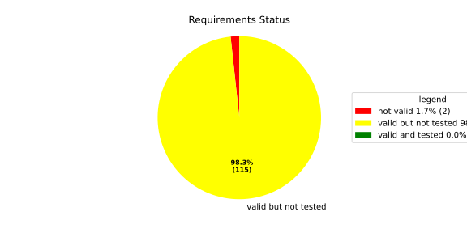
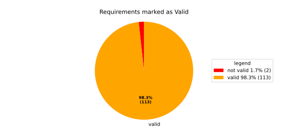
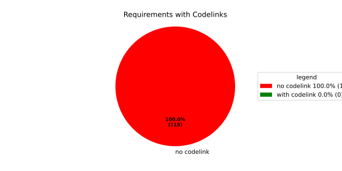

Component Requirements Statistics#
Overview#

In Detail#


No needs passed the filters
Failed Tests
Hint: This table should be empty. Before a PR can be merged all tests have to be successful.
No needs passed the filters
Skipped / Disabled Tests
No needs passed the filters
All passed Tests#
No needs passed the filters
Details About Testcases#
No needs passed the filters
No needs passed the filters
Test Log Files#
tests-report/tests/integration/switch_run_target/switch_run_target/test.log
exec ${PAGER:-/usr/bin/less} "$0" || exit 1
Executing tests from //tests/integration/switch_run_target:switch_run_target
-----------------------------------------------------------------------------
============================= test session starts ==============================
platform linux -- Python 3.12.12, pytest-9.0.3, pluggy-1.5.0
rootdir: /home/runner/.bazel/sandbox/processwrapper-sandbox/932/execroot/_main/bazel-out/k8-fastbuild/bin/tests/integration/switch_run_target/switch_run_target.runfiles/score_itf+
configfile: pytest.ini
collected 1 item
../score_itf+::test_switch_run_target
-------------------------------- live log setup --------------------------------
[2026-06-18 08:30:04.376] [INFO] [score.itf.plugins.docker] Executing custom image bootstrap command: tests/utils/environments/x86_64-linux/x86_64-linux.sh
[2026-06-18 08:30:07.839] [DEBUG] [docker.utils.config] Trying paths: ['/home/runner/.docker/config.json', '/home/runner/.dockercfg']
[2026-06-18 08:30:07.839] [DEBUG] [docker.utils.config] Found file at path: /home/runner/.docker/config.json
[2026-06-18 08:30:07.840] [DEBUG] [docker.auth] Found 'auths' section
[2026-06-18 08:30:07.840] [DEBUG] [docker.auth] Found entry (registry='https://index.docker.io/v1/', username='githubactions')
[2026-06-18 08:30:07.848] [DEBUG] [urllib3.connectionpool] http://localhost:None "GET /version HTTP/1.1" 200 823
[2026-06-18 08:30:08.010] [DEBUG] [urllib3.connectionpool] http://localhost:None "POST /v1.48/containers/create HTTP/1.1" 201 88
[2026-06-18 08:30:08.011] [DEBUG] [urllib3.connectionpool] http://localhost:None "GET /v1.48/containers/7846344f85c8cda23c1d880c30db080813284a118fca1e3c9293bf26e5f98a82/json HTTP/1.1" 200 None
[2026-06-18 08:30:08.294] [DEBUG] [urllib3.connectionpool] http://localhost:None "POST /v1.48/containers/7846344f85c8cda23c1d880c30db080813284a118fca1e3c9293bf26e5f98a82/start HTTP/1.1" 204 0
[2026-06-18 08:30:08.296] [DEBUG] [docker.utils.config] Trying paths: ['/home/runner/.docker/config.json', '/home/runner/.dockercfg']
[2026-06-18 08:30:08.297] [DEBUG] [docker.utils.config] Found file at path: /home/runner/.docker/config.json
[2026-06-18 08:30:08.297] [DEBUG] [docker.auth] Found 'auths' section
[2026-06-18 08:30:08.297] [DEBUG] [docker.auth] Found entry (registry='https://index.docker.io/v1/', username='githubactions')
[2026-06-18 08:30:08.309] [DEBUG] [urllib3.connectionpool] http://localhost:None "GET /version HTTP/1.1" 200 823
[2026-06-18 08:30:08.564] [INFO] [tests.utils.testing_utils.setup_test] Test case setup finished
-------------------------------- live log call ---------------------------------
[2026-06-18 08:30:08.698] [INFO] [launch_manager] 2026/06/18 08:30:08.1408691 1335749 000 ECU1 LM LM log debug verbose 1 Launch Manager Started !!!!
[2026-06-18 08:30:08.698] [INFO] [launch_manager] 2026/06/18 08:30:08.1408692 1335754 000 ECU1 LM LM log debug verbose 1
[2026-06-18 08:30:08.698] [INFO] [launch_manager] Loading LCM Configurations...
[2026-06-18 08:30:08.698] [INFO] [launch_manager] 2026/06/18 08:30:08.1408692 1335755 000 ECU1 LM LM log debug verbose 1 ECUCFG_ENV_VAR_ROOTFOLDER set successfully
[2026-06-18 08:30:08.698] [INFO] [launch_manager] 2026/06/18 08:30:08.1408692 1335757 000 ECU1 LM LM log debug verbose 5 ConfigurationAdapter: Built configuration with 5 processes and 6 states
[2026-06-18 08:30:08.698] [INFO] [launch_manager] 2026/06/18 08:30:08.1408692 1335758 000 ECU1 LM LM log debug verbose 2 1 process group(s)
[2026-06-18 08:30:08.698] [INFO] [launch_manager] 2026/06/18 08:30:08.1408692 1335758 000 ECU1 LM LM log debug verbose 3 Creating graph with 5 nodes
[2026-06-18 08:30:08.698] [INFO] [launch_manager] 2026/06/18 08:30:08.1408692 1335758 000 ECU1 LM LM log debug verbose 1 Process groups initialized successfully
[2026-06-18 08:30:08.698] [INFO] [launch_manager] 2026/06/18 08:30:08.1408693 1335758 000 ECU1 LM LM log debug verbose 1 Process Group initialization done
[2026-06-18 08:30:08.699] [INFO] [launch_manager] 2026/06/18 08:30:08.1408693 1335759 000 ECU1 LM LM log debug verbose 3 Creating Safe Process Map with 5 entries
[2026-06-18 08:30:08.699] [INFO] [launch_manager] 2026/06/18 08:30:08.1408693 1335759 000 ECU1 LM LM log debug verbose 2 Creating job queue with capacity 1024
[2026-06-18 08:30:08.699] [INFO] [launch_manager] 2026/06/18 08:30:08.1408693 1335759 000 ECU1 LM LM log debug verbose 1 Creating worker threads...
[2026-06-18 08:30:08.699] [INFO] [launch_manager] 2026/06/18 08:30:08.1408694 1335773 000 ECU1 LM LM log debug verbose 7 Process group index 0 (with name MainPG ) has 5 processes
[2026-06-18 08:30:08.699] [INFO] [launch_manager] 2026/06/18 08:30:08.1408694 1335774 000 ECU1 LM LM log debug verbose 2 Creating process node with id: 0
[2026-06-18 08:30:08.699] [INFO] [launch_manager] 2026/06/18 08:30:08.1408694 1335774 000 ECU1 LM LM log debug verbose 5 Process 0 has 0 start dependencies
[2026-06-18 08:30:08.699] [INFO] [launch_manager] 2026/06/18 08:30:08.1408694 1335774 000 ECU1 LM LM log debug verbose 2 Creating process node with id: 1
[2026-06-18 08:30:08.699] [INFO] [launch_manager] 2026/06/18 08:30:08.1408694 1335774 000 ECU1 LM LM log debug verbose 5 Process 1 has 1 start dependencies
[2026-06-18 08:30:08.699] [INFO] [launch_manager] 2026/06/18 08:30:08.1408694 1335775 000 ECU1 LM LM log debug verbose 2 Creating process node with id: 2
[2026-06-18 08:30:08.699] [INFO] [launch_manager] 2026/06/18 08:30:08.1408694 1335775 000 ECU1 LM LM log debug verbose 5 Process 2 has 0 start dependencies
[2026-06-18 08:30:08.699] [INFO] [launch_manager] 2026/06/18 08:30:08.1408694 1335775 000 ECU1 LM LM log debug verbose 2 Creating process node with id: 3
[2026-06-18 08:30:08.699] [INFO] [launch_manager] 2026/06/18 08:30:08.1408694 1335775 000 ECU1 LM LM log debug verbose 5 Process 3 has 0 start dependencies
[2026-06-18 08:30:08.699] [INFO] [launch_manager] 2026/06/18 08:30:08.1408694 1335775 000 ECU1 LM LM log debug verbose 2 Creating process node with id: 4
[2026-06-18 08:30:08.699] [INFO] [launch_manager] 2026/06/18 08:30:08.1408694 1335776 000 ECU1 LM LM log debug verbose 5 Process 4 has 0 start dependencies
[2026-06-18 08:30:08.699] [INFO] [launch_manager] 2026/06/18 08:30:08.1408694 1335776 000 ECU1 LM LM log debug verbose 3 Created 5 process nodes
[2026-06-18 08:30:08.699] [INFO] [launch_manager] 2026/06/18 08:30:08.1408694 1335776 000 ECU1 LM LM log debug verbose 2 Creating successor lists for process group MainPG
[2026-06-18 08:30:08.702] [INFO] [launch_manager] 2026/06/18 08:30:08.1408694 1335776 000 ECU1 LM LM log debug verbose 4 Adding kRunning successor for process 2 : 1
[2026-06-18 08:30:08.702] [INFO] [launch_manager] 2026/06/18 08:30:08.1408694 1335776 000 ECU1 LM LM log debug verbose 4 Added successor node dependency: 2 -> 1
[2026-06-18 08:30:08.703] [INFO] [launch_manager] 2026/06/18 08:30:08.1408694 1335776 000 ECU1 LM LM log debug verbose 1 Graphs initialized
[2026-06-18 08:30:08.703] [INFO] [launch_manager] 2026/06/18 08:30:08.1408695 1335779 000 ECU1 LM Fcty log info verbose 2
[2026-06-18 08:30:08.703] [INFO] [launch_manager] Factory for FlatCfg MachineConfig: Loading of HM Machine Configuration succeeded.
[2026-06-18 08:30:08.703] [INFO] [launch_manager] 2026/06/18 08:30:08.1408695 1335781 000 ECU1 LM Fcty log debug verbose 3 Factory for FlatCfg MachineConfig: Alive Supervision buffer size: 100
[2026-06-18 08:30:08.703] [INFO] [launch_manager] 2026/06/18 08:30:08.1408695 1335781 000 ECU1 LM Fcty log debug verbose 3 Factory for FlatCfg MachineConfig: Monitor buffer size: 512
[2026-06-18 08:30:08.703] [INFO] [launch_manager] 2026/06/18 08:30:08.1408695 1335782 000 ECU1 LM Fcty log debug verbose 4
[2026-06-18 08:30:08.703] [INFO] [launch_manager] Factory for FlatCfg MachineConfig: Periodicity: 50000000 ns
[2026-06-18 08:30:08.703] [INFO] [launch_manager] 2026/06/18 08:30:08.1408695 1335782 000 ECU1 LM Fcty log debug verbose 3 Factory for FlatCfg MachineConfig: Configured watchdogs: 0
[2026-06-18 08:30:08.703] [INFO] [launch_manager] 2026/06/18 08:30:08.1408695 1335782 000 ECU1 LM Fcty log warn verbose 2 Factory for FlatCfg MachineConfig: No watchdog configured
[2026-06-18 08:30:08.704] [INFO] [launch_manager] 2026/06/18 08:30:08.1408695 1335783 000 ECU1 LM Fcty log debug verbose 2 Software Cluster Handler starts constructing workers: MainCluster
[2026-06-18 08:30:08.704] [INFO] [launch_manager] 2026/06/18 08:30:08.1408695 1335783 000 ECU1 LM Fcty log debug verbose 3 Factory for FlatCfg AR24-11: Successfully created Process States: component_initial
[2026-06-18 08:30:08.704] [INFO] [launch_manager] 2026/06/18 08:30:08.1408695 1335783 000 ECU1 LM Fcty log debug verbose 3 Factory for FlatCfg AR24-11: Number of constructed Process States: 1
[2026-06-18 08:30:08.704] [INFO] [launch_manager] 2026/06/18 08:30:08.1408695 1335784 000 ECU1 LM Fcty log debug verbose 3 Factory for FlatCfg AR24-11: Successfully created Monitor interface IPC with path: lifecycle_health_component_initial
[2026-06-18 08:30:08.704] [INFO] [launch_manager] 2026/06/18 08:30:08.1408695 1335785 000 ECU1 LM Fcty log debug verbose 3 Factory for FlatCfg AR24-11: Number of constructed Monitor interface IPCs: 1
[2026-06-18 08:30:08.704] [INFO] [launch_manager] 2026/06/18 08:30:08.1408695 1335785 000 ECU1 LM Fcty log debug verbose 3 Factory for FlatCfg AR24-11: Successfully created MonitorInterface: /lifecycle_health_component_initial
[2026-06-18 08:30:08.705] [INFO] [launch_manager] 2026/06/18 08:30:08.1408695 1335785 000 ECU1 LM Fcty log debug verbose 3 Factory for FlatCfg AR24-11: Number of constructed Monitor interfaces: 1
[2026-06-18 08:30:08.705] [INFO] [launch_manager] 2026/06/18 08:30:08.1408695 1335785 000 ECU1 LM Fcty log debug verbose 3 Factory for FlatCfg AR24-11: Successfully created supervision checkpoint: component_initial_checkpoint
[2026-06-18 08:30:08.705] [INFO] [launch_manager] 2026/06/18 08:30:08.1408695 1335785 000 ECU1 LM Fcty log debug verbose 3 Factory for FlatCfg AR24-11: Number of constructed supervision checkpoints: 1
[2026-06-18 08:30:08.705] [INFO] [launch_manager] 2026/06/18 08:30:08.1408695 1335786 000 ECU1 LM Fcty log debug verbose 3 Factory for FlatCfg AR24-11: Successfully created alive supervision worker object: component_initial_alive_supervision
[2026-06-18 08:30:08.705] [INFO] [launch_manager] 2026/06/18 08:30:08.1408695 1335786 000 ECU1 LM Fcty log debug verbose 3 Factory for FlatCfg AR24-11: Number of constructed alive supervisions: 1
[2026-06-18 08:30:08.705] [INFO] [launch_manager] 2026/06/18 08:30:08.1408695 1335786 000 ECU1 LM Fcty log info verbose 2 Phm Daemon: The (configured) periodicity in [ns] is set to: 50000000
[2026-06-18 08:30:08.705] [INFO] [launch_manager] 2026/06/18 08:30:08.1408695 1335786 000 ECU1 LM Fcty log debug verbose 2 Phm Daemon: The accuracy of the monotonic system clock in [ns] is: 1
[2026-06-18 08:30:08.705] [INFO] [launch_manager] 2026/06/18 08:30:08.1408695 1335787 000 ECU1 LM Fcty log debug verbose 3 HealthMonitor: Initialization took 0 ms
[2026-06-18 08:30:08.705] [INFO] [launch_manager] 2026/06/18 08:30:08.1408696 1335789 000 ECU1 LM LM log info verbose 1
[2026-06-18 08:30:08.705] [INFO] [launch_manager] LCM started successfully
[2026-06-18 08:30:08.705] [INFO] [launch_manager] 2026/06/18 08:30:08.1408696 1335791 000 ECU1 LM LM log debug verbose 3
[2026-06-18 08:30:08.706] [INFO] [launch_manager] clock() at run(): 38.737000 ms
[2026-06-18 08:30:08.706] [INFO] [launch_manager] 2026/06/18 08:30:08.1408696 1335798 000 ECU1 LM LM log debug verbose 1
[2026-06-18 08:30:08.706] [INFO] [launch_manager] =============STARTING MAINPG STARTUP STATE============
[2026-06-18 08:30:08.706] [INFO] [launch_manager] 2026/06/18 08:30:08.1408697 1335800 000 ECU1 LM LM log debug verbose 9 Graph::setState changes from kSuccess to kInTransition for PG 0 ( MainPG )
[2026-06-18 08:30:08.706] [INFO] [launch_manager] 2026/06/18 08:30:08.1408697 1335801 000 ECU1 LM LM log debug verbose 2 Stop Dependencies: 0
[2026-06-18 08:30:08.706] [INFO] [launch_manager] 2026/06/18 08:30:08.1408697 1335802 000 ECU1 LM LM log debug verbose 2
[2026-06-18 08:30:08.707] [INFO] [launch_manager] Stop Dependencies: 0
[2026-06-18 08:30:08.707] [INFO] [launch_manager] 2026/06/18 08:30:08.1408698 1335810 000 ECU1 LM LM log debug verbose 2 Stop Dependencies: 0
[2026-06-18 08:30:08.707] [INFO] [launch_manager] 2026/06/18 08:30:08.1408698 1335810 000 ECU1 LM LM log debug verbose 2 Stop Dependencies: 0
[2026-06-18 08:30:08.707] [INFO] [launch_manager] 2026/06/18 08:30:08.1408698 1335811 000 ECU1 LM LM log debug verbose 2 Stop Dependencies: 0
[2026-06-18 08:30:08.707] [INFO] [launch_manager] 2026/06/18 08:30:08.1408698 1335811 000 ECU1 LM LM log debug verbose 2 Start Dependencies: 0
[2026-06-18 08:30:08.707] [INFO] [launch_manager] 2026/06/18 08:30:08.1408698 1335811 000 ECU1 LM LM log debug verbose 2 Start Dependencies: 1
[2026-06-18 08:30:08.707] [INFO] [launch_manager] 2026/06/18 08:30:08.1408698 1335811 000 ECU1 LM LM log debug verbose 2 Start Dependencies: 0
[2026-06-18 08:30:08.707] [INFO] [launch_manager] 2026/06/18 08:30:08.1408698 1335811 000 ECU1 LM LM log debug verbose 2 Start Dependencies: 0
[2026-06-18 08:30:08.707] [INFO] [launch_manager] 2026/06/18 08:30:08.1408698 1335811 000 ECU1 LM LM log debug verbose 2 Start Dependencies: 0
[2026-06-18 08:30:08.707] [INFO] [launch_manager] 2026/06/18 08:30:08.1408698 1335812 000 ECU1 LM LM log debug verbose 6 Starting process 0 ( component_initial ) from executable /tmp/tests/switch_run_target/control_client_mock
[2026-06-18 08:30:08.707] [INFO] [launch_manager] 2026/06/18 08:30:08.1408698 1335814 000 ECU1 LM LM log debug verbose 3 Initialize the control client for component_initial process
[2026-06-18 08:30:08.707] [INFO] [launch_manager] 2026/06/18 08:30:08.1408698 1335815 000 ECU1 LM LM log debug verbose 1 ControlClientChannel initialized
[2026-06-18 08:30:08.708] [INFO] [launch_manager] 2026/06/18 08:30:08.1408699 1335824 000 ECU1 LM LM log debug verbose 4 startProcess pid 69 received for process: component_initial
[2026-06-18 08:30:08.708] [INFO] [launch_manager] 2026/06/18 08:30:08.1408699 1335825 000 ECU1 LM LM log debug verbose 1 ControlClientChannel obtained from sync.
[2026-06-18 08:30:08.708] [INFO] [launch_manager] [==========] Running 1 test from 1 test suite.
[2026-06-18 08:30:08.708] [INFO] [launch_manager] [----------] Global test environment set-up.
[2026-06-18 08:30:08.708] [INFO] [launch_manager] [----------] 1 test from SwitchRunTarget
[2026-06-18 08:30:08.708] [INFO] [launch_manager] [ RUN ] SwitchRunTarget.ControlClientMock
[2026-06-18 08:30:08.708] [INFO] [launch_manager] [ STEP ] Report kRunning
[2026-06-18 08:30:08.708] [INFO] [launch_manager] [ END STEP ] Report kRunning
[2026-06-18 08:30:08.708] [INFO] [launch_manager] [ STEP ] Activate run target A
[2026-06-18 08:30:08.709] [INFO] [launch_manager] 2026/06/18 08:30:08.1408706 1335896 000 ECU1 LM LM log debug verbose 1 Request sent. Waiting for acknowledgment...
[2026-06-18 08:30:08.709] [INFO] [launch_manager] 2026/06/18 08:30:08.1408708 1335916 000 ECU1 LM LM log debug verbose 8 ProcessGroupManager::ControlClientHandler: got request kSetStateRequest ( 16 ) re state MainPG/run_target_a of PG MainPG
[2026-06-18 08:30:08.709] [INFO] [launch_manager] 2026/06/18 08:30:08.1408708 1335916 000 ECU1 LM LM log debug verbose 6 Pending state for process group MainPG changed from to MainPG/run_target_a
[2026-06-18 08:30:08.709] [INFO] [launch_manager] 2026/06/18 08:30:08.1408708 1335916 000 ECU1 LM LM log debug verbose 9 Graph::setState changes from kInTransition to kCancelled for PG 0 ( MainPG )
[2026-06-18 08:30:08.709] [INFO] [launch_manager] 2026/06/18 08:30:08.1408708 1335917 000 ECU1 LM LM log debug verbose 1 Control Client handler nudged
[2026-06-18 08:30:08.709] [INFO] [launch_manager] 2026/06/18 08:30:08.1408708 1335917 000 ECU1 LM LM log debug verbose 1 Request acknowledged.
[2026-06-18 08:30:08.709] [INFO] [launch_manager] 2026/06/18 08:30:08.1408708 1335917 000 ECU1 LM LM log debug verbose 1 Request acknowledged.
[2026-06-18 08:30:08.710] [INFO] [launch_manager] 2026/06/18 08:30:08.1408710 1335930 000 ECU1 LM LM log debug verbose 8 Got kRunning for pid 69 ( component_initial ) process 0 of group MainPG
[2026-06-18 08:30:08.710] [INFO] [launch_manager] 2026/06/18 08:30:08.1408710 1335931 000 ECU1 LM LM log debug verbose 7 startProcess for MainPG process 0 ( component_initial ) done
[2026-06-18 08:30:08.710] [INFO] [launch_manager] 2026/06/18 08:30:08.1408710 1335931 000 ECU1 LM LM log debug verbose 1 Control Client handler nudged
[2026-06-18 08:30:08.710] [INFO] [launch_manager] 2026/06/18 08:30:08.1408710 1335931 000 ECU1 LM LM log fatal verbose 3 clock() at failed initial state transition: 40.449000 ms
[2026-06-18 08:30:08.710] [INFO] [launch_manager] 2026/06/18 08:30:08.1408710 1335931 000 ECU1 LM LM log debug verbose 9 Graph::setState changes from kCancelled to kUndefinedState for PG 0 ( MainPG )
[2026-06-18 08:30:08.710] [INFO] [launch_manager] 2026/06/18 08:30:08.1408710 1335932 000 ECU1 LM LM log debug verbose 1 Control Client handler nudged
[2026-06-18 08:30:08.711] [INFO] [launch_manager] 2026/06/18 08:30:08.1408710 1335938 000 ECU1 LM LM log debug verbose 6 Pending state for process group MainPG changed from MainPG/run_target_a to
[2026-06-18 08:30:08.711] [INFO] [launch_manager] 2026/06/18 08:30:08.1408711 1335938 000 ECU1 LM LM log debug verbose 4 Start transition to MainPG/run_target_a for PG MainPG
[2026-06-18 08:30:08.711] [INFO] [launch_manager] 2026/06/18 08:30:08.1408711 1335939 000 ECU1 LM LM log debug verbose 9 Graph::setState changes from kUndefinedState to kInTransition for PG 0 ( MainPG )
[2026-06-18 08:30:08.711] [INFO] [launch_manager] 2026/06/18 08:30:08.1408711 1335939 000 ECU1 LM LM log debug verbose 2 Stop Dependencies: 0
[2026-06-18 08:30:08.711] [INFO] [launch_manager] 2026/06/18 08:30:08.1408711 1335939 000 ECU1 LM LM log debug verbose 2 Stop Dependencies: 0
[2026-06-18 08:30:08.711] [INFO] [launch_manager] 2026/06/18 08:30:08.1408711 1335939 000 ECU1 LM LM log debug verbose 2 Stop Dependencies: 0
[2026-06-18 08:30:08.711] [INFO] [launch_manager] 2026/06/18 08:30:08.1408711 1335939 000 ECU1 LM LM log debug verbose 2 Stop Dependencies: 0
[2026-06-18 08:30:08.712] [INFO] [launch_manager] 2026/06/18 08:30:08.1408711 1335939 000 ECU1 LM LM log debug verbose 2 Stop Dependencies: 0
[2026-06-18 08:30:08.712] [INFO] [launch_manager] 2026/06/18 08:30:08.1408712 1335950 000 ECU1 LM LM log debug verbose 2 Start Dependencies: 0
[2026-06-18 08:30:08.712] [INFO] [launch_manager] 2026/06/18 08:30:08.1408712 1335950 000 ECU1 LM LM log debug verbose 2 Start Dependencies: 1
[2026-06-18 08:30:08.712] [INFO] [launch_manager] 2026/06/18 08:30:08.1408712 1335951 000 ECU1 LM LM log debug verbose 2 Start Dependencies: 0
[2026-06-18 08:30:08.712] [INFO] [launch_manager] 2026/06/18 08:30:08.1408712 1335951 000 ECU1 LM LM log debug verbose 2 Start Dependencies: 0
[2026-06-18 08:30:08.712] [INFO] [launch_manager] 2026/06/18 08:30:08.1408712 1335951 000 ECU1 LM LM log debug verbose 2 Start Dependencies: 0
[2026-06-18 08:30:08.712] [INFO] [launch_manager] 2026/06/18 08:30:08.1408712 1335953 000 ECU1 LM LM log debug verbose 6 Starting process 4 ( component_d ) from executable /tmp/tests/switch_run_target/component_d
[2026-06-18 08:30:08.714] [INFO] [launch_manager] 2026/06/18 08:30:08.1408714 1335974 000 ECU1 LM LM log debug verbose 6 Starting process 2 ( component_b ) from executable /tmp/tests/switch_run_target/component_b
[2026-06-18 08:30:08.717] [INFO] [launch_manager] 2026/06/18 08:30:08.1408716 1335991 000 ECU1 LM LM log debug verbose 4 [==========] Running 1 test from 1 test suite.
[2026-06-18 08:30:08.717] [INFO] [launch_manager] [----------] Global test environment set-up.
[2026-06-18 08:30:08.717] [INFO] [launch_manager] [----------] 1 test from ComponentD
[2026-06-18 08:30:08.717] [INFO] [launch_manager] [ RUN ] ComponentD.RunAndVerify
[2026-06-18 08:30:08.717] [INFO] [launch_manager] [ STEP ] Report running
[2026-06-18 08:30:08.717] [INFO] [launch_manager] startProcess pid 71 received for process: component_d
[2026-06-18 08:30:08.717] [INFO] [launch_manager] 2026/06/18 08:30:08.1408716 1335995 000 ECU1 LM LM log debug verbose 4 startProcess pid 72 received for process: component_b
[2026-06-18 08:30:08.718] [INFO] [launch_manager] [==========] Running 1 test from 1 test suite.
[2026-06-18 08:30:08.718] [INFO] [launch_manager] [----------] Global test environment set-up.
[2026-06-18 08:30:08.718] [INFO] [launch_manager] [----------] 1 test from ComponentB
[2026-06-18 08:30:08.718] [INFO] [launch_manager] [ RUN ] ComponentB.RunAndVerify
[2026-06-18 08:30:08.719] [INFO] [launch_manager] [ END STEP ] Report running
[2026-06-18 08:30:08.719] [INFO] [launch_manager] [ STEP ] Verify startup order
[2026-06-18 08:30:08.719] [INFO] [launch_manager] [ END STEP ] Verify startup order
[2026-06-18 08:30:08.719] [INFO] [launch_manager] [ STEP ] Report running
[2026-06-18 08:30:08.721] [INFO] [launch_manager] 2026/06/18 08:30:08.1408720 1336036 000 ECU1 LM LM log debug verbose 8 Got kRunning for pid 71 ( component_d ) process 4 of group MainPG
[2026-06-18 08:30:08.721] [INFO] [launch_manager] 2026/06/18 08:30:08.1408720 1336037 000 ECU1 LM LM log debug verbose 7 startProcess for MainPG process 4 ( component_d ) done
[2026-06-18 08:30:08.721] [INFO] [launch_manager] [ END STEP ] Report running
[2026-06-18 08:30:08.723] [INFO] [launch_manager] 2026/06/18 08:30:08.1408722 1336056 000 ECU1 LM LM log debug verbose 8 Got kRunning for pid 72 ( component_b ) process 2 of group MainPG
[2026-06-18 08:30:08.723] [INFO] [launch_manager] 2026/06/18 08:30:08.1408722 1336057 000 ECU1 LM LM log debug verbose 6 Starting process 1 ( component_a ) from executable /tmp/tests/switch_run_target/component_a
[2026-06-18 08:30:08.723] [INFO] [launch_manager] 2026/06/18 08:30:08.1408723 1336061 000 ECU1 LM LM log debug verbose 7
[2026-06-18 08:30:08.723] [INFO] [launch_manager] startProcess for MainPG process 2 ( component_b ) done
[2026-06-18 08:30:08.724] [INFO] [launch_manager] 2026/06/18 08:30:08.1408724 1336069 000 ECU1 LM LM log debug verbose 4 startProcess pid 79 received for process: component_a
[2026-06-18 08:30:08.726] [INFO] [launch_manager] [==========] Running 1 test from 1 test suite.
[2026-06-18 08:30:08.726] [INFO] [launch_manager] [----------] Global test environment set-up.
[2026-06-18 08:30:08.726] [INFO] [launch_manager] [----------] 1 test from ComponentA
[2026-06-18 08:30:08.726] [INFO] [launch_manager] [ RUN ] ComponentA.RunAndVerify
[2026-06-18 08:30:08.726] [INFO] [launch_manager] [ STEP ] Report running
[2026-06-18 08:30:08.728] [INFO] [launch_manager] [ END STEP ] Report running
[2026-06-18 08:30:08.728] [INFO] [launch_manager] [ STEP ] Verify startup order
[2026-06-18 08:30:08.729] [INFO] [launch_manager] [ END STEP ] Verify startup order
[2026-06-18 08:30:08.730] [INFO] [launch_manager] 2026/06/18 08:30:08.1408730 1336132 000 ECU1 LM LM log debug verbose 8
[2026-06-18 08:30:08.730] [INFO] [launch_manager] Got kRunning for pid 79 ( component_a ) process 1 of group MainPG
[2026-06-18 08:30:08.731] [INFO] [launch_manager] 2026/06/18 08:30:08.1408730 1336138 000 ECU1 LM LM log debug verbose 7
[2026-06-18 08:30:08.731] [INFO] [launch_manager] startProcess for MainPG process 1 ( component_a ) done
[2026-06-18 08:30:08.731] [INFO] [launch_manager] 2026/06/18 08:30:08.1408731 1336141 000 ECU1 LM LM log debug verbose 9 Graph::setState changes from kInTransition to kSuccess for PG 0 ( MainPG )
[2026-06-18 08:30:08.731] [INFO] [launch_manager] 2026/06/18 08:30:08.1408731 1336141 000 ECU1 LM LM log info verbose 7 Completed the request for PG MainPG to State MainPG/run_target_a in 22 ms
[2026-06-18 08:30:08.731] [INFO] [launch_manager] 2026/06/18 08:30:08.1408731 1336141 000 ECU1 LM LM log debug verbose 1 Control Client handler nudged
[2026-06-18 08:30:08.733] [INFO] [launch_manager] 2026/06/18 08:30:08.1408733 1336160 000 ECU1 LM LM log debug verbose 8 ProcessGroupManager::ControlClientHandler: Sending kSetStateSuccess ( 20 ) re state MainPG/run_target_a of PG MainPG
[2026-06-18 08:30:08.733] [INFO] [launch_manager] 2026/06/18 08:30:08.1408733 1336160 000 ECU1 LM LM log debug verbose 1 Response sent.
[2026-06-18 08:30:08.747] [INFO] [launch_manager] 2026/06/18 08:30:08.1408745 1336288 000 ECU1 LM Sprv log debug verbose 6 Process with Id component_initial changed state PG MainPG/Startup PS 1
[2026-06-18 08:30:08.747] [INFO] [launch_manager] 2026/06/18 08:30:08.1408746 1336288 000 ECU1 LM Sprv log debug verbose 6 Process with Id component_initial changed state PG MainPG/Startup PS 2
[2026-06-18 08:30:08.747] [INFO] [launch_manager] 2026/06/18 08:30:08.1408746 1336289 000 ECU1 LM Sprv log debug verbose 6 Process with Id component_d changed state PG MainPG/run_target_a PS 1
[2026-06-18 08:30:08.747] [INFO] [launch_manager] 2026/06/18 08:30:08.1408746 1336289 000 ECU1 LM Sprv log debug verbose 6 Process with Id component_b changed state PG MainPG/run_target_a PS 1
[2026-06-18 08:30:08.747] [INFO] [launch_manager] 2026/06/18 08:30:08.1408746 1336289 000 ECU1 LM Sprv log debug verbose 6 Process with Id component_d changed state PG MainPG/run_target_a PS 2
[2026-06-18 08:30:08.747] [INFO] [launch_manager] 2026/06/18 08:30:08.1408746 1336289 000 ECU1 LM Sprv log debug verbose 6 Process with Id component_b changed state PG MainPG/run_target_a PS 2
[2026-06-18 08:30:08.747] [INFO] [launch_manager] 2026/06/18 08:30:08.1408746 1336289 000 ECU1 LM Sprv log debug verbose 6 Process with Id component_a changed state PG MainPG/run_target_a PS 1
[2026-06-18 08:30:08.747] [INFO] [launch_manager] 2026/06/18 08:30:08.1408746 1336290 000 ECU1 LM Sprv log debug verbose 6
[2026-06-18 08:30:08.747] [INFO] [launch_manager] Process with Id component_a changed state PG MainPG/run_target_a PS 2
[2026-06-18 08:30:08.747] [INFO] [launch_manager] 2026/06/18 08:30:08.1408747 1336301 000 ECU1 LM Sprv log info verbose 3
[2026-06-18 08:30:08.748] [INFO] [launch_manager] Alive Supervision ( component_initial_alive_supervision ) switched to OK.
[2026-06-18 08:30:08.759] [DEBUG] [tests.utils.testing_utils.run_until_file_deployed] Waiting for /tmp/tests/test_end
[2026-06-18 08:30:08.803] [INFO] [launch_manager] 2026/06/18 08:30:08.1408802 1336858 000 ECU1 LM LM log debug verbose 1 Response retrieved.
[2026-06-18 08:30:08.803] [INFO] [launch_manager] [ END STEP ] Activate run target A
[2026-06-18 08:30:08.803] [INFO] [launch_manager] [ STEP ] Verify running processes
[2026-06-18 08:30:08.803] [INFO] [launch_manager] [ END STEP ] Verify running processes
[2026-06-18 08:30:08.803] [INFO] [launch_manager] [ STEP ] Activate RunTarget Startup
[2026-06-18 08:30:08.803] [INFO] [launch_manager] 2026/06/18 08:30:08.1408803 1336860 000 ECU1 LM LM log debug verbose 1 Request sent. Waiting for acknowledgment...
[2026-06-18 08:30:08.805] [INFO] [launch_manager] 2026/06/18 08:30:08.1408805 1336881 000 ECU1 LM LM log debug verbose 8 ProcessGroupManager::ControlClientHandler: got request kSetStateRequest ( 16 ) re state MainPG/Startup of PG MainPG
[2026-06-18 08:30:08.805] [INFO] [launch_manager] 2026/06/18 08:30:08.1408805 1336882 000 ECU1 LM LM log debug verbose 6 Pending state for process group MainPG changed from to MainPG/Startup
[2026-06-18 08:30:08.805] [INFO] [launch_manager] 2026/06/18 08:30:08.1408805 1336882 000 ECU1 LM LM log debug verbose 1 Request acknowledged.
[2026-06-18 08:30:08.805] [INFO] [launch_manager] 2026/06/18 08:30:08.1408805 1336882 000 ECU1 LM LM log debug verbose 6 Pending state for process group MainPG changed from MainPG/Startup to
[2026-06-18 08:30:08.805] [INFO] [launch_manager] 2026/06/18 08:30:08.1408805 1336882 000 ECU1 LM LM log debug verbose 4 Start transition to MainPG/Startup for PG MainPG
[2026-06-18 08:30:08.805] [INFO] [launch_manager] 2026/06/18 08:30:08.1408805 1336882 000 ECU1 LM LM log debug verbose 1 Request acknowledged.
[2026-06-18 08:30:08.805] [INFO] [launch_manager] 2026/06/18 08:30:08.1408805 1336883 000 ECU1 LM LM log debug verbose 9 Graph::setState changes from kSuccess to kInTransition for PG 0 ( MainPG )
[2026-06-18 08:30:08.806] [INFO] [launch_manager] 2026/06/18 08:30:08.1408805 1336883 000 ECU1 LM LM log debug verbose 2 Stop Dependencies: 0
[2026-06-18 08:30:08.806] [INFO] [launch_manager] 2026/06/18 08:30:08.1408805 1336883 000 ECU1 LM LM log debug verbose 2 Stop Dependencies: 0
[2026-06-18 08:30:08.806] [INFO] [launch_manager] 2026/06/18 08:30:08.1408805 1336883 000 ECU1 LM LM log debug verbose 2 Stop Dependencies: 1
[2026-06-18 08:30:08.806] [INFO] [launch_manager] 2026/06/18 08:30:08.1408805 1336883 000 ECU1 LM LM log debug verbose 2 Stop Dependencies: 0
[2026-06-18 08:30:08.806] [INFO] [launch_manager] 2026/06/18 08:30:08.1408805 1336884 000 ECU1 LM LM log debug verbose 2 Stop Dependencies: 0
[2026-06-18 08:30:08.806] [INFO] [launch_manager] 2026/06/18 08:30:08.1408805 1336885 000 ECU1 LM LM log debug verbose 5 terminating process 1 ( component_a )
[2026-06-18 08:30:08.806] [INFO] [launch_manager] 2026/06/18 08:30:08.1408805 1336885 000 ECU1 LM LM log debug verbose 9
[2026-06-18 08:30:08.806] [INFO] [launch_manager] Requesting termination of process 1 of MainPG pid 79 ( component_a )
[2026-06-18 08:30:08.806] [INFO] [launch_manager] 2026/06/18 08:30:08.1408805 1336886 000 ECU1 LM LM log debug verbose 5
[2026-06-18 08:30:08.806] [INFO] [launch_manager] terminating process 4 ( component_d )
[2026-06-18 08:30:08.806] [INFO] [launch_manager] 2026/06/18 08:30:08.1408805 1336887 000 ECU1 LM LM log debug verbose 2 Request termination received for 79
[2026-06-18 08:30:08.806] [INFO] [launch_manager] 2026/06/18 08:30:08.1408805 1336887 000 ECU1 LM LM log debug verbose 9 [ STEP ] Verify termination order
[2026-06-18 08:30:08.806] [INFO] [launch_manager] Requesting termination of process 4 of MainPG pid 71 ( component_d )
[2026-06-18 08:30:08.806] [INFO] [launch_manager] [ END STEP ] Verify termination order
[2026-06-18 08:30:08.806] [INFO] [launch_manager] 2026/06/18 08:30:08.1408805 1336888 000 ECU1 LM LM log debug verbose 2 Request termination received for 71
[2026-06-18 08:30:08.807] [INFO] [launch_manager] [ OK ] ComponentA.RunAndVerify (80 ms)
[2026-06-18 08:30:08.807] [INFO] [launch_manager] [----------] 1 test from ComponentA (80 ms total)
[2026-06-18 08:30:08.807] [INFO] [launch_manager] [----------] Global test environment tear-down
[2026-06-18 08:30:08.807] [INFO] [launch_manager] [ OK ] ComponentD.RunAndVerify (89 ms)
[2026-06-18 08:30:08.807] [INFO] [launch_manager] [----------] 1 test from ComponentD (89 ms total)
[2026-06-18 08:30:08.807] [INFO] [launch_manager] [----------] Global test environment tear-down
[2026-06-18 08:30:08.807] [INFO] [launch_manager] [==========] 1 test from 1 test suite ran. (80 ms total)
[2026-06-18 08:30:08.807] [INFO] [launch_manager] [ PASSED ] 1 test.
[2026-06-18 08:30:08.807] [INFO] [launch_manager] [==========] 1 test from 1 test suite ran. (89 ms total)
[2026-06-18 08:30:08.807] [INFO] [launch_manager] [ PASSED ] 1 test.
[2026-06-18 08:30:08.807] [INFO] [launch_manager] 2026/06/18 08:30:08.1408806 1336896 000 ECU1 LM LM log debug verbose 12 Child process 1 of MainPG pid 79 ( component_a ) for node True terminated with status 0
[2026-06-18 08:30:08.807] [INFO] [launch_manager] 2026/06/18 08:30:08.1408806 1336896 000 ECU1 LM LM log debug verbose 12 Child process 4 of MainPG pid 71 ( component_d ) for node True terminated with status 0
[2026-06-18 08:30:08.808] [INFO] [launch_manager] 2026/06/18 08:30:08.1408807 1336908 000 ECU1 LM LM log debug verbose 5 Queuing jobs after regular termination of process wait 1 ( component_a )
[2026-06-18 08:30:08.808] [INFO] [launch_manager] 2026/06/18 08:30:08.1408808 1336908 000 ECU1 LM LM log debug verbose 7 terminateProcess for MainPG process 1 ( component_a ) done
[2026-06-18 08:30:08.808] [INFO] [launch_manager] 2026/06/18 08:30:08.1408808 1336909 000 ECU1 LM LM log debug verbose 5 terminating process 2 ( component_b )
[2026-06-18 08:30:08.808] [INFO] [launch_manager] 2026/06/18 08:30:08.1408808 1336909 000 ECU1 LM LM log debug verbose 9 Requesting termination of process 2 of MainPG pid 72 ( component_b )
[2026-06-18 08:30:08.808] [INFO] [launch_manager] 2026/06/18 08:30:08.1408808 1336909 000 ECU1 LM LM log debug verbose 2 Request termination received for 72
[2026-06-18 08:30:08.808] [INFO] [launch_manager] 2026/06/18 08:30:08.1408808 1336910 000 ECU1 LM LM log debug verbose 5 Queuing jobs after regular termination of process wait 4 ( component_d )
[2026-06-18 08:30:08.808] [INFO] [launch_manager] 2026/06/18 08:30:08.1408808 1336910 000 ECU1 LM LM log debug verbose 7 terminateProcess for MainPG process 4 ( component_d ) done
[2026-06-18 08:30:08.808] [INFO] [launch_manager] [ STEP ] Verify termination order
[2026-06-18 08:30:08.808] [INFO] [launch_manager] [ END STEP ] Verify termination order
[2026-06-18 08:30:08.808] [INFO] [launch_manager] [ OK ] ComponentB.RunAndVerify (89 ms)
[2026-06-18 08:30:08.808] [INFO] [launch_manager] [----------] 1 test from ComponentB (89 ms total)
[2026-06-18 08:30:08.808] [INFO] [launch_manager] [----------] Global test environment tear-down
[2026-06-18 08:30:08.808] [INFO] [launch_manager] [==========] 1 test from 1 test suite ran. (89 ms total)
[2026-06-18 08:30:08.808] [INFO] [launch_manager] [ PASSED ] 1 test.
[2026-06-18 08:30:08.809] [INFO] [launch_manager] 2026/06/18 08:30:08.1408808 1336918 000 ECU1 LM LM log debug verbose 12 Child process 2 of MainPG pid 72 ( component_b ) for node True terminated with status 0
[2026-06-18 08:30:08.810] [INFO] [launch_manager] 2026/06/18 08:30:08.1408810 1336932 000 ECU1 LM LM log debug verbose 5 Queuing jobs after regular termination of process wait 2 ( component_b )
[2026-06-18 08:30:08.810] [INFO] [launch_manager] 2026/06/18 08:30:08.1408810 1336932 000 ECU1 LM LM log debug verbose 7 terminateProcess for MainPG process 2 ( component_b ) done
[2026-06-18 08:30:08.810] [INFO] [launch_manager] 2026/06/18 08:30:08.1408810 1336932 000 ECU1 LM LM log debug verbose 2 Start Dependencies: 0
[2026-06-18 08:30:08.810] [INFO] [launch_manager] 2026/06/18 08:30:08.1408810 1336933 000 ECU1 LM LM log debug verbose 2 Start Dependencies: 1
[2026-06-18 08:30:08.810] [INFO] [launch_manager] 2026/06/18 08:30:08.1408810 1336933 000 ECU1 LM LM log debug verbose 2 Start Dependencies: 0
[2026-06-18 08:30:08.810] [INFO] [launch_manager] 2026/06/18 08:30:08.1408810 1336933 000 ECU1 LM LM log debug verbose 2 Start Dependencies: 0
[2026-06-18 08:30:08.810] [INFO] [launch_manager] 2026/06/18 08:30:08.1408810 1336933 000 ECU1 LM LM log debug verbose 2 Start Dependencies: 0
[2026-06-18 08:30:08.811] [INFO] [launch_manager] 2026/06/18 08:30:08.1408810 1336934 000 ECU1 LM LM log debug verbose 9 Graph::setState changes from kInTransition to kSuccess for PG 0 ( MainPG )
[2026-06-18 08:30:08.811] [INFO] [launch_manager] 2026/06/18 08:30:08.1408810 1336934 000 ECU1 LM LM log info verbose 7 Completed the request for PG MainPG to State MainPG/Startup in 5 ms
[2026-06-18 08:30:08.811] [INFO] [launch_manager] 2026/06/18 08:30:08.1408810 1336934 000 ECU1 LM LM log debug verbose 1 Control Client handler nudged
[2026-06-18 08:30:08.812] [INFO] [launch_manager] 2026/06/18 08:30:08.1408811 1336947 000 ECU1 LM LM log debug verbose 8 ProcessGroupManager::ControlClientHandler: Sending kSetStateSuccess ( 20 ) re state MainPG/Startup of PG MainPG
[2026-06-18 08:30:08.812] [INFO] [launch_manager] 2026/06/18 08:30:08.1408811 1336948 000 ECU1 LM LM log debug verbose 1 Response sent.
[2026-06-18 08:30:08.846] [INFO] [launch_manager] 2026/06/18 08:30:08.1408845 1337288 000 ECU1 LM Sprv log debug verbose 6 Process with Id component_a changed state PG MainPG/Startup PS 3
[2026-06-18 08:30:08.846] [INFO] [launch_manager] 2026/06/18 08:30:08.1408845 1337288 000 ECU1 LM Sprv log debug verbose 6 Process with Id component_d changed state PG MainPG/Startup PS 3
[2026-06-18 08:30:08.846] [INFO] [launch_manager] 2026/06/18 08:30:08.1408846 1337288 000 ECU1 LM Sprv log debug verbose 6 Process with Id component_a changed state PG MainPG/Startup PS 4
[2026-06-18 08:30:08.846] [INFO] [launch_manager] 2026/06/18 08:30:08.1408846 1337289 000 ECU1 LM Sprv log debug verbose 6 Process with Id component_d changed state PG MainPG/Startup PS 4
[2026-06-18 08:30:08.846] [INFO] [launch_manager] 2026/06/18 08:30:08.1408846 1337289 000 ECU1 LM Sprv log debug verbose 6 Process with Id component_b changed state PG MainPG/Startup PS 3
[2026-06-18 08:30:08.846] [INFO] [launch_manager] 2026/06/18 08:30:08.1408846 1337289 000 ECU1 LM Sprv log debug verbose 6 Process with Id component_b changed state PG MainPG/Startup PS 4
[2026-06-18 08:30:08.903] [INFO] [launch_manager] 2026/06/18 08:30:08.1408903 1337860 000 ECU1 LM LM log debug verbose 1 Response retrieved.
[2026-06-18 08:30:08.903] [INFO] [launch_manager] [ END STEP ] Activate RunTarget Startup
[2026-06-18 08:30:08.903] [INFO] [launch_manager] [ STEP ] Activate RunTarget Off
[2026-06-18 08:30:08.903] [INFO] [launch_manager] 2026/06/18 08:30:08.1408903 1337861 000 ECU1 LM LM log debug verbose 1 Request sent. Waiting for acknowledgment...
[2026-06-18 08:30:08.904] [INFO] [launch_manager] 2026/06/18 08:30:08.1408904 1337876 000 ECU1 LM LM log debug verbose 8 ProcessGroupManager::ControlClientHandler: got request kSetStateRequest ( 16 ) re state MainPG/Off of PG MainPG
[2026-06-18 08:30:08.905] [INFO] [launch_manager] 2026/06/18 08:30:08.1408904 1337877 000 ECU1 LM LM log debug verbose 6 Pending state for process group MainPG changed from to MainPG/Off
[2026-06-18 08:30:08.905] [INFO] [launch_manager] 2026/06/18 08:30:08.1408904 1337877 000 ECU1 LM LM log debug verbose 1 Request acknowledged.
[2026-06-18 08:30:08.905] [INFO] [launch_manager] 2026/06/18 08:30:08.1408904 1337877 000 ECU1 LM LM log debug verbose 6 Pending state for process group MainPG changed from MainPG/Off to
[2026-06-18 08:30:08.905] [INFO] [launch_manager] 2026/06/18 08:30:08.1408904 1337878 000 ECU1 LM LM log debug verbose 4 Start transition to MainPG/Off for PG MainPG
[2026-06-18 08:30:08.905] [INFO] [launch_manager] 2026/06/18 08:30:08.1408904 1337878 000 ECU1 LM LM log debug verbose 9 Graph::setState changes from kSuccess to kInTransition for PG 0 ( MainPG )
[2026-06-18 08:30:08.905] [INFO] [launch_manager] 2026/06/18 08:30:08.1408904 1337878 000 ECU1 LM LM log debug verbose 2 Stop Dependencies: 0
[2026-06-18 08:30:08.905] [INFO] [launch_manager] 2026/06/18 08:30:08.1408904 1337878 000 ECU1 LM LM log debug verbose 2 Stop Dependencies: 0
[2026-06-18 08:30:08.905] [INFO] [launch_manager] 2026/06/18 08:30:08.1408905 1337878 000 ECU1 LM LM log debug verbose 2 Stop Dependencies: 0
[2026-06-18 08:30:08.905] [INFO] [launch_manager] 2026/06/18 08:30:08.1408905 1337878 000 ECU1 LM LM log debug verbose 2 Stop Dependencies: 0
[2026-06-18 08:30:08.905] [INFO] [launch_manager] 2026/06/18 08:30:08.1408905 1337879 000 ECU1 LM LM log debug verbose 2 Stop Dependencies: 0
[2026-06-18 08:30:08.905] [INFO] [launch_manager] 2026/06/18 08:30:08.1408905 1337880 000 ECU1 LM LM log debug verbose 5 terminating process 0 ( component_initial )
[2026-06-18 08:30:08.905] [INFO] [launch_manager] 2026/06/18 08:30:08.1408905 1337881 000 ECU1 LM LM log debug verbose 9 Requesting termination of process 0 of MainPG pid 69 ( component_initial )
[2026-06-18 08:30:08.905] [INFO] [launch_manager] 2026/06/18 08:30:08.1408905 1337881 000 ECU1 LM LM log debug verbose 2 Request termination received for 69
[2026-06-18 08:30:08.905] [INFO] [launch_manager] 2026/06/18 08:30:08.1408905 1337884 000 ECU1 LM LM log debug verbose 1 Request acknowledged.
[2026-06-18 08:30:08.905] [INFO] [launch_manager] [ END STEP ] Activate RunTarget Off
[2026-06-18 08:30:08.946] [INFO] [launch_manager] 2026/06/18 08:30:08.1408945 1338288 000 ECU1 LM Sprv log debug verbose 6 Process with Id component_initial changed state PG MainPG/Off PS 3
[2026-06-18 08:30:08.946] [INFO] [launch_manager] 2026/06/18 08:30:08.1408945 1338288 000 ECU1 LM Sprv log debug verbose 3 Alive Supervision ( component_initial_alive_supervision ) switched to DEACTIVATED.
[2026-06-18 08:30:09.003] [INFO] [launch_manager] [ OK ] SwitchRunTarget.ControlClientMock (301 ms)
[2026-06-18 08:30:09.004] [INFO] [launch_manager] [----------] 1 test from SwitchRunTarget (301 ms total)
[2026-06-18 08:30:09.004] [INFO] [launch_manager] [----------] Global test environment tear-down
[2026-06-18 08:30:09.004] [INFO] [launch_manager] [==========] 1 test from 1 test suite ran. (301 ms total)
[2026-06-18 08:30:09.004] [INFO] [launch_manager] [ PASSED ] 1 test.
[2026-06-18 08:30:09.004] [INFO] [launch_manager] 2026/06/18 08:30:09.1409004 1338873 000 ECU1 LM LM log debug verbose 12 Child process 0 of MainPG pid 69 ( component_initial ) for node True terminated with status 0
[2026-06-18 08:30:09.006] [INFO] [launch_manager] 2026/06/18 08:30:09.1409006 1338893 000 ECU1 LM LM log debug verbose 5 Queuing jobs after regular termination of process wait 0 ( component_initial )
[2026-06-18 08:30:09.006] [INFO] [launch_manager] 2026/06/18 08:30:09.1409006 1338893 000 ECU1 LM LM log debug verbose 7 terminateProcess for MainPG process 0 ( component_initial ) done
[2026-06-18 08:30:09.006] [INFO] [launch_manager] 2026/06/18 08:30:09.1409006 1338893 000 ECU1 LM LM log debug verbose 2 Start Dependencies: 0
[2026-06-18 08:30:09.006] [INFO] [launch_manager] 2026/06/18 08:30:09.1409006 1338894 000 ECU1 LM LM log debug verbose 2 Start Dependencies: 1
[2026-06-18 08:30:09.006] [INFO] [launch_manager] 2026/06/18 08:30:09.1409006 1338894 000 ECU1 LM LM log debug verbose 2 Start Dependencies: 0
[2026-06-18 08:30:09.006] [INFO] [launch_manager] 2026/06/18 08:30:09.1409006 1338894 000 ECU1 LM LM log debug verbose 2 Start Dependencies: 0
[2026-06-18 08:30:09.006] [INFO] [launch_manager] 2026/06/18 08:30:09.1409006 1338894 000 ECU1 LM LM log debug verbose 2 Start Dependencies: 0
[2026-06-18 08:30:09.007] [INFO] [launch_manager] 2026/06/18 08:30:09.1409006 1338894 000 ECU1 LM LM log debug verbose 9 Graph::setState changes from kInTransition to kSuccess for PG 0 ( MainPG )
[2026-06-18 08:30:09.007] [INFO] [launch_manager] 2026/06/18 08:30:09.1409006 1338895 000 ECU1 LM LM log info verbose 7 Completed the request for PG MainPG to State MainPG/Off in 101 ms
[2026-06-18 08:30:09.007] [INFO] [launch_manager] 2026/06/18 08:30:09.1409006 1338895 000 ECU1 LM LM log debug verbose 1 Control Client handler nudged
[2026-06-18 08:30:09.046] [INFO] [launch_manager] 2026/06/18 08:30:09.1409045 1339288 000 ECU1 LM Sprv log debug verbose 6 Process with Id component_initial changed state PG MainPG/Off PS 4
[2026-06-18 08:30:09.423] [INFO] [launch_manager] 2026/06/18 08:30:09.1409422 1343051 000 ECU1 LM LM log debug verbose 1 Cancel all process group transitions
[2026-06-18 08:30:09.423] [INFO] [launch_manager] 2026/06/18 08:30:09.1409422 1343051 000 ECU1 LM LM log debug verbose 9 Graph::setState changes from kSuccess to kUndefinedState for PG 0 ( MainPG )
[2026-06-18 08:30:09.423] [INFO] [launch_manager] 2026/06/18 08:30:09.1409422 1343052 000 ECU1 LM LM log debug verbose 1 Wait for process group cancellations
[2026-06-18 08:30:09.423] [INFO] [launch_manager] 2026/06/18 08:30:09.1409422 1343052 000 ECU1 LM LM log debug verbose 1 Start transitioning process groups to Off state
[2026-06-18 08:30:09.423] [INFO] [launch_manager] 2026/06/18 08:30:09.1409422 1343052 000 ECU1 LM LM log debug verbose 9 Graph::setState changes from kUndefinedState to kInTransition for PG 0 ( MainPG )
[2026-06-18 08:30:09.423] [INFO] [launch_manager] 2026/06/18 08:30:09.1409422 1343052 000 ECU1 LM LM log debug verbose 2 Stop Dependencies: 0
[2026-06-18 08:30:09.423] [INFO] [launch_manager] 2026/06/18 08:30:09.1409422 1343052 000 ECU1 LM LM log debug verbose 2 Stop Dependencies: 0
[2026-06-18 08:30:09.424] [INFO] [launch_manager] 2026/06/18 08:30:09.1409422 1343053 000 ECU1 LM LM log debug verbose 2 Stop Dependencies: 0
[2026-06-18 08:30:09.424] [INFO] [launch_manager] 2026/06/18 08:30:09.1409422 1343053 000 ECU1 LM LM log debug verbose 2 Stop Dependencies: 0
[2026-06-18 08:30:09.424] [INFO] [launch_manager] 2026/06/18 08:30:09.1409422 1343053 000 ECU1 LM LM log debug verbose 2 Stop Dependencies: 0
[2026-06-18 08:30:09.424] [INFO] [launch_manager] 2026/06/18 08:30:09.1409422 1343053 000 ECU1 LM LM log debug verbose 2 Start Dependencies: 0
[2026-06-18 08:30:09.424] [INFO] [launch_manager] 2026/06/18 08:30:09.1409422 1343053 000 ECU1 LM LM log debug verbose 2 Start Dependencies: 1
[2026-06-18 08:30:09.424] [INFO] [launch_manager] 2026/06/18 08:30:09.1409422 1343053 000 ECU1 LM LM log debug verbose 2 Start Dependencies: 0
[2026-06-18 08:30:09.424] [INFO] [launch_manager] 2026/06/18 08:30:09.1409422 1343053 000 ECU1 LM LM log debug verbose 2 Start Dependencies: 0
[2026-06-18 08:30:09.424] [INFO] [launch_manager] 2026/06/18 08:30:09.1409422 1343054 000 ECU1 LM LM log debug verbose 2 Start Dependencies: 0
[2026-06-18 08:30:09.424] [INFO] [launch_manager] 2026/06/18 08:30:09.1409422 1343054 000 ECU1 LM LM log debug verbose 9 Graph::setState changes from kInTransition to kSuccess for PG 0 ( MainPG )
[2026-06-18 08:30:09.424] [INFO] [launch_manager] 2026/06/18 08:30:09.1409422 1343054 000 ECU1 LM LM log info verbose 7 Completed the request for PG MainPG to State MainPG/Off in 0 ms
[2026-06-18 08:30:09.424] [INFO] [launch_manager] 2026/06/18 08:30:09.1409422 1343054 000 ECU1 LM LM log debug verbose 1 Control Client handler nudged
[2026-06-18 08:30:09.424] [INFO] [launch_manager] 2026/06/18 08:30:09.1409422 1343054 000 ECU1 LM LM log debug verbose 1 Wait for all process groups to complete the transition
[2026-06-18 08:30:09.505] [INFO] [launch_manager] 2026/06/18 08:30:09.1409504 1343878 000 ECU1 LM LM log debug verbose 1 LCM run successfully
[2026-06-18 08:30:09.546] [INFO] [launch_manager] 2026/06/18 08:30:09.1409545 1344288 000 ECU1 LM Fcty log info verbose 1 Phm Daemon: Received termination request - shutting down
[2026-06-18 08:30:09.547] [INFO] [launch_manager] 2026/06/18 08:30:09.1409547 1344299 000 ECU1 LM LM log debug verbose 1 Graph destroyed
[2026-06-18 08:30:09.547] [INFO] [launch_manager] 2026/06/18 08:30:09.1409547 1344299 000 ECU1 LM LM log info verbose 2 Launch Manager completed with exit code value: 0
PASSED [100%]
- generated xml file: /home/runner/.bazel/sandbox/processwrapper-sandbox/932/execroot/_main/bazel-out/k8-fastbuild/testlogs/tests/integration/switch_run_target/switch_run_target/test.xml -
============================== 1 passed in 6.02s ===============================
tests-report/tests/integration/complex_monitoring/complex_monitoring/test.log
exec ${PAGER:-/usr/bin/less} "$0" || exit 1
Executing tests from //tests/integration/complex_monitoring:complex_monitoring
-----------------------------------------------------------------------------
============================= test session starts ==============================
platform linux -- Python 3.12.12, pytest-9.0.3, pluggy-1.5.0
rootdir: /home/runner/.bazel/sandbox/processwrapper-sandbox/938/execroot/_main/bazel-out/k8-fastbuild/bin/tests/integration/complex_monitoring/complex_monitoring.runfiles/score_itf+
configfile: pytest.ini
collected 1 item
../score_itf+::test_complex_monitoring
-------------------------------- live log setup --------------------------------
[2026-06-18 08:30:11.696] [INFO] [score.itf.plugins.docker] Executing custom image bootstrap command: tests/utils/environments/x86_64-linux/x86_64-linux.sh
[2026-06-18 08:30:11.869] [DEBUG] [docker.utils.config] Trying paths: ['/home/runner/.docker/config.json', '/home/runner/.dockercfg']
[2026-06-18 08:30:11.869] [DEBUG] [docker.utils.config] Found file at path: /home/runner/.docker/config.json
[2026-06-18 08:30:11.869] [DEBUG] [docker.auth] Found 'auths' section
[2026-06-18 08:30:11.869] [DEBUG] [docker.auth] Found entry (registry='https://index.docker.io/v1/', username='githubactions')
[2026-06-18 08:30:11.878] [DEBUG] [urllib3.connectionpool] http://localhost:None "GET /version HTTP/1.1" 200 823
[2026-06-18 08:30:11.890] [DEBUG] [urllib3.connectionpool] http://localhost:None "POST /v1.48/containers/create HTTP/1.1" 201 88
[2026-06-18 08:30:11.892] [DEBUG] [urllib3.connectionpool] http://localhost:None "GET /v1.48/containers/615ca9806e1ffdbc57fe959e28a209b8b0f83284547968ddc1733673566035cc/json HTTP/1.1" 200 None
[2026-06-18 08:30:12.084] [DEBUG] [urllib3.connectionpool] http://localhost:None "POST /v1.48/containers/615ca9806e1ffdbc57fe959e28a209b8b0f83284547968ddc1733673566035cc/start HTTP/1.1" 204 0
[2026-06-18 08:30:12.085] [DEBUG] [docker.utils.config] Trying paths: ['/home/runner/.docker/config.json', '/home/runner/.dockercfg']
[2026-06-18 08:30:12.086] [DEBUG] [docker.utils.config] Found file at path: /home/runner/.docker/config.json
[2026-06-18 08:30:12.086] [DEBUG] [docker.auth] Found 'auths' section
[2026-06-18 08:30:12.086] [DEBUG] [docker.auth] Found entry (registry='https://index.docker.io/v1/', username='githubactions')
[2026-06-18 08:30:12.093] [DEBUG] [urllib3.connectionpool] http://localhost:None "GET /version HTTP/1.1" 200 823
[2026-06-18 08:30:12.315] [INFO] [tests.utils.testing_utils.setup_test] Test case setup finished
-------------------------------- live log call ---------------------------------
[2026-06-18 08:30:12.446] [INFO] [launch_manager] 2026/06/18 08:30:12.1412440 1373229 000 ECU1 LM LM log debug verbose 1 Launch Manager Started !!!!
[2026-06-18 08:30:12.450] [INFO] [launch_manager] 2026/06/18 08:30:12.1412440 1373234 000 ECU1 LM LM log debug verbose 1 Loading LCM Configurations...
[2026-06-18 08:30:12.450] [INFO] [launch_manager] 2026/06/18 08:30:12.1412440 1373235 000 ECU1 LM LM log debug verbose 1 ECUCFG_ENV_VAR_ROOTFOLDER set successfully
[2026-06-18 08:30:12.450] [INFO] [launch_manager] 2026/06/18 08:30:12.1412440 1373236 000 ECU1 LM LM log debug verbose 5 ConfigurationAdapter: Built configuration with 3 processes and 5 states
[2026-06-18 08:30:12.450] [INFO] [launch_manager] 2026/06/18 08:30:12.1412440 1373237 000 ECU1 LM LM log debug verbose 2 1 process group(s)
[2026-06-18 08:30:12.450] [INFO] [launch_manager] 2026/06/18 08:30:12.1412440 1373237 000 ECU1 LM LM log debug verbose 3 Creating graph with 3 nodes
[2026-06-18 08:30:12.450] [INFO] [launch_manager] 2026/06/18 08:30:12.1412440 1373237 000 ECU1 LM LM log debug verbose 1 Process groups initialized successfully
[2026-06-18 08:30:12.450] [INFO] [launch_manager] 2026/06/18 08:30:12.1412440 1373237 000 ECU1 LM LM log debug verbose 1 Process Group initialization done
[2026-06-18 08:30:12.450] [INFO] [launch_manager] 2026/06/18 08:30:12.1412440 1373237 000 ECU1 LM LM log debug verbose 3 Creating Safe Process Map with 3 entries
[2026-06-18 08:30:12.451] [INFO] [launch_manager] 2026/06/18 08:30:12.1412440 1373237 000 ECU1 LM LM log debug verbose 2 Creating job queue with capacity 1024
[2026-06-18 08:30:12.451] [INFO] [launch_manager] 2026/06/18 08:30:12.1412440 1373238 000 ECU1 LM LM log debug verbose 1 Creating worker threads...
[2026-06-18 08:30:12.451] [INFO] [launch_manager] 2026/06/18 08:30:12.1412442 1373253 000 ECU1 LM LM log debug verbose 7 Process group index 0 (with name MainPG ) has 3 processes
[2026-06-18 08:30:12.451] [INFO] [launch_manager] 2026/06/18 08:30:12.1412442 1373253 000 ECU1 LM LM log debug verbose 2 Creating process node with id: 0
[2026-06-18 08:30:12.451] [INFO] [launch_manager] 2026/06/18 08:30:12.1412442 1373254 000 ECU1 LM LM log debug verbose 5 Process 0 has 0 start dependencies
[2026-06-18 08:30:12.451] [INFO] [launch_manager] 2026/06/18 08:30:12.1412442 1373254 000 ECU1 LM LM log debug verbose 2 Creating process node with id: 1
[2026-06-18 08:30:12.451] [INFO] [launch_manager] 2026/06/18 08:30:12.1412442 1373254 000 ECU1 LM LM log debug verbose 5 Process 1 has 0 start dependencies
[2026-06-18 08:30:12.451] [INFO] [launch_manager] 2026/06/18 08:30:12.1412442 1373254 000 ECU1 LM LM log debug verbose 2 Creating process node with id: 2
[2026-06-18 08:30:12.451] [INFO] [launch_manager] 2026/06/18 08:30:12.1412442 1373254 000 ECU1 LM LM log debug verbose 5 Process 2 has 0 start dependencies
[2026-06-18 08:30:12.451] [INFO] [launch_manager] 2026/06/18 08:30:12.1412442 1373254 000 ECU1 LM LM log debug verbose 3 Created 3 process nodes
[2026-06-18 08:30:12.451] [INFO] [launch_manager] 2026/06/18 08:30:12.1412442 1373255 000 ECU1 LM LM log debug verbose 2 Creating successor lists for process group MainPG
[2026-06-18 08:30:12.451] [INFO] [launch_manager] 2026/06/18 08:30:12.1412442 1373255 000 ECU1 LM LM log debug verbose 1 Graphs initialized
[2026-06-18 08:30:12.463] [INFO] [launch_manager] 2026/06/18 08:30:12.1412442 1373256 000 ECU1 LM Fcty log info verbose 2 Factory for FlatCfg MachineConfig: Loading of HM Machine Configuration succeeded.
[2026-06-18 08:30:12.463] [INFO] [launch_manager] 2026/06/18 08:30:12.1412442 1373256 000 ECU1 LM Fcty log debug verbose 3 Factory for FlatCfg MachineConfig: Alive Supervision buffer size: 100
[2026-06-18 08:30:12.463] [INFO] [launch_manager] 2026/06/18 08:30:12.1412442 1373257 000 ECU1 LM Fcty log debug verbose 3 Factory for FlatCfg MachineConfig: Monitor buffer size: 512
[2026-06-18 08:30:12.463] [INFO] [launch_manager] 2026/06/18 08:30:12.1412442 1373257 000 ECU1 LM Fcty log debug verbose 4 Factory for FlatCfg MachineConfig: Periodicity: 50000000 ns
[2026-06-18 08:30:12.463] [INFO] [launch_manager] 2026/06/18 08:30:12.1412442 1373257 000 ECU1 LM Fcty log debug verbose 3
[2026-06-18 08:30:12.463] [INFO] [launch_manager] Factory for FlatCfg MachineConfig: Configured watchdogs: 0
[2026-06-18 08:30:12.463] [INFO] [launch_manager] 2026/06/18 08:30:12.1412442 1373257 000 ECU1 LM Fcty log warn verbose 2 Factory for FlatCfg MachineConfig: No watchdog configured
[2026-06-18 08:30:12.463] [INFO] [launch_manager] 2026/06/18 08:30:12.1412442 1373257 000 ECU1 LM Fcty log debug verbose 2 Software Cluster Handler starts constructing workers: MainCluster
[2026-06-18 08:30:12.463] [INFO] [launch_manager] 2026/06/18 08:30:12.1412442 1373258 000 ECU1 LM Fcty log debug verbose 3 Factory for FlatCfg AR24-11: Successfully created Process States: control_client_mock
[2026-06-18 08:30:12.463] [INFO] [launch_manager] 2026/06/18 08:30:12.1412442 1373258 000 ECU1 LM Fcty log debug verbose 3 Factory for FlatCfg AR24-11: Successfully created Process States: component_complex_monitoring
[2026-06-18 08:30:12.464] [INFO] [launch_manager] 2026/06/18 08:30:12.1412442 1373258 000 ECU1 LM Fcty log debug verbose 3 Factory for FlatCfg AR24-11: Number of constructed Process States: 2
[2026-06-18 08:30:12.464] [INFO] [launch_manager] 2026/06/18 08:30:12.1412443 1373259 000 ECU1 LM Fcty log debug verbose 3 Factory for FlatCfg AR24-11: Successfully created Monitor interface IPC with path: lifecycle_health_control_client_mock
[2026-06-18 08:30:12.466] [INFO] [launch_manager] 2026/06/18 08:30:12.1412443 1373260 000 ECU1 LM Fcty log debug verbose 3 Factory for FlatCfg AR24-11: Successfully created Monitor interface IPC with path: lifecycle_health_component_complex_monitoring
[2026-06-18 08:30:12.466] [INFO] [launch_manager] 2026/06/18 08:30:12.1412443 1373261 000 ECU1 LM Fcty log debug verbose 3 Factory for FlatCfg AR24-11: Number of constructed Monitor interface IPCs: 2
[2026-06-18 08:30:12.466] [INFO] [launch_manager] 2026/06/18 08:30:12.1412443 1373261 000 ECU1 LM Fcty log debug verbose 3 Factory for FlatCfg AR24-11: Successfully created MonitorInterface: /lifecycle_health_control_client_mock
[2026-06-18 08:30:12.466] [INFO] [launch_manager] 2026/06/18 08:30:12.1412443 1373261 000 ECU1 LM Fcty log debug verbose 3 Factory for FlatCfg AR24-11: Successfully created MonitorInterface: /lifecycle_health_component_complex_monitoring
[2026-06-18 08:30:12.466] [INFO] [launch_manager] 2026/06/18 08:30:12.1412443 1373261 000 ECU1 LM Fcty log debug verbose 3 Factory for FlatCfg AR24-11: Number of constructed Monitor interfaces: 2
[2026-06-18 08:30:12.466] [INFO] [launch_manager] 2026/06/18 08:30:12.1412443 1373261 000 ECU1 LM Fcty log debug verbose 3 Factory for FlatCfg AR24-11: Successfully created supervision checkpoint: control_client_mock_checkpoint
[2026-06-18 08:30:12.466] [INFO] [launch_manager] 2026/06/18 08:30:12.1412443 1373262 000 ECU1 LM Fcty log debug verbose 3 Factory for FlatCfg AR24-11: Successfully created supervision checkpoint: component_complex_monitoring_checkpoint
[2026-06-18 08:30:12.466] [INFO] [launch_manager] 2026/06/18 08:30:12.1412443 1373262 000 ECU1 LM Fcty log debug verbose 3 Factory for FlatCfg AR24-11: Number of constructed supervision checkpoints: 2
[2026-06-18 08:30:12.466] [INFO] [launch_manager] 2026/06/18 08:30:12.1412443 1373262 000 ECU1 LM Fcty log debug verbose 3 Factory for FlatCfg AR24-11: Successfully created alive supervision worker object: control_client_mock_alive_supervision
[2026-06-18 08:30:12.466] [INFO] [launch_manager] 2026/06/18 08:30:12.1412443 1373262 000 ECU1 LM Fcty log debug verbose 3 Factory for FlatCfg AR24-11: Successfully created alive supervision worker object: component_complex_monitoring_alive_supervision
[2026-06-18 08:30:12.466] [INFO] [launch_manager] 2026/06/18 08:30:12.1412443 1373263 000 ECU1 LM Fcty log debug verbose 3 Factory for FlatCfg AR24-11: Number of constructed alive supervisions: 2
[2026-06-18 08:30:12.467] [INFO] [launch_manager] 2026/06/18 08:30:12.1412443 1373263 000 ECU1 LM Fcty log info verbose 2 Phm Daemon: The (configured) periodicity in [ns] is set to: 50000000
[2026-06-18 08:30:12.467] [INFO] [launch_manager] 2026/06/18 08:30:12.1412443 1373263 000 ECU1 LM Fcty log debug verbose 2 Phm Daemon: The accuracy of the monotonic system clock in [ns] is: 1
[2026-06-18 08:30:12.467] [INFO] [launch_manager] 2026/06/18 08:30:12.1412443 1373263 000 ECU1 LM Fcty log debug verbose 3 HealthMonitor: Initialization took 0 ms
[2026-06-18 08:30:12.469] [INFO] [launch_manager] 2026/06/18 08:30:12.1412443 1373264 000 ECU1 LM LM log info verbose 1 LCM started successfully
[2026-06-18 08:30:12.469] [INFO] [launch_manager] 2026/06/18 08:30:12.1412443 1373264 000 ECU1 LM LM log debug verbose 3 clock() at run(): 35.422000 ms
[2026-06-18 08:30:12.470] [INFO] [launch_manager] 2026/06/18 08:30:12.1412443 1373265 000 ECU1 LM LM log debug verbose 1 =============STARTING MAINPG STARTUP STATE============
[2026-06-18 08:30:12.470] [INFO] [launch_manager] 2026/06/18 08:30:12.1412443 1373265 000 ECU1 LM LM log debug verbose 9 Graph::setState changes from kSuccess to kInTransition for PG 0 ( MainPG )
[2026-06-18 08:30:12.470] [INFO] [launch_manager] 2026/06/18 08:30:12.1412443 1373265 000 ECU1 LM LM log debug verbose 2 Stop Dependencies: 0
[2026-06-18 08:30:12.470] [INFO] [launch_manager] 2026/06/18 08:30:12.1412443 1373266 000 ECU1 LM LM log debug verbose 2 Stop Dependencies: 0
[2026-06-18 08:30:12.473] [INFO] [launch_manager] 2026/06/18 08:30:12.1412443 1373266 000 ECU1 LM LM log debug verbose 2 Stop Dependencies: 0
[2026-06-18 08:30:12.473] [INFO] [launch_manager] 2026/06/18 08:30:12.1412443 1373266 000 ECU1 LM LM log debug verbose 2 Start Dependencies: 0
[2026-06-18 08:30:12.473] [INFO] [launch_manager] 2026/06/18 08:30:12.1412443 1373266 000 ECU1 LM LM log debug verbose 2 Start Dependencies: 0
[2026-06-18 08:30:12.473] [INFO] [launch_manager] 2026/06/18 08:30:12.1412443 1373266 000 ECU1 LM LM log debug verbose 2 Start Dependencies: 0
[2026-06-18 08:30:12.473] [INFO] [launch_manager] 2026/06/18 08:30:12.1412443 1373268 000 ECU1 LM LM log debug verbose 6 Starting process 0 ( control_client_mock ) from executable /tmp/tests/complex_monitoring/control_client_mock
[2026-06-18 08:30:12.474] [INFO] [launch_manager] 2026/06/18 08:30:12.1412443 1373268 000 ECU1 LM LM log debug verbose 3 Initialize the control client for control_client_mock process
[2026-06-18 08:30:12.474] [INFO] [launch_manager] 2026/06/18 08:30:12.1412444 1373269 000 ECU1 LM LM log debug verbose 1 ControlClientChannel initialized
[2026-06-18 08:30:12.474] [INFO] [launch_manager] 2026/06/18 08:30:12.1412444 1373273 000 ECU1 LM LM log debug verbose 4 startProcess pid 68 received for process: control_client_mock
[2026-06-18 08:30:12.474] [INFO] [launch_manager] 2026/06/18 08:30:12.1412444 1373274 000 ECU1 LM LM log debug verbose 1 ControlClientChannel obtained from sync.
[2026-06-18 08:30:12.476] [INFO] [launch_manager] [==========] Running 1 test from 1 test suite.
[2026-06-18 08:30:12.476] [INFO] [launch_manager] [----------] Global test environment set-up.
[2026-06-18 08:30:12.476] [INFO] [launch_manager] [----------] 1 test from ComplexMonitoring
[2026-06-18 08:30:12.476] [INFO] [launch_manager] [ RUN ] ComplexMonitoring.ControlClientMock
[2026-06-18 08:30:12.476] [INFO] [launch_manager] [ STEP ] Report kRunning
[2026-06-18 08:30:12.486] [INFO] [launch_manager] [ END STEP ] Report kRunning
[2026-06-18 08:30:12.487] [INFO] [launch_manager] [ STEP ] Launch monitored process
[2026-06-18 08:30:12.487] [INFO] [launch_manager] 2026/06/18 08:30:12.1412468 1373516 000 ECU1 LM LM log debug verbose 1 Request sent. Waiting for acknowledgment...
[2026-06-18 08:30:12.487] [INFO] [launch_manager] 2026/06/18 08:30:12.1412469 1373523 000 ECU1 LM LM log debug verbose 8 ProcessGroupManager::ControlClientHandler: got request kSetStateRequest ( 16 ) re state MainPG/run_target_complex_monitoring of PG MainPG
[2026-06-18 08:30:12.487] [INFO] [launch_manager] 2026/06/18 08:30:12.1412469 1373523 000 ECU1 LM LM log debug verbose 6 Pending state for process group MainPG changed from to MainPG/run_target_complex_monitoring
[2026-06-18 08:30:12.487] [INFO] [launch_manager] 2026/06/18 08:30:12.1412469 1373524 000 ECU1 LM LM log debug verbose 9 Graph::setState changes from kInTransition to kCancelled for PG 0 ( MainPG )
[2026-06-18 08:30:12.487] [INFO] [launch_manager] 2026/06/18 08:30:12.1412469 1373524 000 ECU1 LM LM log debug verbose 1 Control Client handler nudged
[2026-06-18 08:30:12.487] [INFO] [launch_manager] 2026/06/18 08:30:12.1412469 1373524 000 ECU1 LM LM log debug verbose 1 Request acknowledged.
[2026-06-18 08:30:12.487] [INFO] [launch_manager] 2026/06/18 08:30:12.1412469 1373525 000 ECU1 LM LM log debug verbose 8 Got kRunning for pid 68 ( control_client_mock ) process 0 of group MainPG
[2026-06-18 08:30:12.487] [INFO] [launch_manager] 2026/06/18 08:30:12.1412469 1373525 000 ECU1 LM LM log debug verbose 7 startProcess for MainPG process 0 ( control_client_mock ) done
[2026-06-18 08:30:12.487] [INFO] [launch_manager] 2026/06/18 08:30:12.1412469 1373525 000 ECU1 LM LM log debug verbose 1 Control Client handler nudged
[2026-06-18 08:30:12.487] [INFO] [launch_manager] 2026/06/18 08:30:12.1412469 1373525 000 ECU1 LM LM log fatal verbose 3 clock() at failed initial state transition: 36.981000 ms
[2026-06-18 08:30:12.487] [INFO] [launch_manager] 2026/06/18 08:30:12.1412469 1373526 000 ECU1 LM LM log debug verbose 9 Graph::setState changes from kCancelled to kUndefinedState for PG 0 ( MainPG )
[2026-06-18 08:30:12.487] [INFO] [launch_manager] 2026/06/18 08:30:12.1412469 1373526 000 ECU1 LM LM log debug verbose 1 Control Client handler nudged
[2026-06-18 08:30:12.488] [INFO] [launch_manager] 2026/06/18 08:30:12.1412471 1373545 000 ECU1 LM LM log debug verbose 6 Pending state for process group MainPG changed from MainPG/run_target_complex_monitoring to
[2026-06-18 08:30:12.489] [INFO] [launch_manager] 2026/06/18 08:30:12.1412471 1373546 000 ECU1 LM LM log debug verbose 4 Start transition to MainPG/run_target_complex_monitoring for PG MainPG
[2026-06-18 08:30:12.489] [INFO] [launch_manager] 2026/06/18 08:30:12.1412471 1373546 000 ECU1 LM LM log debug verbose 9 Graph::setState changes from kUndefinedState to kInTransition for PG 0 ( MainPG )
[2026-06-18 08:30:12.489] [INFO] [launch_manager] 2026/06/18 08:30:12.1412471 1373546 000 ECU1 LM LM log debug verbose 2 Stop Dependencies: 0
[2026-06-18 08:30:12.489] [INFO] [launch_manager] 2026/06/18 08:30:12.1412471 1373547 000 ECU1 LM LM log debug verbose 2 Stop Dependencies: 0
[2026-06-18 08:30:12.489] [INFO] [launch_manager] 2026/06/18 08:30:12.1412471 1373547 000 ECU1 LM LM log debug verbose 2 Stop Dependencies: 0
[2026-06-18 08:30:12.489] [INFO] [launch_manager] 2026/06/18 08:30:12.1412471 1373547 000 ECU1 LM LM log debug verbose 2 Start Dependencies: 0
[2026-06-18 08:30:12.489] [INFO] [launch_manager] 2026/06/18 08:30:12.1412471 1373547 000 ECU1 LM LM log debug verbose 2 Start Dependencies: 0
[2026-06-18 08:30:12.489] [INFO] [launch_manager] 2026/06/18 08:30:12.1412471 1373548 000 ECU1 LM LM log debug verbose 2 Start Dependencies: 0
[2026-06-18 08:30:12.489] [INFO] [launch_manager] 2026/06/18 08:30:12.1412471 1373548 000 ECU1 LM LM log debug verbose 6 Starting process 1 ( component_complex_monitoring ) from executable /tmp/tests/complex_monitoring/component_complex_monitoring
[2026-06-18 08:30:12.489] [INFO] [launch_manager] 2026/06/18 08:30:12.1412472 1373556 000 ECU1 LM LM log debug verbose 4 startProcess pid 70 received for process: component_complex_monitoring
[2026-06-18 08:30:12.489] [INFO] [launch_manager] 2026/06/18 08:30:12.1412477 1373600 000 ECU1 LM LM log debug verbose 1 Request acknowledged.
[2026-06-18 08:30:12.490] [INFO] [launch_manager] [==========] Running 1 test from 1 test suite.
[2026-06-18 08:30:12.490] [INFO] [launch_manager] [----------] Global test environment set-up.
[2026-06-18 08:30:12.490] [INFO] [launch_manager] [----------] 1 test from ComplexMonitoring
[2026-06-18 08:30:12.490] [INFO] [launch_manager] [ RUN ] ComplexMonitoring.ComponentComplexMonitoring
[2026-06-18 08:30:12.490] [INFO] [launch_manager] [2026/06/18 08:30:12.4803309][70][HMON][DEBUG] ScoreSupervisorAPIClient: Creating with IDENTIFIER=component_complex_monitoring
[2026-06-18 08:30:12.490] [INFO] [launch_manager] [ STEP ] Report kRunning
[2026-06-18 08:30:12.490] [INFO] [launch_manager] [2026/06/18 08:30:12.4809934][70][HMON][INFO] Monitoring thread started.
[2026-06-18 08:30:12.490] [INFO] [launch_manager] [ END STEP ] Report kRunning
[2026-06-18 08:30:12.491] [INFO] [launch_manager] [ STEP ] Send heartbeats for 1 second
[2026-06-18 08:30:12.491] [INFO] [launch_manager] 2026/06/18 08:30:12.1412491 1373741 000 ECU1 LM LM log debug verbose 8 Got kRunning for pid 70 ( component_complex_monitoring ) process 1 of group MainPG
[2026-06-18 08:30:12.491] [INFO] [launch_manager] 2026/06/18 08:30:12.1412491 1373743 000 ECU1 LM LM log debug verbose 7 startProcess for MainPG process 1 ( component_complex_monitoring ) done
[2026-06-18 08:30:12.491] [INFO] [launch_manager] 2026/06/18 08:30:12.1412491 1373743 000 ECU1 LM LM log debug verbose 9 Graph::setState changes from kInTransition to kSuccess for PG 0 ( MainPG )
[2026-06-18 08:30:12.491] [INFO] [launch_manager] 2026/06/18 08:30:12.1412491 1373743 000 ECU1 LM LM log info verbose 7 Completed the request for PG MainPG to State MainPG/run_target_complex_monitoring in 21 ms
[2026-06-18 08:30:12.491] [INFO] [launch_manager] 2026/06/18 08:30:12.1412491 1373743 000 ECU1 LM LM log debug verbose 1 Control Client handler nudged
[2026-06-18 08:30:12.493] [INFO] [launch_manager] 2026/06/18 08:30:12.1412493 1373763 000 ECU1 LM LM log debug verbose 8 ProcessGroupManager::ControlClientHandler: Sending kSetStateSuccess ( 20 ) re state MainPG/run_target_complex_monitoring of PG MainPG
[2026-06-18 08:30:12.493] [INFO] [launch_manager] 2026/06/18 08:30:12.1412493 1373763 000 ECU1 LM LM log debug verbose 1 Response sent.
[2026-06-18 08:30:12.499] [INFO] [launch_manager] 2026/06/18 08:30:12.1412499 1373822 000 ECU1 LM Sprv log debug verbose 6
[2026-06-18 08:30:12.499] [INFO] [launch_manager] Process with Id control_client_mock changed state PG MainPG/Startup PS 1
[2026-06-18 08:30:12.500] [INFO] [launch_manager] 2026/06/18 08:30:12.1412499 1373828 000 ECU1 LM Sprv log debug verbose 6
[2026-06-18 08:30:12.500] [INFO] [launch_manager] Process with Id control_client_mock changed state PG MainPG/Startup PS 2
[2026-06-18 08:30:12.500] [INFO] [launch_manager] 2026/06/18 08:30:12.1412500 1373833 000 ECU1 LM Sprv log debug verbose 6
[2026-06-18 08:30:12.500] [INFO] [launch_manager] Process with Id component_complex_monitoring changed state PG MainPG/run_target_complex_monitoring PS 1
[2026-06-18 08:30:12.501] [INFO] [launch_manager] 2026/06/18 08:30:12.1412501 1373839 000 ECU1 LM Sprv log debug verbose 6
[2026-06-18 08:30:12.501] [INFO] [launch_manager] Process with Id component_complex_monitoring changed state PG MainPG/run_target_complex_monitoring PS 2
[2026-06-18 08:30:12.501] [INFO] [launch_manager] 2026/06/18 08:30:12.1412501 1373844 000 ECU1 LM Sprv log info verbose 3
[2026-06-18 08:30:12.501] [INFO] [launch_manager] Alive Supervision ( control_client_mock_alive_supervision ) switched to OK.
[2026-06-18 08:30:12.502] [INFO] [launch_manager] 2026/06/18 08:30:12.1412502 1373849 000 ECU1 LM Sprv log info verbose 3
[2026-06-18 08:30:12.502] [INFO] [launch_manager] Alive Supervision ( component_complex_monitoring_alive_supervision ) switched to OK.
[2026-06-18 08:30:12.546] [DEBUG] [tests.utils.testing_utils.run_until_file_deployed] Waiting for /tmp/tests/test_end
[2026-06-18 08:30:12.565] [INFO] [launch_manager] 2026/06/18 08:30:12.1412565 1374479 000 ECU1 LM LM log debug verbose 1
[2026-06-18 08:30:12.565] [INFO] [launch_manager] Response retrieved.
[2026-06-18 08:30:12.565] [INFO] [launch_manager] [ END STEP ] Launch monitored process
[2026-06-18 08:30:13.129] [DEBUG] [tests.utils.testing_utils.run_until_file_deployed] Waiting for /tmp/tests/test_end
[2026-06-18 08:30:13.542] [INFO] [launch_manager] [ END STEP ] Send heartbeats for 1 second
[2026-06-18 08:30:13.589] [INFO] [launch_manager] [2026/06/18 08:30:13.5888226][70][HMON][INFO] Monitoring thread exiting.
[2026-06-18 08:30:13.590] [INFO] [launch_manager] [ OK ] ComplexMonitoring.ComponentComplexMonitoring (1108 ms)
[2026-06-18 08:30:13.590] [INFO] [launch_manager] [----------] 1 test from ComplexMonitoring (1108 ms total)
[2026-06-18 08:30:13.590] [INFO] [launch_manager] [----------] Global test environment tear-down
[2026-06-18 08:30:13.590] [INFO] [launch_manager] [==========] 1 test from 1 test suite ran. (1108 ms total)
[2026-06-18 08:30:13.590] [INFO] [launch_manager] [ PASSED ] 1 test.
[2026-06-18 08:30:13.694] [INFO] [launch_manager] 2026/06/18 08:30:13.1413693 1385765 000 ECU1 LM Sprv log warn verbose 13 Alive Supervision ( component_complex_monitoring_alive_supervision ) switched to EXPIRED , due to 0 reported alive indication(s) (expected >= 1 ). Failed supervision cycles: 0 / 0
[2026-06-18 08:30:13.695] [INFO] [launch_manager] 2026/06/18 08:30:13.1413693 1385766 000 ECU1 LM Sprv log debug verbose 3 Recovery request enqueued successfully for alive supervision component_complex_monitoring_alive_supervision failure
[2026-06-18 08:30:13.715] [DEBUG] [tests.utils.testing_utils.run_until_file_deployed] Waiting for /tmp/tests/test_end
[2026-06-18 08:30:13.766] [INFO] [launch_manager] 2026/06/18 08:30:13.1413765 1386488 000 ECU1 LM LM log debug verbose 4 recoveryActionHandler: Processing recovery request for PG component_complex_monitoring to state MainPG/fallback_run_target
[2026-06-18 08:30:13.766] [INFO] [launch_manager] 2026/06/18 08:30:13.1413766 1386489 000 ECU1 LM LM log debug verbose 6 Pending state for process group MainPG changed from to MainPG/fallback_run_target
[2026-06-18 08:30:13.895] [INFO] [launch_manager] 2026/06/18 08:30:13.1413894 1387771 000 ECU1 LM LM log debug verbose 6 Pending state for process group MainPG changed from MainPG/fallback_run_target to
[2026-06-18 08:30:13.895] [INFO] [launch_manager] 2026/06/18 08:30:13.1413894 1387772 000 ECU1 LM LM log debug verbose 4 Start transition to MainPG/fallback_run_target for PG MainPG
[2026-06-18 08:30:13.895] [INFO] [launch_manager] 2026/06/18 08:30:13.1413894 1387772 000 ECU1 LM LM log debug verbose 9 Graph::setState changes from kSuccess to kInTransition for PG 0 ( MainPG )
[2026-06-18 08:30:13.895] [INFO] [launch_manager] 2026/06/18 08:30:13.1413894 1387772 000 ECU1 LM LM log debug verbose 2 Stop Dependencies: 0
[2026-06-18 08:30:13.895] [INFO] [launch_manager] 2026/06/18 08:30:13.1413894 1387772 000 ECU1 LM LM log debug verbose 2 Stop Dependencies: 0
[2026-06-18 08:30:13.895] [INFO] [launch_manager] 2026/06/18 08:30:13.1413894 1387773 000 ECU1 LM LM log debug verbose 2 Stop Dependencies: 0
[2026-06-18 08:30:13.895] [INFO] [launch_manager] 2026/06/18 08:30:13.1413894 1387774 000 ECU1 LM LM log debug verbose 5 terminating process 1 ( component_complex_monitoring )
[2026-06-18 08:30:13.895] [INFO] [launch_manager] 2026/06/18 08:30:13.1413894 1387774 000 ECU1 LM LM log debug verbose 9 Requesting termination of process 1 of MainPG pid 70 ( component_complex_monitoring )
[2026-06-18 08:30:13.896] [INFO] [launch_manager] 2026/06/18 08:30:13.1413894 1387774 000 ECU1 LM LM log debug verbose 2 Request termination received for 70
[2026-06-18 08:30:13.944] [INFO] [launch_manager] 2026/06/18 08:30:13.1413943 1388265 000 ECU1 LM Sprv log debug verbose 6 Process with Id component_complex_monitoring changed state PG MainPG/fallback_run_target PS 3
[2026-06-18 08:30:13.944] [INFO] [launch_manager] 2026/06/18 08:30:13.1413943 1388266 000 ECU1 LM Sprv log debug verbose 3 Alive Supervision ( component_complex_monitoring_alive_supervision ) switched to DEACTIVATED.
[2026-06-18 08:30:14.103] [INFO] [launch_manager] 2026/06/18 08:30:14.1414102 1389852 000 ECU1 LM LM log warn verbose 5 Process 1 ( component_complex_monitoring ) did not respond to SIGTERM, sending SIGKILL
[2026-06-18 08:30:14.103] [INFO] [launch_manager] 2026/06/18 08:30:14.1414102 1389852 000 ECU1 LM LM log debug verbose 2 Forced termination received for pid 70
[2026-06-18 08:30:14.103] [INFO] [launch_manager] 2026/06/18 08:30:14.1414102 1389857 000 ECU1 LM LM log debug verbose 12 Child process 1 of MainPG pid 70 ( component_complex_monitoring ) for node True terminated with status 9
[2026-06-18 08:30:14.104] [INFO] [launch_manager] 2026/06/18 08:30:14.1414104 1389873 000 ECU1 LM LM log debug verbose 7 terminateProcess for MainPG process 1 ( component_complex_monitoring ) done
[2026-06-18 08:30:14.104] [INFO] [launch_manager] 2026/06/18 08:30:14.1414104 1389874 000 ECU1 LM LM log debug verbose 2 Start Dependencies: 0
[2026-06-18 08:30:14.104] [INFO] [launch_manager] 2026/06/18 08:30:14.1414104 1389874 000 ECU1 LM LM log debug verbose 2 Start Dependencies: 0
[2026-06-18 08:30:14.104] [INFO] [launch_manager] 2026/06/18 08:30:14.1414104 1389874 000 ECU1 LM LM log debug verbose 2 Start Dependencies: 0
[2026-06-18 08:30:14.105] [INFO] [launch_manager] 2026/06/18 08:30:14.1414104 1389874 000 ECU1 LM LM log debug verbose 6 Starting process 2 ( verification_component ) from executable /tmp/tests/complex_monitoring/verification_process
[2026-06-18 08:30:14.106] [INFO] [launch_manager] 2026/06/18 08:30:14.1414105 1389881 000 ECU1 LM LM log debug verbose 4 startProcess pid 91 received for process: verification_component
[2026-06-18 08:30:14.106] [INFO] [launch_manager] 2026/06/18 08:30:14.1414105 1389881 000 ECU1 LM LM log debug verbose 8 Considered kRunning for Non Reporting Process pid 91 ( verification_component ) process 2 of group MainPG
[2026-06-18 08:30:14.106] [INFO] [launch_manager] 2026/06/18 08:30:14.1414105 1389881 000 ECU1 LM LM log debug verbose 7 startProcess for MainPG process 2 ( verification_component ) done
[2026-06-18 08:30:14.106] [INFO] [launch_manager] 2026/06/18 08:30:14.1414105 1389882 000 ECU1 LM LM log debug verbose 9 Graph::setState changes from kInTransition to kSuccess for PG 0 ( MainPG )
[2026-06-18 08:30:14.106] [INFO] [launch_manager] 2026/06/18 08:30:14.1414105 1389882 000 ECU1 LM LM log info verbose 7 Completed the request for PG MainPG to State MainPG/fallback_run_target in 339 ms
[2026-06-18 08:30:14.106] [INFO] [launch_manager] 2026/06/18 08:30:14.1414105 1389882 000 ECU1 LM LM log debug verbose 1 Control Client handler nudged
[2026-06-18 08:30:14.106] [INFO] [launch_manager] 2026/06/18 08:30:14.1414105 1389884 000 ECU1 LM LM log debug verbose 8 ProcessGroupManager::ControlClientHandler: Sending kSetStateSuccess ( 20 ) re state MainPG/fallback_run_target of PG MainPG
[2026-06-18 08:30:14.106] [INFO] [launch_manager] 2026/06/18 08:30:14.1414105 1389884 000 ECU1 LM LM log debug verbose 1 Response sent.
[2026-06-18 08:30:14.108] [INFO] [launch_manager] 2026/06/18 08:30:14.1414108 1389910 000 ECU1 LM LM log debug verbose 12 Child process 2 of MainPG pid 91 ( verification_component ) for node True terminated with status 0
[2026-06-18 08:30:14.144] [INFO] [launch_manager] 2026/06/18 08:30:14.1414143 1390265 000 ECU1 LM Sprv log debug verbose 6 Process with Id component_complex_monitoring changed state PG MainPG/fallback_run_target PS 4
[2026-06-18 08:30:14.167] [INFO] [launch_manager] 2026/06/18 08:30:14.1414167 1390500 000 ECU1 LM LM log debug verbose 1
[2026-06-18 08:30:14.167] [INFO] [launch_manager] Response retrieved.
[2026-06-18 08:30:14.294] [DEBUG] [tests.utils.testing_utils.run_until_file_deployed] Waiting for /tmp/tests/test_end
[2026-06-18 08:30:14.567] [INFO] [launch_manager] [ STEP ] Verify state changed to fallback run target
[2026-06-18 08:30:14.567] [INFO] [launch_manager] [ END STEP ] Verify state changed to fallback run target
[2026-06-18 08:30:14.568] [INFO] [launch_manager] [ STEP ] Activate Off run target
[2026-06-18 08:30:14.568] [INFO] [launch_manager] 2026/06/18 08:30:14.1414566 1394490 000 ECU1 LM LM log debug verbose 1 Request sent. Waiting for acknowledgment...
[2026-06-18 08:30:14.568] [INFO] [launch_manager] 2026/06/18 08:30:14.1414567 1394500 000 ECU1 LM LM log debug verbose 8 ProcessGroupManager::ControlClientHandler: got request kSetStateRequest ( 16 ) re state MainPG/Off of PG MainPG
[2026-06-18 08:30:14.568] [INFO] [launch_manager] 2026/06/18 08:30:14.1414567 1394500 000 ECU1 LM LM log debug verbose 6 Pending state for process group MainPG changed from to MainPG/Off
[2026-06-18 08:30:14.568] [INFO] [launch_manager] 2026/06/18 08:30:14.1414567 1394500 000 ECU1 LM LM log debug verbose 1 Request acknowledged.
[2026-06-18 08:30:14.568] [INFO] [launch_manager] 2026/06/18 08:30:14.1414567 1394501 000 ECU1 LM LM log debug verbose 1 Request acknowledged.
[2026-06-18 08:30:14.568] [INFO] [launch_manager] 2026/06/18 08:30:14.1414567 1394501 000 ECU1 LM LM log debug verbose 6 Pending state for process group MainPG changed from MainPG/Off to
[2026-06-18 08:30:14.569] [INFO] [launch_manager] [ END STEP ] Activate Off run target
[2026-06-18 08:30:14.569] [INFO] [launch_manager] 2026/06/18 08:30:14.1414567 1394501 000 ECU1 LM LM log debug verbose 4 Start transition to MainPG/Off for PG MainPG
[2026-06-18 08:30:14.569] [INFO] [launch_manager] 2026/06/18 08:30:14.1414567 1394501 000 ECU1 LM LM log debug verbose 9 Graph::setState changes from kSuccess to kInTransition for PG 0 ( MainPG )
[2026-06-18 08:30:14.569] [INFO] [launch_manager] 2026/06/18 08:30:14.1414567 1394501 000 ECU1 LM LM log debug verbose 2 Stop Dependencies: 0
[2026-06-18 08:30:14.569] [INFO] [launch_manager] 2026/06/18 08:30:14.1414567 1394502 000 ECU1 LM LM log debug verbose 2 Stop Dependencies: 0
[2026-06-18 08:30:14.570] [INFO] [launch_manager] 2026/06/18 08:30:14.1414567 1394502 000 ECU1 LM LM log debug verbose 2 Stop Dependencies: 0
[2026-06-18 08:30:14.572] [INFO] [launch_manager] 2026/06/18 08:30:14.1414567 1394503 000 ECU1 LM LM log debug verbose 5 terminating process 0 ( control_client_mock )
[2026-06-18 08:30:14.572] [INFO] [launch_manager] 2026/06/18 08:30:14.1414567 1394503 000 ECU1 LM LM log debug verbose 9 Requesting termination of process 0 of MainPG pid 68 ( control_client_mock )
[2026-06-18 08:30:14.572] [INFO] [launch_manager] 2026/06/18 08:30:14.1414567 1394503 000 ECU1 LM LM log debug verbose 2 Request termination received for 68
[2026-06-18 08:30:14.574] [INFO] [launch_manager] [ OK ] ComplexMonitoring.ControlClientMock (2111 ms)
[2026-06-18 08:30:14.574] [INFO] [launch_manager] [----------] 1 test from ComplexMonitoring (2111 ms total)
[2026-06-18 08:30:14.574] [INFO] [launch_manager] [----------] Global test environment tear-down
[2026-06-18 08:30:14.575] [INFO] [launch_manager] [==========] 1 test from 1 test suite ran. (2111 ms total)
[2026-06-18 08:30:14.575] [INFO] [launch_manager] [ PASSED ] 1 test.
[2026-06-18 08:30:14.575] [INFO] [launch_manager] 2026/06/18 08:30:14.1414574 1394577 000 ECU1 LM LM log debug verbose 12 Child process 0 of MainPG pid 68 ( control_client_mock ) for node True terminated with status 0
[2026-06-18 08:30:14.575] [INFO] [launch_manager] 2026/06/18 08:30:14.1414575 1394584 000 ECU1 LM LM log debug verbose 5 Queuing jobs after regular termination of process wait 0 ( control_client_mock )
[2026-06-18 08:30:14.576] [INFO] [launch_manager] 2026/06/18 08:30:14.1414575 1394585 000 ECU1 LM LM log debug verbose 7 terminateProcess for MainPG process 0 ( control_client_mock ) done
[2026-06-18 08:30:14.576] [INFO] [launch_manager] 2026/06/18 08:30:14.1414575 1394585 000 ECU1 LM LM log debug verbose 2 Start Dependencies: 0
[2026-06-18 08:30:14.576] [INFO] [launch_manager] 2026/06/18 08:30:14.1414575 1394585 000 ECU1 LM LM log debug verbose 2 Start Dependencies: 0
[2026-06-18 08:30:14.576] [INFO] [launch_manager] 2026/06/18 08:30:14.1414575 1394585 000 ECU1 LM LM log debug verbose 2 Start Dependencies: 0
[2026-06-18 08:30:14.576] [INFO] [launch_manager] 2026/06/18 08:30:14.1414575 1394586 000 ECU1 LM LM log debug verbose 9 Graph::setState changes from kInTransition to kSuccess for PG 0 ( MainPG )
[2026-06-18 08:30:14.576] [INFO] [launch_manager] 2026/06/18 08:30:14.1414575 1394586 000 ECU1 LM LM log info verbose 7 Completed the request for PG MainPG to State MainPG/Off in 8 ms
[2026-06-18 08:30:14.576] [INFO] [launch_manager] 2026/06/18 08:30:14.1414575 1394586 000 ECU1 LM LM log debug verbose 1 Control Client handler nudged
[2026-06-18 08:30:14.593] [INFO] [launch_manager] 2026/06/18 08:30:14.1414593 1394765 000 ECU1 LM Sprv log debug verbose 6 Process with Id control_client_mock changed state PG MainPG/Off PS 3
[2026-06-18 08:30:14.594] [INFO] [launch_manager] 2026/06/18 08:30:14.1414593 1394765 000 ECU1 LM Sprv log debug verbose 6 Process with Id control_client_mock changed state PG MainPG/Off PS 4
[2026-06-18 08:30:14.594] [INFO] [launch_manager] 2026/06/18 08:30:14.1414593 1394765 000 ECU1 LM Sprv log debug verbose 3 Alive Supervision ( control_client_mock_alive_supervision ) switched to DEACTIVATED.
[2026-06-18 08:30:14.999] [INFO] [launch_manager] 2026/06/18 08:30:14.1414999 1398821 000 ECU1 LM LM log debug verbose 1 Cancel all process group transitions
[2026-06-18 08:30:14.999] [INFO] [launch_manager] 2026/06/18 08:30:14.1414999 1398821 000 ECU1 LM LM log debug verbose 9 Graph::setState changes from kSuccess to kUndefinedState for PG 0 ( MainPG )
[2026-06-18 08:30:14.999] [INFO] [launch_manager] 2026/06/18 08:30:14.1414999 1398821 000 ECU1 LM LM log debug verbose 1 Wait for process group cancellations
[2026-06-18 08:30:14.999] [INFO] [launch_manager] 2026/06/18 08:30:14.1414999 1398821 000 ECU1 LM LM log debug verbose 1 Start transitioning process groups to Off state
[2026-06-18 08:30:15.000] [INFO] [launch_manager] 2026/06/18 08:30:14.1414999 1398822 000 ECU1 LM LM log debug verbose 9 Graph::setState changes from kUndefinedState to kInTransition for PG 0 ( MainPG )
[2026-06-18 08:30:15.000] [INFO] [launch_manager] 2026/06/18 08:30:14.1414999 1398822 000 ECU1 LM LM log debug verbose 2 Stop Dependencies: 0
[2026-06-18 08:30:15.000] [INFO] [launch_manager] 2026/06/18 08:30:14.1414999 1398822 000 ECU1 LM LM log debug verbose 2 Stop Dependencies: 0
[2026-06-18 08:30:15.000] [INFO] [launch_manager] 2026/06/18 08:30:14.1414999 1398822 000 ECU1 LM LM log debug verbose 2 Stop Dependencies: 0
[2026-06-18 08:30:15.000] [INFO] [launch_manager] 2026/06/18 08:30:14.1414999 1398823 000 ECU1 LM LM log debug verbose 2 Start Dependencies: 0
[2026-06-18 08:30:15.000] [INFO] [launch_manager] 2026/06/18 08:30:14.1414999 1398823 000 ECU1 LM LM log debug verbose 2 Start Dependencies: 0
[2026-06-18 08:30:15.000] [INFO] [launch_manager] 2026/06/18 08:30:14.1414999 1398823 000 ECU1 LM LM log debug verbose 2 Start Dependencies: 0
[2026-06-18 08:30:15.000] [INFO] [launch_manager] 2026/06/18 08:30:14.1414999 1398823 000 ECU1 LM LM log debug verbose 9 Graph::setState changes from kInTransition to kSuccess for PG 0 ( MainPG )
[2026-06-18 08:30:15.000] [INFO] [launch_manager] 2026/06/18 08:30:14.1414999 1398823 000 ECU1 LM LM log info verbose 7 Completed the request for PG MainPG to State MainPG/Off in 0 ms
[2026-06-18 08:30:15.000] [INFO] [launch_manager] 2026/06/18 08:30:14.1414999 1398824 000 ECU1 LM LM log debug verbose 1 Control Client handler nudged
[2026-06-18 08:30:15.000] [INFO] [launch_manager] 2026/06/18 08:30:14.1414999 1398824 000 ECU1 LM LM log debug verbose 1 Wait for all process groups to complete the transition
[2026-06-18 08:30:15.080] [INFO] [launch_manager] 2026/06/18 08:30:15.1415080 1399631 000 ECU1 LM LM log debug verbose 1 LCM run successfully
[2026-06-18 08:30:15.093] [INFO] [launch_manager] 2026/06/18 08:30:15.1415093 1399765 000 ECU1 LM Fcty log info verbose 1 Phm Daemon: Received termination request - shutting down
[2026-06-18 08:30:15.095] [INFO] [launch_manager] 2026/06/18 08:30:15.1415095 1399783 000 ECU1 LM LM log debug verbose 1 Graph destroyed
[2026-06-18 08:30:15.095] [INFO] [launch_manager] 2026/06/18 08:30:15.1415095 1399784 000 ECU1 LM LM log info verbose 2 Launch Manager completed with exit code value: 0
PASSED [100%]
- generated xml file: /home/runner/.bazel/sandbox/processwrapper-sandbox/938/execroot/_main/bazel-out/k8-fastbuild/testlogs/tests/integration/complex_monitoring/complex_monitoring/test.xml -
============================== 1 passed in 4.39s ===============================
tests-report/tests/integration/process_crash_monitoring/process_crash_monitoring/test.log
exec ${PAGER:-/usr/bin/less} "$0" || exit 1
Executing tests from //tests/integration/process_crash_monitoring:process_crash_monitoring
-----------------------------------------------------------------------------
============================= test session starts ==============================
platform linux -- Python 3.12.12, pytest-9.0.3, pluggy-1.5.0
rootdir: /home/runner/.bazel/sandbox/processwrapper-sandbox/937/execroot/_main/bazel-out/k8-fastbuild/bin/tests/integration/process_crash_monitoring/process_crash_monitoring.runfiles/score_itf+
configfile: pytest.ini
collected 1 item
../score_itf+::test_process_crash_monitoring
-------------------------------- live log setup --------------------------------
[2026-06-18 08:30:11.696] [INFO] [score.itf.plugins.docker] Executing custom image bootstrap command: tests/utils/environments/x86_64-linux/x86_64-linux.sh
[2026-06-18 08:30:11.873] [DEBUG] [docker.utils.config] Trying paths: ['/home/runner/.docker/config.json', '/home/runner/.dockercfg']
[2026-06-18 08:30:11.873] [DEBUG] [docker.utils.config] Found file at path: /home/runner/.docker/config.json
[2026-06-18 08:30:11.873] [DEBUG] [docker.auth] Found 'auths' section
[2026-06-18 08:30:11.873] [DEBUG] [docker.auth] Found entry (registry='https://index.docker.io/v1/', username='githubactions')
[2026-06-18 08:30:11.882] [DEBUG] [urllib3.connectionpool] http://localhost:None "GET /version HTTP/1.1" 200 823
[2026-06-18 08:30:11.893] [DEBUG] [urllib3.connectionpool] http://localhost:None "POST /v1.48/containers/create HTTP/1.1" 201 88
[2026-06-18 08:30:11.894] [DEBUG] [urllib3.connectionpool] http://localhost:None "GET /v1.48/containers/7e4ae30fcbc309ec181e5ab98fefdc697803e1988c4dab91795bb0031aadb65e/json HTTP/1.1" 200 None
[2026-06-18 08:30:12.067] [DEBUG] [urllib3.connectionpool] http://localhost:None "POST /v1.48/containers/7e4ae30fcbc309ec181e5ab98fefdc697803e1988c4dab91795bb0031aadb65e/start HTTP/1.1" 204 0
[2026-06-18 08:30:12.069] [DEBUG] [docker.utils.config] Trying paths: ['/home/runner/.docker/config.json', '/home/runner/.dockercfg']
[2026-06-18 08:30:12.070] [DEBUG] [docker.utils.config] Found file at path: /home/runner/.docker/config.json
[2026-06-18 08:30:12.070] [DEBUG] [docker.auth] Found 'auths' section
[2026-06-18 08:30:12.071] [DEBUG] [docker.auth] Found entry (registry='https://index.docker.io/v1/', username='githubactions')
[2026-06-18 08:30:12.082] [DEBUG] [urllib3.connectionpool] http://localhost:None "GET /version HTTP/1.1" 200 823
[2026-06-18 08:30:12.290] [INFO] [tests.utils.testing_utils.setup_test] Test case setup finished
-------------------------------- live log call ---------------------------------
[2026-06-18 08:30:12.429] [INFO] [launch_manager] 2026/06/18 08:30:12.1412426 1373099 000 ECU1 LM LM log debug verbose 1 Launch Manager Started !!!!
[2026-06-18 08:30:12.431] [INFO] [launch_manager] 2026/06/18 08:30:12.1412427 1373103 000 ECU1 LM LM log debug verbose 1 Loading LCM Configurations...
[2026-06-18 08:30:12.431] [INFO] [launch_manager] 2026/06/18 08:30:12.1412427 1373104 000 ECU1 LM LM log debug verbose 1 ECUCFG_ENV_VAR_ROOTFOLDER set successfully
[2026-06-18 08:30:12.432] [INFO] [launch_manager] 2026/06/18 08:30:12.1412427 1373105 000 ECU1 LM LM log debug verbose 5 ConfigurationAdapter: Built configuration with 3 processes and 5 states
[2026-06-18 08:30:12.432] [INFO] [launch_manager] 2026/06/18 08:30:12.1412427 1373106 000 ECU1 LM LM log debug verbose 2 1 process group(s)
[2026-06-18 08:30:12.432] [INFO] [launch_manager] 2026/06/18 08:30:12.1412427 1373106 000 ECU1 LM LM log debug verbose 3 Creating graph with 3 nodes
[2026-06-18 08:30:12.432] [INFO] [launch_manager] 2026/06/18 08:30:12.1412427 1373106 000 ECU1 LM LM log debug verbose 1 Process groups initialized successfully
[2026-06-18 08:30:12.432] [INFO] [launch_manager] 2026/06/18 08:30:12.1412427 1373106 000 ECU1 LM LM log debug verbose 1 Process Group initialization done
[2026-06-18 08:30:12.432] [INFO] [launch_manager] 2026/06/18 08:30:12.1412427 1373106 000 ECU1 LM LM log debug verbose 3 Creating Safe Process Map with 3 entries
[2026-06-18 08:30:12.433] [INFO] [launch_manager] 2026/06/18 08:30:12.1412427 1373107 000 ECU1 LM LM log debug verbose 2 Creating job queue with capacity 1024
[2026-06-18 08:30:12.433] [INFO] [launch_manager] 2026/06/18 08:30:12.1412427 1373107 000 ECU1 LM LM log debug verbose 1 Creating worker threads...
[2026-06-18 08:30:12.437] [INFO] [launch_manager] 2026/06/18 08:30:12.1412437 1373198 000 ECU1 LM LM log debug verbose 7 Process group index 0 (with name MainPG ) has 3 processes
[2026-06-18 08:30:12.437] [INFO] [launch_manager] 2026/06/18 08:30:12.1412437 1373199 000 ECU1 LM LM log debug verbose 2 Creating process node with id: 0
[2026-06-18 08:30:12.437] [INFO] [launch_manager] 2026/06/18 08:30:12.1412437 1373199 000 ECU1 LM LM log debug verbose 5 Process 0 has 0 start dependencies
[2026-06-18 08:30:12.437] [INFO] [launch_manager] 2026/06/18 08:30:12.1412437 1373199 000 ECU1 LM LM log debug verbose 2 Creating process node with id: 1
[2026-06-18 08:30:12.437] [INFO] [launch_manager] 2026/06/18 08:30:12.1412437 1373199 000 ECU1 LM LM log debug verbose 5 Process 1 has 0 start dependencies
[2026-06-18 08:30:12.438] [INFO] [launch_manager] 2026/06/18 08:30:12.1412437 1373203 000 ECU1 LM LM log debug verbose 2 Creating process node with id: 2
[2026-06-18 08:30:12.438] [INFO] [launch_manager] 2026/06/18 08:30:12.1412437 1373203 000 ECU1 LM LM log debug verbose 5 Process 2 has 0 start dependencies
[2026-06-18 08:30:12.438] [INFO] [launch_manager] 2026/06/18 08:30:12.1412437 1373203 000 ECU1 LM LM log debug verbose 3 Created 3 process nodes
[2026-06-18 08:30:12.438] [INFO] [launch_manager] 2026/06/18 08:30:12.1412437 1373203 000 ECU1 LM LM log debug verbose 2 Creating successor lists for process group MainPG
[2026-06-18 08:30:12.438] [INFO] [launch_manager] 2026/06/18 08:30:12.1412437 1373204 000 ECU1 LM LM log debug verbose 1 Graphs initialized
[2026-06-18 08:30:12.441] [INFO] [launch_manager] 2026/06/18 08:30:12.1412437 1373205 000 ECU1 LM Fcty log info verbose 2 Factory for FlatCfg MachineConfig: Loading of HM Machine Configuration succeeded.
[2026-06-18 08:30:12.441] [INFO] [launch_manager] 2026/06/18 08:30:12.1412437 1373205 000 ECU1 LM Fcty log debug verbose 3 Factory for FlatCfg MachineConfig: Alive Supervision buffer size: 100
[2026-06-18 08:30:12.441] [INFO] [launch_manager] 2026/06/18 08:30:12.1412437 1373205 000 ECU1 LM Fcty log debug verbose 3 Factory for FlatCfg MachineConfig: Monitor buffer size: 512
[2026-06-18 08:30:12.441] [INFO] [launch_manager] 2026/06/18 08:30:12.1412437 1373205 000 ECU1 LM Fcty log debug verbose 4 Factory for FlatCfg MachineConfig: Periodicity: 50000000 ns
[2026-06-18 08:30:12.441] [INFO] [launch_manager] 2026/06/18 08:30:12.1412437 1373206 000 ECU1 LM Fcty log debug verbose 3 Factory for FlatCfg MachineConfig: Configured watchdogs: 0
[2026-06-18 08:30:12.441] [INFO] [launch_manager] 2026/06/18 08:30:12.1412437 1373206 000 ECU1 LM Fcty log warn verbose 2 Factory for FlatCfg MachineConfig: No watchdog configured
[2026-06-18 08:30:12.441] [INFO] [launch_manager] 2026/06/18 08:30:12.1412437 1373206 000 ECU1 LM Fcty log debug verbose 2 Software Cluster Handler starts constructing workers: MainCluster
[2026-06-18 08:30:12.441] [INFO] [launch_manager] 2026/06/18 08:30:12.1412437 1373206 000 ECU1 LM Fcty log debug verbose 3 Factory for FlatCfg AR24-11: Successfully created Process States: control_client_mock
[2026-06-18 08:30:12.441] [INFO] [launch_manager] 2026/06/18 08:30:12.1412437 1373207 000 ECU1 LM Fcty log debug verbose 3 Factory for FlatCfg AR24-11: Number of constructed Process States: 1
[2026-06-18 08:30:12.441] [INFO] [launch_manager] 2026/06/18 08:30:12.1412437 1373207 000 ECU1 LM Fcty log debug verbose 3 Factory for FlatCfg AR24-11: Successfully created Monitor interface IPC with path: lifecycle_health_control_client_mock
[2026-06-18 08:30:12.441] [INFO] [launch_manager] 2026/06/18 08:30:12.1412437 1373208 000 ECU1 LM Fcty log debug verbose 3 Factory for FlatCfg AR24-11: Number of constructed Monitor interface IPCs: 1
[2026-06-18 08:30:12.441] [INFO] [launch_manager] 2026/06/18 08:30:12.1412437 1373208 000 ECU1 LM Fcty log debug verbose 3 Factory for FlatCfg AR24-11: Successfully created MonitorInterface: /lifecycle_health_control_client_mock
[2026-06-18 08:30:12.442] [INFO] [launch_manager] 2026/06/18 08:30:12.1412437 1373208 000 ECU1 LM Fcty log debug verbose 3 Factory for FlatCfg AR24-11: Number of constructed Monitor interfaces: 1
[2026-06-18 08:30:12.442] [INFO] [launch_manager] 2026/06/18 08:30:12.1412437 1373208 000 ECU1 LM Fcty log debug verbose 3 Factory for FlatCfg AR24-11: Successfully created supervision checkpoint: control_client_mock_checkpoint
[2026-06-18 08:30:12.442] [INFO] [launch_manager] 2026/06/18 08:30:12.1412438 1373208 000 ECU1 LM Fcty log debug verbose 3 Factory for FlatCfg AR24-11: Number of constructed supervision checkpoints: 1
[2026-06-18 08:30:12.442] [INFO] [launch_manager] 2026/06/18 08:30:12.1412438 1373209 000 ECU1 LM Fcty log debug verbose 3 Factory for FlatCfg AR24-11: Successfully created alive supervision worker object: control_client_mock_alive_supervision
[2026-06-18 08:30:12.442] [INFO] [launch_manager] 2026/06/18 08:30:12.1412438 1373209 000 ECU1 LM Fcty log debug verbose 3 Factory for FlatCfg AR24-11: Number of constructed alive supervisions: 1
[2026-06-18 08:30:12.442] [INFO] [launch_manager] 2026/06/18 08:30:12.1412438 1373209 000 ECU1 LM Fcty log info verbose 2 Phm Daemon: The (configured) periodicity in [ns] is set to: 50000000
[2026-06-18 08:30:12.442] [INFO] [launch_manager] 2026/06/18 08:30:12.1412438 1373209 000 ECU1 LM Fcty log debug verbose 2 Phm Daemon: The accuracy of the monotonic system clock in [ns] is: 1
[2026-06-18 08:30:12.442] [INFO] [launch_manager] 2026/06/18 08:30:12.1412438 1373209 000 ECU1 LM Fcty log debug verbose 3 HealthMonitor: Initialization took 0 ms
[2026-06-18 08:30:12.448] [INFO] [launch_manager] 2026/06/18 08:30:12.1412447 1373301 000 ECU1 LM LM log info verbose 1 LCM started successfully
[2026-06-18 08:30:12.448] [INFO] [launch_manager] 2026/06/18 08:30:12.1412447 1373301 000 ECU1 LM LM log debug verbose 3 clock() at run(): 35.214000 ms
[2026-06-18 08:30:12.448] [INFO] [launch_manager] 2026/06/18 08:30:12.1412447 1373302 000 ECU1 LM LM log debug verbose 1 =============STARTING MAINPG STARTUP STATE============
[2026-06-18 08:30:12.448] [INFO] [launch_manager] 2026/06/18 08:30:12.1412447 1373303 000 ECU1 LM LM log debug verbose 9 Graph::setState changes from kSuccess to kInTransition for PG 0 ( MainPG )
[2026-06-18 08:30:12.448] [INFO] [launch_manager] 2026/06/18 08:30:12.1412447 1373303 000 ECU1 LM LM log debug verbose 2 Stop Dependencies: 0
[2026-06-18 08:30:12.448] [INFO] [launch_manager] 2026/06/18 08:30:12.1412447 1373303 000 ECU1 LM LM log debug verbose 2 Stop Dependencies: 0
[2026-06-18 08:30:12.448] [INFO] [launch_manager] 2026/06/18 08:30:12.1412447 1373303 000 ECU1 LM LM log debug verbose 2 Stop Dependencies: 0
[2026-06-18 08:30:12.449] [INFO] [launch_manager] 2026/06/18 08:30:12.1412447 1373303 000 ECU1 LM LM log debug verbose 2 Start Dependencies: 0
[2026-06-18 08:30:12.449] [INFO] [launch_manager] 2026/06/18 08:30:12.1412447 1373303 000 ECU1 LM LM log debug verbose 2 Start Dependencies: 0
[2026-06-18 08:30:12.449] [INFO] [launch_manager] 2026/06/18 08:30:12.1412447 1373304 000 ECU1 LM LM log debug verbose 2 Start Dependencies: 0
[2026-06-18 08:30:12.449] [INFO] [launch_manager] 2026/06/18 08:30:12.1412447 1373305 000 ECU1 LM LM log debug verbose 6 Starting process 0 ( control_client_mock ) from executable /tmp/tests/process_crash_monitoring/control_client_mock
[2026-06-18 08:30:12.449] [INFO] [launch_manager] 2026/06/18 08:30:12.1412447 1373305 000 ECU1 LM LM log debug verbose 3 Initialize the control client for control_client_mock process
[2026-06-18 08:30:12.449] [INFO] [launch_manager] 2026/06/18 08:30:12.1412447 1373306 000 ECU1 LM LM log debug verbose 1 ControlClientChannel initialized
[2026-06-18 08:30:12.449] [INFO] [launch_manager] 2026/06/18 08:30:12.1412448 1373311 000 ECU1 LM LM log debug verbose 4 startProcess pid 68 received for process: control_client_mock
[2026-06-18 08:30:12.449] [INFO] [launch_manager] 2026/06/18 08:30:12.1412448 1373311 000 ECU1 LM LM log debug verbose 1 ControlClientChannel obtained from sync.
[2026-06-18 08:30:12.463] [INFO] [launch_manager] [==========] Running 1 test from 1 test suite.
[2026-06-18 08:30:12.463] [INFO] [launch_manager] [----------] Global test environment set-up.
[2026-06-18 08:30:12.463] [INFO] [launch_manager] [----------] 1 test from ProcessCrashMonitoring
[2026-06-18 08:30:12.463] [INFO] [launch_manager] [ RUN ] ProcessCrashMonitoring.ControlClientMock
[2026-06-18 08:30:12.485] [INFO] [launch_manager] [ STEP ] Report kRunning
[2026-06-18 08:30:12.485] [INFO] [launch_manager] [ END STEP ] Report kRunning
[2026-06-18 08:30:12.485] [INFO] [launch_manager] [ STEP ] Start crashing process
[2026-06-18 08:30:12.486] [INFO] [launch_manager] 2026/06/18 08:30:12.1412468 1373517 000 ECU1 LM LM log debug verbose 1 Request sent. Waiting for acknowledgment...
[2026-06-18 08:30:12.486] [INFO] [launch_manager] 2026/06/18 08:30:12.1412472 1373558 000 ECU1 LM LM log debug verbose 8 ProcessGroupManager::ControlClientHandler: got request kSetStateRequest ( 16 ) re state MainPG/run_target_crashing_app_on_runtime of PG MainPG
[2026-06-18 08:30:12.486] [INFO] [launch_manager] 2026/06/18 08:30:12.1412472 1373558 000 ECU1 LM LM log debug verbose 6 Pending state for process group MainPG changed from to MainPG/run_target_crashing_app_on_runtime
[2026-06-18 08:30:12.486] [INFO] [launch_manager] 2026/06/18 08:30:12.1412473 1373559 000 ECU1 LM LM log debug verbose 9 Graph::setState changes from kInTransition to kCancelled for PG 0 ( MainPG )
[2026-06-18 08:30:12.486] [INFO] [launch_manager] 2026/06/18 08:30:12.1412473 1373559 000 ECU1 LM LM log debug verbose 1 Control Client handler nudged
[2026-06-18 08:30:12.486] [INFO] [launch_manager] 2026/06/18 08:30:12.1412473 1373559 000 ECU1 LM LM log debug verbose 1 Request acknowledged.
[2026-06-18 08:30:12.486] [INFO] [launch_manager] 2026/06/18 08:30:12.1412473 1373560 000 ECU1 LM LM log debug verbose 1 Request acknowledged.
[2026-06-18 08:30:12.488] [INFO] [launch_manager] 2026/06/18 08:30:12.1412487 1373708 000 ECU1 LM LM log debug verbose 8 Got kRunning for pid 68 ( control_client_mock ) process 0 of group MainPG
[2026-06-18 08:30:12.488] [INFO] [launch_manager] 2026/06/18 08:30:12.1412488 1373709 000 ECU1 LM LM log debug verbose 7 startProcess for MainPG process 0 ( control_client_mock ) done
[2026-06-18 08:30:12.488] [INFO] [launch_manager] 2026/06/18 08:30:12.1412488 1373709 000 ECU1 LM LM log debug verbose 1 Control Client handler nudged
[2026-06-18 08:30:12.488] [INFO] [launch_manager] 2026/06/18 08:30:12.1412488 1373709 000 ECU1 LM LM log fatal verbose 3 clock() at failed initial state transition: 36.947000 ms
[2026-06-18 08:30:12.489] [INFO] [launch_manager] 2026/06/18 08:30:12.1412488 1373710 000 ECU1 LM LM log debug verbose 9 Graph::setState changes from kCancelled to kUndefinedState for PG 0 ( MainPG )
[2026-06-18 08:30:12.489] [INFO] [launch_manager] 2026/06/18 08:30:12.1412488 1373710 000 ECU1 LM LM log debug verbose 1 Control Client handler nudged
[2026-06-18 08:30:12.490] [INFO] [launch_manager] 2026/06/18 08:30:12.1412489 1373726 000 ECU1 LM Sprv log debug verbose 6 Process with Id control_client_mock changed state PG MainPG/Startup PS 1
[2026-06-18 08:30:12.490] [INFO] [launch_manager] 2026/06/18 08:30:12.1412489 1373726 000 ECU1 LM Sprv log debug verbose 6 Process with Id control_client_mock changed state PG MainPG/Startup PS 2
[2026-06-18 08:30:12.490] [INFO] [launch_manager] 2026/06/18 08:30:12.1412489 1373727 000 ECU1 LM Sprv log info verbose 3 Alive Supervision ( control_client_mock_alive_supervision ) switched to OK.
[2026-06-18 08:30:12.492] [INFO] [launch_manager] 2026/06/18 08:30:12.1412491 1373745 000 ECU1 LM LM log debug verbose 6 Pending state for process group MainPG changed from MainPG/run_target_crashing_app_on_runtime to
[2026-06-18 08:30:12.492] [INFO] [launch_manager] 2026/06/18 08:30:12.1412491 1373746 000 ECU1 LM LM log debug verbose 4 Start transition to MainPG/run_target_crashing_app_on_runtime for PG MainPG
[2026-06-18 08:30:12.492] [INFO] [launch_manager] 2026/06/18 08:30:12.1412491 1373747 000 ECU1 LM LM log debug verbose 9 Graph::setState changes from kUndefinedState to kInTransition for PG 0 ( MainPG )
[2026-06-18 08:30:12.492] [INFO] [launch_manager] 2026/06/18 08:30:12.1412491 1373748 000 ECU1 LM LM log debug verbose 2
[2026-06-18 08:30:12.492] [INFO] [launch_manager] Stop Dependencies: 0
[2026-06-18 08:30:12.492] [INFO] [launch_manager] 2026/06/18 08:30:12.1412492 1373750 000 ECU1 LM LM log debug verbose 2 Stop Dependencies: 0
[2026-06-18 08:30:12.493] [INFO] [launch_manager] 2026/06/18 08:30:12.1412492 1373757 000 ECU1 LM LM log debug verbose 2
[2026-06-18 08:30:12.493] [INFO] [launch_manager] Stop Dependencies: 0
[2026-06-18 08:30:12.493] [INFO] [launch_manager] 2026/06/18 08:30:12.1412493 1373761 000 ECU1 LM LM log debug verbose 2
[2026-06-18 08:30:12.494] [INFO] [launch_manager] Start Dependencies: 0
[2026-06-18 08:30:12.494] [INFO] [launch_manager] 2026/06/18 08:30:12.1412494 1373769 000 ECU1 LM LM log debug verbose 2
[2026-06-18 08:30:12.494] [INFO] [launch_manager] Start Dependencies: 0
[2026-06-18 08:30:12.494] [INFO] [launch_manager] 2026/06/18 08:30:12.1412494 1373770 000 ECU1 LM LM log debug verbose 2
[2026-06-18 08:30:12.494] [INFO] [launch_manager] Start Dependencies: 0
[2026-06-18 08:30:12.495] [INFO] [launch_manager] 2026/06/18 08:30:12.1412494 1373777 000 ECU1 LM LM log debug verbose 6
[2026-06-18 08:30:12.495] [INFO] [launch_manager] Starting process 1 ( component_crashing_on_runtime ) from executable /tmp/tests/process_crash_monitoring/process_crashing_on_runtime
[2026-06-18 08:30:12.498] [INFO] [launch_manager] 2026/06/18 08:30:12.1412496 1373796 000 ECU1 LM LM log debug verbose 4 startProcess pid 76 received for process: component_crashing_on_runtime
[2026-06-18 08:30:12.498] [INFO] [launch_manager] [==========] Running 1 test from 1 test suite.
[2026-06-18 08:30:12.499] [INFO] [launch_manager] [----------] Global test environment set-up.
[2026-06-18 08:30:12.499] [INFO] [launch_manager] [----------] 1 test from ProcessCrashMonitoring
[2026-06-18 08:30:12.499] [INFO] [launch_manager] [ RUN ] ProcessCrashMonitoring.CrashingProcess
[2026-06-18 08:30:12.499] [INFO] [launch_manager] [ STEP ] Report kRunning
[2026-06-18 08:30:12.502] [INFO] [launch_manager] [ END STEP ] Report kRunning
[2026-06-18 08:30:12.503] [INFO] [launch_manager] [ OK ] ProcessCrashMonitoring.CrashingProcess (4 ms)
[2026-06-18 08:30:12.503] [INFO] [launch_manager] [----------] 1 test from ProcessCrashMonitoring (4 ms total)
[2026-06-18 08:30:12.503] [INFO] [launch_manager] [----------] Global test environment tear-down
[2026-06-18 08:30:12.504] [INFO] [launch_manager] [==========] 1 test from 1 test suite ran. (4 ms total)
[2026-06-18 08:30:12.504] [INFO] [launch_manager] [ PASSED ] 1 test.
[2026-06-18 08:30:12.504] [INFO] [launch_manager] 2026/06/18 08:30:12.1412504 1373876 000 ECU1 LM LM log debug verbose 8 Got kRunning for pid 76 ( component_crashing_on_runtime ) process 1 of group MainPG
[2026-06-18 08:30:12.505] [INFO] [launch_manager] 2026/06/18 08:30:12.1412504 1373876 000 ECU1 LM LM log debug verbose 7 startProcess for MainPG process 1 ( component_crashing_on_runtime ) done
[2026-06-18 08:30:12.505] [INFO] [launch_manager] 2026/06/18 08:30:12.1412505 1373881 000 ECU1 LM LM log debug verbose 9
[2026-06-18 08:30:12.505] [INFO] [launch_manager] Graph::setState changes from kInTransition to kSuccess for PG 0 ( MainPG )
[2026-06-18 08:30:12.505] [INFO] [launch_manager] 2026/06/18 08:30:12.1412505 1373887 000 ECU1 LM LM log info verbose 7
[2026-06-18 08:30:12.506] [INFO] [launch_manager] Completed the request for PG MainPG to State MainPG/run_target_crashing_app_on_runtime in 32 ms
[2026-06-18 08:30:12.506] [INFO] [launch_manager] 2026/06/18 08:30:12.1412506 1373892 000 ECU1 LM LM log debug verbose 1
[2026-06-18 08:30:12.506] [INFO] [launch_manager] Control Client handler nudged
[2026-06-18 08:30:12.507] [INFO] [launch_manager] 2026/06/18 08:30:12.1412507 1373900 000 ECU1 LM LM log debug verbose 8 ProcessGroupManager::ControlClientHandler: Sending kSetStateSuccess ( 20 ) re state MainPG/run_target_crashing_app_on_runtime of PG MainPG
[2026-06-18 08:30:12.507] [INFO] [launch_manager] 2026/06/18 08:30:12.1412507 1373900 000 ECU1 LM LM log debug verbose 1 Response sent.
[2026-06-18 08:30:12.525] [DEBUG] [tests.utils.testing_utils.run_until_file_deployed] Waiting for /tmp/tests/test_end
[2026-06-18 08:30:12.539] [INFO] [launch_manager] 2026/06/18 08:30:12.1412539 1374221 000 ECU1 LM Sprv log debug verbose 6 Process with Id component_crashing_on_runtime changed state PG MainPG/run_target_crashing_app_on_runtime PS 1
[2026-06-18 08:30:12.539] [INFO] [launch_manager] 2026/06/18 08:30:12.1412539 1374221 000 ECU1 LM Sprv log debug verbose 6 Process with Id component_crashing_on_runtime changed state PG MainPG/run_target_crashing_app_on_runtime PS 2
[2026-06-18 08:30:12.564] [INFO] [launch_manager] 2026/06/18 08:30:12.1412564 1374470 000 ECU1 LM LM log debug verbose 1 Response retrieved.
[2026-06-18 08:30:12.564] [INFO] [launch_manager] [ END STEP ] Start crashing process
[2026-06-18 08:30:13.087] [DEBUG] [tests.utils.testing_utils.run_until_file_deployed] Waiting for /tmp/tests/test_end
[2026-06-18 08:30:13.505] [INFO] [launch_manager] Process crashing...
[2026-06-18 08:30:13.643] [INFO] [launch_manager] 2026/06/18 08:30:13.1413641 1385242 000 ECU1 LM LM log debug verbose 12 Child process 1 of MainPG pid 76 ( component_crashing_on_runtime ) for node True terminated with status 134
[2026-06-18 08:30:13.644] [INFO] [launch_manager] 2026/06/18 08:30:13.1413641 1385242 000 ECU1 LM LM log warn verbose 7 unexpected termination of process 1 pid 76 ( component_crashing_on_runtime )
[2026-06-18 08:30:13.645] [INFO] [launch_manager] 2026/06/18 08:30:13.1413641 1385242 000 ECU1 LM LM log debug verbose 9 Graph::setState changes from kSuccess to kUndefinedState for PG 0 ( MainPG )
[2026-06-18 08:30:13.646] [INFO] [launch_manager] 2026/06/18 08:30:13.1413646 1385291 000 ECU1 LM Sprv log debug verbose 6
[2026-06-18 08:30:13.646] [INFO] [launch_manager] Process with Id component_crashing_on_runtime changed state PG MainPG/run_target_crashing_app_on_runtime PS 4
[2026-06-18 08:30:13.690] [INFO] [launch_manager] 2026/06/18 08:30:13.1413684 1385675 000 ECU1 LM LM log warn verbose 3 Problem discovered in PG MainPG Activating Recovery state.
[2026-06-18 08:30:13.690] [INFO] [launch_manager] 2026/06/18 08:30:13.1413684 1385675 000 ECU1 LM LM log debug verbose 9 Graph::setState changes from kUndefinedState to kInTransition for PG 0 ( MainPG )
[2026-06-18 08:30:13.690] [INFO] [launch_manager] 2026/06/18 08:30:13.1413684 1385675 000 ECU1 LM LM log debug verbose 2 Stop Dependencies: 0
[2026-06-18 08:30:13.690] [INFO] [launch_manager] 2026/06/18 08:30:13.1413684 1385675 000 ECU1 LM LM log debug verbose 2 Stop Dependencies: 0
[2026-06-18 08:30:13.690] [INFO] [launch_manager] 2026/06/18 08:30:13.1413684 1385676 000 ECU1 LM LM log debug verbose 2 Stop Dependencies: 0
[2026-06-18 08:30:13.690] [INFO] [launch_manager] 2026/06/18 08:30:13.1413684 1385676 000 ECU1 LM LM log debug verbose 2 Start Dependencies: 0
[2026-06-18 08:30:13.690] [INFO] [launch_manager] 2026/06/18 08:30:13.1413684 1385676 000 ECU1 LM LM log debug verbose 2 Start Dependencies: 0
[2026-06-18 08:30:13.690] [INFO] [launch_manager] 2026/06/18 08:30:13.1413684 1385676 000 ECU1 LM LM log debug verbose 2 Start Dependencies: 0
[2026-06-18 08:30:13.694] [INFO] [launch_manager] 2026/06/18 08:30:13.1413693 1385763 000 ECU1 LM LM log debug verbose 6
[2026-06-18 08:30:13.694] [INFO] [launch_manager] Starting process 2 ( verification_component ) from executable /tmp/tests/process_crash_monitoring/verification_process
[2026-06-18 08:30:13.695] [INFO] [launch_manager] 2026/06/18 08:30:13.1413695 1385784 000 ECU1 LM LM log debug verbose 4
[2026-06-18 08:30:13.696] [INFO] [launch_manager] startProcess pid 89 received for process: verification_component
[2026-06-18 08:30:13.696] [INFO] [launch_manager] 2026/06/18 08:30:13.1413695 1385786 000 ECU1 LM LM log debug verbose 8
[2026-06-18 08:30:13.697] [INFO] [launch_manager] Considered kRunning for Non Reporting Process pid 89 ( verification_component ) process 2 of group MainPG
[2026-06-18 08:30:13.697] [INFO] [launch_manager] 2026/06/18 08:30:13.1413696 1385788 000 ECU1 LM LM log debug verbose 7
[2026-06-18 08:30:13.697] [INFO] [launch_manager] startProcess for MainPG process 2 ( verification_component ) done
[2026-06-18 08:30:13.699] [INFO] [launch_manager] 2026/06/18 08:30:13.1413696 1385790 000 ECU1 LM LM log debug verbose 9
[2026-06-18 08:30:13.699] [INFO] [launch_manager] Graph::setState changes from kInTransition to kSuccess for PG 0 ( MainPG )
[2026-06-18 08:30:13.699] [INFO] [launch_manager] 2026/06/18 08:30:13.1413696 1385793 000 ECU1 LM LM log info verbose 7
[2026-06-18 08:30:13.699] [INFO] [launch_manager] Completed the request for PG MainPG to State MainPG/fallback_run_target in 11 ms
[2026-06-18 08:30:13.699] [INFO] [launch_manager] 2026/06/18 08:30:13.1413696 1385796 000 ECU1 LM LM log debug verbose 1
[2026-06-18 08:30:13.699] [INFO] [launch_manager] Control Client handler nudged
[2026-06-18 08:30:13.699] [INFO] [launch_manager] 2026/06/18 08:30:13.1413697 1385801 000 ECU1 LM LM log debug verbose 8 ProcessGroupManager::ControlClientHandler: Sending kSetStateSuccess ( 20 ) re state MainPG/fallback_run_target of PG MainPG
[2026-06-18 08:30:13.699] [INFO] [launch_manager] 2026/06/18 08:30:13.1413697 1385801 000 ECU1 LM LM log debug verbose 1 Response sent.
[2026-06-18 08:30:13.700] [DEBUG] [tests.utils.testing_utils.run_until_file_deployed] Waiting for /tmp/tests/test_end
[2026-06-18 08:30:13.700] [INFO] [launch_manager] 2026/06/18 08:30:13.1413700 1385837 000 ECU1 LM LM log debug verbose 12
[2026-06-18 08:30:13.701] [INFO] [launch_manager] Child process 2 of MainPG pid 89 ( verification_component ) for node True terminated with status 0
[2026-06-18 08:30:13.767] [INFO] [launch_manager] 2026/06/18 08:30:13.1413766 1386496 000 ECU1 LM LM log debug verbose 1 Response retrieved.
[2026-06-18 08:30:14.308] [DEBUG] [tests.utils.testing_utils.run_until_file_deployed] Waiting for /tmp/tests/test_end
[2026-06-18 08:30:14.564] [INFO] [launch_manager] [ STEP ] Verify state changed to fallback run target
[2026-06-18 08:30:14.565] [INFO] [launch_manager] [ END STEP ] Verify state changed to fallback run target
[2026-06-18 08:30:14.565] [INFO] [launch_manager] [ STEP ] Activate RunTarget Off
[2026-06-18 08:30:14.568] [INFO] [launch_manager] 2026/06/18 08:30:14.1414564 1394477 000 ECU1 LM LM log debug verbose 1 Request sent. Waiting for acknowledgment...
[2026-06-18 08:30:14.568] [INFO] [launch_manager] 2026/06/18 08:30:14.1414566 1394492 000 ECU1 LM LM log debug verbose 8 ProcessGroupManager::ControlClientHandler: got request kSetStateRequest ( 16 ) re state MainPG/Off of PG MainPG
[2026-06-18 08:30:14.568] [INFO] [launch_manager] 2026/06/18 08:30:14.1414566 1394492 000 ECU1 LM LM log debug verbose 6 Pending state for process group MainPG changed from to MainPG/Off
[2026-06-18 08:30:14.568] [INFO] [launch_manager] 2026/06/18 08:30:14.1414566 1394493 000 ECU1 LM LM log debug verbose 1 Request acknowledged.
[2026-06-18 08:30:14.568] [INFO] [launch_manager] 2026/06/18 08:30:14.1414566 1394493 000 ECU1 LM LM log debug verbose 6 Pending state for process group MainPG changed from MainPG/Off to
[2026-06-18 08:30:14.568] [INFO] [launch_manager] 2026/06/18 08:30:14.1414566 1394493 000 ECU1 LM LM log debug verbose 4 Start transition to MainPG/Off for PG MainPG
[2026-06-18 08:30:14.569] [INFO] [launch_manager] 2026/06/18 08:30:14.1414566 1394493 000 ECU1 LM LM log debug verbose 9 Graph::setState changes from kSuccess to kInTransition for PG 0 ( MainPG )
[2026-06-18 08:30:14.569] [INFO] [launch_manager] 2026/06/18 08:30:14.1414566 1394494 000 ECU1 LM LM log debug verbose 2 Stop Dependencies: 0
[2026-06-18 08:30:14.569] [INFO] [launch_manager] 2026/06/18 08:30:14.1414566 1394494 000 ECU1 LM LM log debug verbose 2 Stop Dependencies: 0
[2026-06-18 08:30:14.569] [INFO] [launch_manager] 2026/06/18 08:30:14.1414566 1394494 000 ECU1 LM LM log debug verbose 2 Stop Dependencies: 0
[2026-06-18 08:30:14.569] [INFO] [launch_manager] 2026/06/18 08:30:14.1414566 1394495 000 ECU1 LM LM log debug verbose 5 terminating process 0 ( control_client_mock )
[2026-06-18 08:30:14.569] [INFO] [launch_manager] 2026/06/18 08:30:14.1414566 1394495 000 ECU1 LM LM log debug verbose 9 Requesting termination of process 0 of MainPG pid 68 ( control_client_mock )
[2026-06-18 08:30:14.569] [INFO] [launch_manager] 2026/06/18 08:30:14.1414566 1394495 000 ECU1 LM LM log debug verbose 2 Request termination received for 68
[2026-06-18 08:30:14.569] [INFO] [launch_manager] 2026/06/18 08:30:14.1414567 1394502 000 ECU1 LM LM log debug verbose 1 Request acknowledged.
[2026-06-18 08:30:14.569] [INFO] [launch_manager] [ END STEP ] Activate RunTarget Off
[2026-06-18 08:30:14.572] [INFO] [launch_manager] [ OK ] ProcessCrashMonitoring.ControlClientMock (2107 ms)
[2026-06-18 08:30:14.572] [INFO] [launch_manager] [----------] 1 test from ProcessCrashMonitoring (2107 ms total)
[2026-06-18 08:30:14.572] [INFO] [launch_manager] [----------] Global test environment tear-down
[2026-06-18 08:30:14.572] [INFO] [launch_manager] [==========] 1 test from 1 test suite ran. (2113 ms total)
[2026-06-18 08:30:14.573] [INFO] [launch_manager] [ PASSED ] 1 test.
[2026-06-18 08:30:14.573] [INFO] [launch_manager] 2026/06/18 08:30:14.1414571 1394548 000 ECU1 LM LM log debug verbose 12 Child process 0 of MainPG pid 68 ( control_client_mock ) for node True terminated with status 0
[2026-06-18 08:30:14.575] [INFO] [launch_manager] 2026/06/18 08:30:14.1414575 1394578 000 ECU1 LM LM log debug verbose 5 Queuing jobs after regular termination of process wait 0 ( control_client_mock )
[2026-06-18 08:30:14.575] [INFO] [launch_manager] 2026/06/18 08:30:14.1414575 1394579 000 ECU1 LM LM log debug verbose 7 terminateProcess for MainPG process 0 ( control_client_mock ) done
[2026-06-18 08:30:14.575] [INFO] [launch_manager] 2026/06/18 08:30:14.1414575 1394579 000 ECU1 LM LM log debug verbose 2 Start Dependencies: 0
[2026-06-18 08:30:14.577] [INFO] [launch_manager] 2026/06/18 08:30:14.1414575 1394579 000 ECU1 LM LM log debug verbose 2 Start Dependencies: 0
[2026-06-18 08:30:14.578] [INFO] [launch_manager] 2026/06/18 08:30:14.1414575 1394579 000 ECU1 LM LM log debug verbose 2 Start Dependencies: 0
[2026-06-18 08:30:14.578] [INFO] [launch_manager] 2026/06/18 08:30:14.1414575 1394580 000 ECU1 LM LM log debug verbose 9 Graph::setState changes from kInTransition to kSuccess for PG 0 ( MainPG )
[2026-06-18 08:30:14.578] [INFO] [launch_manager] 2026/06/18 08:30:14.1414575 1394580 000 ECU1 LM LM log info verbose 7 Completed the request for PG MainPG to State MainPG/Off in 8 ms
[2026-06-18 08:30:14.578] [INFO] [launch_manager] 2026/06/18 08:30:14.1414575 1394580 000 ECU1 LM LM log debug verbose 1 Control Client handler nudged
[2026-06-18 08:30:14.616] [INFO] [launch_manager] 2026/06/18 08:30:14.1414616 1394992 000 ECU1 LM Sprv log debug verbose 6 Process with Id control_client_mock changed state PG MainPG/Off PS 3
[2026-06-18 08:30:14.616] [INFO] [launch_manager] 2026/06/18 08:30:14.1414616 1394992 000 ECU1 LM Sprv log debug verbose 6 Process with Id control_client_mock changed state PG MainPG/Off PS 4
[2026-06-18 08:30:14.617] [INFO] [launch_manager] 2026/06/18 08:30:14.1414616 1394992 000 ECU1 LM Sprv log debug verbose 3 Alive Supervision ( control_client_mock_alive_supervision ) switched to DEACTIVATED.
[2026-06-18 08:30:15.014] [INFO] [launch_manager] 2026/06/18 08:30:15.1415013 1398967 000 ECU1 LM LM log debug verbose 1 Cancel all process group transitions
[2026-06-18 08:30:15.014] [INFO] [launch_manager] 2026/06/18 08:30:15.1415013 1398967 000 ECU1 LM LM log debug verbose 9 Graph::setState changes from kSuccess to kUndefinedState for PG 0 ( MainPG )
[2026-06-18 08:30:15.014] [INFO] [launch_manager] 2026/06/18 08:30:15.1415013 1398967 000 ECU1 LM LM log debug verbose 1 Wait for process group cancellations
[2026-06-18 08:30:15.014] [INFO] [launch_manager] 2026/06/18 08:30:15.1415013 1398968 000 ECU1 LM LM log debug verbose 1 Start transitioning process groups to Off state
[2026-06-18 08:30:15.014] [INFO] [launch_manager] 2026/06/18 08:30:15.1415013 1398968 000 ECU1 LM LM log debug verbose 9 Graph::setState changes from kUndefinedState to kInTransition for PG 0 ( MainPG )
[2026-06-18 08:30:15.014] [INFO] [launch_manager] 2026/06/18 08:30:15.1415013 1398968 000 ECU1 LM LM log debug verbose 2 Stop Dependencies: 0
[2026-06-18 08:30:15.014] [INFO] [launch_manager] 2026/06/18 08:30:15.1415013 1398968 000 ECU1 LM LM log debug verbose 2 Stop Dependencies: 0
[2026-06-18 08:30:15.014] [INFO] [launch_manager] 2026/06/18 08:30:15.1415014 1398968 000 ECU1 LM LM log debug verbose 2 Stop Dependencies: 0
[2026-06-18 08:30:15.015] [INFO] [launch_manager] 2026/06/18 08:30:15.1415014 1398969 000 ECU1 LM LM log debug verbose 2 Start Dependencies: 0
[2026-06-18 08:30:15.015] [INFO] [launch_manager] 2026/06/18 08:30:15.1415014 1398969 000 ECU1 LM LM log debug verbose 2 Start Dependencies: 0
[2026-06-18 08:30:15.015] [INFO] [launch_manager] 2026/06/18 08:30:15.1415014 1398969 000 ECU1 LM LM log debug verbose 2 Start Dependencies: 0
[2026-06-18 08:30:15.015] [INFO] [launch_manager] 2026/06/18 08:30:15.1415014 1398969 000 ECU1 LM LM log debug verbose 9 Graph::setState changes from kInTransition to kSuccess for PG 0 ( MainPG )
[2026-06-18 08:30:15.015] [INFO] [launch_manager] 2026/06/18 08:30:15.1415014 1398969 000 ECU1 LM LM log info verbose 7 Completed the request for PG MainPG to State MainPG/Off in 0 ms
[2026-06-18 08:30:15.015] [INFO] [launch_manager] 2026/06/18 08:30:15.1415014 1398970 000 ECU1 LM LM log debug verbose 1 Control Client handler nudged
[2026-06-18 08:30:15.015] [INFO] [launch_manager] 2026/06/18 08:30:15.1415014 1398970 000 ECU1 LM LM log debug verbose 1 Wait for all process groups to complete the transition
[2026-06-18 08:30:15.081] [INFO] [launch_manager] 2026/06/18 08:30:15.1415080 1399635 000 ECU1 LM LM log debug verbose 1 LCM run successfully
[2026-06-18 08:30:15.088] [INFO] [launch_manager] 2026/06/18 08:30:15.1415088 1399710 000 ECU1 LM Fcty log info verbose 1 Phm Daemon: Received termination request - shutting down
[2026-06-18 08:30:15.128] [INFO] [launch_manager] 2026/06/18 08:30:15.1415127 1400108 000 ECU1 LM LM log debug verbose 1 Graph destroyed
[2026-06-18 08:30:15.128] [INFO] [launch_manager] 2026/06/18 08:30:15.1415128 1400109 000 ECU1 LM LM log info verbose 2 Launch Manager completed with exit code value: 0
PASSED [100%]
- generated xml file: /home/runner/.bazel/sandbox/processwrapper-sandbox/937/execroot/_main/bazel-out/k8-fastbuild/testlogs/tests/integration/process_crash_monitoring/process_crash_monitoring/test.xml -
============================== 1 passed in 4.45s ===============================
tests-report/tests/integration/incorrect_config_non_reporting/incorrect_config_non_reporting/test.log
exec ${PAGER:-/usr/bin/less} "$0" || exit 1
Executing tests from //tests/integration/incorrect_config_non_reporting:incorrect_config_non_reporting
-----------------------------------------------------------------------------
============================= test session starts ==============================
platform linux -- Python 3.12.12, pytest-9.0.3, pluggy-1.5.0
rootdir: /home/runner/.bazel/sandbox/processwrapper-sandbox/935/execroot/_main/bazel-out/k8-fastbuild/bin/tests/integration/incorrect_config_non_reporting/incorrect_config_non_reporting.runfiles/score_itf+
configfile: pytest.ini
collected 1 item
../score_itf+::test_incorrect_config_non_reporting
-------------------------------- live log setup --------------------------------
[2026-06-18 08:30:04.377] [INFO] [score.itf.plugins.docker] Executing custom image bootstrap command: tests/utils/environments/x86_64-linux/x86_64-linux.sh
[2026-06-18 08:30:08.016] [DEBUG] [docker.utils.config] Trying paths: ['/home/runner/.docker/config.json', '/home/runner/.dockercfg']
[2026-06-18 08:30:08.017] [DEBUG] [docker.utils.config] Found file at path: /home/runner/.docker/config.json
[2026-06-18 08:30:08.017] [DEBUG] [docker.auth] Found 'auths' section
[2026-06-18 08:30:08.017] [DEBUG] [docker.auth] Found entry (registry='https://index.docker.io/v1/', username='githubactions')
[2026-06-18 08:30:08.026] [DEBUG] [urllib3.connectionpool] http://localhost:None "GET /version HTTP/1.1" 200 823
[2026-06-18 08:30:08.048] [DEBUG] [urllib3.connectionpool] http://localhost:None "POST /v1.48/containers/create HTTP/1.1" 201 88
[2026-06-18 08:30:08.049] [DEBUG] [urllib3.connectionpool] http://localhost:None "GET /v1.48/containers/c28d330f1dcc4bebd7d910bce8a144c1e8a960b365677f3d956c2256555c8f62/json HTTP/1.1" 200 None
[2026-06-18 08:30:08.266] [DEBUG] [urllib3.connectionpool] http://localhost:None "POST /v1.48/containers/c28d330f1dcc4bebd7d910bce8a144c1e8a960b365677f3d956c2256555c8f62/start HTTP/1.1" 204 0
[2026-06-18 08:30:08.267] [DEBUG] [docker.utils.config] Trying paths: ['/home/runner/.docker/config.json', '/home/runner/.dockercfg']
[2026-06-18 08:30:08.267] [DEBUG] [docker.utils.config] Found file at path: /home/runner/.docker/config.json
[2026-06-18 08:30:08.267] [DEBUG] [docker.auth] Found 'auths' section
[2026-06-18 08:30:08.267] [DEBUG] [docker.auth] Found entry (registry='https://index.docker.io/v1/', username='githubactions')
[2026-06-18 08:30:08.290] [DEBUG] [urllib3.connectionpool] http://localhost:None "GET /version HTTP/1.1" 200 823
[2026-06-18 08:30:08.492] [INFO] [tests.utils.testing_utils.setup_test] Test case setup finished
-------------------------------- live log call ---------------------------------
[2026-06-18 08:30:08.621] [INFO] [launch_manager] 2026/06/18 08:30:08.1408619 1335023 000 ECU1 LM LM log debug verbose 1
[2026-06-18 08:30:08.623] [INFO] [launch_manager] Launch Manager Started !!!!
[2026-06-18 08:30:08.623] [INFO] [launch_manager] 2026/06/18 08:30:08.1408620 1335038 000 ECU1 LM LM log debug verbose 1 Loading LCM Configurations...
[2026-06-18 08:30:08.626] [INFO] [launch_manager] 2026/06/18 08:30:08.1408621 1335039 000 ECU1 LM LM log debug verbose 1 ECUCFG_ENV_VAR_ROOTFOLDER set successfully
[2026-06-18 08:30:08.627] [INFO] [launch_manager] 2026/06/18 08:30:08.1408621 1335041 000 ECU1 LM LM log debug verbose 5 ConfigurationAdapter: Built configuration with 1 processes and 4 states
[2026-06-18 08:30:08.627] [INFO] [launch_manager] 2026/06/18 08:30:08.1408621 1335042 000 ECU1 LM LM log debug verbose 2 1 process group(s)
[2026-06-18 08:30:08.627] [INFO] [launch_manager] 2026/06/18 08:30:08.1408621 1335043 000 ECU1 LM LM log debug verbose 3 Creating graph with 1 nodes
[2026-06-18 08:30:08.628] [INFO] [launch_manager] 2026/06/18 08:30:08.1408621 1335044 000 ECU1 LM LM log debug verbose 1 Process groups initialized successfully
[2026-06-18 08:30:08.628] [INFO] [launch_manager] 2026/06/18 08:30:08.1408621 1335044 000 ECU1 LM LM log debug verbose 1 Process Group initialization done
[2026-06-18 08:30:08.629] [INFO] [launch_manager] 2026/06/18 08:30:08.1408621 1335045 000 ECU1 LM LM log debug verbose 3 Creating Safe Process Map with 1 entries
[2026-06-18 08:30:08.629] [INFO] [launch_manager] 2026/06/18 08:30:08.1408621 1335046 000 ECU1 LM LM log debug verbose 2 Creating job queue with capacity 1024
[2026-06-18 08:30:08.629] [INFO] [launch_manager] 2026/06/18 08:30:08.1408622 1335050 000 ECU1 LM LM log debug verbose 1 Creating worker threads...
[2026-06-18 08:30:08.629] [INFO] [launch_manager] 2026/06/18 08:30:08.1408624 1335071 000 ECU1 LM LM log debug verbose 7 Process group index 0 (with name MainPG ) has 1 processes
[2026-06-18 08:30:08.629] [INFO] [launch_manager] 2026/06/18 08:30:08.1408624 1335072 000 ECU1 LM LM log debug verbose 2 Creating process node with id: 0
[2026-06-18 08:30:08.629] [INFO] [launch_manager] 2026/06/18 08:30:08.1408624 1335072 000 ECU1 LM LM log debug verbose 5 Process 0 has 0 start dependencies
[2026-06-18 08:30:08.629] [INFO] [launch_manager] 2026/06/18 08:30:08.1408624 1335073 000 ECU1 LM LM log debug verbose 3 Created 1 process nodes
[2026-06-18 08:30:08.629] [INFO] [launch_manager] 2026/06/18 08:30:08.1408624 1335074 000 ECU1 LM LM log debug verbose 2 Creating successor lists for process group MainPG
[2026-06-18 08:30:08.629] [INFO] [launch_manager] 2026/06/18 08:30:08.1408624 1335074 000 ECU1 LM LM log debug verbose 1 Graphs initialized
[2026-06-18 08:30:08.629] [INFO] [launch_manager] 2026/06/18 08:30:08.1408625 1335080 000 ECU1 LM Fcty log info verbose 2 Factory for FlatCfg MachineConfig: Loading of HM Machine Configuration succeeded.
[2026-06-18 08:30:08.630] [INFO] [launch_manager] 2026/06/18 08:30:08.1408625 1335080 000 ECU1 LM Fcty log debug verbose 3 Factory for FlatCfg MachineConfig: Alive Supervision buffer size: 100
[2026-06-18 08:30:08.630] [INFO] [launch_manager] 2026/06/18 08:30:08.1408625 1335081 000 ECU1 LM Fcty log debug verbose 3 Factory for FlatCfg MachineConfig: Monitor buffer size: 512
[2026-06-18 08:30:08.630] [INFO] [launch_manager] 2026/06/18 08:30:08.1408625 1335081 000 ECU1 LM Fcty log debug verbose 4 Factory for FlatCfg MachineConfig: Periodicity: 50000000 ns
[2026-06-18 08:30:08.630] [INFO] [launch_manager] 2026/06/18 08:30:08.1408625 1335081 000 ECU1 LM Fcty log debug verbose 3 Factory for FlatCfg MachineConfig: Configured watchdogs: 0
[2026-06-18 08:30:08.630] [INFO] [launch_manager] 2026/06/18 08:30:08.1408625 1335081 000 ECU1 LM Fcty log warn verbose 2 Factory for FlatCfg MachineConfig: No watchdog configured
[2026-06-18 08:30:08.630] [INFO] [launch_manager] 2026/06/18 08:30:08.1408625 1335082 000 ECU1 LM Fcty log debug verbose 2 Software Cluster Handler starts constructing workers: MainCluster
[2026-06-18 08:30:08.630] [INFO] [launch_manager] 2026/06/18 08:30:08.1408625 1335082 000 ECU1 LM Fcty log debug verbose 3 Factory for FlatCfg AR24-11: Number of constructed Process States: 0
[2026-06-18 08:30:08.630] [INFO] [launch_manager] 2026/06/18 08:30:08.1408625 1335082 000 ECU1 LM Fcty log debug verbose 3 Factory for FlatCfg AR24-11: Number of constructed Monitor interface IPCs: 0
[2026-06-18 08:30:08.630] [INFO] [launch_manager] 2026/06/18 08:30:08.1408625 1335082 000 ECU1 LM Fcty log debug verbose 3 Factory for FlatCfg AR24-11: Number of constructed Monitor interfaces: 0
[2026-06-18 08:30:08.630] [INFO] [launch_manager] 2026/06/18 08:30:08.1408625 1335083 000 ECU1 LM Fcty log debug verbose 3 Factory for FlatCfg AR24-11: Number of constructed supervision checkpoints: 0
[2026-06-18 08:30:08.630] [INFO] [launch_manager] 2026/06/18 08:30:08.1408625 1335083 000 ECU1 LM Fcty log debug verbose 3 Factory for FlatCfg AR24-11: Number of constructed alive supervisions: 0
[2026-06-18 08:30:08.630] [INFO] [launch_manager] 2026/06/18 08:30:08.1408625 1335083 000 ECU1 LM Fcty log info verbose 2 Phm Daemon: The (configured) periodicity in [ns] is set to: 50000000
[2026-06-18 08:30:08.630] [INFO] [launch_manager] 2026/06/18 08:30:08.1408625 1335083 000 ECU1 LM Fcty log debug verbose 2 Phm Daemon: The accuracy of the monotonic system clock in [ns] is: 1
[2026-06-18 08:30:08.631] [INFO] [launch_manager] 2026/06/18 08:30:08.1408625 1335084 000 ECU1 LM Fcty log debug verbose 3 HealthMonitor: Initialization took 0 ms
[2026-06-18 08:30:08.631] [INFO] [launch_manager] 2026/06/18 08:30:08.1408625 1335084 000 ECU1 LM LM log info verbose 1 LCM started successfully
[2026-06-18 08:30:08.631] [INFO] [launch_manager] 2026/06/18 08:30:08.1408625 1335084 000 ECU1 LM LM log debug verbose 3 clock() at run(): 35.305000 ms
[2026-06-18 08:30:08.631] [INFO] [launch_manager] 2026/06/18 08:30:08.1408625 1335085 000 ECU1 LM LM log debug verbose 1 =============STARTING MAINPG STARTUP STATE============
[2026-06-18 08:30:08.631] [INFO] [launch_manager] 2026/06/18 08:30:08.1408625 1335085 000 ECU1 LM LM log debug verbose 9 Graph::setState changes from kSuccess to kInTransition for PG 0 ( MainPG )
[2026-06-18 08:30:08.631] [INFO] [launch_manager] 2026/06/18 08:30:08.1408625 1335086 000 ECU1 LM LM log debug verbose 2 Stop Dependencies: 0
[2026-06-18 08:30:08.631] [INFO] [launch_manager] 2026/06/18 08:30:08.1408625 1335086 000 ECU1 LM LM log debug verbose 2 Start Dependencies: 0
[2026-06-18 08:30:08.631] [INFO] [launch_manager] 2026/06/18 08:30:08.1408625 1335087 000 ECU1 LM LM log debug verbose 6 Starting process 0 ( non_reporting_process ) from executable /tmp/tests/incorrect_config_non_reporting/non_reporting_process
[2026-06-18 08:30:08.631] [INFO] [launch_manager] 2026/06/18 08:30:08.1408626 1335092 000 ECU1 LM LM log debug verbose 4 startProcess pid 67 received for process: non_reporting_process
[2026-06-18 08:30:08.632] [INFO] [launch_manager] 2026/06/18 08:30:08.1408626 1335092 000 ECU1 LM LM log debug verbose 8 Considered kRunning for Non Reporting Process pid 67 ( non_reporting_process ) process 0 of group MainPG
[2026-06-18 08:30:08.632] [INFO] [launch_manager] 2026/06/18 08:30:08.1408626 1335092 000 ECU1 LM LM log debug verbose 7 startProcess for MainPG process 0 ( non_reporting_process ) done
[2026-06-18 08:30:08.632] [INFO] [launch_manager] 2026/06/18 08:30:08.1408626 1335093 000 ECU1 LM LM log debug verbose 1 Control Client handler nudged
[2026-06-18 08:30:08.632] [INFO] [launch_manager] 2026/06/18 08:30:08.1408626 1335093 000 ECU1 LM LM log debug verbose 3 clock() at successful initial state transition: 36.231000 ms
[2026-06-18 08:30:08.632] [INFO] [launch_manager] 2026/06/18 08:30:08.1408626 1335093 000 ECU1 LM LM log debug verbose 9 Graph::setState changes from kInTransition to kSuccess for PG 0 ( MainPG )
[2026-06-18 08:30:08.632] [INFO] [launch_manager] 2026/06/18 08:30:08.1408626 1335094 000 ECU1 LM LM log info verbose 7 Completed the request for PG MainPG to State MainPG/Startup in 0 ms
[2026-06-18 08:30:08.632] [INFO] [launch_manager] 2026/06/18 08:30:08.1408626 1335094 000 ECU1 LM LM log debug verbose 1 Control Client handler nudged
[2026-06-18 08:30:08.632] [INFO] [launch_manager] 2026/06/18 08:30:08.1408626 1335095 000 ECU1 LM LM log debug verbose 1 Control Client handler nudged
[2026-06-18 08:30:08.635] [INFO] [launch_manager] [==========] Running 1 test from 1 test suite.
[2026-06-18 08:30:08.635] [INFO] [launch_manager] [----------] Global test environment set-up.
[2026-06-18 08:30:08.635] [INFO] [launch_manager] [----------] 1 test from NonReporting
[2026-06-18 08:30:08.635] [INFO] [launch_manager] [ RUN ] NonReporting.Process
[2026-06-18 08:30:08.639] [INFO] [launch_manager] 2026/06/18 08:30:08.1408635 1335189 000 ECU1 LM LM log error verbose 3 [Lifecycle client] FD 3 is invalid for kRunning report
[2026-06-18 08:30:08.639] [INFO] [launch_manager] [ OK ] NonReporting.Process (1 ms)
[2026-06-18 08:30:08.639] [INFO] [launch_manager] [----------] 1 test from NonReporting (1 ms total)
[2026-06-18 08:30:08.639] [INFO] [launch_manager] [----------] Global test environment tear-down
[2026-06-18 08:30:08.639] [INFO] [launch_manager] [==========] 1 test from 1 test suite ran. (1 ms total)
[2026-06-18 08:30:08.639] [INFO] [launch_manager] [ PASSED ] 1 test.
[2026-06-18 08:30:08.726] [INFO] [launch_manager] 2026/06/18 08:30:08.1408725 1336088 000 ECU1 LM LM log debug verbose 12 Child process 0 of MainPG pid 67 ( non_reporting_process ) for node True terminated with status 0
[2026-06-18 08:30:08.835] [INFO] [launch_manager] 2026/06/18 08:30:08.1408835 1337184 000 ECU1 LM LM log debug verbose 1 Cancel all process group transitions
[2026-06-18 08:30:08.836] [INFO] [launch_manager] 2026/06/18 08:30:08.1408835 1337185 000 ECU1 LM LM log debug verbose 9 Graph::setState changes from kSuccess to kUndefinedState for PG 0 ( MainPG )
[2026-06-18 08:30:08.836] [INFO] [launch_manager] 2026/06/18 08:30:08.1408835 1337185 000 ECU1 LM LM log debug verbose 1 Wait for process group cancellations
[2026-06-18 08:30:08.836] [INFO] [launch_manager] 2026/06/18 08:30:08.1408835 1337185 000 ECU1 LM LM log debug verbose 1 Start transitioning process groups to Off state
[2026-06-18 08:30:08.836] [INFO] [launch_manager] 2026/06/18 08:30:08.1408835 1337185 000 ECU1 LM LM log debug verbose 9 Graph::setState changes from kUndefinedState to kInTransition for PG 0 ( MainPG )
[2026-06-18 08:30:08.836] [INFO] [launch_manager] 2026/06/18 08:30:08.1408835 1337185 000 ECU1 LM LM log debug verbose 2 Stop Dependencies: 0
[2026-06-18 08:30:08.836] [INFO] [launch_manager] 2026/06/18 08:30:08.1408835 1337186 000 ECU1 LM LM log debug verbose 2 Start Dependencies: 0
[2026-06-18 08:30:08.836] [INFO] [launch_manager] 2026/06/18 08:30:08.1408835 1337186 000 ECU1 LM LM log debug verbose 9 Graph::setState changes from kInTransition to kSuccess for PG 0 ( MainPG )
[2026-06-18 08:30:08.836] [INFO] [launch_manager] 2026/06/18 08:30:08.1408835 1337186 000 ECU1 LM LM log info verbose 7 Completed the request for PG MainPG to State MainPG/Off in 0 ms
[2026-06-18 08:30:08.836] [INFO] [launch_manager] 2026/06/18 08:30:08.1408835 1337186 000 ECU1 LM LM log debug verbose 1 Control Client handler nudged
[2026-06-18 08:30:08.836] [INFO] [launch_manager] 2026/06/18 08:30:08.1408835 1337186 000 ECU1 LM LM log debug verbose 1 Wait for all process groups to complete the transition
[2026-06-18 08:30:08.926] [INFO] [launch_manager] 2026/06/18 08:30:08.1408926 1338091 000 ECU1 LM LM log debug verbose 1 LCM run successfully
[2026-06-18 08:30:08.975] [INFO] [launch_manager] 2026/06/18 08:30:08.1408975 1338585 000 ECU1 LM Fcty log info verbose 1 Phm Daemon: Received termination request - shutting down
[2026-06-18 08:30:08.976] [INFO] [launch_manager] 2026/06/18 08:30:08.1408976 1338595 000 ECU1 LM LM log debug verbose 1 Graph destroyed
[2026-06-18 08:30:08.976] [INFO] [launch_manager] 2026/06/18 08:30:08.1408976 1338596 000 ECU1 LM LM log info verbose 2 Launch Manager completed with exit code value: 0
PASSED [100%]
- generated xml file: /home/runner/.bazel/sandbox/processwrapper-sandbox/935/execroot/_main/bazel-out/k8-fastbuild/testlogs/tests/integration/incorrect_config_non_reporting/incorrect_config_non_reporting/test.xml -
============================== 1 passed in 5.25s ===============================
tests-report/tests/integration/process_launch_args/process_launch_args/test.log
exec ${PAGER:-/usr/bin/less} "$0" || exit 1
Executing tests from //tests/integration/process_launch_args:process_launch_args
-----------------------------------------------------------------------------
============================= test session starts ==============================
platform linux -- Python 3.12.12, pytest-9.0.3, pluggy-1.5.0
rootdir: /home/runner/.bazel/sandbox/processwrapper-sandbox/930/execroot/_main/bazel-out/k8-fastbuild/bin/tests/integration/process_launch_args/process_launch_args.runfiles/score_itf+
configfile: pytest.ini
collected 1 item
../score_itf+::test_process_launch_args
-------------------------------- live log setup --------------------------------
[2026-06-18 08:30:04.305] [INFO] [score.itf.plugins.docker] Executing custom image bootstrap command: tests/utils/environments/x86_64-linux/x86_64-linux.sh
[2026-06-18 08:30:07.836] [DEBUG] [docker.utils.config] Trying paths: ['/home/runner/.docker/config.json', '/home/runner/.dockercfg']
[2026-06-18 08:30:07.836] [DEBUG] [docker.utils.config] Found file at path: /home/runner/.docker/config.json
[2026-06-18 08:30:07.836] [DEBUG] [docker.auth] Found 'auths' section
[2026-06-18 08:30:07.836] [DEBUG] [docker.auth] Found entry (registry='https://index.docker.io/v1/', username='githubactions')
[2026-06-18 08:30:07.844] [DEBUG] [urllib3.connectionpool] http://localhost:None "GET /version HTTP/1.1" 200 823
[2026-06-18 08:30:08.010] [DEBUG] [urllib3.connectionpool] http://localhost:None "POST /v1.48/containers/create HTTP/1.1" 201 88
[2026-06-18 08:30:08.011] [DEBUG] [urllib3.connectionpool] http://localhost:None "GET /v1.48/containers/cdd074d74b0060d1c93dc66e21ad5027ef3439e9dac506f801c9ef0f4f6e0e5c/json HTTP/1.1" 200 None
[2026-06-18 08:30:08.278] [DEBUG] [urllib3.connectionpool] http://localhost:None "POST /v1.48/containers/cdd074d74b0060d1c93dc66e21ad5027ef3439e9dac506f801c9ef0f4f6e0e5c/start HTTP/1.1" 204 0
[2026-06-18 08:30:08.279] [DEBUG] [docker.utils.config] Trying paths: ['/home/runner/.docker/config.json', '/home/runner/.dockercfg']
[2026-06-18 08:30:08.279] [DEBUG] [docker.utils.config] Found file at path: /home/runner/.docker/config.json
[2026-06-18 08:30:08.279] [DEBUG] [docker.auth] Found 'auths' section
[2026-06-18 08:30:08.279] [DEBUG] [docker.auth] Found entry (registry='https://index.docker.io/v1/', username='githubactions')
[2026-06-18 08:30:08.287] [DEBUG] [urllib3.connectionpool] http://localhost:None "GET /version HTTP/1.1" 200 823
[2026-06-18 08:30:08.491] [INFO] [tests.utils.testing_utils.setup_test] Test case setup finished
-------------------------------- live log call ---------------------------------
[2026-06-18 08:30:08.616] [INFO] [launch_manager] 2026/06/18 08:30:08.1408614 1334977 000 ECU1 LM LM log debug verbose 1 Launch Manager Started !!!!
[2026-06-18 08:30:08.616] [INFO] [launch_manager] 2026/06/18 08:30:08.1408615 1334988 000 ECU1 LM LM log debug verbose 1
[2026-06-18 08:30:08.619] [INFO] [launch_manager] Loading LCM Configurations...
[2026-06-18 08:30:08.619] [INFO] [launch_manager] 2026/06/18 08:30:08.1408618 1335016 000 ECU1 LM LM log debug verbose 1 ECUCFG_ENV_VAR_ROOTFOLDER set successfully
[2026-06-18 08:30:08.619] [INFO] [launch_manager] 2026/06/18 08:30:08.1408619 1335019 000 ECU1 LM LM log debug verbose 5 ConfigurationAdapter: Built configuration with 1 processes and 3 states
[2026-06-18 08:30:08.619] [INFO] [launch_manager] 2026/06/18 08:30:08.1408619 1335019 000 ECU1 LM LM log debug verbose 2
[2026-06-18 08:30:08.619] [INFO] [launch_manager] 1 process group(s)
[2026-06-18 08:30:08.619] [INFO] [launch_manager] 2026/06/18 08:30:08.1408619 1335026 000 ECU1 LM LM log debug verbose 3
[2026-06-18 08:30:08.620] [INFO] [launch_manager] Creating graph with 1 nodes
[2026-06-18 08:30:08.620] [INFO] [launch_manager] 2026/06/18 08:30:08.1408620 1335030 000 ECU1 LM LM log debug verbose 1
[2026-06-18 08:30:08.620] [INFO] [launch_manager] Process groups initialized successfully
[2026-06-18 08:30:08.620] [INFO] [launch_manager] 2026/06/18 08:30:08.1408620 1335033 000 ECU1 LM LM log debug verbose 1 Process Group initialization done
[2026-06-18 08:30:08.620] [INFO] [launch_manager] 2026/06/18 08:30:08.1408620 1335034 000 ECU1 LM LM log debug verbose 3 Creating Safe Process Map with 1 entries
[2026-06-18 08:30:08.620] [INFO] [launch_manager] 2026/06/18 08:30:08.1408620 1335034 000 ECU1 LM LM log debug verbose 2 Creating job queue with capacity 1024
[2026-06-18 08:30:08.621] [INFO] [launch_manager] 2026/06/18 08:30:08.1408620 1335035 000 ECU1 LM LM log debug verbose 1 Creating worker threads...
[2026-06-18 08:30:08.623] [INFO] [launch_manager] 2026/06/18 08:30:08.1408622 1335057 000 ECU1 LM LM log debug verbose 7 Process group index 0 (with name MainPG ) has 1 processes
[2026-06-18 08:30:08.623] [INFO] [launch_manager] 2026/06/18 08:30:08.1408622 1335058 000 ECU1 LM LM log debug verbose 2 Creating process node with id: 0
[2026-06-18 08:30:08.623] [INFO] [launch_manager] 2026/06/18 08:30:08.1408623 1335059 000 ECU1 LM LM log debug verbose 5 Process 0 has 0 start dependencies
[2026-06-18 08:30:08.623] [INFO] [launch_manager] 2026/06/18 08:30:08.1408623 1335060 000 ECU1 LM LM log debug verbose 3 Created 1 process nodes
[2026-06-18 08:30:08.624] [INFO] [launch_manager] 2026/06/18 08:30:08.1408623 1335061 000 ECU1 LM LM log debug verbose 2
[2026-06-18 08:30:08.624] [INFO] [launch_manager] Creating successor lists for process group MainPG
[2026-06-18 08:30:08.624] [INFO] [launch_manager] 2026/06/18 08:30:08.1408623 1335062 000 ECU1 LM LM log debug verbose 1 Graphs initialized
[2026-06-18 08:30:08.624] [INFO] [launch_manager] 2026/06/18 08:30:08.1408623 1335064 000 ECU1 LM Fcty log info verbose 2
[2026-06-18 08:30:08.624] [INFO] [launch_manager] Factory for FlatCfg MachineConfig: Loading of HM Machine Configuration succeeded.
[2026-06-18 08:30:08.624] [INFO] [launch_manager] 2026/06/18 08:30:08.1408623 1335066 000 ECU1 LM Fcty log debug verbose 3
[2026-06-18 08:30:08.624] [INFO] [launch_manager] Factory for FlatCfg MachineConfig: Alive Supervision buffer size: 100
[2026-06-18 08:30:08.624] [INFO] [launch_manager] 2026/06/18 08:30:08.1408623 1335067 000 ECU1 LM Fcty log debug verbose 3
[2026-06-18 08:30:08.624] [INFO] [launch_manager] Factory for FlatCfg MachineConfig: Monitor buffer size: 512
[2026-06-18 08:30:08.624] [INFO] [launch_manager] 2026/06/18 08:30:08.1408624 1335069 000 ECU1 LM Fcty log debug verbose 4
[2026-06-18 08:30:08.624] [INFO] [launch_manager] Factory for FlatCfg MachineConfig: Periodicity: 50000000 ns
[2026-06-18 08:30:08.625] [INFO] [launch_manager] 2026/06/18 08:30:08.1408624 1335071 000 ECU1 LM Fcty log debug verbose 3 Factory for FlatCfg MachineConfig: Configured watchdogs: 0
[2026-06-18 08:30:08.625] [INFO] [launch_manager] 2026/06/18 08:30:08.1408624 1335072 000 ECU1 LM Fcty log warn verbose 2 Factory for FlatCfg MachineConfig: No watchdog configured
[2026-06-18 08:30:08.625] [INFO] [launch_manager] 2026/06/18 08:30:08.1408624 1335072 000 ECU1 LM Fcty log debug verbose 2 Software Cluster Handler starts constructing workers: MainCluster
[2026-06-18 08:30:08.625] [INFO] [launch_manager] 2026/06/18 08:30:08.1408624 1335073 000 ECU1 LM Fcty log debug verbose 3 Factory for FlatCfg AR24-11: Number of constructed Process States: 0
[2026-06-18 08:30:08.625] [INFO] [launch_manager] 2026/06/18 08:30:08.1408624 1335074 000 ECU1 LM Fcty log debug verbose 3 Factory for FlatCfg AR24-11: Number of constructed Monitor interface IPCs: 0
[2026-06-18 08:30:08.625] [INFO] [launch_manager] 2026/06/18 08:30:08.1408624 1335074 000 ECU1 LM Fcty log debug verbose 3 Factory for FlatCfg AR24-11: Number of constructed Monitor interfaces: 0
[2026-06-18 08:30:08.625] [INFO] [launch_manager] 2026/06/18 08:30:08.1408624 1335075 000 ECU1 LM Fcty log debug verbose 3 Factory for FlatCfg AR24-11: Number of constructed supervision checkpoints: 0
[2026-06-18 08:30:08.625] [INFO] [launch_manager] 2026/06/18 08:30:08.1408624 1335075 000 ECU1 LM Fcty log debug verbose 3 Factory for FlatCfg AR24-11: Number of constructed alive supervisions: 0
[2026-06-18 08:30:08.625] [INFO] [launch_manager] 2026/06/18 08:30:08.1408624 1335076 000 ECU1 LM Fcty log info verbose 2 Phm Daemon: The (configured) periodicity in [ns] is set to: 50000000
[2026-06-18 08:30:08.625] [INFO] [launch_manager] 2026/06/18 08:30:08.1408624 1335077 000 ECU1 LM Fcty log debug verbose 2
[2026-06-18 08:30:08.625] [INFO] [launch_manager] Phm Daemon: The accuracy of the monotonic system clock in [ns] is: 1
[2026-06-18 08:30:08.625] [INFO] [launch_manager] 2026/06/18 08:30:08.1408625 1335079 000 ECU1 LM Fcty log debug verbose 3 HealthMonitor: Initialization took 1 ms
[2026-06-18 08:30:08.625] [INFO] [launch_manager] 2026/06/18 08:30:08.1408625 1335084 000 ECU1 LM LM log info verbose 1 LCM started successfully
[2026-06-18 08:30:08.626] [INFO] [launch_manager] 2026/06/18 08:30:08.1408625 1335085 000 ECU1 LM LM log debug verbose 3
[2026-06-18 08:30:08.626] [INFO] [launch_manager] clock() at run(): 37.914000 ms
[2026-06-18 08:30:08.626] [INFO] [launch_manager] 2026/06/18 08:30:08.1408625 1335087 000 ECU1 LM LM log debug verbose 1
[2026-06-18 08:30:08.626] [INFO] [launch_manager] =============STARTING MAINPG STARTUP STATE============
[2026-06-18 08:30:08.626] [INFO] [launch_manager] 2026/06/18 08:30:08.1408626 1335089 000 ECU1 LM LM log debug verbose 9 Graph::setState changes from kSuccess to kInTransition for PG 0 ( MainPG )
[2026-06-18 08:30:08.626] [INFO] [launch_manager] 2026/06/18 08:30:08.1408626 1335091 000 ECU1 LM LM log debug verbose 2
[2026-06-18 08:30:08.626] [INFO] [launch_manager] Stop Dependencies: 0
[2026-06-18 08:30:08.626] [INFO] [launch_manager] 2026/06/18 08:30:08.1408626 1335092 000 ECU1 LM LM log debug verbose 2
[2026-06-18 08:30:08.626] [INFO] [launch_manager] Start Dependencies: 0
[2026-06-18 08:30:08.627] [INFO] [launch_manager] 2026/06/18 08:30:08.1408626 1335095 000 ECU1 LM LM log debug verbose 6
[2026-06-18 08:30:08.627] [INFO] [launch_manager] Starting process 0 ( component_initial ) from executable /tmp/tests/process_launch_args/process_initial
[2026-06-18 08:30:08.628] [INFO] [launch_manager] 2026/06/18 08:30:08.1408628 1335115 000 ECU1 LM LM log debug verbose 4
[2026-06-18 08:30:08.631] [INFO] [launch_manager] startProcess pid 69 received for process: component_initial
[2026-06-18 08:30:08.633] [INFO] [launch_manager] [==========] Running 1 test from 1 test suite.
[2026-06-18 08:30:08.633] [INFO] [launch_manager] [----------] Global test environment set-up.
[2026-06-18 08:30:08.633] [INFO] [launch_manager] [----------] 1 test from ProcessLaunchArgs
[2026-06-18 08:30:08.633] [INFO] [launch_manager] [ RUN ] ProcessLaunchArgs.ProcessInitial
[2026-06-18 08:30:08.633] [INFO] [launch_manager] [ STEP ] Report kRunning
[2026-06-18 08:30:08.638] [INFO] [launch_manager] [ END STEP ] Report kRunning
[2026-06-18 08:30:08.638] [INFO] [launch_manager] [ STEP ] Check args
[2026-06-18 08:30:08.638] [INFO] [launch_manager] [ END STEP ] Check args
[2026-06-18 08:30:08.638] [INFO] [launch_manager] [ OK ] ProcessLaunchArgs.ProcessInitial (3 ms)
[2026-06-18 08:30:08.639] [INFO] [launch_manager] [----------] 1 test from ProcessLaunchArgs (3 ms total)
[2026-06-18 08:30:08.639] [INFO] [launch_manager] [----------] Global test environment tear-down
[2026-06-18 08:30:08.639] [INFO] [launch_manager] [==========] 1 test from 1 test suite ran. (3 ms total)
[2026-06-18 08:30:08.639] [INFO] [launch_manager] [ PASSED ] 1 test.
[2026-06-18 08:30:08.640] [INFO] [launch_manager] 2026/06/18 08:30:08.1408640 1335229 000 ECU1 LM LM log debug verbose 8 Got kRunning for pid 69 ( component_initial ) process 0 of group MainPG
[2026-06-18 08:30:08.640] [INFO] [launch_manager] 2026/06/18 08:30:08.1408640 1335230 000 ECU1 LM LM log debug verbose 7 startProcess for MainPG process 0 ( component_initial ) done
[2026-06-18 08:30:08.640] [INFO] [launch_manager] 2026/06/18 08:30:08.1408640 1335231 000 ECU1 LM LM log debug verbose 1 Control Client handler nudged
[2026-06-18 08:30:08.641] [INFO] [launch_manager] 2026/06/18 08:30:08.1408640 1335231 000 ECU1 LM LM log debug verbose 3 clock() at successful initial state transition: 39.201000 ms
[2026-06-18 08:30:08.641] [INFO] [launch_manager] 2026/06/18 08:30:08.1408640 1335231 000 ECU1 LM LM log debug verbose 9 Graph::setState changes from kInTransition to kSuccess for PG 0 ( MainPG )
[2026-06-18 08:30:08.641] [INFO] [launch_manager] 2026/06/18 08:30:08.1408640 1335231 000 ECU1 LM LM log info verbose 7 Completed the request for PG MainPG to State MainPG/Startup in 14 ms
[2026-06-18 08:30:08.641] [INFO] [launch_manager] 2026/06/18 08:30:08.1408640 1335232 000 ECU1 LM LM log debug verbose 1 Control Client handler nudged
[2026-06-18 08:30:08.676] [INFO] [launch_manager] 2026/06/18 08:30:08.1408675 1335587 000 ECU1 LM Sprv log debug verbose 6
[2026-06-18 08:30:08.676] [INFO] [launch_manager] Process with Id component_initial changed state PG MainPG/Startup PS 1
[2026-06-18 08:30:08.676] [INFO] [launch_manager] 2026/06/18 08:30:08.1408676 1335594 000 ECU1 LM Sprv log debug verbose 6
[2026-06-18 08:30:08.676] [INFO] [launch_manager] Process with Id component_initial changed state PG MainPG/Startup PS 2
[2026-06-18 08:30:08.728] [INFO] [launch_manager] 2026/06/18 08:30:08.1408728 1336110 000 ECU1 LM LM log debug verbose 12 Child process 0 of MainPG pid 69 ( component_initial ) for node True terminated with status 0
[2026-06-18 08:30:08.749] [INFO] [launch_manager] 2026/06/18 08:30:08.1408748 1336317 000 ECU1 LM LM log debug verbose 1 Cancel all process group transitions
[2026-06-18 08:30:08.749] [INFO] [launch_manager] 2026/06/18 08:30:08.1408748 1336318 000 ECU1 LM LM log debug verbose 9 Graph::setState changes from kSuccess to kUndefinedState for PG 0 ( MainPG )
[2026-06-18 08:30:08.749] [INFO] [launch_manager] 2026/06/18 08:30:08.1408748 1336318 000 ECU1 LM LM log debug verbose 1 Wait for process group cancellations
[2026-06-18 08:30:08.749] [INFO] [launch_manager] 2026/06/18 08:30:08.1408748 1336318 000 ECU1 LM LM log debug verbose 1 Start transitioning process groups to Off state
[2026-06-18 08:30:08.749] [INFO] [launch_manager] 2026/06/18 08:30:08.1408749 1336319 000 ECU1 LM LM log debug verbose 9 Graph::setState changes from kUndefinedState to kInTransition for PG 0 ( MainPG )
[2026-06-18 08:30:08.749] [INFO] [launch_manager] 2026/06/18 08:30:08.1408749 1336319 000 ECU1 LM LM log debug verbose 2 Stop Dependencies: 0
[2026-06-18 08:30:08.749] [INFO] [launch_manager] 2026/06/18 08:30:08.1408749 1336319 000 ECU1 LM LM log debug verbose 2 Start Dependencies: 0
[2026-06-18 08:30:08.749] [INFO] [launch_manager] 2026/06/18 08:30:08.1408749 1336319 000 ECU1 LM LM log debug verbose 9 Graph::setState changes from kInTransition to kSuccess for PG 0 ( MainPG )
[2026-06-18 08:30:08.749] [INFO] [launch_manager] 2026/06/18 08:30:08.1408749 1336319 000 ECU1 LM LM log info verbose 7 Completed the request for PG MainPG to State MainPG/Off in 0 ms
[2026-06-18 08:30:08.750] [INFO] [launch_manager] 2026/06/18 08:30:08.1408749 1336320 000 ECU1 LM LM log debug verbose 1 Control Client handler nudged
[2026-06-18 08:30:08.750] [INFO] [launch_manager] 2026/06/18 08:30:08.1408749 1336320 000 ECU1 LM LM log debug verbose 1 Wait for all process groups to complete the transition
[2026-06-18 08:30:08.775] [INFO] [launch_manager] 2026/06/18 08:30:08.1408775 1336586 000 ECU1 LM Sprv log debug verbose 6 Process with Id component_initial changed state PG MainPG/Startup PS 4
[2026-06-18 08:30:08.828] [INFO] [launch_manager] 2026/06/18 08:30:08.1408828 1337112 000 ECU1 LM LM log debug verbose 1 LCM run successfully
[2026-06-18 08:30:08.876] [INFO] [launch_manager] 2026/06/18 08:30:08.1408875 1337586 000 ECU1 LM Fcty log info verbose 1 Phm Daemon: Received termination request - shutting down
[2026-06-18 08:30:08.877] [INFO] [launch_manager] 2026/06/18 08:30:08.1408876 1337597 000 ECU1 LM LM log debug verbose 1 Graph destroyed
[2026-06-18 08:30:08.877] [INFO] [launch_manager] 2026/06/18 08:30:08.1408876 1337597 000 ECU1 LM LM log info verbose 2 Launch Manager completed with exit code value: 0
PASSED [100%]
- generated xml file: /home/runner/.bazel/sandbox/processwrapper-sandbox/930/execroot/_main/bazel-out/k8-fastbuild/testlogs/tests/integration/process_launch_args/process_launch_args/test.xml -
============================== 1 passed in 5.32s ===============================
tests-report/tests/integration/crash_on_startup/crash_on_startup/test.log
exec ${PAGER:-/usr/bin/less} "$0" || exit 1
Executing tests from //tests/integration/crash_on_startup:crash_on_startup
-----------------------------------------------------------------------------
============================= test session starts ==============================
platform linux -- Python 3.12.12, pytest-9.0.3, pluggy-1.5.0
rootdir: /home/runner/.bazel/sandbox/processwrapper-sandbox/936/execroot/_main/bazel-out/k8-fastbuild/bin/tests/integration/crash_on_startup/crash_on_startup.runfiles/score_itf+
configfile: pytest.ini
collected 1 item
../score_itf+::test_crash_on_startup
-------------------------------- live log setup --------------------------------
[2026-06-18 08:30:11.550] [INFO] [score.itf.plugins.docker] Executing custom image bootstrap command: tests/utils/environments/x86_64-linux/x86_64-linux.sh
[2026-06-18 08:30:11.651] [DEBUG] [docker.utils.config] Trying paths: ['/home/runner/.docker/config.json', '/home/runner/.dockercfg']
[2026-06-18 08:30:11.652] [DEBUG] [docker.utils.config] Found file at path: /home/runner/.docker/config.json
[2026-06-18 08:30:11.652] [DEBUG] [docker.auth] Found 'auths' section
[2026-06-18 08:30:11.652] [DEBUG] [docker.auth] Found entry (registry='https://index.docker.io/v1/', username='githubactions')
[2026-06-18 08:30:11.662] [DEBUG] [urllib3.connectionpool] http://localhost:None "GET /version HTTP/1.1" 200 823
[2026-06-18 08:30:11.706] [DEBUG] [urllib3.connectionpool] http://localhost:None "POST /v1.48/containers/create HTTP/1.1" 201 88
[2026-06-18 08:30:11.708] [DEBUG] [urllib3.connectionpool] http://localhost:None "GET /v1.48/containers/55f95ceb2c790bcbe30710b1a389ef95889ef6cd9ffef2203708f5ad24255863/json HTTP/1.1" 200 None
[2026-06-18 08:30:11.834] [DEBUG] [urllib3.connectionpool] http://localhost:None "POST /v1.48/containers/55f95ceb2c790bcbe30710b1a389ef95889ef6cd9ffef2203708f5ad24255863/start HTTP/1.1" 204 0
[2026-06-18 08:30:11.835] [DEBUG] [docker.utils.config] Trying paths: ['/home/runner/.docker/config.json', '/home/runner/.dockercfg']
[2026-06-18 08:30:11.835] [DEBUG] [docker.utils.config] Found file at path: /home/runner/.docker/config.json
[2026-06-18 08:30:11.835] [DEBUG] [docker.auth] Found 'auths' section
[2026-06-18 08:30:11.835] [DEBUG] [docker.auth] Found entry (registry='https://index.docker.io/v1/', username='githubactions')
[2026-06-18 08:30:11.843] [DEBUG] [urllib3.connectionpool] http://localhost:None "GET /version HTTP/1.1" 200 823
[2026-06-18 08:30:12.078] [INFO] [tests.utils.testing_utils.setup_test] Test case setup finished
-------------------------------- live log call ---------------------------------
[2026-06-18 08:30:12.214] [INFO] [launch_manager] 2026/06/18 08:30:12.1412203 1370868 000 ECU1 LM LM log debug verbose 1 Launch Manager Started !!!!
[2026-06-18 08:30:12.214] [INFO] [launch_manager] 2026/06/18 08:30:12.1412204 1370874 000 ECU1 LM LM log debug verbose 1 Loading LCM Configurations...
[2026-06-18 08:30:12.214] [INFO] [launch_manager] 2026/06/18 08:30:12.1412204 1370875 000 ECU1 LM LM log debug verbose 1 ECUCFG_ENV_VAR_ROOTFOLDER set successfully
[2026-06-18 08:30:12.214] [INFO] [launch_manager] 2026/06/18 08:30:12.1412204 1370877 000 ECU1 LM LM log debug verbose 5 ConfigurationAdapter: Built configuration with 4 processes and 6 states
[2026-06-18 08:30:12.214] [INFO] [launch_manager] 2026/06/18 08:30:12.1412204 1370878 000 ECU1 LM LM log debug verbose 2 1 process group(s)
[2026-06-18 08:30:12.214] [INFO] [launch_manager] 2026/06/18 08:30:12.1412205 1370879 000 ECU1 LM LM log debug verbose 3 Creating graph with 4 nodes
[2026-06-18 08:30:12.215] [INFO] [launch_manager] 2026/06/18 08:30:12.1412205 1370880 000 ECU1 LM LM log debug verbose 1 Process groups initialized successfully
[2026-06-18 08:30:12.215] [INFO] [launch_manager] 2026/06/18 08:30:12.1412205 1370881 000 ECU1 LM LM log debug verbose 1 Process Group initialization done
[2026-06-18 08:30:12.215] [INFO] [launch_manager] 2026/06/18 08:30:12.1412205 1370881 000 ECU1 LM LM log debug verbose 3 Creating Safe Process Map with 4 entries
[2026-06-18 08:30:12.215] [INFO] [launch_manager] 2026/06/18 08:30:12.1412205 1370882 000 ECU1 LM LM log debug verbose 2 Creating job queue with capacity 1024
[2026-06-18 08:30:12.215] [INFO] [launch_manager] 2026/06/18 08:30:12.1412205 1370883 000 ECU1 LM LM log debug verbose 1 Creating worker threads...
[2026-06-18 08:30:12.215] [INFO] [launch_manager] 2026/06/18 08:30:12.1412206 1370896 000 ECU1 LM LM log debug verbose 7 Process group index 0 (with name MainPG ) has 4 processes
[2026-06-18 08:30:12.215] [INFO] [launch_manager] 2026/06/18 08:30:12.1412206 1370897 000 ECU1 LM LM log debug verbose 2 Creating process node with id: 0
[2026-06-18 08:30:12.215] [INFO] [launch_manager] 2026/06/18 08:30:12.1412206 1370898 000 ECU1 LM LM log debug verbose 5 Process 0 has 0 start dependencies
[2026-06-18 08:30:12.215] [INFO] [launch_manager] 2026/06/18 08:30:12.1412207 1370898 000 ECU1 LM LM log debug verbose 2 Creating process node with id: 1
[2026-06-18 08:30:12.215] [INFO] [launch_manager] 2026/06/18 08:30:12.1412207 1370899 000 ECU1 LM LM log debug verbose 5 Process 1 has 0 start dependencies
[2026-06-18 08:30:12.215] [INFO] [launch_manager] 2026/06/18 08:30:12.1412207 1370902 000 ECU1 LM LM log debug verbose 2 Creating process node with id: 2
[2026-06-18 08:30:12.215] [INFO] [launch_manager] 2026/06/18 08:30:12.1412207 1370903 000 ECU1 LM LM log debug verbose 5 Process 2 has 0 start dependencies
[2026-06-18 08:30:12.215] [INFO] [launch_manager] 2026/06/18 08:30:12.1412207 1370904 000 ECU1 LM LM log debug verbose 2 Creating process node with id: 3
[2026-06-18 08:30:12.215] [INFO] [launch_manager] 2026/06/18 08:30:12.1412207 1370904 000 ECU1 LM LM log debug verbose 5 Process 3 has 0 start dependencies
[2026-06-18 08:30:12.215] [INFO] [launch_manager] 2026/06/18 08:30:12.1412207 1370905 000 ECU1 LM LM log debug verbose 3 Created 4 process nodes
[2026-06-18 08:30:12.215] [INFO] [launch_manager] 2026/06/18 08:30:12.1412207 1370905 000 ECU1 LM LM log debug verbose 2 Creating successor lists for process group MainPG
[2026-06-18 08:30:12.215] [INFO] [launch_manager] 2026/06/18 08:30:12.1412207 1370906 000 ECU1 LM LM log debug verbose 1 Graphs initialized
[2026-06-18 08:30:12.215] [INFO] [launch_manager] 2026/06/18 08:30:12.1412207 1370908 000 ECU1 LM Fcty log info verbose 2 Factory for FlatCfg MachineConfig: Loading of HM Machine Configuration succeeded.
[2026-06-18 08:30:12.216] [INFO] [launch_manager] 2026/06/18 08:30:12.1412208 1370909 000 ECU1 LM Fcty log debug verbose 3 Factory for FlatCfg MachineConfig: Alive Supervision buffer size: 100
[2026-06-18 08:30:12.216] [INFO] [launch_manager] 2026/06/18 08:30:12.1412208 1370909 000 ECU1 LM Fcty log debug verbose 3 Factory for FlatCfg MachineConfig: Monitor buffer size: 512
[2026-06-18 08:30:12.216] [INFO] [launch_manager] 2026/06/18 08:30:12.1412208 1370910 000 ECU1 LM Fcty log debug verbose 4 Factory for FlatCfg MachineConfig: Periodicity: 50000000 ns
[2026-06-18 08:30:12.216] [INFO] [launch_manager] 2026/06/18 08:30:12.1412208 1370910 000 ECU1 LM Fcty log debug verbose 3 Factory for FlatCfg MachineConfig: Configured watchdogs: 0
[2026-06-18 08:30:12.216] [INFO] [launch_manager] 2026/06/18 08:30:12.1412208 1370911 000 ECU1 LM Fcty log warn verbose 2 Factory for FlatCfg MachineConfig: No watchdog configured
[2026-06-18 08:30:12.216] [INFO] [launch_manager] 2026/06/18 08:30:12.1412208 1370911 000 ECU1 LM Fcty log debug verbose 2 Software Cluster Handler starts constructing workers: MainCluster
[2026-06-18 08:30:12.217] [INFO] [launch_manager] 2026/06/18 08:30:12.1412208 1370911 000 ECU1 LM Fcty log debug verbose 3 Factory for FlatCfg AR24-11: Successfully created Process States: control_client_mock
[2026-06-18 08:30:12.217] [INFO] [launch_manager] 2026/06/18 08:30:12.1412208 1370912 000 ECU1 LM Fcty log debug verbose 3 Factory for FlatCfg AR24-11: Number of constructed Process States: 1
[2026-06-18 08:30:12.217] [INFO] [launch_manager] 2026/06/18 08:30:12.1412208 1370914 000 ECU1 LM Fcty log debug verbose 3 Factory for FlatCfg AR24-11: Successfully created Monitor interface IPC with path: lifecycle_health_control_client_mock
[2026-06-18 08:30:12.217] [INFO] [launch_manager] 2026/06/18 08:30:12.1412208 1370914 000 ECU1 LM Fcty log debug verbose 3 Factory for FlatCfg AR24-11: Number of constructed Monitor interface IPCs: 1
[2026-06-18 08:30:12.217] [INFO] [launch_manager] 2026/06/18 08:30:12.1412208 1370915 000 ECU1 LM Fcty log debug verbose 3 Factory for FlatCfg AR24-11: Successfully created MonitorInterface: /lifecycle_health_control_client_mock
[2026-06-18 08:30:12.217] [INFO] [launch_manager] 2026/06/18 08:30:12.1412208 1370915 000 ECU1 LM Fcty log debug verbose 3 Factory for FlatCfg AR24-11: Number of constructed Monitor interfaces: 1
[2026-06-18 08:30:12.217] [INFO] [launch_manager] 2026/06/18 08:30:12.1412208 1370915 000 ECU1 LM Fcty log debug verbose 3 Factory for FlatCfg AR24-11: Successfully created supervision checkpoint: control_client_mock_checkpoint
[2026-06-18 08:30:12.217] [INFO] [launch_manager] 2026/06/18 08:30:12.1412208 1370917 000 ECU1 LM Fcty log debug verbose 3 Factory for FlatCfg AR24-11: Number of constructed supervision checkpoints: 1
[2026-06-18 08:30:12.217] [INFO] [launch_manager] 2026/06/18 08:30:12.1412208 1370917 000 ECU1 LM Fcty log debug verbose 3 Factory for FlatCfg AR24-11: Successfully created alive supervision worker object: control_client_mock_alive_supervision
[2026-06-18 08:30:12.217] [INFO] [launch_manager] 2026/06/18 08:30:12.1412208 1370918 000 ECU1 LM Fcty log debug verbose 3 Factory for FlatCfg AR24-11: Number of constructed alive supervisions: 1
[2026-06-18 08:30:12.217] [INFO] [launch_manager] 2026/06/18 08:30:12.1412208 1370918 000 ECU1 LM Fcty log info verbose 2 Phm Daemon: The (configured) periodicity in [ns] is set to: 50000000
[2026-06-18 08:30:12.218] [INFO] [launch_manager] 2026/06/18 08:30:12.1412208 1370918 000 ECU1 LM Fcty log debug verbose 2 Phm Daemon: The accuracy of the monotonic system clock in [ns] is: 1
[2026-06-18 08:30:12.218] [INFO] [launch_manager] 2026/06/18 08:30:12.1412209 1370919 000 ECU1 LM Fcty log debug verbose 3 HealthMonitor: Initialization took 1 ms
[2026-06-18 08:30:12.218] [INFO] [launch_manager] 2026/06/18 08:30:12.1412209 1370919 000 ECU1 LM LM log info verbose 1
[2026-06-18 08:30:12.218] [INFO] [launch_manager] LCM started successfully
[2026-06-18 08:30:12.218] [INFO] [launch_manager] 2026/06/18 08:30:12.1412209 1370926 000 ECU1 LM LM log debug verbose 3 clock() at run(): 40.034000 ms
[2026-06-18 08:30:12.218] [INFO] [launch_manager] 2026/06/18 08:30:12.1412209 1370927 000 ECU1 LM LM log debug verbose 1 =============STARTING MAINPG STARTUP STATE============
[2026-06-18 08:30:12.218] [INFO] [launch_manager] 2026/06/18 08:30:12.1412209 1370927 000 ECU1 LM LM log debug verbose 9 Graph::setState changes from kSuccess to kInTransition for PG 0 ( MainPG )
[2026-06-18 08:30:12.218] [INFO] [launch_manager] 2026/06/18 08:30:12.1412209 1370927 000 ECU1 LM LM log debug verbose 2 Stop Dependencies: 0
[2026-06-18 08:30:12.218] [INFO] [launch_manager] 2026/06/18 08:30:12.1412209 1370928 000 ECU1 LM LM log debug verbose 2 Stop Dependencies: 0
[2026-06-18 08:30:12.218] [INFO] [launch_manager] 2026/06/18 08:30:12.1412209 1370928 000 ECU1 LM LM log debug verbose 2 Stop Dependencies: 0
[2026-06-18 08:30:12.218] [INFO] [launch_manager] 2026/06/18 08:30:12.1412209 1370928 000 ECU1 LM LM log debug verbose 2 Stop Dependencies: 0
[2026-06-18 08:30:12.218] [INFO] [launch_manager] 2026/06/18 08:30:12.1412209 1370928 000 ECU1 LM LM log debug verbose 2 Start Dependencies: 0
[2026-06-18 08:30:12.218] [INFO] [launch_manager] 2026/06/18 08:30:12.1412210 1370928 000 ECU1 LM LM log debug verbose 2 Start Dependencies: 0
[2026-06-18 08:30:12.218] [INFO] [launch_manager] 2026/06/18 08:30:12.1412210 1370929 000 ECU1 LM LM log debug verbose 2 Start Dependencies: 0
[2026-06-18 08:30:12.219] [INFO] [launch_manager] 2026/06/18 08:30:12.1412210 1370929 000 ECU1 LM LM log debug verbose 2 Start Dependencies: 0
[2026-06-18 08:30:12.219] [INFO] [launch_manager] 2026/06/18 08:30:12.1412210 1370930 000 ECU1 LM LM log debug verbose 6 Starting process 0 ( control_client_mock ) from executable /tmp/tests/crash_on_startup/control_client_mock
[2026-06-18 08:30:12.219] [INFO] [launch_manager] 2026/06/18 08:30:12.1412210 1370932 000 ECU1 LM LM log debug verbose 3 Initialize the control client for control_client_mock process
[2026-06-18 08:30:12.219] [INFO] [launch_manager] 2026/06/18 08:30:12.1412211 1370947 000 ECU1 LM LM log debug verbose 1 ControlClientChannel initialized
[2026-06-18 08:30:12.219] [INFO] [launch_manager] 2026/06/18 08:30:12.1412212 1370952 000 ECU1 LM LM log debug verbose 4 startProcess pid 66 received for process: control_client_mock
[2026-06-18 08:30:12.219] [INFO] [launch_manager] 2026/06/18 08:30:12.1412212 1370953 000 ECU1 LM LM log debug verbose 1 ControlClientChannel obtained from sync.
[2026-06-18 08:30:12.219] [INFO] [launch_manager] [==========] Running 1 test from 1 test suite.
[2026-06-18 08:30:12.219] [INFO] [launch_manager] [----------] Global test environment set-up.
[2026-06-18 08:30:12.219] [INFO] [launch_manager] [----------] 1 test from CrashOnStartup
[2026-06-18 08:30:12.219] [INFO] [launch_manager] [ RUN ] CrashOnStartup.ControlClientMock
[2026-06-18 08:30:12.219] [INFO] [launch_manager] [ STEP ] Report kRunning
[2026-06-18 08:30:12.221] [INFO] [launch_manager] [ END STEP ] Report kRunning
[2026-06-18 08:30:12.221] [INFO] [launch_manager] [ STEP ] Launch process crashing on startup twice
[2026-06-18 08:30:12.221] [INFO] [launch_manager] 2026/06/18 08:30:12.1412218 1371016 000 ECU1 LM LM log debug verbose 1 Request sent. Waiting for acknowledgment...
[2026-06-18 08:30:12.221] [INFO] [launch_manager] 2026/06/18 08:30:12.1412218 1371018 000 ECU1 LM LM log debug verbose 8 Got kRunning for pid 66 ( control_client_mock ) process 0 of group MainPG
[2026-06-18 08:30:12.221] [INFO] [launch_manager] 2026/06/18 08:30:12.1412219 1371019 000 ECU1 LM LM log debug verbose 7 startProcess for MainPG process 0 ( control_client_mock ) done
[2026-06-18 08:30:12.221] [INFO] [launch_manager] 2026/06/18 08:30:12.1412219 1371020 000 ECU1 LM LM log debug verbose 1 Control Client handler nudged
[2026-06-18 08:30:12.222] [INFO] [launch_manager] 2026/06/18 08:30:12.1412219 1371021 000 ECU1 LM LM log debug verbose 3 clock() at successful initial state transition: 41.372000 ms
[2026-06-18 08:30:12.222] [INFO] [launch_manager] 2026/06/18 08:30:12.1412219 1371022 000 ECU1 LM LM log debug verbose 9 Graph::setState changes from kInTransition to kSuccess for PG 0 ( MainPG )
[2026-06-18 08:30:12.222] [INFO] [launch_manager] 2026/06/18 08:30:12.1412219 1371023 000 ECU1 LM LM log info verbose 7 Completed the request for PG MainPG to State MainPG/Startup in 9 ms
[2026-06-18 08:30:12.222] [INFO] [launch_manager] 2026/06/18 08:30:12.1412219 1371024 000 ECU1 LM LM log debug verbose 1 Control Client handler nudged
[2026-06-18 08:30:12.222] [INFO] [launch_manager] 2026/06/18 08:30:12.1412219 1371025 000 ECU1 LM LM log debug verbose 8 ProcessGroupManager::ControlClientHandler: got request kSetStateRequest ( 16 ) re state MainPG/run_target_crash_on_startup_twice of PG MainPG
[2026-06-18 08:30:12.222] [INFO] [launch_manager] 2026/06/18 08:30:12.1412219 1371026 000 ECU1 LM LM log debug verbose 6 Pending state for process group MainPG changed from to MainPG/run_target_crash_on_startup_twice
[2026-06-18 08:30:12.222] [INFO] [launch_manager] 2026/06/18 08:30:12.1412219 1371027 000 ECU1 LM LM log debug verbose 1 Request acknowledged.
[2026-06-18 08:30:12.222] [INFO] [launch_manager] 2026/06/18 08:30:12.1412220 1371028 000 ECU1 LM LM log debug verbose 6 Pending state for process group MainPG changed from MainPG/run_target_crash_on_startup_twice to
[2026-06-18 08:30:12.222] [INFO] [launch_manager] 2026/06/18 08:30:12.1412220 1371029 000 ECU1 LM LM log debug verbose 4 Start transition to MainPG/run_target_crash_on_startup_twice for PG MainPG
[2026-06-18 08:30:12.222] [INFO] [launch_manager] 2026/06/18 08:30:12.1412220 1371031 000 ECU1 LM LM log debug verbose 9 Graph::setState changes from kSuccess to kInTransition for PG 0 ( MainPG )
[2026-06-18 08:30:12.222] [INFO] [launch_manager] 2026/06/18 08:30:12.1412220 1371032 000 ECU1 LM LM log debug verbose 2 2026/06/18 08:30:12.1412220 1371032 000 ECU1 LM LM log debug verbose 1 Stop Dependencies: 0
[2026-06-18 08:30:12.222] [INFO] [launch_manager] Request acknowledged.
[2026-06-18 08:30:12.222] [INFO] [launch_manager] 2026/06/18 08:30:12.1412220 1371034 000 ECU1 LM LM log debug verbose 2 Stop Dependencies: 0
[2026-06-18 08:30:12.222] [INFO] [launch_manager] 2026/06/18 08:30:12.1412220 1371035 000 ECU1 LM LM log debug verbose 2 Stop Dependencies: 0
[2026-06-18 08:30:12.222] [INFO] [launch_manager] 2026/06/18 08:30:12.1412220 1371036 000 ECU1 LM LM log debug verbose 2 Stop Dependencies: 0
[2026-06-18 08:30:12.222] [INFO] [launch_manager] 2026/06/18 08:30:12.1412220 1371037 000 ECU1 LM LM log debug verbose 2 Start Dependencies: 0
[2026-06-18 08:30:12.222] [INFO] [launch_manager] 2026/06/18 08:30:12.1412220 1371038 000 ECU1 LM LM log debug verbose 2
[2026-06-18 08:30:12.223] [INFO] [launch_manager] Start Dependencies: 0
[2026-06-18 08:30:12.223] [INFO] [launch_manager] 2026/06/18 08:30:12.1412221 1371039 000 ECU1 LM LM log debug verbose 2
[2026-06-18 08:30:12.223] [INFO] [launch_manager] Start Dependencies: 0
[2026-06-18 08:30:12.223] [INFO] [launch_manager] 2026/06/18 08:30:12.1412221 1371041 000 ECU1 LM LM log debug verbose 2 Start Dependencies: 0
[2026-06-18 08:30:12.223] [INFO] [launch_manager] 2026/06/18 08:30:12.1412221 1371044 000 ECU1 LM LM log debug verbose 6 Starting process 1 ( process_crashing_on_startup_twice ) from executable /tmp/tests/crash_on_startup/process_crashing_on_startup_twice
[2026-06-18 08:30:12.223] [INFO] [launch_manager] 2026/06/18 08:30:12.1412223 1371058 000 ECU1 LM LM log debug verbose 4
[2026-06-18 08:30:12.224] [INFO] [launch_manager] startProcess pid 68 received for process: process_crashing_on_startup_twice
[2026-06-18 08:30:12.230] [INFO] [launch_manager] Process crashing on startup...
[2026-06-18 08:30:12.264] [INFO] [launch_manager] 2026/06/18 08:30:12.1412261 1371446 000 ECU1 LM Sprv log debug verbose 6 Process with Id control_client_mock changed state PG MainPG/Startup PS 1
[2026-06-18 08:30:12.264] [INFO] [launch_manager] 2026/06/18 08:30:12.1412261 1371446 000 ECU1 LM Sprv log debug verbose 6 Process with Id control_client_mock changed state PG MainPG/Startup PS 2
[2026-06-18 08:30:12.264] [INFO] [launch_manager] 2026/06/18 08:30:12.1412261 1371446 000 ECU1 LM Sprv log debug verbose 6 Process with Id process_crashing_on_startup_twice changed state PG MainPG/run_target_crash_on_startup_twice PS 1
[2026-06-18 08:30:12.264] [INFO] [launch_manager] 2026/06/18 08:30:12.1412261 1371447 000 ECU1 LM Sprv log info verbose 3 Alive Supervision ( control_client_mock_alive_supervision ) switched to OK.
[2026-06-18 08:30:12.321] [DEBUG] [tests.utils.testing_utils.run_until_file_deployed] Waiting for /tmp/tests/test_end
[2026-06-18 08:30:12.348] [INFO] [launch_manager] 2026/06/18 08:30:12.1412348 1372310 000 ECU1 LM LM log debug verbose 12 Child process 1 of MainPG pid 68 ( process_crashing_on_startup_twice ) for node True terminated with status 134
[2026-06-18 08:30:12.350] [INFO] [launch_manager] 2026/06/18 08:30:12.1412348 1372310 000 ECU1 LM LM log warn verbose 7 unexpected termination of process 1 pid 68 ( process_crashing_on_startup_twice )
[2026-06-18 08:30:12.359] [INFO] [launch_manager] 2026/06/18 08:30:12.1412359 1372421 000 ECU1 LM Sprv log debug verbose 6
[2026-06-18 08:30:12.359] [INFO] [launch_manager] Process with Id process_crashing_on_startup_twice changed state PG MainPG/run_target_crash_on_startup_twice PS 4
[2026-06-18 08:30:12.464] [INFO] [launch_manager] 2026/06/18 08:30:12.1412455 1373381 000 ECU1 LM LM log warn verbose 5 Got kRunning timeout for process 1 ( process_crashing_on_startup_twice )
[2026-06-18 08:30:12.464] [INFO] [launch_manager] 2026/06/18 08:30:12.1412455 1373382 000 ECU1 LM LM log debug verbose 5 terminating process 1 ( process_crashing_on_startup_twice )
[2026-06-18 08:30:12.464] [INFO] [launch_manager] 2026/06/18 08:30:12.1412455 1373382 000 ECU1 LM LM log debug verbose 7 terminateProcess for MainPG process 1 ( process_crashing_on_startup_twice ) done
[2026-06-18 08:30:12.464] [INFO] [launch_manager] 2026/06/18 08:30:12.1412456 1373388 000 ECU1 LM LM log debug verbose 4 startProcess pid 75 received for process: process_crashing_on_startup_twice
[2026-06-18 08:30:12.464] [INFO] [launch_manager] Process crashing on startup...
[2026-06-18 08:30:12.464] [INFO] [launch_manager] 2026/06/18 08:30:12.1412459 1373426 000 ECU1 LM Sprv log debug verbose 6 Process with Id process_crashing_on_startup_twice changed state PG MainPG/run_target_crash_on_startup_twice PS 1
[2026-06-18 08:30:12.576] [INFO] [launch_manager] 2026/06/18 08:30:12.1412576 1374590 000 ECU1 LM LM log debug verbose 12 Child process 1 of MainPG pid 75 ( process_crashing_on_startup_twice ) for node True terminated with status 134
[2026-06-18 08:30:12.576] [INFO] [launch_manager] 2026/06/18 08:30:12.1412576 1374591 000 ECU1 LM LM log warn verbose 7
[2026-06-18 08:30:12.576] [INFO] [launch_manager] unexpected termination of process 1 pid 75 ( process_crashing_on_startup_twice )
[2026-06-18 08:30:12.609] [INFO] [launch_manager] 2026/06/18 08:30:12.1412609 1374921 000 ECU1 LM Sprv log debug verbose 6 Process with Id process_crashing_on_startup_twice changed state PG MainPG/run_target_crash_on_startup_twice PS 4
[2026-06-18 08:30:12.687] [INFO] [launch_manager] 2026/06/18 08:30:12.1412684 1375677 000 ECU1 LM LM log warn verbose 5 Got kRunning timeout for process 1 ( process_crashing_on_startup_twice )
[2026-06-18 08:30:12.687] [INFO] [launch_manager] 2026/06/18 08:30:12.1412684 1375677 000 ECU1 LM LM log debug verbose 5 terminating process 1 ( process_crashing_on_startup_twice )
[2026-06-18 08:30:12.687] [INFO] [launch_manager] 2026/06/18 08:30:12.1412684 1375678 000 ECU1 LM LM log debug verbose 7 terminateProcess for MainPG process 1 ( process_crashing_on_startup_twice ) done
[2026-06-18 08:30:12.687] [INFO] [launch_manager] 2026/06/18 08:30:12.1412687 1375701 000 ECU1 LM LM log debug verbose 4 startProcess pid 76 received for process: process_crashing_on_startup_twice
[2026-06-18 08:30:12.687] [INFO] [launch_manager] Process starting successfully...
[2026-06-18 08:30:12.688] [INFO] [launch_manager] [==========] Running 1 test from 1 test suite.
[2026-06-18 08:30:12.688] [INFO] [launch_manager] [----------] Global test environment set-up.
[2026-06-18 08:30:12.688] [INFO] [launch_manager] [----------] 1 test from CrashOnStartup
[2026-06-18 08:30:12.688] [INFO] [launch_manager] [ RUN ] CrashOnStartup.ProcessCrashingOnStartupTwice
[2026-06-18 08:30:12.688] [INFO] [launch_manager] [ STEP ] Report kRunning
[2026-06-18 08:30:12.690] [INFO] [launch_manager] [ END STEP ] Report kRunning
[2026-06-18 08:30:12.690] [INFO] [launch_manager] [ OK ] CrashOnStartup.ProcessCrashingOnStartupTwice (2 ms)
[2026-06-18 08:30:12.690] [INFO] [launch_manager] [----------] 1 test from CrashOnStartup (2 ms total)
[2026-06-18 08:30:12.690] [INFO] [launch_manager] [----------] Global test environment tear-down
[2026-06-18 08:30:12.691] [INFO] [launch_manager] [==========] 1 test from 1 test suite ran. (2 ms total)
[2026-06-18 08:30:12.691] [INFO] [launch_manager] [ PASSED ] 1 test.
[2026-06-18 08:30:12.691] [INFO] [launch_manager] 2026/06/18 08:30:12.1412691 1375743 000 ECU1 LM LM log debug verbose 8 Got kRunning for pid 76 ( process_crashing_on_startup_twice ) process 1 of group MainPG
[2026-06-18 08:30:12.691] [INFO] [launch_manager] 2026/06/18 08:30:12.1412691 1375744 000 ECU1 LM LM log debug verbose 7 startProcess for MainPG process 1 ( process_crashing_on_startup_twice ) done
[2026-06-18 08:30:12.691] [INFO] [launch_manager] 2026/06/18 08:30:12.1412691 1375744 000 ECU1 LM LM log debug verbose 9 Graph::setState changes from kInTransition to kSuccess for PG 0 ( MainPG )
[2026-06-18 08:30:12.692] [INFO] [launch_manager] 2026/06/18 08:30:12.1412691 1375745 000 ECU1 LM LM log info verbose 7 Completed the request for PG MainPG to State MainPG/run_target_crash_on_startup_twice in 471 ms
[2026-06-18 08:30:12.692] [INFO] [launch_manager] 2026/06/18 08:30:12.1412691 1375745 000 ECU1 LM LM log debug verbose 1 Control Client handler nudged
[2026-06-18 08:30:12.693] [INFO] [launch_manager] 2026/06/18 08:30:12.1412693 1375762 000 ECU1 LM LM log debug verbose 8
[2026-06-18 08:30:12.694] [INFO] [launch_manager] ProcessGroupManager::ControlClientHandler: Sending kSetStateSuccess ( 20 ) re state MainPG/run_target_crash_on_startup_twice of PG MainPG
[2026-06-18 08:30:12.694] [INFO] [launch_manager] 2026/06/18 08:30:12.1412693 1375766 000 ECU1 LM LM log debug verbose 1
[2026-06-18 08:30:12.694] [INFO] [launch_manager] Response sent.
[2026-06-18 08:30:12.709] [INFO] [launch_manager] 2026/06/18 08:30:12.1412709 1375921 000 ECU1 LM Sprv log debug verbose 6
[2026-06-18 08:30:12.709] [INFO] [launch_manager] Process with Id process_crashing_on_startup_twice changed state PG MainPG/run_target_crash_on_startup_twice PS 1
[2026-06-18 08:30:12.710] [INFO] [launch_manager] 2026/06/18 08:30:12.1412709 1375928 000 ECU1 LM Sprv log debug verbose 6
[2026-06-18 08:30:12.710] [INFO] [launch_manager] Process with Id process_crashing_on_startup_twice changed state PG MainPG/run_target_crash_on_startup_twice PS 2
[2026-06-18 08:30:12.716] [INFO] [launch_manager] 2026/06/18 08:30:12.1412716 1375994 000 ECU1 LM LM log debug verbose 1
[2026-06-18 08:30:12.716] [INFO] [launch_manager] Response retrieved.
[2026-06-18 08:30:12.717] [INFO] [launch_manager] [ END STEP ] Launch process crashing on startup twice
[2026-06-18 08:30:12.717] [INFO] [launch_manager] [ STEP ] Verify fallback run target was not activated, i.e. process eventually started successfully
[2026-06-18 08:30:12.717] [INFO] [launch_manager] [ END STEP ] Verify fallback run target was not activated, i.e. process eventually started successfully
[2026-06-18 08:30:12.717] [INFO] [launch_manager] [ STEP ] Attempt to launch process crashing on startup always
[2026-06-18 08:30:12.718] [INFO] [launch_manager] 2026/06/18 08:30:12.1412718 1376009 000 ECU1 LM LM log debug verbose 1
[2026-06-18 08:30:12.718] [INFO] [launch_manager] Request sent. Waiting for acknowledgment...
[2026-06-18 08:30:12.719] [INFO] [launch_manager] 2026/06/18 08:30:12.1412719 1376020 000 ECU1 LM LM log debug verbose 8
[2026-06-18 08:30:12.719] [INFO] [launch_manager] ProcessGroupManager::ControlClientHandler: got request kSetStateRequest ( 16 ) re state MainPG/run_target_crash_on_startup_always of PG MainPG
[2026-06-18 08:30:12.719] [INFO] [launch_manager] 2026/06/18 08:30:12.1412719 1376025 000 ECU1 LM LM log debug verbose 6
[2026-06-18 08:30:12.720] [INFO] [launch_manager] Pending state for process group MainPG changed from to MainPG/run_target_crash_on_startup_always
[2026-06-18 08:30:12.720] [INFO] [launch_manager] 2026/06/18 08:30:12.1412720 1376030 000 ECU1 LM LM log debug verbose 1
[2026-06-18 08:30:12.720] [INFO] [launch_manager] Request acknowledged.
[2026-06-18 08:30:12.720] [INFO] [launch_manager] 2026/06/18 08:30:12.1412720 1376035 000 ECU1 LM LM log debug verbose 6
[2026-06-18 08:30:12.721] [INFO] [launch_manager] Pending state for process group MainPG changed from MainPG/run_target_crash_on_startup_always to
[2026-06-18 08:30:12.721] [INFO] [launch_manager] 2026/06/18 08:30:12.1412721 1376039 000 ECU1 LM LM log debug verbose 1
[2026-06-18 08:30:12.721] [INFO] [launch_manager] 2026/06/18 08:30:12.1412721 1376042 000 ECU1 LM LM log debug verbose 4
[2026-06-18 08:30:12.721] [INFO] [launch_manager] Request acknowledged.
[2026-06-18 08:30:12.721] [INFO] [launch_manager] Start transition to MainPG/run_target_crash_on_startup_always for PG MainPG
[2026-06-18 08:30:12.722] [INFO] [launch_manager] 2026/06/18 08:30:12.1412722 1376049 000 ECU1 LM LM log debug verbose 9
[2026-06-18 08:30:12.722] [INFO] [launch_manager] Graph::setState changes from kSuccess to kInTransition for PG 0 ( MainPG )
[2026-06-18 08:30:12.722] [INFO] [launch_manager] 2026/06/18 08:30:12.1412722 1376054 000 ECU1 LM LM log debug verbose 2
[2026-06-18 08:30:12.722] [INFO] [launch_manager] Stop Dependencies: 0
[2026-06-18 08:30:12.723] [INFO] [launch_manager] 2026/06/18 08:30:12.1412723 1376060 000 ECU1 LM LM log debug verbose 2
[2026-06-18 08:30:12.723] [INFO] [launch_manager] Stop Dependencies: 0
[2026-06-18 08:30:12.723] [INFO] [launch_manager] 2026/06/18 08:30:12.1412723 1376064 000 ECU1 LM LM log debug verbose 2
[2026-06-18 08:30:12.723] [INFO] [launch_manager] Stop Dependencies: 0
[2026-06-18 08:30:12.724] [INFO] [launch_manager] 2026/06/18 08:30:12.1412723 1376068 000 ECU1 LM LM log debug verbose 2
[2026-06-18 08:30:12.724] [INFO] [launch_manager] Stop Dependencies: 0
[2026-06-18 08:30:12.724] [INFO] [launch_manager] 2026/06/18 08:30:12.1412724 1376074 000 ECU1 LM LM log debug verbose 5
[2026-06-18 08:30:12.724] [INFO] [launch_manager] terminating process 1 ( process_crashing_on_startup_twice )
[2026-06-18 08:30:12.725] [INFO] [launch_manager] 2026/06/18 08:30:12.1412725 1376079 000 ECU1 LM LM log debug verbose 9
[2026-06-18 08:30:12.725] [INFO] [launch_manager] Requesting termination of process 1 of MainPG pid 76 ( process_crashing_on_startup_twice )
[2026-06-18 08:30:12.725] [INFO] [launch_manager] 2026/06/18 08:30:12.1412725 1376083 000 ECU1 LM LM log debug verbose 2
[2026-06-18 08:30:12.725] [INFO] [launch_manager] Request termination received for 76
[2026-06-18 08:30:12.726] [INFO] [launch_manager] 2026/06/18 08:30:12.1412726 1376093 000 ECU1 LM LM log debug verbose 12 Child process 1 of MainPG pid 76 ( process_crashing_on_startup_twice ) for node True terminated with status 0
[2026-06-18 08:30:12.728] [INFO] [launch_manager] 2026/06/18 08:30:12.1412728 1376109 000 ECU1 LM LM log debug verbose 5 Queuing jobs after regular termination of process wait 1 ( process_crashing_on_startup_twice )
[2026-06-18 08:30:12.728] [INFO] [launch_manager] 2026/06/18 08:30:12.1412728 1376109 000 ECU1 LM LM log debug verbose 7 terminateProcess for MainPG process 1 ( process_crashing_on_startup_twice ) done
[2026-06-18 08:30:12.728] [INFO] [launch_manager] 2026/06/18 08:30:12.1412728 1376109 000 ECU1 LM LM log debug verbose 2 Start Dependencies: 0
[2026-06-18 08:30:12.728] [INFO] [launch_manager] 2026/06/18 08:30:12.1412728 1376110 000 ECU1 LM LM log debug verbose 2 Start Dependencies: 0
[2026-06-18 08:30:12.729] [INFO] [launch_manager] 2026/06/18 08:30:12.1412728 1376110 000 ECU1 LM LM log debug verbose 2 Start Dependencies: 0
[2026-06-18 08:30:12.729] [INFO] [launch_manager] 2026/06/18 08:30:12.1412728 1376110 000 ECU1 LM LM log debug verbose 2 Start Dependencies: 0
[2026-06-18 08:30:12.729] [INFO] [launch_manager] 2026/06/18 08:30:12.1412728 1376110 000 ECU1 LM LM log debug verbose 6 Starting process 2 ( process_crashing_on_startup_always ) from executable /tmp/tests/crash_on_startup/process_crashing_on_startup_always
[2026-06-18 08:30:12.729] [INFO] [launch_manager] 2026/06/18 08:30:12.1412729 1376124 000 ECU1 LM LM log debug verbose 4
[2026-06-18 08:30:12.730] [INFO] [launch_manager] startProcess pid 77 received for process: process_crashing_on_startup_always
[2026-06-18 08:30:12.731] [INFO] [launch_manager] Process crashing on startup (always)...
[2026-06-18 08:30:12.759] [INFO] [launch_manager] 2026/06/18 08:30:12.1412759 1376422 000 ECU1 LM Sprv log debug verbose 6
[2026-06-18 08:30:12.760] [INFO] [launch_manager] Process with Id process_crashing_on_startup_twice changed state PG MainPG/run_target_crash_on_startup_always PS 3
[2026-06-18 08:30:12.760] [INFO] [launch_manager] 2026/06/18 08:30:12.1412760 1376430 000 ECU1 LM Sprv log debug verbose 6
[2026-06-18 08:30:12.761] [INFO] [launch_manager] Process with Id process_crashing_on_startup_twice changed state PG MainPG/run_target_crash_on_startup_always PS 4
[2026-06-18 08:30:12.761] [INFO] [launch_manager] 2026/06/18 08:30:12.1412761 1376441 000 ECU1 LM Sprv log debug verbose 6
[2026-06-18 08:30:12.761] [INFO] [launch_manager] Process with Id process_crashing_on_startup_always changed state PG MainPG/run_target_crash_on_startup_always PS 1
[2026-06-18 08:30:12.832] [INFO] [launch_manager] 2026/06/18 08:30:12.1412831 1377147 000 ECU1 LM LM log debug verbose 12 Child process 2 of MainPG pid 77 ( process_crashing_on_startup_always ) for node True terminated with status 134
[2026-06-18 08:30:12.832] [INFO] [launch_manager] 2026/06/18 08:30:12.1412831 1377148 000 ECU1 LM LM log warn verbose 7 unexpected termination of process 2 pid 77 ( process_crashing_on_startup_always )
[2026-06-18 08:30:12.859] [INFO] [launch_manager] 2026/06/18 08:30:12.1412859 1377421 000 ECU1 LM Sprv log debug verbose 6 Process with Id process_crashing_on_startup_always changed state PG MainPG/run_target_crash_on_startup_always PS 4
[2026-06-18 08:30:12.887] [DEBUG] [tests.utils.testing_utils.run_until_file_deployed] Waiting for /tmp/tests/test_end
[2026-06-18 08:30:12.937] [INFO] [launch_manager] 2026/06/18 08:30:12.1412937 1378205 000 ECU1 LM LM log warn verbose 5 Got kRunning timeout for process 2 ( process_crashing_on_startup_always )
[2026-06-18 08:30:12.938] [INFO] [launch_manager] 2026/06/18 08:30:12.1412937 1378205 000 ECU1 LM LM log debug verbose 5 terminating process 2 ( process_crashing_on_startup_always )
[2026-06-18 08:30:12.938] [INFO] [launch_manager] 2026/06/18 08:30:12.1412937 1378206 000 ECU1 LM LM log debug verbose 7 terminateProcess for MainPG process 2 ( process_crashing_on_startup_always ) done
[2026-06-18 08:30:12.938] [INFO] [launch_manager] 2026/06/18 08:30:12.1412938 1378213 000 ECU1 LM LM log debug verbose 4 startProcess pid 84 received for process: process_crashing_on_startup_always
[2026-06-18 08:30:12.940] [INFO] [launch_manager] Process crashing on startup (always)...
[2026-06-18 08:30:12.960] [INFO] [launch_manager] 2026/06/18 08:30:12.1412960 1378431 000 ECU1 LM Sprv log debug verbose 6 Process with Id process_crashing_on_startup_always changed state PG MainPG/run_target_crash_on_startup_always PS 1
[2026-06-18 08:30:13.110] [INFO] [launch_manager] 2026/06/18 08:30:13.1413108 1379918 000 ECU1 LM LM log debug verbose 12
[2026-06-18 08:30:13.110] [INFO] [launch_manager] Child process 2 of MainPG pid 84 ( process_crashing_on_startup_always ) for node True terminated with status 134
[2026-06-18 08:30:13.111] [INFO] [launch_manager] 2026/06/18 08:30:13.1413109 1379921 000 ECU1 LM LM log warn verbose 7
[2026-06-18 08:30:13.111] [INFO] [launch_manager] unexpected termination of process 2 pid 84 ( process_crashing_on_startup_always )
[2026-06-18 08:30:13.159] [INFO] [launch_manager] 2026/06/18 08:30:13.1413159 1380421 000 ECU1 LM Sprv log debug verbose 6 Process with Id process_crashing_on_startup_always changed state PG MainPG/run_target_crash_on_startup_always PS 4
[2026-06-18 08:30:13.214] [INFO] [launch_manager] 2026/06/18 08:30:13.1413213 1380968 000 ECU1 LM LM log warn verbose 5 Got kRunning timeout for process 2 ( process_crashing_on_startup_always )
[2026-06-18 08:30:13.214] [INFO] [launch_manager] 2026/06/18 08:30:13.1413214 1380969 000 ECU1 LM LM log debug verbose 5 terminating process 2 ( process_crashing_on_startup_always )
[2026-06-18 08:30:13.214] [INFO] [launch_manager] 2026/06/18 08:30:13.1413214 1380969 000 ECU1 LM LM log debug verbose 7 terminateProcess for MainPG process 2 ( process_crashing_on_startup_always ) done
[2026-06-18 08:30:13.215] [INFO] [launch_manager] 2026/06/18 08:30:13.1413214 1380975 000 ECU1 LM LM log debug verbose 4 startProcess pid 85 received for process: process_crashing_on_startup_always
[2026-06-18 08:30:13.216] [INFO] [launch_manager] Process crashing on startup (always)...
[2026-06-18 08:30:13.259] [INFO] [launch_manager] 2026/06/18 08:30:13.1413259 1381421 000 ECU1 LM Sprv log debug verbose 6 Process with Id process_crashing_on_startup_always changed state PG MainPG/run_target_crash_on_startup_always PS 1
[2026-06-18 08:30:13.350] [INFO] [launch_manager] 2026/06/18 08:30:13.1413349 1382328 000 ECU1 LM LM log debug verbose 12
[2026-06-18 08:30:13.350] [INFO] [launch_manager] Child process 2 of MainPG pid 85 ( process_crashing_on_startup_always ) for node True terminated with status 134
[2026-06-18 08:30:13.351] [INFO] [launch_manager] 2026/06/18 08:30:13.1413350 1382337 000 ECU1 LM LM log warn verbose 7
[2026-06-18 08:30:13.351] [INFO] [launch_manager] unexpected termination of process 2 pid 85 ( process_crashing_on_startup_always )
[2026-06-18 08:30:13.361] [INFO] [launch_manager] 2026/06/18 08:30:13.1413359 1382422 000 ECU1 LM Sprv log debug verbose 6 Process with Id process_crashing_on_startup_always changed state PG MainPG/run_target_crash_on_startup_always PS 4
[2026-06-18 08:30:13.451] [DEBUG] [tests.utils.testing_utils.run_until_file_deployed] Waiting for /tmp/tests/test_end
[2026-06-18 08:30:13.455] [INFO] [launch_manager] 2026/06/18 08:30:13.1413455 1383381 000 ECU1 LM LM log warn verbose 5 Got kRunning timeout for process 2 ( process_crashing_on_startup_always )
[2026-06-18 08:30:13.455] [INFO] [launch_manager] 2026/06/18 08:30:13.1413455 1383382 000 ECU1 LM LM log debug verbose 5 terminating process 2 ( process_crashing_on_startup_always )
[2026-06-18 08:30:13.455] [INFO] [launch_manager] 2026/06/18 08:30:13.1413455 1383382 000 ECU1 LM LM log debug verbose 7 terminateProcess for MainPG process 2 ( process_crashing_on_startup_always ) done
[2026-06-18 08:30:13.456] [INFO] [launch_manager] 2026/06/18 08:30:13.1413455 1383382 000 ECU1 LM LM log debug verbose 9 Graph::setState changes from kInTransition to kAborting for PG 0 ( MainPG )
[2026-06-18 08:30:13.456] [INFO] [launch_manager] 2026/06/18 08:30:13.1413455 1383383 000 ECU1 LM LM log debug verbose 7 startProcess for MainPG process 2 ( process_crashing_on_startup_always ) done
[2026-06-18 08:30:13.456] [INFO] [launch_manager] 2026/06/18 08:30:13.1413455 1383383 000 ECU1 LM LM log debug verbose 9 Graph::setState changes from kAborting to kUndefinedState for PG 0 ( MainPG )
[2026-06-18 08:30:13.456] [INFO] [launch_manager] 2026/06/18 08:30:13.1413455 1383383 000 ECU1 LM LM log debug verbose 1 Control Client handler nudged
[2026-06-18 08:30:13.457] [INFO] [launch_manager] 2026/06/18 08:30:13.1413456 1383396 000 ECU1 LM LM log debug verbose 8 ProcessGroupManager::ControlClientHandler: Sending kFailedUnexpectedTerminationOnEnter ( 23 ) re state MainPG/run_target_crash_on_startup_always of PG MainPG
[2026-06-18 08:30:13.457] [INFO] [launch_manager] 2026/06/18 08:30:13.1413456 1383397 000 ECU1 LM LM log debug verbose 1 Response sent.
[2026-06-18 08:30:13.457] [INFO] [launch_manager] 2026/06/18 08:30:13.1413456 1383397 000 ECU1 LM LM log warn verbose 3 Problem discovered in PG MainPG Activating Recovery state.
[2026-06-18 08:30:13.457] [INFO] [launch_manager] 2026/06/18 08:30:13.1413456 1383397 000 ECU1 LM LM log debug verbose 9 Graph::setState changes from kUndefinedState to kInTransition for PG 0 ( MainPG )
[2026-06-18 08:30:13.457] [INFO] [launch_manager] 2026/06/18 08:30:13.1413456 1383397 000 ECU1 LM LM log debug verbose 2 Stop Dependencies: 0
[2026-06-18 08:30:13.457] [INFO] [launch_manager] 2026/06/18 08:30:13.1413456 1383397 000 ECU1 LM LM log debug verbose 2 Stop Dependencies: 0
[2026-06-18 08:30:13.457] [INFO] [launch_manager] 2026/06/18 08:30:13.1413456 1383398 000 ECU1 LM LM log debug verbose 2 Stop Dependencies: 0
[2026-06-18 08:30:13.457] [INFO] [launch_manager] 2026/06/18 08:30:13.1413456 1383398 000 ECU1 LM LM log debug verbose 2 Stop Dependencies: 0
[2026-06-18 08:30:13.457] [INFO] [launch_manager] 2026/06/18 08:30:13.1413456 1383398 000 ECU1 LM LM log debug verbose 2 Start Dependencies: 0
[2026-06-18 08:30:13.457] [INFO] [launch_manager] 2026/06/18 08:30:13.1413456 1383398 000 ECU1 LM LM log debug verbose 2 Start Dependencies: 0
[2026-06-18 08:30:13.457] [INFO] [launch_manager] 2026/06/18 08:30:13.1413457 1383398 000 ECU1 LM LM log debug verbose 2 Start Dependencies: 0
[2026-06-18 08:30:13.457] [INFO] [launch_manager] 2026/06/18 08:30:13.1413457 1383399 000 ECU1 LM LM log debug verbose 2 Start Dependencies: 0
[2026-06-18 08:30:13.458] [INFO] [launch_manager] 2026/06/18 08:30:13.1413457 1383400 000 ECU1 LM LM log debug verbose 6 Starting process 3 ( verification_component ) from executable /tmp/tests/crash_on_startup/verification_process
[2026-06-18 08:30:13.458] [INFO] [launch_manager] 2026/06/18 08:30:13.1413457 1383405 000 ECU1 LM LM log debug verbose 4 startProcess pid 92 received for process: verification_component
[2026-06-18 08:30:13.458] [INFO] [launch_manager] 2026/06/18 08:30:13.1413457 1383406 000 ECU1 LM LM log debug verbose 8 Considered kRunning for Non Reporting Process pid 92 ( verification_component ) process 3 of group MainPG
[2026-06-18 08:30:13.458] [INFO] [launch_manager] 2026/06/18 08:30:13.1413457 1383406 000 ECU1 LM LM log debug verbose 7 startProcess for MainPG process 3 ( verification_component ) done
[2026-06-18 08:30:13.458] [INFO] [launch_manager] 2026/06/18 08:30:13.1413457 1383406 000 ECU1 LM LM log debug verbose 9 Graph::setState changes from kInTransition to kSuccess for PG 0 ( MainPG )
[2026-06-18 08:30:13.458] [INFO] [launch_manager] 2026/06/18 08:30:13.1413457 1383407 000 ECU1 LM LM log info verbose 7 Completed the request for PG MainPG to State MainPG/fallback_run_target in 0 ms
[2026-06-18 08:30:13.458] [INFO] [launch_manager] 2026/06/18 08:30:13.1413457 1383407 000 ECU1 LM LM log debug verbose 1 Control Client handler nudged
[2026-06-18 08:30:13.459] [INFO] [launch_manager] 2026/06/18 08:30:13.1413459 1383420 000 ECU1 LM LM log debug verbose 8 ProcessGroupManager::ControlClientHandler: Sending kSetStateSuccess ( 20 ) re state MainPG/fallback_run_target of PG MainPG
[2026-06-18 08:30:13.459] [INFO] [launch_manager] 2026/06/18 08:30:13.1413459 1383420 000 ECU1 LM LM log debug verbose 1 Failed to send response: response is not empty.
[2026-06-18 08:30:13.459] [INFO] [launch_manager] 2026/06/18 08:30:13.1413459 1383420 000 ECU1 LM LM log debug verbose 1 Control Client handler nudged
[2026-06-18 08:30:13.459] [INFO] [launch_manager] 2026/06/18 08:30:13.1413459 1383421 000 ECU1 LM LM log debug verbose 8 ProcessGroupManager::ControlClientHandler: Sending kSetStateSuccess ( 20 ) re state MainPG/fallback_run_target of PG MainPG
[2026-06-18 08:30:13.460] [INFO] [launch_manager] 2026/06/18 08:30:13.1413459 1383421 000 ECU1 LM LM log debug verbose 1 Failed to send response: response is not empty.
[2026-06-18 08:30:13.460] [INFO] [launch_manager] 2026/06/18 08:30:13.1413459 1383421 000 ECU1 LM LM log debug verbose 1 Control Client handler nudged
[2026-06-18 08:30:13.460] [INFO] [launch_manager] 2026/06/18 08:30:13.1413459 1383421 000 ECU1 LM LM log debug verbose 8 ProcessGroupManager::ControlClientHandler: Sending kSetStateSuccess ( 20 ) re state MainPG/fallback_run_target of PG MainPG
[2026-06-18 08:30:13.460] [INFO] [launch_manager] 2026/06/18 08:30:13.1413459 1383421 000 ECU1 LM LM log debug verbose 1 Failed to send response: response is not empty.
[2026-06-18 08:30:13.460] [INFO] [launch_manager] 2026/06/18 08:30:13.1413459 1383422 000 ECU1 LM LM log debug verbose 1 Control Client handler nudged
[2026-06-18 08:30:13.460] [INFO] [launch_manager] 2026/06/18 08:30:13.1413459 1383422 000 ECU1 LM LM log debug verbose 8 ProcessGroupManager::ControlClientHandler: Sending kSetStateSuccess ( 20 ) re state MainPG/fallback_run_target of PG MainPG
[2026-06-18 08:30:13.460] [INFO] [launch_manager] 2026/06/18 08:30:13.1413459 1383422 000 ECU1 LM LM log debug verbose 1 Failed to send response: response is not empty.
[2026-06-18 08:30:13.460] [INFO] [launch_manager] 2026/06/18 08:30:13.1413459 1383422 000 ECU1 LM LM log debug verbose 1 Control Client handler nudged
[2026-06-18 08:30:13.460] [INFO] [launch_manager] 2026/06/18 08:30:13.1413459 1383423 000 ECU1 LM LM log debug verbose 8 ProcessGroupManager::ControlClientHandler: Sending kSetStateSuccess ( 20 ) re state MainPG/fallback_run_target of PG MainPG
[2026-06-18 08:30:13.460] [INFO] [launch_manager] 2026/06/18 08:30:13.1413459 1383423 000 ECU1 LM LM log debug verbose 1 Failed to send response: response is not empty.
[2026-06-18 08:30:13.460] [INFO] [launch_manager] 2026/06/18 08:30:13.1413459 1383423 000 ECU1 LM LM log debug verbose 1 Control Client handler nudged
[2026-06-18 08:30:13.460] [INFO] [launch_manager] 2026/06/18 08:30:13.1413459 1383423 000 ECU1 LM LM log debug verbose 8 ProcessGroupManager::ControlClientHandler: Sending kSetStateSuccess ( 20 ) re state MainPG/fallback_run_target of PG MainPG
[2026-06-18 08:30:13.460] [INFO] [launch_manager] 2026/06/18 08:30:13.1413459 1383423 000 ECU1 LM LM log debug verbose 1 Failed to send response: response is not empty.
[2026-06-18 08:30:13.460] [INFO] [launch_manager] 2026/06/18 08:30:13.1413459 1383424 000 ECU1 LM LM log debug verbose 1 Control Client handler nudged
[2026-06-18 08:30:13.460] [INFO] [launch_manager] 2026/06/18 08:30:13.1413459 1383424 000 ECU1 LM LM log debug verbose 8 ProcessGroupManager::ControlClientHandler: Sending kSetStateSuccess ( 20 ) re state MainPG/fallback_run_target of PG MainPG
[2026-06-18 08:30:13.461] [INFO] [launch_manager] 2026/06/18 08:30:13.1413459 1383424 000 ECU1 LM LM log debug verbose 12 Child process 3 of MainPG pid 92 ( verification_component ) for node True terminated with status 0
[2026-06-18 08:30:13.461] [INFO] [launch_manager] 2026/06/18 08:30:13.1413459 1383425 000 ECU1 LM LM log debug verbose 1
[2026-06-18 08:30:13.461] [INFO] [launch_manager] Failed to send response: response is not empty.
[2026-06-18 08:30:13.461] [INFO] [launch_manager] 2026/06/18 08:30:13.1413459 1383425 000 ECU1 LM LM log debug verbose 1 Control Client handler nudged
[2026-06-18 08:30:13.461] [INFO] [launch_manager] 2026/06/18 08:30:13.1413459 1383425 000 ECU1 LM LM log debug verbose 8 ProcessGroupManager::ControlClientHandler: Sending kSetStateSuccess ( 20 ) re state MainPG/fallback_run_target of PG MainPG
[2026-06-18 08:30:13.461] [INFO] [launch_manager] 2026/06/18 08:30:13.1413459 1383426 000 ECU1 LM LM log debug verbose 1 Failed to send response: response is not empty.
[2026-06-18 08:30:13.461] [INFO] [launch_manager] 2026/06/18 08:30:13.1413459 1383426 000 ECU1 LM LM log debug verbose 1 Control Client handler nudged
[2026-06-18 08:30:13.461] [INFO] [launch_manager] 2026/06/18 08:30:13.1413459 1383426 000 ECU1 LM LM log debug verbose 8 ProcessGroupManager::ControlClientHandler: Sending kSetStateSuccess ( 20 ) re state MainPG/fallback_run_target of PG MainPG
[2026-06-18 08:30:13.461] [INFO] [launch_manager] 2026/06/18 08:30:13.1413459 1383426 000 ECU1 LM LM log debug verbose 1 Failed to send response: response is not empty.
[2026-06-18 08:30:13.461] [INFO] [launch_manager] 2026/06/18 08:30:13.1413459 1383426 000 ECU1 LM LM log debug verbose 1 Control Client handler nudged
[2026-06-18 08:30:13.461] [INFO] [launch_manager] 2026/06/18 08:30:13.1413459 1383427 000 ECU1 LM LM log debug verbose 8 ProcessGroupManager::ControlClientHandler: Sending kSetStateSuccess ( 20 ) re state MainPG/fallback_run_target of PG MainPG
[2026-06-18 08:30:13.461] [INFO] [launch_manager] 2026/06/18 08:30:13.1413459 1383427 000 ECU1 LM LM log debug verbose 1 Failed to send response: response is not empty.
[2026-06-18 08:30:13.461] [INFO] [launch_manager] 2026/06/18 08:30:13.1413459 1383427 000 ECU1 LM LM log debug verbose 1 Control Client handler nudged
[2026-06-18 08:30:13.462] [INFO] [launch_manager] 2026/06/18 08:30:13.1413459 1383427 000 ECU1 LM LM log debug verbose 8 ProcessGroupManager::ControlClientHandler: Sending kSetStateSuccess ( 20 ) re state MainPG/fallback_run_target of PG MainPG
[2026-06-18 08:30:13.462] [INFO] [launch_manager] 2026/06/18 08:30:13.1413459 1383427 000 ECU1 LM LM log debug verbose 1 Failed to send response: response is not empty.
[2026-06-18 08:30:13.462] [INFO] [launch_manager] 2026/06/18 08:30:13.1413459 1383428 000 ECU1 LM LM log debug verbose 1 Control Client handler nudged
[2026-06-18 08:30:13.462] [INFO] [launch_manager] 2026/06/18 08:30:13.1413459 1383428 000 ECU1 LM LM log debug verbose 8 ProcessGroupManager::ControlClientHandler: Sending kSetStateSuccess ( 20 ) re state MainPG/fallback_run_target of PG MainPG
[2026-06-18 08:30:13.462] [INFO] [launch_manager] 2026/06/18 08:30:13.1413459 1383428 000 ECU1 LM LM log debug verbose 1 Failed to send response: response is not empty.
[2026-06-18 08:30:13.462] [INFO] [launch_manager] 2026/06/18 08:30:13.1413460 1383428 000 ECU1 LM LM log debug verbose 1 Control Client handler nudged
[2026-06-18 08:30:13.462] [INFO] [launch_manager] 2026/06/18 08:30:13.1413460 1383429 000 ECU1 LM LM log debug verbose 8 ProcessGroupManager::ControlClientHandler: Sending kSetStateSuccess ( 20 ) re state MainPG/fallback_run_target of PG MainPG
[2026-06-18 08:30:13.462] [INFO] [launch_manager] 2026/06/18 08:30:13.1413460 1383429 000 ECU1 LM LM log debug verbose 1 Failed to send response: response is not empty.
[2026-06-18 08:30:13.462] [INFO] [launch_manager] 2026/06/18 08:30:13.1413460 1383429 000 ECU1 LM LM log debug verbose 1 Control Client handler nudged
[2026-06-18 08:30:13.462] [INFO] [launch_manager] 2026/06/18 08:30:13.1413460 1383429 000 ECU1 LM LM log debug verbose 8 ProcessGroupManager::ControlClientHandler: Sending kSetStateSuccess ( 20 ) re state MainPG/fallback_run_target of PG MainPG
[2026-06-18 08:30:13.462] [INFO] [launch_manager] 2026/06/18 08:30:13.1413460 1383429 000 ECU1 LM LM log debug verbose 1
[2026-06-18 08:30:13.462] [INFO] [launch_manager] Failed to send response: response is not empty.
[2026-06-18 08:30:13.462] [INFO] [launch_manager] 2026/06/18 08:30:13.1413460 1383430 000 ECU1 LM LM log debug verbose 1 Control Client handler nudged
[2026-06-18 08:30:13.463] [INFO] [launch_manager] 2026/06/18 08:30:13.1413460 1383431 000 ECU1 LM LM log debug verbose 8 ProcessGroupManager::ControlClientHandler: Sending kSetStateSuccess ( 20 ) re state MainPG/fallback_run_target of PG MainPG
[2026-06-18 08:30:13.463] [INFO] [launch_manager] 2026/06/18 08:30:13.1413460 1383431 000 ECU1 LM LM log debug verbose 1 Failed to send response: response is not empty.
[2026-06-18 08:30:13.463] [INFO] [launch_manager] 2026/06/18 08:30:13.1413460 1383431 000 ECU1 LM LM log debug verbose 1 Control Client handler nudged
[2026-06-18 08:30:13.463] [INFO] [launch_manager] 2026/06/18 08:30:13.1413460 1383431 000 ECU1 LM LM log debug verbose 8 ProcessGroupManager::ControlClientHandler: Sending kSetStateSuccess ( 20 ) re state MainPG/fallback_run_target of PG MainPG
[2026-06-18 08:30:13.463] [INFO] [launch_manager] 2026/06/18 08:30:13.1413460 1383432 000 ECU1 LM LM log debug verbose 1 Failed to send response: response is not empty.
[2026-06-18 08:30:13.463] [INFO] [launch_manager] 2026/06/18 08:30:13.1413460 1383432 000 ECU1 LM LM log debug verbose 1 Control Client handler nudged
[2026-06-18 08:30:13.463] [INFO] [launch_manager] 2026/06/18 08:30:13.1413460 1383432 000 ECU1 LM LM log debug verbose 8 ProcessGroupManager::ControlClientHandler: Sending kSetStateSuccess ( 20 ) re state MainPG/fallback_run_target of PG MainPG
[2026-06-18 08:30:13.463] [INFO] [launch_manager] 2026/06/18 08:30:13.1413460 1383432 000 ECU1 LM LM log debug verbose 1 Failed to send response: response is not empty.
[2026-06-18 08:30:13.463] [INFO] [launch_manager] 2026/06/18 08:30:13.1413460 1383433 000 ECU1 LM LM log debug verbose 1 Control Client handler nudged
[2026-06-18 08:30:13.463] [INFO] [launch_manager] 2026/06/18 08:30:13.1413460 1383433 000 ECU1 LM LM log debug verbose 8 ProcessGroupManager::ControlClientHandler: Sending kSetStateSuccess ( 20 ) re state MainPG/fallback_run_target of PG MainPG
[2026-06-18 08:30:13.463] [INFO] [launch_manager] 2026/06/18 08:30:13.1413460 1383433 000 ECU1 LM LM log debug verbose 1 Failed to send response: response is not empty.
[2026-06-18 08:30:13.463] [INFO] [launch_manager] 2026/06/18 08:30:13.1413460 1383433 000 ECU1 LM LM log debug verbose 1 Control Client handler nudged
[2026-06-18 08:30:13.463] [INFO] [launch_manager] 2026/06/18 08:30:13.1413460 1383433 000 ECU1 LM LM log debug verbose 8 ProcessGroupManager::ControlClientHandler: Sending kSetStateSuccess ( 20 ) re state MainPG/fallback_run_target of PG MainPG
[2026-06-18 08:30:13.463] [INFO] [launch_manager] 2026/06/18 08:30:13.1413460 1383434 000 ECU1 LM LM log debug verbose 1 Failed to send response: response is not empty.
[2026-06-18 08:30:13.463] [INFO] [launch_manager] 2026/06/18 08:30:13.1413460 1383434 000 ECU1 LM LM log debug verbose 1 Control Client handler nudged
[2026-06-18 08:30:13.463] [INFO] [launch_manager] 2026/06/18 08:30:13.1413460 1383434 000 ECU1 LM LM log debug verbose 8 ProcessGroupManager::ControlClientHandler: Sending kSetStateSuccess ( 20 ) re state MainPG/fallback_run_target of PG MainPG
[2026-06-18 08:30:13.464] [INFO] [launch_manager] 2026/06/18 08:30:13.1413460 1383434 000 ECU1 LM LM log debug verbose 1 Failed to send response: response is not empty.
[2026-06-18 08:30:13.464] [INFO] [launch_manager] 2026/06/18 08:30:13.1413460 1383434 000 ECU1 LM LM log debug verbose 1 Control Client handler nudged
[2026-06-18 08:30:13.464] [INFO] [launch_manager] 2026/06/18 08:30:13.1413460 1383435 000 ECU1 LM LM log debug verbose 8 ProcessGroupManager::ControlClientHandler: Sending kSetStateSuccess ( 20 ) re state MainPG/fallback_run_target of PG MainPG
[2026-06-18 08:30:13.464] [INFO] [launch_manager] 2026/06/18 08:30:13.1413460 1383435 000 ECU1 LM LM log debug verbose 1 Failed to send response: response is not empty.
[2026-06-18 08:30:13.464] [INFO] [launch_manager] 2026/06/18 08:30:13.1413460 1383435 000 ECU1 LM LM log debug verbose 1 Control Client handler nudged
[2026-06-18 08:30:13.464] [INFO] [launch_manager] 2026/06/18 08:30:13.1413460 1383435 000 ECU1 LM LM log debug verbose 8 ProcessGroupManager::ControlClientHandler: Sending kSetStateSuccess ( 20 ) re state MainPG/fallback_run_target of PG MainPG
[2026-06-18 08:30:13.464] [INFO] [launch_manager] 2026/06/18 08:30:13.1413460 1383435 000 ECU1 LM LM log debug verbose 1 Failed to send response: response is not empty.
[2026-06-18 08:30:13.464] [INFO] [launch_manager] 2026/06/18 08:30:13.1413460 1383436 000 ECU1 LM LM log debug verbose 1 Control Client handler nudged
[2026-06-18 08:30:13.464] [INFO] [launch_manager] 2026/06/18 08:30:13.1413460 1383436 000 ECU1 LM LM log debug verbose 8 ProcessGroupManager::ControlClientHandler: Sending kSetStateSuccess ( 20 ) re state MainPG/fallback_run_target of PG MainPG
[2026-06-18 08:30:13.464] [INFO] [launch_manager] 2026/06/18 08:30:13.1413460 1383436 000 ECU1 LM LM log debug verbose 1 Failed to send response: response is not empty.
[2026-06-18 08:30:13.464] [INFO] [launch_manager] 2026/06/18 08:30:13.1413460 1383436 000 ECU1 LM LM log debug verbose 1 Control Client handler nudged
[2026-06-18 08:30:13.464] [INFO] [launch_manager] 2026/06/18 08:30:13.1413460 1383437 000 ECU1 LM LM log debug verbose 8 ProcessGroupManager::ControlClientHandler: Sending kSetStateSuccess ( 20 ) re state MainPG/fallback_run_target of PG MainPG
[2026-06-18 08:30:13.464] [INFO] [launch_manager] 2026/06/18 08:30:13.1413460 1383437 000 ECU1 LM LM log debug verbose 1 Failed to send response: response is not empty.
[2026-06-18 08:30:13.464] [INFO] [launch_manager] 2026/06/18 08:30:13.1413460 1383437 000 ECU1 LM LM log debug verbose 1 Control Client handler nudged
[2026-06-18 08:30:13.464] [INFO] [launch_manager] 2026/06/18 08:30:13.1413460 1383437 000 ECU1 LM LM log debug verbose 8 ProcessGroupManager::ControlClientHandler: Sending kSetStateSuccess ( 20 ) re state MainPG/fallback_run_target of PG MainPG
[2026-06-18 08:30:13.464] [INFO] [launch_manager] 2026/06/18 08:30:13.1413460 1383437 000 ECU1 LM LM log debug verbose 1 Failed to send response: response is not empty.
[2026-06-18 08:30:13.464] [INFO] [launch_manager] 2026/06/18 08:30:13.1413460 1383438 000 ECU1 LM LM log debug verbose 1 Control Client handler nudged
[2026-06-18 08:30:13.464] [INFO] [launch_manager] 2026/06/18 08:30:13.1413460 1383438 000 ECU1 LM LM log debug verbose 8 ProcessGroupManager::ControlClientHandler: Sending kSetStateSuccess ( 20 ) re state MainPG/fallback_run_target of PG MainPG
[2026-06-18 08:30:13.465] [INFO] [launch_manager] 2026/06/18 08:30:13.1413460 1383438 000 ECU1 LM LM log debug verbose 1 Failed to send response: response is not empty.
[2026-06-18 08:30:13.465] [INFO] [launch_manager] 2026/06/18 08:30:13.1413460 1383438 000 ECU1 LM LM log debug verbose 1 Control Client handler nudged
[2026-06-18 08:30:13.465] [INFO] [launch_manager] 2026/06/18 08:30:13.1413461 1383439 000 ECU1 LM LM log debug verbose 8 ProcessGroupManager::ControlClientHandler: Sending kSetStateSuccess ( 20 ) re state MainPG/fallback_run_target of PG MainPG
[2026-06-18 08:30:13.465] [INFO] [launch_manager] 2026/06/18 08:30:13.1413461 1383439 000 ECU1 LM LM log debug verbose 1 Failed to send response: response is not empty.
[2026-06-18 08:30:13.465] [INFO] [launch_manager] 2026/06/18 08:30:13.1413461 1383439 000 ECU1 LM LM log debug verbose 1 Control Client handler nudged
[2026-06-18 08:30:13.465] [INFO] [launch_manager] 2026/06/18 08:30:13.1413461 1383439 000 ECU1 LM LM log debug verbose 8 ProcessGroupManager::ControlClientHandler: Sending kSetStateSuccess ( 20 ) re state MainPG/fallback_run_target of PG MainPG
[2026-06-18 08:30:13.465] [INFO] [launch_manager] 2026/06/18 08:30:13.1413461 1383439 000 ECU1 LM LM log debug verbose 1 Failed to send response: response is not empty.
[2026-06-18 08:30:13.465] [INFO] [launch_manager] 2026/06/18 08:30:13.1413461 1383440 000 ECU1 LM LM log debug verbose 1 Control Client handler nudged
[2026-06-18 08:30:13.465] [INFO] [launch_manager] 2026/06/18 08:30:13.1413461 1383440 000 ECU1 LM LM log debug verbose 8 ProcessGroupManager::ControlClientHandler: Sending kSetStateSuccess ( 20 ) re state MainPG/fallback_run_target of PG MainPG
[2026-06-18 08:30:13.465] [INFO] [launch_manager] 2026/06/18 08:30:13.1413461 1383440 000 ECU1 LM LM log debug verbose 1 Failed to send response: response is not empty.
[2026-06-18 08:30:13.465] [INFO] [launch_manager] 2026/06/18 08:30:13.1413461 1383440 000 ECU1 LM LM log debug verbose 1 Control Client handler nudged
[2026-06-18 08:30:13.465] [INFO] [launch_manager] 2026/06/18 08:30:13.1413461 1383441 000 ECU1 LM LM log debug verbose 8 ProcessGroupManager::ControlClientHandler: Sending kSetStateSuccess ( 20 ) re state MainPG/fallback_run_target of PG MainPG
[2026-06-18 08:30:13.466] [INFO] [launch_manager] 2026/06/18 08:30:13.1413461 1383441 000 ECU1 LM LM log debug verbose 1 Failed to send response: response is not empty.
[2026-06-18 08:30:13.466] [INFO] [launch_manager] 2026/06/18 08:30:13.1413461 1383441 000 ECU1 LM LM log debug verbose 1 Control Client handler nudged
[2026-06-18 08:30:13.466] [INFO] [launch_manager] 2026/06/18 08:30:13.1413461 1383441 000 ECU1 LM LM log debug verbose 8 ProcessGroupManager::ControlClientHandler: Sending kSetStateSuccess ( 20 ) re state MainPG/fallback_run_target of PG MainPG
[2026-06-18 08:30:13.466] [INFO] [launch_manager] 2026/06/18 08:30:13.1413461 1383441 000 ECU1 LM LM log debug verbose 1 Failed to send response: response is not empty.
[2026-06-18 08:30:13.466] [INFO] [launch_manager] 2026/06/18 08:30:13.1413461 1383442 000 ECU1 LM LM log debug verbose 1 Control Client handler nudged
[2026-06-18 08:30:13.466] [INFO] [launch_manager] 2026/06/18 08:30:13.1413461 1383442 000 ECU1 LM LM log debug verbose 8 ProcessGroupManager::ControlClientHandler: Sending kSetStateSuccess ( 20 ) re state MainPG/fallback_run_target of PG MainPG
[2026-06-18 08:30:13.466] [INFO] [launch_manager] 2026/06/18 08:30:13.1413461 1383442 000 ECU1 LM LM log debug verbose 1 Failed to send response: response is not empty.
[2026-06-18 08:30:13.466] [INFO] [launch_manager] 2026/06/18 08:30:13.1413461 1383442 000 ECU1 LM LM log debug verbose 1 Control Client handler nudged
[2026-06-18 08:30:13.466] [INFO] [launch_manager] 2026/06/18 08:30:13.1413461 1383443 000 ECU1 LM LM log debug verbose 8 ProcessGroupManager::ControlClientHandler: Sending kSetStateSuccess ( 20 ) re state MainPG/fallback_run_target of PG MainPG
[2026-06-18 08:30:13.466] [INFO] [launch_manager] 2026/06/18 08:30:13.1413461 1383443 000 ECU1 LM LM log debug verbose 1 Failed to send response: response is not empty.
[2026-06-18 08:30:13.466] [INFO] [launch_manager] 2026/06/18 08:30:13.1413461 1383443 000 ECU1 LM LM log debug verbose 1 Control Client handler nudged
[2026-06-18 08:30:13.466] [INFO] [launch_manager] 2026/06/18 08:30:13.1413461 1383443 000 ECU1 LM LM log debug verbose 8 ProcessGroupManager::ControlClientHandler: Sending kSetStateSuccess ( 20 ) re state MainPG/fallback_run_target of PG MainPG
[2026-06-18 08:30:13.466] [INFO] [launch_manager] 2026/06/18 08:30:13.1413461 1383443 000 ECU1 LM LM log debug verbose 1 Failed to send response: response is not empty.
[2026-06-18 08:30:13.466] [INFO] [launch_manager] 2026/06/18 08:30:13.1413461 1383444 000 ECU1 LM LM log debug verbose 1 Control Client handler nudged
[2026-06-18 08:30:13.466] [INFO] [launch_manager] 2026/06/18 08:30:13.1413461 1383444 000 ECU1 LM LM log debug verbose 8 ProcessGroupManager::ControlClientHandler: Sending kSetStateSuccess ( 20 ) re state MainPG/fallback_run_target of PG MainPG
[2026-06-18 08:30:13.466] [INFO] [launch_manager] 2026/06/18 08:30:13.1413461 1383444 000 ECU1 LM LM log debug verbose 1 Failed to send response: response is not empty.
[2026-06-18 08:30:13.466] [INFO] [launch_manager] 2026/06/18 08:30:13.1413461 1383444 000 ECU1 LM LM log debug verbose 1 Control Client handler nudged
[2026-06-18 08:30:13.467] [INFO] [launch_manager] 2026/06/18 08:30:13.1413461 1383445 000 ECU1 LM LM log debug verbose 8 ProcessGroupManager::ControlClientHandler: Sending kSetStateSuccess ( 20 ) re state MainPG/fallback_run_target of PG MainPG
[2026-06-18 08:30:13.467] [INFO] [launch_manager] 2026/06/18 08:30:13.1413461 1383445 000 ECU1 LM LM log debug verbose 1 Failed to send response: response is not empty.
[2026-06-18 08:30:13.467] [INFO] [launch_manager] 2026/06/18 08:30:13.1413461 1383445 000 ECU1 LM LM log debug verbose 1 Control Client handler nudged
[2026-06-18 08:30:13.467] [INFO] [launch_manager] 2026/06/18 08:30:13.1413461 1383445 000 ECU1 LM LM log debug verbose 8 ProcessGroupManager::ControlClientHandler: Sending kSetStateSuccess ( 20 ) re state MainPG/fallback_run_target of PG MainPG
[2026-06-18 08:30:13.467] [INFO] [launch_manager] 2026/06/18 08:30:13.1413461 1383445 000 ECU1 LM LM log debug verbose 1 Failed to send response: response is not empty.
[2026-06-18 08:30:13.467] [INFO] [launch_manager] 2026/06/18 08:30:13.1413461 1383445 000 ECU1 LM LM log debug verbose 1 Control Client handler nudged
[2026-06-18 08:30:13.467] [INFO] [launch_manager] 2026/06/18 08:30:13.1413461 1383446 000 ECU1 LM LM log debug verbose 8 ProcessGroupManager::ControlClientHandler: Sending kSetStateSuccess ( 20 ) re state MainPG/fallback_run_target of PG MainPG
[2026-06-18 08:30:13.467] [INFO] [launch_manager] 2026/06/18 08:30:13.1413461 1383446 000 ECU1 LM LM log debug verbose 1 Failed to send response: response is not empty.
[2026-06-18 08:30:13.467] [INFO] [launch_manager] 2026/06/18 08:30:13.1413461 1383446 000 ECU1 LM LM log debug verbose 1 Control Client handler nudged
[2026-06-18 08:30:13.467] [INFO] [launch_manager] 2026/06/18 08:30:13.1413461 1383446 000 ECU1 LM LM log debug verbose 8 ProcessGroupManager::ControlClientHandler: Sending kSetStateSuccess ( 20 ) re state MainPG/fallback_run_target of PG MainPG
[2026-06-18 08:30:13.467] [INFO] [launch_manager] 2026/06/18 08:30:13.1413461 1383447 000 ECU1 LM LM log debug verbose 1 Failed to send response: response is not empty.
[2026-06-18 08:30:13.467] [INFO] [launch_manager] 2026/06/18 08:30:13.1413461 1383447 000 ECU1 LM LM log debug verbose 1 Control Client handler nudged
[2026-06-18 08:30:13.467] [INFO] [launch_manager] 2026/06/18 08:30:13.1413461 1383447 000 ECU1 LM LM log debug verbose 8 ProcessGroupManager::ControlClientHandler: Sending kSetStateSuccess ( 20 ) re state MainPG/fallback_run_target of PG MainPG
[2026-06-18 08:30:13.467] [INFO] [launch_manager] 2026/06/18 08:30:13.1413461 1383447 000 ECU1 LM LM log debug verbose 1 Failed to send response: response is not empty.
[2026-06-18 08:30:13.467] [INFO] [launch_manager] 2026/06/18 08:30:13.1413461 1383447 000 ECU1 LM LM log debug verbose 1 Control Client handler nudged
[2026-06-18 08:30:13.467] [INFO] [launch_manager] 2026/06/18 08:30:13.1413461 1383448 000 ECU1 LM LM log debug verbose 8 ProcessGroupManager::ControlClientHandler: Sending kSetStateSuccess ( 20 ) re state MainPG/fallback_run_target of PG MainPG
[2026-06-18 08:30:13.467] [INFO] [launch_manager] 2026/06/18 08:30:13.1413461 1383448 000 ECU1 LM LM log debug verbose 1 Failed to send response: response is not empty.
[2026-06-18 08:30:13.468] [INFO] [launch_manager] 2026/06/18 08:30:13.1413461 1383448 000 ECU1 LM LM log debug verbose 1 Control Client handler nudged
[2026-06-18 08:30:13.468] [INFO] [launch_manager] 2026/06/18 08:30:13.1413462 1383448 000 ECU1 LM LM log debug verbose 8 ProcessGroupManager::ControlClientHandler: Sending kSetStateSuccess ( 20 ) re state MainPG/fallback_run_target of PG MainPG
[2026-06-18 08:30:13.468] [INFO] [launch_manager] 2026/06/18 08:30:13.1413462 1383449 000 ECU1 LM LM log debug verbose 1 Failed to send response: response is not empty.
[2026-06-18 08:30:13.468] [INFO] [launch_manager] 2026/06/18 08:30:13.1413462 1383449 000 ECU1 LM LM log debug verbose 1 Control Client handler nudged
[2026-06-18 08:30:13.468] [INFO] [launch_manager] 2026/06/18 08:30:13.1413462 1383449 000 ECU1 LM LM log debug verbose 8 ProcessGroupManager::ControlClientHandler: Sending kSetStateSuccess ( 20 ) re state MainPG/fallback_run_target of PG MainPG
[2026-06-18 08:30:13.468] [INFO] [launch_manager] 2026/06/18 08:30:13.1413462 1383449 000 ECU1 LM LM log debug verbose 1 Failed to send response: response is not empty.
[2026-06-18 08:30:13.468] [INFO] [launch_manager] 2026/06/18 08:30:13.1413462 1383449 000 ECU1 LM LM log debug verbose 1 Control Client handler nudged
[2026-06-18 08:30:13.468] [INFO] [launch_manager] 2026/06/18 08:30:13.1413462 1383450 000 ECU1 LM LM log debug verbose 8 ProcessGroupManager::ControlClientHandler: Sending kSetStateSuccess ( 20 ) re state MainPG/fallback_run_target of PG MainPG
[2026-06-18 08:30:13.468] [INFO] [launch_manager] 2026/06/18 08:30:13.1413462 1383451 000 ECU1 LM LM log debug verbose 1 Failed to send response: response is not empty.
[2026-06-18 08:30:13.468] [INFO] [launch_manager] 2026/06/18 08:30:13.1413462 1383451 000 ECU1 LM LM log debug verbose 1 Control Client handler nudged
[2026-06-18 08:30:13.468] [INFO] [launch_manager] 2026/06/18 08:30:13.1413462 1383451 000 ECU1 LM LM log debug verbose 8 ProcessGroupManager::ControlClientHandler: Sending kSetStateSuccess ( 20 ) re state MainPG/fallback_run_target of PG MainPG
[2026-06-18 08:30:13.469] [INFO] [launch_manager] 2026/06/18 08:30:13.1413462 1383452 000 ECU1 LM LM log debug verbose 1 Failed to send response: response is not empty.
[2026-06-18 08:30:13.469] [INFO] [launch_manager] 2026/06/18 08:30:13.1413462 1383452 000 ECU1 LM LM log debug verbose 1 Control Client handler nudged
[2026-06-18 08:30:13.469] [INFO] [launch_manager] 2026/06/18 08:30:13.1413462 1383452 000 ECU1 LM LM log debug verbose 8 ProcessGroupManager::ControlClientHandler: Sending kSetStateSuccess ( 20 ) re state MainPG/fallback_run_target of PG MainPG
[2026-06-18 08:30:13.469] [INFO] [launch_manager] 2026/06/18 08:30:13.1413462 1383452 000 ECU1 LM LM log debug verbose 1 Failed to send response: response is not empty.
[2026-06-18 08:30:13.469] [INFO] [launch_manager] 2026/06/18 08:30:13.1413462 1383453 000 ECU1 LM LM log debug verbose 1 Control Client handler nudged
[2026-06-18 08:30:13.469] [INFO] [launch_manager] 2026/06/18 08:30:13.1413462 1383453 000 ECU1 LM LM log debug verbose 8 ProcessGroupManager::ControlClientHandler: Sending kSetStateSuccess ( 20 ) re state MainPG/fallback_run_target of PG MainPG
[2026-06-18 08:30:13.469] [INFO] [launch_manager] 2026/06/18 08:30:13.1413462 1383453 000 ECU1 LM LM log debug verbose 1 Failed to send response: response is not empty.
[2026-06-18 08:30:13.469] [INFO] [launch_manager] 2026/06/18 08:30:13.1413462 1383453 000 ECU1 LM LM log debug verbose 1 Control Client handler nudged
[2026-06-18 08:30:13.469] [INFO] [launch_manager] 2026/06/18 08:30:13.1413462 1383453 000 ECU1 LM LM log debug verbose 8 ProcessGroupManager::ControlClientHandler: Sending kSetStateSuccess ( 20 ) re state MainPG/fallback_run_target of PG MainPG
[2026-06-18 08:30:13.469] [INFO] [launch_manager] 2026/06/18 08:30:13.1413462 1383454 000 ECU1 LM LM log debug verbose 1 Failed to send response: response is not empty.
[2026-06-18 08:30:13.469] [INFO] [launch_manager] 2026/06/18 08:30:13.1413462 1383454 000 ECU1 LM LM log debug verbose 1 Control Client handler nudged
[2026-06-18 08:30:13.469] [INFO] [launch_manager] 2026/06/18 08:30:13.1413462 1383454 000 ECU1 LM LM log debug verbose 8 ProcessGroupManager::ControlClientHandler: Sending kSetStateSuccess ( 20 ) re state MainPG/fallback_run_target of PG MainPG
[2026-06-18 08:30:13.469] [INFO] [launch_manager] 2026/06/18 08:30:13.1413462 1383454 000 ECU1 LM LM log debug verbose 1 Failed to send response: response is not empty.
[2026-06-18 08:30:13.469] [INFO] [launch_manager] 2026/06/18 08:30:13.1413462 1383454 000 ECU1 LM LM log debug verbose 1 Control Client handler nudged
[2026-06-18 08:30:13.469] [INFO] [launch_manager] 2026/06/18 08:30:13.1413462 1383455 000 ECU1 LM LM log debug verbose 8 ProcessGroupManager::ControlClientHandler: Sending kSetStateSuccess ( 20 ) re state MainPG/fallback_run_target of PG MainPG
[2026-06-18 08:30:13.469] [INFO] [launch_manager] 2026/06/18 08:30:13.1413462 1383455 000 ECU1 LM LM log debug verbose 1 Failed to send response: response is not empty.
[2026-06-18 08:30:13.469] [INFO] [launch_manager] 2026/06/18 08:30:13.1413462 1383455 000 ECU1 LM LM log debug verbose 1 Control Client handler nudged
[2026-06-18 08:30:13.469] [INFO] [launch_manager] 2026/06/18 08:30:13.1413462 1383455 000 ECU1 LM LM log debug verbose 8 ProcessGroupManager::ControlClientHandler: Sending kSetStateSuccess ( 20 ) re state MainPG/fallback_run_target of PG MainPG
[2026-06-18 08:30:13.470] [INFO] [launch_manager] 2026/06/18 08:30:13.1413462 1383456 000 ECU1 LM LM log debug verbose 1 Failed to send response: response is not empty.
[2026-06-18 08:30:13.470] [INFO] [launch_manager] 2026/06/18 08:30:13.1413462 1383456 000 ECU1 LM LM log debug verbose 1 Control Client handler nudged
[2026-06-18 08:30:13.470] [INFO] [launch_manager] 2026/06/18 08:30:13.1413462 1383456 000 ECU1 LM LM log debug verbose 8 ProcessGroupManager::ControlClientHandler: Sending kSetStateSuccess ( 20 ) re state MainPG/fallback_run_target of PG MainPG
[2026-06-18 08:30:13.470] [INFO] [launch_manager] 2026/06/18 08:30:13.1413462 1383456 000 ECU1 LM LM log debug verbose 1 Failed to send response: response is not empty.
[2026-06-18 08:30:13.470] [INFO] [launch_manager] 2026/06/18 08:30:13.1413462 1383456 000 ECU1 LM LM log debug verbose 1 Control Client handler nudged
[2026-06-18 08:30:13.470] [INFO] [launch_manager] 2026/06/18 08:30:13.1413462 1383457 000 ECU1 LM LM log debug verbose 8 ProcessGroupManager::ControlClientHandler: Sending kSetStateSuccess ( 20 ) re state MainPG/fallback_run_target of PG MainPG
[2026-06-18 08:30:13.470] [INFO] [launch_manager] 2026/06/18 08:30:13.1413462 1383457 000 ECU1 LM LM log debug verbose 1 Failed to send response: response is not empty.
[2026-06-18 08:30:13.470] [INFO] [launch_manager] 2026/06/18 08:30:13.1413462 1383457 000 ECU1 LM LM log debug verbose 1 Control Client handler nudged
[2026-06-18 08:30:13.470] [INFO] [launch_manager] 2026/06/18 08:30:13.1413462 1383457 000 ECU1 LM LM log debug verbose 8 ProcessGroupManager::ControlClientHandler: Sending kSetStateSuccess ( 20 ) re state MainPG/fallback_run_target of PG MainPG
[2026-06-18 08:30:13.470] [INFO] [launch_manager] 2026/06/18 08:30:13.1413462 1383457 000 ECU1 LM LM log debug verbose 1 Failed to send response: response is not empty.
[2026-06-18 08:30:13.470] [INFO] [launch_manager] 2026/06/18 08:30:13.1413462 1383458 000 ECU1 LM LM log debug verbose 1 Control Client handler nudged
[2026-06-18 08:30:13.470] [INFO] [launch_manager] 2026/06/18 08:30:13.1413462 1383458 000 ECU1 LM LM log debug verbose 8 ProcessGroupManager::ControlClientHandler: Sending kSetStateSuccess ( 20 ) re state MainPG/fallback_run_target of PG MainPG
[2026-06-18 08:30:13.470] [INFO] [launch_manager] 2026/06/18 08:30:13.1413462 1383458 000 ECU1 LM LM log debug verbose 1 Failed to send response: response is not empty.
[2026-06-18 08:30:13.470] [INFO] [launch_manager] 2026/06/18 08:30:13.1413462 1383458 000 ECU1 LM LM log debug verbose 1 Control Client handler nudged
[2026-06-18 08:30:13.470] [INFO] [launch_manager] 2026/06/18 08:30:13.1413463 1383458 000 ECU1 LM LM log debug verbose 8 ProcessGroupManager::ControlClientHandler: Sending kSetStateSuccess ( 20 ) re state MainPG/fallback_run_target of PG MainPG
[2026-06-18 08:30:13.471] [INFO] [launch_manager] 2026/06/18 08:30:13.1413463 1383459 000 ECU1 LM LM log debug verbose 1 Failed to send response: response is not empty.
[2026-06-18 08:30:13.471] [INFO] [launch_manager] 2026/06/18 08:30:13.1413463 1383459 000 ECU1 LM LM log debug verbose 1 Control Client handler nudged
[2026-06-18 08:30:13.471] [INFO] [launch_manager] 2026/06/18 08:30:13.1413463 1383459 000 ECU1 LM LM log debug verbose 8 ProcessGroupManager::ControlClientHandler: Sending kSetStateSuccess ( 20 ) re state MainPG/fallback_run_target of PG MainPG
[2026-06-18 08:30:13.471] [INFO] [launch_manager] 2026/06/18 08:30:13.1413463 1383459 000 ECU1 LM LM log debug verbose 1 Failed to send response: response is not empty.
[2026-06-18 08:30:13.471] [INFO] [launch_manager] 2026/06/18 08:30:13.1413463 1383459 000 ECU1 LM LM log debug verbose 1 Control Client handler nudged
[2026-06-18 08:30:13.471] [INFO] [launch_manager] 2026/06/18 08:30:13.1413463 1383460 000 ECU1 LM LM log debug verbose 8 ProcessGroupManager::ControlClientHandler: Sending kSetStateSuccess ( 20 ) re state MainPG/fallback_run_target of PG MainPG
[2026-06-18 08:30:13.471] [INFO] [launch_manager] 2026/06/18 08:30:13.1413463 1383460 000 ECU1 LM LM log debug verbose 1 Failed to send response: response is not empty.
[2026-06-18 08:30:13.471] [INFO] [launch_manager] 2026/06/18 08:30:13.1413463 1383460 000 ECU1 LM LM log debug verbose 1 Control Client handler nudged
[2026-06-18 08:30:13.471] [INFO] [launch_manager] 2026/06/18 08:30:13.1413463 1383461 000 ECU1 LM LM log debug verbose 8 ProcessGroupManager::ControlClientHandler: Sending kSetStateSuccess ( 20 ) re state MainPG/fallback_run_target of PG MainPG
[2026-06-18 08:30:13.471] [INFO] [launch_manager] 2026/06/18 08:30:13.1413463 1383461 000 ECU1 LM LM log debug verbose 1 Failed to send response: response is not empty.
[2026-06-18 08:30:13.471] [INFO] [launch_manager] 2026/06/18 08:30:13.1413463 1383461 000 ECU1 LM LM log debug verbose 1 Control Client handler nudged
[2026-06-18 08:30:13.471] [INFO] [launch_manager] 2026/06/18 08:30:13.1413463 1383461 000 ECU1 LM LM log debug verbose 8 ProcessGroupManager::ControlClientHandler: Sending kSetStateSuccess ( 20 ) re state MainPG/fallback_run_target of PG MainPG
[2026-06-18 08:30:13.471] [INFO] [launch_manager] 2026/06/18 08:30:13.1413463 1383461 000 ECU1 LM LM log debug verbose 1 Failed to send response: response is not empty.
[2026-06-18 08:30:13.471] [INFO] [launch_manager] 2026/06/18 08:30:13.1413463 1383462 000 ECU1 LM LM log debug verbose 1 Control Client handler nudged
[2026-06-18 08:30:13.472] [INFO] [launch_manager] 2026/06/18 08:30:13.1413463 1383462 000 ECU1 LM LM log debug verbose 8 ProcessGroupManager::ControlClientHandler: Sending kSetStateSuccess ( 20 ) re state MainPG/fallback_run_target of PG MainPG
[2026-06-18 08:30:13.472] [INFO] [launch_manager] 2026/06/18 08:30:13.1413463 1383462 000 ECU1 LM LM log debug verbose 1 Failed to send response: response is not empty.
[2026-06-18 08:30:13.472] [INFO] [launch_manager] 2026/06/18 08:30:13.1413463 1383462 000 ECU1 LM LM log debug verbose 1 Control Client handler nudged
[2026-06-18 08:30:13.472] [INFO] [launch_manager] 2026/06/18 08:30:13.1413463 1383463 000 ECU1 LM LM log debug verbose 8 ProcessGroupManager::ControlClientHandler: Sending kSetStateSuccess ( 20 ) re state MainPG/fallback_run_target of PG MainPG
[2026-06-18 08:30:13.472] [INFO] [launch_manager] 2026/06/18 08:30:13.1413463 1383463 000 ECU1 LM LM log debug verbose 1 Failed to send response: response is not empty.
[2026-06-18 08:30:13.472] [INFO] [launch_manager] 2026/06/18 08:30:13.1413463 1383463 000 ECU1 LM LM log debug verbose 1 Control Client handler nudged
[2026-06-18 08:30:13.472] [INFO] [launch_manager] 2026/06/18 08:30:13.1413463 1383463 000 ECU1 LM LM log debug verbose 8 ProcessGroupManager::ControlClientHandler: Sending kSetStateSuccess ( 20 ) re state MainPG/fallback_run_target of PG MainPG
[2026-06-18 08:30:13.472] [INFO] [launch_manager] 2026/06/18 08:30:13.1413463 1383463 000 ECU1 LM LM log debug verbose 1 Failed to send response: response is not empty.
[2026-06-18 08:30:13.472] [INFO] [launch_manager] 2026/06/18 08:30:13.1413463 1383464 000 ECU1 LM LM log debug verbose 1 Control Client handler nudged
[2026-06-18 08:30:13.472] [INFO] [launch_manager] 2026/06/18 08:30:13.1413463 1383464 000 ECU1 LM LM log debug verbose 8 ProcessGroupManager::ControlClientHandler: Sending kSetStateSuccess ( 20 ) re state MainPG/fallback_run_target of PG MainPG
[2026-06-18 08:30:13.472] [INFO] [launch_manager] 2026/06/18 08:30:13.1413463 1383464 000 ECU1 LM LM log debug verbose 1 Failed to send response: response is not empty.
[2026-06-18 08:30:13.472] [INFO] [launch_manager] 2026/06/18 08:30:13.1413463 1383464 000 ECU1 LM LM log debug verbose 1 Control Client handler nudged
[2026-06-18 08:30:13.472] [INFO] [launch_manager] 2026/06/18 08:30:13.1413463 1383464 000 ECU1 LM LM log debug verbose 8 ProcessGroupManager::ControlClientHandler: Sending kSetStateSuccess ( 20 ) re state MainPG/fallback_run_target of PG MainPG
[2026-06-18 08:30:13.472] [INFO] [launch_manager] 2026/06/18 08:30:13.1413463 1383465 000 ECU1 LM LM log debug verbose 1 Failed to send response: response is not empty.
[2026-06-18 08:30:13.472] [INFO] [launch_manager] 2026/06/18 08:30:13.1413463 1383465 000 ECU1 LM LM log debug verbose 1 Control Client handler nudged
[2026-06-18 08:30:13.472] [INFO] [launch_manager] 2026/06/18 08:30:13.1413463 1383465 000 ECU1 LM LM log debug verbose 8 ProcessGroupManager::ControlClientHandler: Sending kSetStateSuccess ( 20 ) re state MainPG/fallback_run_target of PG MainPG
[2026-06-18 08:30:13.472] [INFO] [launch_manager] 2026/06/18 08:30:13.1413463 1383465 000 ECU1 LM LM log debug verbose 1 Failed to send response: response is not empty.
[2026-06-18 08:30:13.472] [INFO] [launch_manager] 2026/06/18 08:30:13.1413463 1383465 000 ECU1 LM LM log debug verbose 1 Control Client handler nudged
[2026-06-18 08:30:13.473] [INFO] [launch_manager] 2026/06/18 08:30:13.1413463 1383466 000 ECU1 LM LM log debug verbose 8 ProcessGroupManager::ControlClientHandler: Sending kSetStateSuccess ( 20 ) re state MainPG/fallback_run_target of PG MainPG
[2026-06-18 08:30:13.473] [INFO] [launch_manager] 2026/06/18 08:30:13.1413463 1383466 000 ECU1 LM LM log debug verbose 1 Failed to send response: response is not empty.
[2026-06-18 08:30:13.473] [INFO] [launch_manager] 2026/06/18 08:30:13.1413463 1383466 000 ECU1 LM LM log debug verbose 1 Control Client handler nudged
[2026-06-18 08:30:13.473] [INFO] [launch_manager] 2026/06/18 08:30:13.1413463 1383466 000 ECU1 LM LM log debug verbose 8 ProcessGroupManager::ControlClientHandler: Sending kSetStateSuccess ( 20 ) re state MainPG/fallback_run_target of PG MainPG
[2026-06-18 08:30:13.473] [INFO] [launch_manager] 2026/06/18 08:30:13.1413463 1383467 000 ECU1 LM LM log debug verbose 1 Failed to send response: response is not empty.
[2026-06-18 08:30:13.473] [INFO] [launch_manager] 2026/06/18 08:30:13.1413463 1383467 000 ECU1 LM LM log debug verbose 1 Control Client handler nudged
[2026-06-18 08:30:13.473] [INFO] [launch_manager] 2026/06/18 08:30:13.1413463 1383467 000 ECU1 LM LM log debug verbose 8 ProcessGroupManager::ControlClientHandler: Sending kSetStateSuccess ( 20 ) re state MainPG/fallback_run_target of PG MainPG
[2026-06-18 08:30:13.473] [INFO] [launch_manager] 2026/06/18 08:30:13.1413463 1383467 000 ECU1 LM LM log debug verbose 1 Failed to send response: response is not empty.
[2026-06-18 08:30:13.473] [INFO] [launch_manager] 2026/06/18 08:30:13.1413463 1383467 000 ECU1 LM LM log debug verbose 1 Control Client handler nudged
[2026-06-18 08:30:13.473] [INFO] [launch_manager] 2026/06/18 08:30:13.1413463 1383468 000 ECU1 LM LM log debug verbose 8 ProcessGroupManager::ControlClientHandler: Sending kSetStateSuccess ( 20 ) re state MainPG/fallback_run_target of PG MainPG
[2026-06-18 08:30:13.473] [INFO] [launch_manager] 2026/06/18 08:30:13.1413463 1383468 000 ECU1 LM LM log debug verbose 1 Failed to send response: response is not empty.
[2026-06-18 08:30:13.473] [INFO] [launch_manager] 2026/06/18 08:30:13.1413463 1383468 000 ECU1 LM LM log debug verbose 1 Control Client handler nudged
[2026-06-18 08:30:13.473] [INFO] [launch_manager] 2026/06/18 08:30:13.1413464 1383468 000 ECU1 LM LM log debug verbose 8 ProcessGroupManager::ControlClientHandler: Sending kSetStateSuccess ( 20 ) re state MainPG/fallback_run_target of PG MainPG
[2026-06-18 08:30:13.473] [INFO] [launch_manager] 2026/06/18 08:30:13.1413464 1383469 000 ECU1 LM LM log debug verbose 1 Failed to send response: response is not empty.
[2026-06-18 08:30:13.474] [INFO] [launch_manager] 2026/06/18 08:30:13.1413464 1383469 000 ECU1 LM LM log debug verbose 1 Control Client handler nudged
[2026-06-18 08:30:13.474] [INFO] [launch_manager] 2026/06/18 08:30:13.1413464 1383469 000 ECU1 LM LM log debug verbose 8 ProcessGroupManager::ControlClientHandler: Sending kSetStateSuccess ( 20 ) re state MainPG/fallback_run_target of PG MainPG
[2026-06-18 08:30:13.474] [INFO] [launch_manager] 2026/06/18 08:30:13.1413464 1383469 000 ECU1 LM LM log debug verbose 1 Failed to send response: response is not empty.
[2026-06-18 08:30:13.474] [INFO] [launch_manager] 2026/06/18 08:30:13.1413464 1383469 000 ECU1 LM LM log debug verbose 1 Control Client handler nudged
[2026-06-18 08:30:13.474] [INFO] [launch_manager] 2026/06/18 08:30:13.1413464 1383471 000 ECU1 LM LM log debug verbose 8 ProcessGroupManager::ControlClientHandler: Sending kSetStateSuccess ( 20 ) re state MainPG/fallback_run_target of PG MainPG
[2026-06-18 08:30:13.474] [INFO] [launch_manager] 2026/06/18 08:30:13.1413464 1383472 000 ECU1 LM LM log debug verbose 1 Failed to send response: response is not empty.
[2026-06-18 08:30:13.474] [INFO] [launch_manager] 2026/06/18 08:30:13.1413464 1383473 000 ECU1 LM LM log debug verbose 1 Control Client handler nudged
[2026-06-18 08:30:13.474] [INFO] [launch_manager] 2026/06/18 08:30:13.1413464 1383474 000 ECU1 LM LM log debug verbose 8 ProcessGroupManager::ControlClientHandler: Sending kSetStateSuccess ( 20 ) re state MainPG/fallback_run_target of PG MainPG
[2026-06-18 08:30:13.474] [INFO] [launch_manager] 2026/06/18 08:30:13.1413464 1383475 000 ECU1 LM LM log debug verbose 1 Failed to send response: response is not empty.
[2026-06-18 08:30:13.474] [INFO] [launch_manager] 2026/06/18 08:30:13.1413464 1383476 000 ECU1 LM LM log debug verbose 1 Control Client handler nudged
[2026-06-18 08:30:13.474] [INFO] [launch_manager] 2026/06/18 08:30:13.1413464 1383477 000 ECU1 LM LM log debug verbose 8 ProcessGroupManager::ControlClientHandler: Sending kSetStateSuccess ( 20 ) re state MainPG/fallback_run_target of PG MainPG
[2026-06-18 08:30:13.474] [INFO] [launch_manager] 2026/06/18 08:30:13.1413464 1383477 000 ECU1 LM LM log debug verbose 1 Failed to send response: response is not empty.
[2026-06-18 08:30:13.474] [INFO] [launch_manager] 2026/06/18 08:30:13.1413464 1383478 000 ECU1 LM LM log debug verbose 1 Control Client handler nudged
[2026-06-18 08:30:13.474] [INFO] [launch_manager] 2026/06/18 08:30:13.1413465 1383479 000 ECU1 LM LM log debug verbose 8 ProcessGroupManager::ControlClientHandler: Sending kSetStateSuccess ( 20 ) re state MainPG/fallback_run_target of PG MainPG
[2026-06-18 08:30:13.474] [INFO] [launch_manager] 2026/06/18 08:30:13.1413465 1383480 000 ECU1 LM LM log debug verbose 1
[2026-06-18 08:30:13.474] [INFO] [launch_manager] Failed to send response: response is not empty.
[2026-06-18 08:30:13.475] [INFO] [launch_manager] 2026/06/18 08:30:13.1413465 1383481 000 ECU1 LM LM log debug verbose 1 Control Client handler nudged
[2026-06-18 08:30:13.475] [INFO] [launch_manager] 2026/06/18 08:30:13.1413465 1383482 000 ECU1 LM LM log debug verbose 8 ProcessGroupManager::ControlClientHandler: Sending kSetStateSuccess ( 20 ) re state MainPG/fallback_run_target of PG MainPG
[2026-06-18 08:30:13.475] [INFO] [launch_manager] 2026/06/18 08:30:13.1413465 1383483 000 ECU1 LM LM log debug verbose 1 Failed to send response: response is not empty.
[2026-06-18 08:30:13.475] [INFO] [launch_manager] 2026/06/18 08:30:13.1413465 1383484 000 ECU1 LM LM log debug verbose 1 Control Client handler nudged
[2026-06-18 08:30:13.475] [INFO] [launch_manager] 2026/06/18 08:30:13.1413465 1383485 000 ECU1 LM LM log debug verbose 8 ProcessGroupManager::ControlClientHandler: Sending kSetStateSuccess ( 20 ) re state MainPG/fallback_run_target of PG MainPG
[2026-06-18 08:30:13.475] [INFO] [launch_manager] 2026/06/18 08:30:13.1413465 1383485 000 ECU1 LM LM log debug verbose 1 Failed to send response: response is not empty.
[2026-06-18 08:30:13.475] [INFO] [launch_manager] 2026/06/18 08:30:13.1413465 1383486 000 ECU1 LM LM log debug verbose 1 Control Client handler nudged
[2026-06-18 08:30:13.475] [INFO] [launch_manager] 2026/06/18 08:30:13.1413465 1383487 000 ECU1 LM LM log debug verbose 8 ProcessGroupManager::ControlClientHandler: Sending kSetStateSuccess ( 20 ) re state MainPG/fallback_run_target of PG MainPG
[2026-06-18 08:30:13.475] [INFO] [launch_manager] 2026/06/18 08:30:13.1413465 1383488 000 ECU1 LM LM log debug verbose 1 Failed to send response: response is not empty.
[2026-06-18 08:30:13.475] [INFO] [launch_manager] 2026/06/18 08:30:13.1413466 1383489 000 ECU1 LM LM log debug verbose 1 Control Client handler nudged
[2026-06-18 08:30:13.475] [INFO] [launch_manager] 2026/06/18 08:30:13.1413466 1383489 000 ECU1 LM LM log debug verbose 8 ProcessGroupManager::ControlClientHandler: Sending kSetStateSuccess ( 20 ) re state MainPG/fallback_run_target of PG MainPG
[2026-06-18 08:30:13.475] [INFO] [launch_manager] 2026/06/18 08:30:13.1413466 1383491 000 ECU1 LM LM log debug verbose 1 Failed to send response: response is not empty.
[2026-06-18 08:30:13.475] [INFO] [launch_manager] 2026/06/18 08:30:13.1413466 1383492 000 ECU1 LM LM log debug verbose 1 Control Client handler nudged
[2026-06-18 08:30:13.475] [INFO] [launch_manager] 2026/06/18 08:30:13.1413466 1383492 000 ECU1 LM LM log debug verbose 8 ProcessGroupManager::ControlClientHandler: Sending kSetStateSuccess ( 20 ) re state MainPG/fallback_run_target of PG MainPG
[2026-06-18 08:30:13.475] [INFO] [launch_manager] 2026/06/18 08:30:13.1413466 1383493 000 ECU1 LM LM log debug verbose 1 Failed to send response: response is not empty.
[2026-06-18 08:30:13.476] [INFO] [launch_manager] 2026/06/18 08:30:13.1413466 1383494 000 ECU1 LM LM log debug verbose 1 Control Client handler nudged
[2026-06-18 08:30:13.476] [INFO] [launch_manager] 2026/06/18 08:30:13.1413466 1383495 000 ECU1 LM LM log debug verbose 8 ProcessGroupManager::ControlClientHandler: Sending kSetStateSuccess ( 20 ) re state MainPG/fallback_run_target of PG MainPG
[2026-06-18 08:30:13.476] [INFO] [launch_manager] 2026/06/18 08:30:13.1413466 1383496 000 ECU1 LM LM log debug verbose 1 Failed to send response: response is not empty.
[2026-06-18 08:30:13.476] [INFO] [launch_manager] 2026/06/18 08:30:13.1413466 1383497 000 ECU1 LM LM log debug verbose 1 Control Client handler nudged
[2026-06-18 08:30:13.476] [INFO] [launch_manager] 2026/06/18 08:30:13.1413466 1383498 000 ECU1 LM LM log debug verbose 8 ProcessGroupManager::ControlClientHandler: Sending kSetStateSuccess ( 20 ) re state MainPG/fallback_run_target of PG MainPG
[2026-06-18 08:30:13.476] [INFO] [launch_manager] 2026/06/18 08:30:13.1413467 1383498 000 ECU1 LM LM log debug verbose 1 Failed to send response: response is not empty.
[2026-06-18 08:30:13.476] [INFO] [launch_manager] 2026/06/18 08:30:13.1413467 1383499 000 ECU1 LM LM log debug verbose 1
[2026-06-18 08:30:13.476] [INFO] [launch_manager] Control Client handler nudged
[2026-06-18 08:30:13.476] [INFO] [launch_manager] 2026/06/18 08:30:13.1413467 1383501 000 ECU1 LM LM log debug verbose 8 ProcessGroupManager::ControlClientHandler: Sending kSetStateSuccess ( 20 ) re state MainPG/fallback_run_target of PG MainPG
[2026-06-18 08:30:13.476] [INFO] [launch_manager] 2026/06/18 08:30:13.1413467 1383502 000 ECU1 LM LM log debug verbose 1 Failed to send response: response is not empty.
[2026-06-18 08:30:13.476] [INFO] [launch_manager] 2026/06/18 08:30:13.1413467 1383503 000 ECU1 LM LM log debug verbose 1 Control Client handler nudged
[2026-06-18 08:30:13.476] [INFO] [launch_manager] 2026/06/18 08:30:13.1413467 1383504 000 ECU1 LM LM log debug verbose 8 ProcessGroupManager::ControlClientHandler: Sending kSetStateSuccess ( 20 ) re state MainPG/fallback_run_target of PG MainPG
[2026-06-18 08:30:13.476] [INFO] [launch_manager] 2026/06/18 08:30:13.1413467 1383505 000 ECU1 LM LM log debug verbose 1 Failed to send response: response is not empty.
[2026-06-18 08:30:13.476] [INFO] [launch_manager] 2026/06/18 08:30:13.1413467 1383505 000 ECU1 LM LM log debug verbose 1 Control Client handler nudged
[2026-06-18 08:30:13.476] [INFO] [launch_manager] 2026/06/18 08:30:13.1413467 1383506 000 ECU1 LM LM log debug verbose 8 ProcessGroupManager::ControlClientHandler: Sending kSetStateSuccess ( 20 ) re state MainPG/fallback_run_target of PG MainPG
[2026-06-18 08:30:13.477] [INFO] [launch_manager] 2026/06/18 08:30:13.1413467 1383507 000 ECU1 LM LM log debug verbose 1 Failed to send response: response is not empty.
[2026-06-18 08:30:13.477] [INFO] [launch_manager] 2026/06/18 08:30:13.1413467 1383508 000 ECU1 LM LM log debug verbose 1 Control Client handler nudged
[2026-06-18 08:30:13.477] [INFO] [launch_manager] 2026/06/18 08:30:13.1413468 1383509 000 ECU1 LM LM log debug verbose 8 ProcessGroupManager::ControlClientHandler: Sending kSetStateSuccess ( 20 ) re state MainPG/fallback_run_target of PG MainPG
[2026-06-18 08:30:13.477] [INFO] [launch_manager] 2026/06/18 08:30:13.1413468 1383510 000 ECU1 LM LM log debug verbose 1
[2026-06-18 08:30:13.477] [INFO] [launch_manager] Failed to send response: response is not empty.
[2026-06-18 08:30:13.477] [INFO] [launch_manager] 2026/06/18 08:30:13.1413468 1383511 000 ECU1 LM LM log debug verbose 1
[2026-06-18 08:30:13.477] [INFO] [launch_manager] Control Client handler nudged
[2026-06-18 08:30:13.477] [INFO] [launch_manager] 2026/06/18 08:30:13.1413468 1383513 000 ECU1 LM LM log debug verbose 8 ProcessGroupManager::ControlClientHandler: Sending kSetStateSuccess ( 20 ) re state MainPG/fallback_run_target of PG MainPG
[2026-06-18 08:30:13.478] [INFO] [launch_manager] 2026/06/18 08:30:13.1413468 1383513 000 ECU1 LM LM log debug verbose 1 Failed to send response: response is not empty.
[2026-06-18 08:30:13.478] [INFO] [launch_manager] 2026/06/18 08:30:13.1413468 1383513 000 ECU1 LM LM log debug verbose 1 Control Client handler nudged
[2026-06-18 08:30:13.478] [INFO] [launch_manager] 2026/06/18 08:30:13.1413468 1383513 000 ECU1 LM LM log debug verbose 8 ProcessGroupManager::ControlClientHandler: Sending kSetStateSuccess ( 20 ) re state MainPG/fallback_run_target of PG MainPG
[2026-06-18 08:30:13.478] [INFO] [launch_manager] 2026/06/18 08:30:13.1413468 1383513 000 ECU1 LM LM log debug verbose 1 Failed to send response: response is not empty.
[2026-06-18 08:30:13.478] [INFO] [launch_manager] 2026/06/18 08:30:13.1413468 1383514 000 ECU1 LM LM log debug verbose 1 Control Client handler nudged
[2026-06-18 08:30:13.478] [INFO] [launch_manager] 2026/06/18 08:30:13.1413468 1383514 000 ECU1 LM LM log debug verbose 8 ProcessGroupManager::ControlClientHandler: Sending kSetStateSuccess ( 20 ) re state MainPG/fallback_run_target of PG MainPG
[2026-06-18 08:30:13.479] [INFO] [launch_manager] 2026/06/18 08:30:13.1413468 1383514 000 ECU1 LM LM log debug verbose 1 Failed to send response: response is not empty.
[2026-06-18 08:30:13.479] [INFO] [launch_manager] 2026/06/18 08:30:13.1413468 1383514 000 ECU1 LM LM log debug verbose 1 Control Client handler nudged
[2026-06-18 08:30:13.479] [INFO] [launch_manager] 2026/06/18 08:30:13.1413468 1383515 000 ECU1 LM LM log debug verbose 8 ProcessGroupManager::ControlClientHandler: Sending kSetStateSuccess ( 20 ) re state MainPG/fallback_run_target of PG MainPG
[2026-06-18 08:30:13.479] [INFO] [launch_manager] 2026/06/18 08:30:13.1413468 1383515 000 ECU1 LM LM log debug verbose 1 Failed to send response: response is not empty.
[2026-06-18 08:30:13.479] [INFO] [launch_manager] 2026/06/18 08:30:13.1413468 1383515 000 ECU1 LM LM log debug verbose 1 Control Client handler nudged
[2026-06-18 08:30:13.479] [INFO] [launch_manager] 2026/06/18 08:30:13.1413468 1383515 000 ECU1 LM LM log debug verbose 8 ProcessGroupManager::ControlClientHandler: Sending kSetStateSuccess ( 20 ) re state MainPG/fallback_run_target of PG MainPG
[2026-06-18 08:30:13.479] [INFO] [launch_manager] 2026/06/18 08:30:13.1413468 1383515 000 ECU1 LM LM log debug verbose 1 Failed to send response: response is not empty.
[2026-06-18 08:30:13.479] [INFO] [launch_manager] 2026/06/18 08:30:13.1413468 1383516 000 ECU1 LM LM log debug verbose 1 Control Client handler nudged
[2026-06-18 08:30:13.479] [INFO] [launch_manager] 2026/06/18 08:30:13.1413468 1383516 000 ECU1 LM LM log debug verbose 8 ProcessGroupManager::ControlClientHandler: Sending kSetStateSuccess ( 20 ) re state MainPG/fallback_run_target of PG MainPG
[2026-06-18 08:30:13.479] [INFO] [launch_manager] 2026/06/18 08:30:13.1413468 1383516 000 ECU1 LM LM log debug verbose 1 Failed to send response: response is not empty.
[2026-06-18 08:30:13.479] [INFO] [launch_manager] 2026/06/18 08:30:13.1413468 1383516 000 ECU1 LM LM log debug verbose 1 Control Client handler nudged
[2026-06-18 08:30:13.479] [INFO] [launch_manager] 2026/06/18 08:30:13.1413468 1383516 000 ECU1 LM LM log debug verbose 8 ProcessGroupManager::ControlClientHandler: Sending kSetStateSuccess ( 20 ) re state MainPG/fallback_run_target of PG MainPG
[2026-06-18 08:30:13.479] [INFO] [launch_manager] 2026/06/18 08:30:13.1413468 1383517 000 ECU1 LM LM log debug verbose 1 Failed to send response: response is not empty.
[2026-06-18 08:30:13.479] [INFO] [launch_manager] 2026/06/18 08:30:13.1413468 1383517 000 ECU1 LM LM log debug verbose 1 Control Client handler nudged
[2026-06-18 08:30:13.479] [INFO] [launch_manager] 2026/06/18 08:30:13.1413468 1383517 000 ECU1 LM LM log debug verbose 8 ProcessGroupManager::ControlClientHandler: Sending kSetStateSuccess ( 20 ) re state MainPG/fallback_run_target of PG MainPG
[2026-06-18 08:30:13.480] [INFO] [launch_manager] 2026/06/18 08:30:13.1413468 1383517 000 ECU1 LM LM log debug verbose 1 Failed to send response: response is not empty.
[2026-06-18 08:30:13.480] [INFO] [launch_manager] 2026/06/18 08:30:13.1413468 1383517 000 ECU1 LM LM log debug verbose 1 Control Client handler nudged
[2026-06-18 08:30:13.480] [INFO] [launch_manager] 2026/06/18 08:30:13.1413468 1383518 000 ECU1 LM LM log debug verbose 8 ProcessGroupManager::ControlClientHandler: Sending kSetStateSuccess ( 20 ) re state MainPG/fallback_run_target of PG MainPG
[2026-06-18 08:30:13.480] [INFO] [launch_manager] 2026/06/18 08:30:13.1413468 1383518 000 ECU1 LM LM log debug verbose 1 Failed to send response: response is not empty.
[2026-06-18 08:30:13.480] [INFO] [launch_manager] 2026/06/18 08:30:13.1413468 1383518 000 ECU1 LM LM log debug verbose 1 Control Client handler nudged
[2026-06-18 08:30:13.480] [INFO] [launch_manager] 2026/06/18 08:30:13.1413469 1383518 000 ECU1 LM LM log debug verbose 8 ProcessGroupManager::ControlClientHandler: Sending kSetStateSuccess ( 20 ) re state MainPG/fallback_run_target of PG MainPG
[2026-06-18 08:30:13.480] [INFO] [launch_manager] 2026/06/18 08:30:13.1413469 1383519 000 ECU1 LM LM log debug verbose 1 Failed to send response: response is not empty.
[2026-06-18 08:30:13.480] [INFO] [launch_manager] 2026/06/18 08:30:13.1413469 1383519 000 ECU1 LM LM log debug verbose 1 Control Client handler nudged
[2026-06-18 08:30:13.480] [INFO] [launch_manager] 2026/06/18 08:30:13.1413469 1383519 000 ECU1 LM LM log debug verbose 8 ProcessGroupManager::ControlClientHandler: Sending kSetStateSuccess ( 20 ) re state MainPG/fallback_run_target of PG MainPG
[2026-06-18 08:30:13.480] [INFO] [launch_manager] 2026/06/18 08:30:13.1413469 1383519 000 ECU1 LM LM log debug verbose 1 Failed to send response: response is not empty.
[2026-06-18 08:30:13.480] [INFO] [launch_manager] 2026/06/18 08:30:13.1413469 1383519 000 ECU1 LM LM log debug verbose 1 Control Client handler nudged
[2026-06-18 08:30:13.480] [INFO] [launch_manager] 2026/06/18 08:30:13.1413469 1383521 000 ECU1 LM LM log debug verbose 8 ProcessGroupManager::ControlClientHandler: Sending kSetStateSuccess ( 20 ) re state MainPG/fallback_run_target of PG MainPG
[2026-06-18 08:30:13.480] [INFO] [launch_manager] 2026/06/18 08:30:13.1413469 1383522 000 ECU1 LM LM log debug verbose 1 Failed to send response: response is not empty.
[2026-06-18 08:30:13.480] [INFO] [launch_manager] 2026/06/18 08:30:13.1413469 1383523 000 ECU1 LM LM log debug verbose 1 Control Client handler nudged
[2026-06-18 08:30:13.480] [INFO] [launch_manager] 2026/06/18 08:30:13.1413469 1383524 000 ECU1 LM LM log debug verbose 8 ProcessGroupManager::ControlClientHandler: Sending kSetStateSuccess ( 20 ) re state MainPG/fallback_run_target of PG MainPG
[2026-06-18 08:30:13.480] [INFO] [launch_manager] 2026/06/18 08:30:13.1413469 1383524 000 ECU1 LM LM log debug verbose 1 Failed to send response: response is not empty.
[2026-06-18 08:30:13.480] [INFO] [launch_manager] 2026/06/18 08:30:13.1413469 1383525 000 ECU1 LM LM log debug verbose 1 Control Client handler nudged
[2026-06-18 08:30:13.480] [INFO] [launch_manager] 2026/06/18 08:30:13.1413469 1383526 000 ECU1 LM LM log debug verbose 8 ProcessGroupManager::ControlClientHandler: Sending kSetStateSuccess ( 20 ) re state MainPG/fallback_run_target of PG MainPG
[2026-06-18 08:30:13.481] [INFO] [launch_manager] 2026/06/18 08:30:13.1413469 1383527 000 ECU1 LM LM log debug verbose 1 Failed to send response: response is not empty.
[2026-06-18 08:30:13.481] [INFO] [launch_manager] 2026/06/18 08:30:13.1413469 1383528 000 ECU1 LM LM log debug verbose 1 Control Client handler nudged
[2026-06-18 08:30:13.481] [INFO] [launch_manager] 2026/06/18 08:30:13.1413470 1383529 000 ECU1 LM LM log debug verbose 8 ProcessGroupManager::ControlClientHandler: Sending kSetStateSuccess ( 20 ) re state MainPG/fallback_run_target of PG MainPG
[2026-06-18 08:30:13.481] [INFO] [launch_manager] 2026/06/18 08:30:13.1413470 1383529 000 ECU1 LM LM log debug verbose 1 Failed to send response: response is not empty.
[2026-06-18 08:30:13.481] [INFO] [launch_manager] 2026/06/18 08:30:13.1413470 1383530 000 ECU1 LM LM log debug verbose 1 Control Client handler nudged
[2026-06-18 08:30:13.482] [INFO] [launch_manager] 2026/06/18 08:30:13.1413470 1383532 000 ECU1 LM LM log debug verbose 8 ProcessGroupManager::ControlClientHandler: Sending kSetStateSuccess ( 20 ) re state MainPG/fallback_run_target of PG MainPG
[2026-06-18 08:30:13.482] [INFO] [launch_manager] 2026/06/18 08:30:13.1413470 1383532 000 ECU1 LM LM log debug verbose 1 Failed to send response: response is not empty.
[2026-06-18 08:30:13.482] [INFO] [launch_manager] 2026/06/18 08:30:13.1413470 1383533 000 ECU1 LM LM log debug verbose 1 Control Client handler nudged
[2026-06-18 08:30:13.482] [INFO] [launch_manager] 2026/06/18 08:30:13.1413470 1383534 000 ECU1 LM LM log debug verbose 8 ProcessGroupManager::ControlClientHandler: Sending kSetStateSuccess ( 20 ) re state MainPG/fallback_run_target of PG MainPG
[2026-06-18 08:30:13.483] [INFO] [launch_manager] 2026/06/18 08:30:13.1413470 1383535 000 ECU1 LM LM log debug verbose 1 Failed to send response: response is not empty.
[2026-06-18 08:30:13.483] [INFO] [launch_manager] 2026/06/18 08:30:13.1413470 1383536 000 ECU1 LM LM log debug verbose 1 Control Client handler nudged
[2026-06-18 08:30:13.483] [INFO] [launch_manager] 2026/06/18 08:30:13.1413470 1383537 000 ECU1 LM LM log debug verbose 8 ProcessGroupManager::ControlClientHandler: Sending kSetStateSuccess ( 20 ) re state MainPG/fallback_run_target of PG MainPG
[2026-06-18 08:30:13.484] [INFO] [launch_manager] 2026/06/18 08:30:13.1413470 1383538 000 ECU1 LM LM log debug verbose 1 Failed to send response: response is not empty.
[2026-06-18 08:30:13.484] [INFO] [launch_manager] 2026/06/18 08:30:13.1413471 1383539 000 ECU1 LM LM log debug verbose 1 Control Client handler nudged
[2026-06-18 08:30:13.484] [INFO] [launch_manager] 2026/06/18 08:30:13.1413471 1383539 000 ECU1 LM LM log debug verbose 8
[2026-06-18 08:30:13.484] [INFO] [launch_manager] ProcessGroupManager::ControlClientHandler: Sending kSetStateSuccess ( 20 ) re state MainPG/fallback_run_target of PG MainPG
[2026-06-18 08:30:13.485] [INFO] [launch_manager] 2026/06/18 08:30:13.1413471 1383540 000 ECU1 LM LM log debug verbose 1
[2026-06-18 08:30:13.485] [INFO] [launch_manager] Failed to send response: response is not empty.
[2026-06-18 08:30:13.486] [INFO] [launch_manager] 2026/06/18 08:30:13.1413471 1383542 000 ECU1 LM LM log debug verbose 1
[2026-06-18 08:30:13.486] [INFO] [launch_manager] Control Client handler nudged
[2026-06-18 08:30:13.487] [INFO] [launch_manager] 2026/06/18 08:30:13.1413471 1383543 000 ECU1 LM LM log debug verbose 8
[2026-06-18 08:30:13.487] [INFO] [launch_manager] ProcessGroupManager::ControlClientHandler: Sending kSetStateSuccess ( 20 ) re state MainPG/fallback_run_target of PG MainPG
[2026-06-18 08:30:13.487] [INFO] [launch_manager] 2026/06/18 08:30:13.1413471 1383545 000 ECU1 LM LM log debug verbose 1
[2026-06-18 08:30:13.487] [INFO] [launch_manager] Failed to send response: response is not empty.
[2026-06-18 08:30:13.488] [INFO] [launch_manager] 2026/06/18 08:30:13.1413471 1383546 000 ECU1 LM LM log debug verbose 1
[2026-06-18 08:30:13.488] [INFO] [launch_manager] Control Client handler nudged
[2026-06-18 08:30:13.488] [INFO] [launch_manager] 2026/06/18 08:30:13.1413471 1383547 000 ECU1 LM LM log debug verbose 8
[2026-06-18 08:30:13.489] [INFO] [launch_manager] ProcessGroupManager::ControlClientHandler: Sending kSetStateSuccess ( 20 ) re state MainPG/fallback_run_target of PG MainPG
[2026-06-18 08:30:13.489] [INFO] [launch_manager] 2026/06/18 08:30:13.1413472 1383549 000 ECU1 LM LM log debug verbose 1
[2026-06-18 08:30:13.489] [INFO] [launch_manager] Failed to send response: response is not empty.
[2026-06-18 08:30:13.490] [INFO] [launch_manager] 2026/06/18 08:30:13.1413472 1383550 000 ECU1 LM LM log debug verbose 1
[2026-06-18 08:30:13.490] [INFO] [launch_manager] Control Client handler nudged
[2026-06-18 08:30:13.490] [INFO] [launch_manager] 2026/06/18 08:30:13.1413472 1383552 000 ECU1 LM LM log debug verbose 8
[2026-06-18 08:30:13.490] [INFO] [launch_manager] ProcessGroupManager::ControlClientHandler: Sending kSetStateSuccess ( 20 ) re state MainPG/fallback_run_target of PG MainPG
[2026-06-18 08:30:13.490] [INFO] [launch_manager] 2026/06/18 08:30:13.1413472 1383554 000 ECU1 LM LM log debug verbose 1
[2026-06-18 08:30:13.490] [INFO] [launch_manager] Failed to send response: response is not empty.
[2026-06-18 08:30:13.490] [INFO] [launch_manager] 2026/06/18 08:30:13.1413472 1383555 000 ECU1 LM LM log debug verbose 1
[2026-06-18 08:30:13.490] [INFO] [launch_manager] Control Client handler nudged
[2026-06-18 08:30:13.490] [INFO] [launch_manager] 2026/06/18 08:30:13.1413472 1383556 000 ECU1 LM LM log debug verbose 8
[2026-06-18 08:30:13.490] [INFO] [launch_manager] ProcessGroupManager::ControlClientHandler: Sending kSetStateSuccess ( 20 ) re state MainPG/fallback_run_target of PG MainPG
[2026-06-18 08:30:13.490] [INFO] [launch_manager] 2026/06/18 08:30:13.1413472 1383558 000 ECU1 LM LM log debug verbose 1
[2026-06-18 08:30:13.490] [INFO] [launch_manager] Failed to send response: response is not empty.
[2026-06-18 08:30:13.490] [INFO] [launch_manager] 2026/06/18 08:30:13.1413473 1383559 000 ECU1 LM LM log debug verbose 1
[2026-06-18 08:30:13.491] [INFO] [launch_manager] Control Client handler nudged
[2026-06-18 08:30:13.491] [INFO] [launch_manager] 2026/06/18 08:30:13.1413473 1383561 000 ECU1 LM LM log debug verbose 8
[2026-06-18 08:30:13.491] [INFO] [launch_manager] ProcessGroupManager::ControlClientHandler: Sending kSetStateSuccess ( 20 ) re state MainPG/fallback_run_target of PG MainPG
[2026-06-18 08:30:13.491] [INFO] [launch_manager] 2026/06/18 08:30:13.1413473 1383563 000 ECU1 LM LM log debug verbose 1
[2026-06-18 08:30:13.491] [INFO] [launch_manager] Failed to send response: response is not empty.
[2026-06-18 08:30:13.491] [INFO] [launch_manager] 2026/06/18 08:30:13.1413473 1383564 000 ECU1 LM LM log debug verbose 1 Control Client handler nudged
[2026-06-18 08:30:13.491] [INFO] [launch_manager] 2026/06/18 08:30:13.1413473 1383564 000 ECU1 LM LM log debug verbose 8 ProcessGroupManager::ControlClientHandler: Sending kSetStateSuccess ( 20 ) re state MainPG/fallback_run_target of PG MainPG
[2026-06-18 08:30:13.491] [INFO] [launch_manager] 2026/06/18 08:30:13.1413473 1383565 000 ECU1 LM LM log debug verbose 1 Failed to send response: response is not empty.
[2026-06-18 08:30:13.491] [INFO] [launch_manager] 2026/06/18 08:30:13.1413473 1383565 000 ECU1 LM LM log debug verbose 1 Control Client handler nudged
[2026-06-18 08:30:13.491] [INFO] [launch_manager] 2026/06/18 08:30:13.1413473 1383565 000 ECU1 LM LM log debug verbose 8 ProcessGroupManager::ControlClientHandler: Sending kSetStateSuccess ( 20 ) re state MainPG/fallback_run_target of PG MainPG
[2026-06-18 08:30:13.491] [INFO] [launch_manager] 2026/06/18 08:30:13.1413473 1383565 000 ECU1 LM LM log debug verbose 1 Failed to send response: response is not empty.
[2026-06-18 08:30:13.491] [INFO] [launch_manager] 2026/06/18 08:30:13.1413473 1383565 000 ECU1 LM LM log debug verbose 1 Control Client handler nudged
[2026-06-18 08:30:13.491] [INFO] [launch_manager] 2026/06/18 08:30:13.1413473 1383566 000 ECU1 LM LM log debug verbose 8 ProcessGroupManager::ControlClientHandler: Sending kSetStateSuccess ( 20 ) re state MainPG/fallback_run_target of PG MainPG
[2026-06-18 08:30:13.491] [INFO] [launch_manager] 2026/06/18 08:30:13.1413473 1383566 000 ECU1 LM LM log debug verbose 1 Failed to send response: response is not empty.
[2026-06-18 08:30:13.491] [INFO] [launch_manager] 2026/06/18 08:30:13.1413473 1383566 000 ECU1 LM LM log debug verbose 1 Control Client handler nudged
[2026-06-18 08:30:13.491] [INFO] [launch_manager] 2026/06/18 08:30:13.1413473 1383566 000 ECU1 LM LM log debug verbose 8 ProcessGroupManager::ControlClientHandler: Sending kSetStateSuccess ( 20 ) re state MainPG/fallback_run_target of PG MainPG
[2026-06-18 08:30:13.492] [INFO] [launch_manager] 2026/06/18 08:30:13.1413473 1383566 000 ECU1 LM LM log debug verbose 1 Failed to send response: response is not empty.
[2026-06-18 08:30:13.492] [INFO] [launch_manager] 2026/06/18 08:30:13.1413473 1383567 000 ECU1 LM LM log debug verbose 1 Control Client handler nudged
[2026-06-18 08:30:13.492] [INFO] [launch_manager] 2026/06/18 08:30:13.1413473 1383567 000 ECU1 LM LM log debug verbose 8 ProcessGroupManager::ControlClientHandler: Sending kSetStateSuccess ( 20 ) re state MainPG/fallback_run_target of PG MainPG
[2026-06-18 08:30:13.492] [INFO] [launch_manager] 2026/06/18 08:30:13.1413473 1383567 000 ECU1 LM LM log debug verbose 1 Failed to send response: response is not empty.
[2026-06-18 08:30:13.492] [INFO] [launch_manager] 2026/06/18 08:30:13.1413473 1383567 000 ECU1 LM LM log debug verbose 1 Control Client handler nudged
[2026-06-18 08:30:13.492] [INFO] [launch_manager] 2026/06/18 08:30:13.1413473 1383567 000 ECU1 LM LM log debug verbose 8 ProcessGroupManager::ControlClientHandler: Sending kSetStateSuccess ( 20 ) re state MainPG/fallback_run_target of PG MainPG
[2026-06-18 08:30:13.492] [INFO] [launch_manager] 2026/06/18 08:30:13.1413473 1383568 000 ECU1 LM LM log debug verbose 1 Failed to send response: response is not empty.
[2026-06-18 08:30:13.492] [INFO] [launch_manager] 2026/06/18 08:30:13.1413473 1383568 000 ECU1 LM LM log debug verbose 1 Control Client handler nudged
[2026-06-18 08:30:13.492] [INFO] [launch_manager] 2026/06/18 08:30:13.1413473 1383568 000 ECU1 LM LM log debug verbose 8 ProcessGroupManager::ControlClientHandler: Sending kSetStateSuccess ( 20 ) re state MainPG/fallback_run_target of PG MainPG
[2026-06-18 08:30:13.492] [INFO] [launch_manager] 2026/06/18 08:30:13.1413474 1383568 000 ECU1 LM LM log debug verbose 1 Failed to send response: response is not empty.
[2026-06-18 08:30:13.492] [INFO] [launch_manager] 2026/06/18 08:30:13.1413474 1383568 000 ECU1 LM LM log debug verbose 1 Control Client handler nudged
[2026-06-18 08:30:13.492] [INFO] [launch_manager] 2026/06/18 08:30:13.1413474 1383569 000 ECU1 LM LM log debug verbose 8 ProcessGroupManager::ControlClientHandler: Sending kSetStateSuccess ( 20 ) re state MainPG/fallback_run_target of PG MainPG
[2026-06-18 08:30:13.492] [INFO] [launch_manager] 2026/06/18 08:30:13.1413474 1383569 000 ECU1 LM LM log debug verbose 1 Failed to send response: response is not empty.
[2026-06-18 08:30:13.492] [INFO] [launch_manager] 2026/06/18 08:30:13.1413474 1383569 000 ECU1 LM LM log debug verbose 1 Control Client handler nudged
[2026-06-18 08:30:13.493] [INFO] [launch_manager] 2026/06/18 08:30:13.1413474 1383569 000 ECU1 LM LM log debug verbose 8 ProcessGroupManager::ControlClientHandler: Sending kSetStateSuccess ( 20 ) re state MainPG/fallback_run_target of PG MainPG
[2026-06-18 08:30:13.493] [INFO] [launch_manager] 2026/06/18 08:30:13.1413474 1383571 000 ECU1 LM LM log debug verbose 1
[2026-06-18 08:30:13.493] [INFO] [launch_manager] Failed to send response: response is not empty.
[2026-06-18 08:30:13.493] [INFO] [launch_manager] 2026/06/18 08:30:13.1413474 1383573 000 ECU1 LM LM log debug verbose 1
[2026-06-18 08:30:13.493] [INFO] [launch_manager] Control Client handler nudged
[2026-06-18 08:30:13.493] [INFO] [launch_manager] 2026/06/18 08:30:13.1413474 1383575 000 ECU1 LM LM log debug verbose 8
[2026-06-18 08:30:13.493] [INFO] [launch_manager] ProcessGroupManager::ControlClientHandler: Sending kSetStateSuccess ( 20 ) re state MainPG/fallback_run_target of PG MainPG
[2026-06-18 08:30:13.493] [INFO] [launch_manager] 2026/06/18 08:30:13.1413474 1383576 000 ECU1 LM LM log debug verbose 1
[2026-06-18 08:30:13.493] [INFO] [launch_manager] Failed to send response: response is not empty.
[2026-06-18 08:30:13.493] [INFO] [launch_manager] 2026/06/18 08:30:13.1413474 1383578 000 ECU1 LM LM log debug verbose 1 Control Client handler nudged
[2026-06-18 08:30:13.493] [INFO] [launch_manager] 2026/06/18 08:30:13.1413474 1383578 000 ECU1 LM LM log debug verbose 8
[2026-06-18 08:30:13.494] [INFO] [launch_manager] ProcessGroupManager::ControlClientHandler: Sending kSetStateSuccess ( 20 ) re state MainPG/fallback_run_target of PG MainPG
[2026-06-18 08:30:13.494] [INFO] [launch_manager] 2026/06/18 08:30:13.1413475 1383581 000 ECU1 LM LM log debug verbose 1
[2026-06-18 08:30:13.494] [INFO] [launch_manager] Failed to send response: response is not empty.
[2026-06-18 08:30:13.494] [INFO] [launch_manager] 2026/06/18 08:30:13.1413475 1383582 000 ECU1 LM LM log debug verbose 1 Control Client handler nudged
[2026-06-18 08:30:13.494] [INFO] [launch_manager] 2026/06/18 08:30:13.1413475 1383583 000 ECU1 LM LM log debug verbose 8 ProcessGroupManager::ControlClientHandler: Sending kSetStateSuccess ( 20 ) re state MainPG/fallback_run_target of PG MainPG
[2026-06-18 08:30:13.494] [INFO] [launch_manager] 2026/06/18 08:30:13.1413475 1383584 000 ECU1 LM LM log debug verbose 1 Failed to send response: response is not empty.
[2026-06-18 08:30:13.494] [INFO] [launch_manager] 2026/06/18 08:30:13.1413475 1383585 000 ECU1 LM LM log debug verbose 1 Control Client handler nudged
[2026-06-18 08:30:13.494] [INFO] [launch_manager] 2026/06/18 08:30:13.1413475 1383586 000 ECU1 LM LM log debug verbose 8 ProcessGroupManager::ControlClientHandler: Sending kSetStateSuccess ( 20 ) re state MainPG/fallback_run_target of PG MainPG
[2026-06-18 08:30:13.494] [INFO] [launch_manager] 2026/06/18 08:30:13.1413475 1383587 000 ECU1 LM LM log debug verbose 1 Failed to send response: response is not empty.
[2026-06-18 08:30:13.494] [INFO] [launch_manager] 2026/06/18 08:30:13.1413475 1383588 000 ECU1 LM LM log debug verbose 1 Control Client handler nudged
[2026-06-18 08:30:13.494] [INFO] [launch_manager] 2026/06/18 08:30:13.1413476 1383589 000 ECU1 LM LM log debug verbose 8 ProcessGroupManager::ControlClientHandler: Sending kSetStateSuccess ( 20 ) re state MainPG/fallback_run_target of PG MainPG
[2026-06-18 08:30:13.494] [INFO] [launch_manager] 2026/06/18 08:30:13.1413476 1383589 000 ECU1 LM LM log debug verbose 1
[2026-06-18 08:30:13.494] [INFO] [launch_manager] Failed to send response: response is not empty.
[2026-06-18 08:30:13.494] [INFO] [launch_manager] 2026/06/18 08:30:13.1413476 1383590 000 ECU1 LM LM log debug verbose 1 Control Client handler nudged
[2026-06-18 08:30:13.494] [INFO] [launch_manager] 2026/06/18 08:30:13.1413476 1383592 000 ECU1 LM LM log debug verbose 8 ProcessGroupManager::ControlClientHandler: Sending kSetStateSuccess ( 20 ) re state MainPG/fallback_run_target of PG MainPG
[2026-06-18 08:30:13.494] [INFO] [launch_manager] 2026/06/18 08:30:13.1413476 1383593 000 ECU1 LM LM log debug verbose 1 Failed to send response: response is not empty.
[2026-06-18 08:30:13.494] [INFO] [launch_manager] 2026/06/18 08:30:13.1413476 1383593 000 ECU1 LM LM log debug verbose 1 Control Client handler nudged
[2026-06-18 08:30:13.495] [INFO] [launch_manager] 2026/06/18 08:30:13.1413476 1383594 000 ECU1 LM LM log debug verbose 8 ProcessGroupManager::ControlClientHandler: Sending kSetStateSuccess ( 20 ) re state MainPG/fallback_run_target of PG MainPG
[2026-06-18 08:30:13.495] [INFO] [launch_manager] 2026/06/18 08:30:13.1413476 1383595 000 ECU1 LM LM log debug verbose 1 Failed to send response: response is not empty.
[2026-06-18 08:30:13.497] [INFO] [launch_manager] 2026/06/18 08:30:13.1413476 1383596 000 ECU1 LM LM log debug verbose 1 Control Client handler nudged
[2026-06-18 08:30:13.497] [INFO] [launch_manager] 2026/06/18 08:30:13.1413476 1383597 000 ECU1 LM LM log debug verbose 8 ProcessGroupManager::ControlClientHandler: Sending kSetStateSuccess ( 20 ) re state MainPG/fallback_run_target of PG MainPG
[2026-06-18 08:30:13.497] [INFO] [launch_manager] 2026/06/18 08:30:13.1413476 1383598 000 ECU1 LM LM log debug verbose 1 Failed to send response: response is not empty.
[2026-06-18 08:30:13.497] [INFO] [launch_manager] 2026/06/18 08:30:13.1413477 1383599 000 ECU1 LM LM log debug verbose 1 Control Client handler nudged
[2026-06-18 08:30:13.497] [INFO] [launch_manager] 2026/06/18 08:30:13.1413477 1383600 000 ECU1 LM LM log debug verbose 8 ProcessGroupManager::ControlClientHandler: Sending kSetStateSuccess ( 20 ) re state MainPG/fallback_run_target of PG MainPG
[2026-06-18 08:30:13.497] [INFO] [launch_manager] 2026/06/18 08:30:13.1413477 1383600 000 ECU1 LM LM log debug verbose 1 Failed to send response: response is not empty.
[2026-06-18 08:30:13.497] [INFO] [launch_manager] 2026/06/18 08:30:13.1413477 1383601 000 ECU1 LM LM log debug verbose 1 Control Client handler nudged
[2026-06-18 08:30:13.497] [INFO] [launch_manager] 2026/06/18 08:30:13.1413477 1383603 000 ECU1 LM LM log debug verbose 8
[2026-06-18 08:30:13.497] [INFO] [launch_manager] ProcessGroupManager::ControlClientHandler: Sending kSetStateSuccess ( 20 ) re state MainPG/fallback_run_target of PG MainPG
[2026-06-18 08:30:13.497] [INFO] [launch_manager] 2026/06/18 08:30:13.1413477 1383604 000 ECU1 LM LM log debug verbose 1
[2026-06-18 08:30:13.497] [INFO] [launch_manager] Failed to send response: response is not empty.
[2026-06-18 08:30:13.497] [INFO] [launch_manager] 2026/06/18 08:30:13.1413477 1383606 000 ECU1 LM LM log debug verbose 1
[2026-06-18 08:30:13.498] [INFO] [launch_manager] Control Client handler nudged
[2026-06-18 08:30:13.498] [INFO] [launch_manager] 2026/06/18 08:30:13.1413477 1383607 000 ECU1 LM LM log debug verbose 8
[2026-06-18 08:30:13.498] [INFO] [launch_manager] ProcessGroupManager::ControlClientHandler: Sending kSetStateSuccess ( 20 ) re state MainPG/fallback_run_target of PG MainPG
[2026-06-18 08:30:13.498] [INFO] [launch_manager] 2026/06/18 08:30:13.1413477 1383608 000 ECU1 LM LM log debug verbose 1
[2026-06-18 08:30:13.498] [INFO] [launch_manager] Failed to send response: response is not empty.
[2026-06-18 08:30:13.499] [INFO] [launch_manager] 2026/06/18 08:30:13.1413478 1383609 000 ECU1 LM LM log debug verbose 1
[2026-06-18 08:30:13.499] [INFO] [launch_manager] Control Client handler nudged
[2026-06-18 08:30:13.500] [INFO] [launch_manager] 2026/06/18 08:30:13.1413478 1383610 000 ECU1 LM LM log debug verbose 8
[2026-06-18 08:30:13.500] [INFO] [launch_manager] ProcessGroupManager::ControlClientHandler: Sending kSetStateSuccess ( 20 ) re state MainPG/fallback_run_target of PG MainPG
[2026-06-18 08:30:13.500] [INFO] [launch_manager] 2026/06/18 08:30:13.1413478 1383611 000 ECU1 LM LM log debug verbose 1
[2026-06-18 08:30:13.500] [INFO] [launch_manager] Failed to send response: response is not empty.
[2026-06-18 08:30:13.500] [INFO] [launch_manager] 2026/06/18 08:30:13.1413478 1383612 000 ECU1 LM LM log debug verbose 1
[2026-06-18 08:30:13.500] [INFO] [launch_manager] Control Client handler nudged
[2026-06-18 08:30:13.500] [INFO] [launch_manager] 2026/06/18 08:30:13.1413478 1383613 000 ECU1 LM LM log debug verbose 8
[2026-06-18 08:30:13.500] [INFO] [launch_manager] ProcessGroupManager::ControlClientHandler: Sending kSetStateSuccess ( 20 ) re state MainPG/fallback_run_target of PG MainPG
[2026-06-18 08:30:13.500] [INFO] [launch_manager] 2026/06/18 08:30:13.1413478 1383615 000 ECU1 LM LM log debug verbose 1
[2026-06-18 08:30:13.500] [INFO] [launch_manager] Failed to send response: response is not empty.
[2026-06-18 08:30:13.500] [INFO] [launch_manager] 2026/06/18 08:30:13.1413478 1383616 000 ECU1 LM LM log debug verbose 1
[2026-06-18 08:30:13.501] [INFO] [launch_manager] Control Client handler nudged
[2026-06-18 08:30:13.501] [INFO] [launch_manager] 2026/06/18 08:30:13.1413478 1383617 000 ECU1 LM LM log debug verbose 8
[2026-06-18 08:30:13.501] [INFO] [launch_manager] ProcessGroupManager::ControlClientHandler: Sending kSetStateSuccess ( 20 ) re state MainPG/fallback_run_target of PG MainPG
[2026-06-18 08:30:13.502] [INFO] [launch_manager] 2026/06/18 08:30:13.1413479 1383619 000 ECU1 LM LM log debug verbose 1
[2026-06-18 08:30:13.503] [INFO] [launch_manager] Failed to send response: response is not empty.
[2026-06-18 08:30:13.503] [INFO] [launch_manager] 2026/06/18 08:30:13.1413479 1383620 000 ECU1 LM LM log debug verbose 1 Control Client handler nudged
[2026-06-18 08:30:13.503] [INFO] [launch_manager] 2026/06/18 08:30:13.1413479 1383621 000 ECU1 LM LM log debug verbose 8 ProcessGroupManager::ControlClientHandler: Sending kSetStateSuccess ( 20 ) re state MainPG/fallback_run_target of PG MainPG
[2026-06-18 08:30:13.504] [INFO] [launch_manager] 2026/06/18 08:30:13.1413479 1383622 000 ECU1 LM LM log debug verbose 1 Failed to send response: response is not empty.
[2026-06-18 08:30:13.504] [INFO] [launch_manager] 2026/06/18 08:30:13.1413479 1383623 000 ECU1 LM LM log debug verbose 1 Control Client handler nudged
[2026-06-18 08:30:13.504] [INFO] [launch_manager] 2026/06/18 08:30:13.1413479 1383624 000 ECU1 LM LM log debug verbose 8 ProcessGroupManager::ControlClientHandler: Sending kSetStateSuccess ( 20 ) re state MainPG/fallback_run_target of PG MainPG
[2026-06-18 08:30:13.504] [INFO] [launch_manager] 2026/06/18 08:30:13.1413479 1383625 000 ECU1 LM LM log debug verbose 1 Failed to send response: response is not empty.
[2026-06-18 08:30:13.504] [INFO] [launch_manager] 2026/06/18 08:30:13.1413479 1383626 000 ECU1 LM LM log debug verbose 1 Control Client handler nudged
[2026-06-18 08:30:13.504] [INFO] [launch_manager] 2026/06/18 08:30:13.1413479 1383627 000 ECU1 LM LM log debug verbose 8 ProcessGroupManager::ControlClientHandler: Sending kSetStateSuccess ( 20 ) re state MainPG/fallback_run_target of PG MainPG
[2026-06-18 08:30:13.504] [INFO] [launch_manager] 2026/06/18 08:30:13.1413479 1383628 000 ECU1 LM LM log debug verbose 1 Failed to send response: response is not empty.
[2026-06-18 08:30:13.504] [INFO] [launch_manager] 2026/06/18 08:30:13.1413480 1383629 000 ECU1 LM LM log debug verbose 1 Control Client handler nudged
[2026-06-18 08:30:13.505] [INFO] [launch_manager] 2026/06/18 08:30:13.1413480 1383630 000 ECU1 LM LM log debug verbose 8 ProcessGroupManager::ControlClientHandler: Sending kSetStateSuccess ( 20 ) re state MainPG/fallback_run_target of PG MainPG
[2026-06-18 08:30:13.505] [INFO] [launch_manager] 2026/06/18 08:30:13.1413480 1383631 000 ECU1 LM LM log debug verbose 1 Failed to send response: response is not empty.
[2026-06-18 08:30:13.505] [INFO] [launch_manager] 2026/06/18 08:30:13.1413480 1383631 000 ECU1 LM LM log debug verbose 1 Control Client handler nudged
[2026-06-18 08:30:13.505] [INFO] [launch_manager] 2026/06/18 08:30:13.1413480 1383632 000 ECU1 LM LM log debug verbose 8 ProcessGroupManager::ControlClientHandler: Sending kSetStateSuccess ( 20 ) re state MainPG/fallback_run_target of PG MainPG
[2026-06-18 08:30:13.505] [INFO] [launch_manager] 2026/06/18 08:30:13.1413480 1383633 000 ECU1 LM LM log debug verbose 1 Failed to send response: response is not empty.
[2026-06-18 08:30:13.505] [INFO] [launch_manager] 2026/06/18 08:30:13.1413480 1383634 000 ECU1 LM LM log debug verbose 1 Control Client handler nudged
[2026-06-18 08:30:13.505] [INFO] [launch_manager] 2026/06/18 08:30:13.1413480 1383635 000 ECU1 LM LM log debug verbose 8 ProcessGroupManager::ControlClientHandler: Sending kSetStateSuccess ( 20 ) re state MainPG/fallback_run_target of PG MainPG
[2026-06-18 08:30:13.505] [INFO] [launch_manager] 2026/06/18 08:30:13.1413480 1383636 000 ECU1 LM LM log debug verbose 1 Failed to send response: response is not empty.
[2026-06-18 08:30:13.505] [INFO] [launch_manager] 2026/06/18 08:30:13.1413480 1383637 000 ECU1 LM LM log debug verbose 1 Control Client handler nudged
[2026-06-18 08:30:13.505] [INFO] [launch_manager] 2026/06/18 08:30:13.1413480 1383638 000 ECU1 LM LM log debug verbose 8 ProcessGroupManager::ControlClientHandler: Sending kSetStateSuccess ( 20 ) re state MainPG/fallback_run_target of PG MainPG
[2026-06-18 08:30:13.505] [INFO] [launch_manager] 2026/06/18 08:30:13.1413481 1383638 000 ECU1 LM LM log debug verbose 1 Failed to send response: response is not empty.
[2026-06-18 08:30:13.506] [INFO] [launch_manager] 2026/06/18 08:30:13.1413481 1383639 000 ECU1 LM LM log debug verbose 1 Control Client handler nudged
[2026-06-18 08:30:13.506] [INFO] [launch_manager] 2026/06/18 08:30:13.1413481 1383640 000 ECU1 LM LM log debug verbose 8
[2026-06-18 08:30:13.506] [INFO] [launch_manager] ProcessGroupManager::ControlClientHandler: Sending kSetStateSuccess ( 20 ) re state MainPG/fallback_run_target of PG MainPG
[2026-06-18 08:30:13.506] [INFO] [launch_manager] 2026/06/18 08:30:13.1413481 1383642 000 ECU1 LM LM log debug verbose 1
[2026-06-18 08:30:13.506] [INFO] [launch_manager] Failed to send response: response is not empty.
[2026-06-18 08:30:13.506] [INFO] [launch_manager] 2026/06/18 08:30:13.1413481 1383642 000 ECU1 LM LM log debug verbose 1
[2026-06-18 08:30:13.507] [INFO] [launch_manager] Control Client handler nudged
[2026-06-18 08:30:13.507] [INFO] [launch_manager] 2026/06/18 08:30:13.1413481 1383644 000 ECU1 LM LM log debug verbose 8
[2026-06-18 08:30:13.507] [INFO] [launch_manager] ProcessGroupManager::ControlClientHandler: Sending kSetStateSuccess ( 20 ) re state MainPG/fallback_run_target of PG MainPG
[2026-06-18 08:30:13.508] [INFO] [launch_manager] 2026/06/18 08:30:13.1413481 1383645 000 ECU1 LM LM log debug verbose 1
[2026-06-18 08:30:13.508] [INFO] [launch_manager] Failed to send response: response is not empty.
[2026-06-18 08:30:13.508] [INFO] [launch_manager] 2026/06/18 08:30:13.1413481 1383646 000 ECU1 LM LM log debug verbose 1 Control Client handler nudged
[2026-06-18 08:30:13.509] [INFO] [launch_manager] 2026/06/18 08:30:13.1413481 1383647 000 ECU1 LM LM log debug verbose 8
[2026-06-18 08:30:13.509] [INFO] [launch_manager] ProcessGroupManager::ControlClientHandler: Sending kSetStateSuccess ( 20 ) re state MainPG/fallback_run_target of PG MainPG
[2026-06-18 08:30:13.510] [INFO] [launch_manager] 2026/06/18 08:30:13.1413481 1383648 000 ECU1 LM LM log debug verbose 1
[2026-06-18 08:30:13.510] [INFO] [launch_manager] Failed to send response: response is not empty.
[2026-06-18 08:30:13.510] [INFO] [launch_manager] 2026/06/18 08:30:13.1413482 1383649 000 ECU1 LM LM log debug verbose 1
[2026-06-18 08:30:13.510] [INFO] [launch_manager] Control Client handler nudged
[2026-06-18 08:30:13.510] [INFO] [launch_manager] 2026/06/18 08:30:13.1413482 1383650 000 ECU1 LM LM log debug verbose 8
[2026-06-18 08:30:13.510] [INFO] [launch_manager] ProcessGroupManager::ControlClientHandler: Sending kSetStateSuccess ( 20 ) re state MainPG/fallback_run_target of PG MainPG
[2026-06-18 08:30:13.510] [INFO] [launch_manager] 2026/06/18 08:30:13.1413482 1383651 000 ECU1 LM LM log debug verbose 1
[2026-06-18 08:30:13.511] [INFO] [launch_manager] Failed to send response: response is not empty.
[2026-06-18 08:30:13.511] [INFO] [launch_manager] 2026/06/18 08:30:13.1413482 1383653 000 ECU1 LM LM log debug verbose 1
[2026-06-18 08:30:13.511] [INFO] [launch_manager] Control Client handler nudged
[2026-06-18 08:30:13.511] [INFO] [launch_manager] 2026/06/18 08:30:13.1413482 1383654 000 ECU1 LM LM log debug verbose 8
[2026-06-18 08:30:13.511] [INFO] [launch_manager] ProcessGroupManager::ControlClientHandler: Sending kSetStateSuccess ( 20 ) re state MainPG/fallback_run_target of PG MainPG
[2026-06-18 08:30:13.511] [INFO] [launch_manager] 2026/06/18 08:30:13.1413482 1383655 000 ECU1 LM LM log debug verbose 1
[2026-06-18 08:30:13.511] [INFO] [launch_manager] Failed to send response: response is not empty.
[2026-06-18 08:30:13.511] [INFO] [launch_manager] 2026/06/18 08:30:13.1413482 1383656 000 ECU1 LM LM log debug verbose 1
[2026-06-18 08:30:13.511] [INFO] [launch_manager] Control Client handler nudged
[2026-06-18 08:30:13.511] [INFO] [launch_manager] 2026/06/18 08:30:13.1413482 1383657 000 ECU1 LM LM log debug verbose 8
[2026-06-18 08:30:13.511] [INFO] [launch_manager] ProcessGroupManager::ControlClientHandler: Sending kSetStateSuccess ( 20 ) re state MainPG/fallback_run_target of PG MainPG
[2026-06-18 08:30:13.514] [INFO] [launch_manager] 2026/06/18 08:30:13.1413482 1383658 000 ECU1 LM LM log debug verbose 1
[2026-06-18 08:30:13.514] [INFO] [launch_manager] Failed to send response: response is not empty.
[2026-06-18 08:30:13.514] [INFO] [launch_manager] 2026/06/18 08:30:13.1413483 1383659 000 ECU1 LM LM log debug verbose 1
[2026-06-18 08:30:13.514] [INFO] [launch_manager] Control Client handler nudged
[2026-06-18 08:30:13.514] [INFO] [launch_manager] 2026/06/18 08:30:13.1413483 1383661 000 ECU1 LM LM log debug verbose 8
[2026-06-18 08:30:13.514] [INFO] [launch_manager] ProcessGroupManager::ControlClientHandler: Sending kSetStateSuccess ( 20 ) re state MainPG/fallback_run_target of PG MainPG
[2026-06-18 08:30:13.514] [INFO] [launch_manager] 2026/06/18 08:30:13.1413483 1383661 000 ECU1 LM LM log debug verbose 1
[2026-06-18 08:30:13.514] [INFO] [launch_manager] Failed to send response: response is not empty.
[2026-06-18 08:30:13.514] [INFO] [launch_manager] 2026/06/18 08:30:13.1413483 1383662 000 ECU1 LM LM log debug verbose 1
[2026-06-18 08:30:13.514] [INFO] [launch_manager] Control Client handler nudged
[2026-06-18 08:30:13.515] [INFO] [launch_manager] 2026/06/18 08:30:13.1413483 1383664 000 ECU1 LM LM log debug verbose 8
[2026-06-18 08:30:13.515] [INFO] [launch_manager] ProcessGroupManager::ControlClientHandler: Sending kSetStateSuccess ( 20 ) re state MainPG/fallback_run_target of PG MainPG
[2026-06-18 08:30:13.515] [INFO] [launch_manager] 2026/06/18 08:30:13.1413483 1383664 000 ECU1 LM LM log debug verbose 1
[2026-06-18 08:30:13.515] [INFO] [launch_manager] Failed to send response: response is not empty.
[2026-06-18 08:30:13.515] [INFO] [launch_manager] 2026/06/18 08:30:13.1413483 1383666 000 ECU1 LM LM log debug verbose 1
[2026-06-18 08:30:13.515] [INFO] [launch_manager] Control Client handler nudged
[2026-06-18 08:30:13.515] [INFO] [launch_manager] 2026/06/18 08:30:13.1413483 1383667 000 ECU1 LM LM log debug verbose 8
[2026-06-18 08:30:13.515] [INFO] [launch_manager] ProcessGroupManager::ControlClientHandler: Sending kSetStateSuccess ( 20 ) re state MainPG/fallback_run_target of PG MainPG
[2026-06-18 08:30:13.515] [INFO] [launch_manager] 2026/06/18 08:30:13.1413483 1383668 000 ECU1 LM LM log debug verbose 1
[2026-06-18 08:30:13.515] [INFO] [launch_manager] Failed to send response: response is not empty.
[2026-06-18 08:30:13.515] [INFO] [launch_manager] 2026/06/18 08:30:13.1413484 1383669 000 ECU1 LM LM log debug verbose 1
[2026-06-18 08:30:13.515] [INFO] [launch_manager] Control Client handler nudged
[2026-06-18 08:30:13.516] [INFO] [launch_manager] 2026/06/18 08:30:13.1413484 1383670 000 ECU1 LM LM log debug verbose 8
[2026-06-18 08:30:13.516] [INFO] [launch_manager] ProcessGroupManager::ControlClientHandler: Sending kSetStateSuccess ( 20 ) re state MainPG/fallback_run_target of PG MainPG
[2026-06-18 08:30:13.516] [INFO] [launch_manager] 2026/06/18 08:30:13.1413484 1383671 000 ECU1 LM LM log debug verbose 1
[2026-06-18 08:30:13.516] [INFO] [launch_manager] Failed to send response: response is not empty.
[2026-06-18 08:30:13.516] [INFO] [launch_manager] 2026/06/18 08:30:13.1413484 1383672 000 ECU1 LM LM log debug verbose 1
[2026-06-18 08:30:13.517] [INFO] [launch_manager] Control Client handler nudged
[2026-06-18 08:30:13.517] [INFO] [launch_manager] 2026/06/18 08:30:13.1413484 1383673 000 ECU1 LM LM log debug verbose 8
[2026-06-18 08:30:13.517] [INFO] [launch_manager] ProcessGroupManager::ControlClientHandler: Sending kSetStateSuccess ( 20 ) re state MainPG/fallback_run_target of PG MainPG
[2026-06-18 08:30:13.518] [INFO] [launch_manager] 2026/06/18 08:30:13.1413484 1383675 000 ECU1 LM LM log debug verbose 1
[2026-06-18 08:30:13.519] [INFO] [launch_manager] Failed to send response: response is not empty.
[2026-06-18 08:30:13.519] [INFO] [launch_manager] 2026/06/18 08:30:13.1413484 1383676 000 ECU1 LM LM log debug verbose 1
[2026-06-18 08:30:13.520] [INFO] [launch_manager] Control Client handler nudged
[2026-06-18 08:30:13.521] [INFO] [launch_manager] 2026/06/18 08:30:13.1413484 1383677 000 ECU1 LM LM log debug verbose 8
[2026-06-18 08:30:13.521] [INFO] [launch_manager] ProcessGroupManager::ControlClientHandler: Sending kSetStateSuccess ( 20 ) re state MainPG/fallback_run_target of PG MainPG
[2026-06-18 08:30:13.521] [INFO] [launch_manager] 2026/06/18 08:30:13.1413484 1383678 000 ECU1 LM LM log debug verbose 1
[2026-06-18 08:30:13.521] [INFO] [launch_manager] Failed to send response: response is not empty.
[2026-06-18 08:30:13.521] [INFO] [launch_manager] 2026/06/18 08:30:13.1413485 1383679 000 ECU1 LM LM log debug verbose 1
[2026-06-18 08:30:13.521] [INFO] [launch_manager] Control Client handler nudged
[2026-06-18 08:30:13.521] [INFO] [launch_manager] 2026/06/18 08:30:13.1413485 1383681 000 ECU1 LM LM log debug verbose 8
[2026-06-18 08:30:13.521] [INFO] [launch_manager] ProcessGroupManager::ControlClientHandler: Sending kSetStateSuccess ( 20 ) re state MainPG/fallback_run_target of PG MainPG
[2026-06-18 08:30:13.521] [INFO] [launch_manager] 2026/06/18 08:30:13.1413485 1383681 000 ECU1 LM LM log debug verbose 1
[2026-06-18 08:30:13.521] [INFO] [launch_manager] Failed to send response: response is not empty.
[2026-06-18 08:30:13.521] [INFO] [launch_manager] 2026/06/18 08:30:13.1413485 1383682 000 ECU1 LM LM log debug verbose 1
[2026-06-18 08:30:13.522] [INFO] [launch_manager] Control Client handler nudged
[2026-06-18 08:30:13.522] [INFO] [launch_manager] 2026/06/18 08:30:13.1413485 1383684 000 ECU1 LM LM log debug verbose 8
[2026-06-18 08:30:13.524] [INFO] [launch_manager] ProcessGroupManager::ControlClientHandler: Sending kSetStateSuccess ( 20 ) re state MainPG/fallback_run_target of PG MainPG
[2026-06-18 08:30:13.524] [INFO] [launch_manager] 2026/06/18 08:30:13.1413485 1383685 000 ECU1 LM LM log debug verbose 1
[2026-06-18 08:30:13.525] [INFO] [launch_manager] Failed to send response: response is not empty.
[2026-06-18 08:30:13.525] [INFO] [launch_manager] 2026/06/18 08:30:13.1413485 1383685 000 ECU1 LM LM log debug verbose 1
[2026-06-18 08:30:13.525] [INFO] [launch_manager] Control Client handler nudged
[2026-06-18 08:30:13.525] [INFO] [launch_manager] 2026/06/18 08:30:13.1413485 1383686 000 ECU1 LM LM log debug verbose 8
[2026-06-18 08:30:13.525] [INFO] [launch_manager] ProcessGroupManager::ControlClientHandler: Sending kSetStateSuccess ( 20 ) re state MainPG/fallback_run_target of PG MainPG
[2026-06-18 08:30:13.525] [INFO] [launch_manager] 2026/06/18 08:30:13.1413485 1383688 000 ECU1 LM LM log debug verbose 1
[2026-06-18 08:30:13.525] [INFO] [launch_manager] Failed to send response: response is not empty.
[2026-06-18 08:30:13.525] [INFO] [launch_manager] 2026/06/18 08:30:13.1413486 1383689 000 ECU1 LM LM log debug verbose 1 Control Client handler nudged
[2026-06-18 08:30:13.525] [INFO] [launch_manager] 2026/06/18 08:30:13.1413486 1383690 000 ECU1 LM LM log debug verbose 8
[2026-06-18 08:30:13.525] [INFO] [launch_manager] ProcessGroupManager::ControlClientHandler: Sending kSetStateSuccess ( 20 ) re state MainPG/fallback_run_target of PG MainPG
[2026-06-18 08:30:13.525] [INFO] [launch_manager] 2026/06/18 08:30:13.1413486 1383691 000 ECU1 LM LM log debug verbose 1
[2026-06-18 08:30:13.525] [INFO] [launch_manager] Failed to send response: response is not empty.
[2026-06-18 08:30:13.525] [INFO] [launch_manager] 2026/06/18 08:30:13.1413486 1383692 000 ECU1 LM LM log debug verbose 1
[2026-06-18 08:30:13.526] [INFO] [launch_manager] Control Client handler nudged
[2026-06-18 08:30:13.526] [INFO] [launch_manager] 2026/06/18 08:30:13.1413486 1383693 000 ECU1 LM LM log debug verbose 8
[2026-06-18 08:30:13.526] [INFO] [launch_manager] ProcessGroupManager::ControlClientHandler: Sending kSetStateSuccess ( 20 ) re state MainPG/fallback_run_target of PG MainPG
[2026-06-18 08:30:13.526] [INFO] [launch_manager] 2026/06/18 08:30:13.1413486 1383694 000 ECU1 LM LM log debug verbose 1
[2026-06-18 08:30:13.526] [INFO] [launch_manager] Failed to send response: response is not empty.
[2026-06-18 08:30:13.526] [INFO] [launch_manager] 2026/06/18 08:30:13.1413486 1383695 000 ECU1 LM LM log debug verbose 1
[2026-06-18 08:30:13.526] [INFO] [launch_manager] Control Client handler nudged
[2026-06-18 08:30:13.526] [INFO] [launch_manager] 2026/06/18 08:30:13.1413486 1383696 000 ECU1 LM LM log debug verbose 8
[2026-06-18 08:30:13.526] [INFO] [launch_manager] ProcessGroupManager::ControlClientHandler: Sending kSetStateSuccess ( 20 ) re state MainPG/fallback_run_target of PG MainPG
[2026-06-18 08:30:13.526] [INFO] [launch_manager] 2026/06/18 08:30:13.1413486 1383697 000 ECU1 LM LM log debug verbose 1
[2026-06-18 08:30:13.526] [INFO] [launch_manager] Failed to send response: response is not empty.
[2026-06-18 08:30:13.526] [INFO] [launch_manager] 2026/06/18 08:30:13.1413487 1383699 000 ECU1 LM LM log debug verbose 1
[2026-06-18 08:30:13.526] [INFO] [launch_manager] Control Client handler nudged
[2026-06-18 08:30:13.527] [INFO] [launch_manager] 2026/06/18 08:30:13.1413487 1383701 000 ECU1 LM LM log debug verbose 8
[2026-06-18 08:30:13.527] [INFO] [launch_manager] ProcessGroupManager::ControlClientHandler: Sending kSetStateSuccess ( 20 ) re state MainPG/fallback_run_target of PG MainPG
[2026-06-18 08:30:13.527] [INFO] [launch_manager] 2026/06/18 08:30:13.1413487 1383702 000 ECU1 LM LM log debug verbose 1
[2026-06-18 08:30:13.527] [INFO] [launch_manager] Failed to send response: response is not empty.
[2026-06-18 08:30:13.527] [INFO] [launch_manager] 2026/06/18 08:30:13.1413487 1383703 000 ECU1 LM LM log debug verbose 1
[2026-06-18 08:30:13.527] [INFO] [launch_manager] Control Client handler nudged
[2026-06-18 08:30:13.527] [INFO] [launch_manager] 2026/06/18 08:30:13.1413487 1383705 000 ECU1 LM LM log debug verbose 8
[2026-06-18 08:30:13.527] [INFO] [launch_manager] ProcessGroupManager::ControlClientHandler: Sending kSetStateSuccess ( 20 ) re state MainPG/fallback_run_target of PG MainPG
[2026-06-18 08:30:13.527] [INFO] [launch_manager] 2026/06/18 08:30:13.1413487 1383707 000 ECU1 LM LM log debug verbose 1
[2026-06-18 08:30:13.527] [INFO] [launch_manager] Failed to send response: response is not empty.
[2026-06-18 08:30:13.527] [INFO] [launch_manager] 2026/06/18 08:30:13.1413487 1383708 000 ECU1 LM LM log debug verbose 1
[2026-06-18 08:30:13.527] [INFO] [launch_manager] Control Client handler nudged
[2026-06-18 08:30:13.527] [INFO] [launch_manager] 2026/06/18 08:30:13.1413488 1383709 000 ECU1 LM LM log debug verbose 8
[2026-06-18 08:30:13.528] [INFO] [launch_manager] ProcessGroupManager::ControlClientHandler: Sending kSetStateSuccess ( 20 ) re state MainPG/fallback_run_target of PG MainPG
[2026-06-18 08:30:13.528] [INFO] [launch_manager] 2026/06/18 08:30:13.1413488 1383712 000 ECU1 LM LM log debug verbose 1
[2026-06-18 08:30:13.529] [INFO] [launch_manager] Failed to send response: response is not empty.
[2026-06-18 08:30:13.529] [INFO] [launch_manager] 2026/06/18 08:30:13.1413488 1383713 000 ECU1 LM LM log debug verbose 1
[2026-06-18 08:30:13.529] [INFO] [launch_manager] Control Client handler nudged
[2026-06-18 08:30:13.529] [INFO] [launch_manager] 2026/06/18 08:30:13.1413488 1383714 000 ECU1 LM LM log debug verbose 8
[2026-06-18 08:30:13.529] [INFO] [launch_manager] ProcessGroupManager::ControlClientHandler: Sending kSetStateSuccess ( 20 ) re state MainPG/fallback_run_target of PG MainPG
[2026-06-18 08:30:13.529] [INFO] [launch_manager] 2026/06/18 08:30:13.1413488 1383716 000 ECU1 LM LM log debug verbose 1
[2026-06-18 08:30:13.529] [INFO] [launch_manager] Failed to send response: response is not empty.
[2026-06-18 08:30:13.529] [INFO] [launch_manager] 2026/06/18 08:30:13.1413488 1383717 000 ECU1 LM LM log debug verbose 1
[2026-06-18 08:30:13.529] [INFO] [launch_manager] Control Client handler nudged
[2026-06-18 08:30:13.529] [INFO] [launch_manager] 2026/06/18 08:30:13.1413488 1383718 000 ECU1 LM LM log debug verbose 8
[2026-06-18 08:30:13.529] [INFO] [launch_manager] ProcessGroupManager::ControlClientHandler: Sending kSetStateSuccess ( 20 ) re state MainPG/fallback_run_target of PG MainPG
[2026-06-18 08:30:13.529] [INFO] [launch_manager] 2026/06/18 08:30:13.1413489 1383719 000 ECU1 LM LM log debug verbose 1
[2026-06-18 08:30:13.529] [INFO] [launch_manager] Failed to send response: response is not empty.
[2026-06-18 08:30:13.530] [INFO] [launch_manager] 2026/06/18 08:30:13.1413489 1383720 000 ECU1 LM LM log debug verbose 1
[2026-06-18 08:30:13.530] [INFO] [launch_manager] Control Client handler nudged
[2026-06-18 08:30:13.531] [INFO] [launch_manager] 2026/06/18 08:30:13.1413489 1383722 000 ECU1 LM LM log debug verbose 8
[2026-06-18 08:30:13.531] [INFO] [launch_manager] ProcessGroupManager::ControlClientHandler: Sending kSetStateSuccess ( 20 ) re state MainPG/fallback_run_target of PG MainPG
[2026-06-18 08:30:13.531] [INFO] [launch_manager] 2026/06/18 08:30:13.1413489 1383724 000 ECU1 LM LM log debug verbose 1
[2026-06-18 08:30:13.531] [INFO] [launch_manager] Failed to send response: response is not empty.
[2026-06-18 08:30:13.531] [INFO] [launch_manager] 2026/06/18 08:30:13.1413489 1383725 000 ECU1 LM LM log debug verbose 1
[2026-06-18 08:30:13.531] [INFO] [launch_manager] Control Client handler nudged
[2026-06-18 08:30:13.531] [INFO] [launch_manager] 2026/06/18 08:30:13.1413489 1383726 000 ECU1 LM LM log debug verbose 8
[2026-06-18 08:30:13.531] [INFO] [launch_manager] ProcessGroupManager::ControlClientHandler: Sending kSetStateSuccess ( 20 ) re state MainPG/fallback_run_target of PG MainPG
[2026-06-18 08:30:13.531] [INFO] [launch_manager] 2026/06/18 08:30:13.1413489 1383727 000 ECU1 LM LM log debug verbose 1
[2026-06-18 08:30:13.531] [INFO] [launch_manager] Failed to send response: response is not empty.
[2026-06-18 08:30:13.531] [INFO] [launch_manager] 2026/06/18 08:30:13.1413489 1383728 000 ECU1 LM LM log debug verbose 1
[2026-06-18 08:30:13.531] [INFO] [launch_manager] Control Client handler nudged
[2026-06-18 08:30:13.532] [INFO] [launch_manager] 2026/06/18 08:30:13.1413490 1383729 000 ECU1 LM LM log debug verbose 8
[2026-06-18 08:30:13.532] [INFO] [launch_manager] ProcessGroupManager::ControlClientHandler: Sending kSetStateSuccess ( 20 ) re state MainPG/fallback_run_target of PG MainPG
[2026-06-18 08:30:13.532] [INFO] [launch_manager] 2026/06/18 08:30:13.1413492 1383751 000 ECU1 LM LM log debug verbose 1 Failed to send response: response is not empty.
[2026-06-18 08:30:13.532] [INFO] [launch_manager] 2026/06/18 08:30:13.1413492 1383751 000 ECU1 LM LM log debug verbose 1
[2026-06-18 08:30:13.532] [INFO] [launch_manager] Control Client handler nudged
[2026-06-18 08:30:13.532] [INFO] [launch_manager] 2026/06/18 08:30:13.1413492 1383752 000 ECU1 LM LM log debug verbose 8 ProcessGroupManager::ControlClientHandler: Sending kSetStateSuccess ( 20 ) re state MainPG/fallback_run_target of PG MainPG
[2026-06-18 08:30:13.532] [INFO] [launch_manager] 2026/06/18 08:30:13.1413492 1383753 000 ECU1 LM LM log debug verbose 1 Failed to send response: response is not empty.
[2026-06-18 08:30:13.532] [INFO] [launch_manager] 2026/06/18 08:30:13.1413492 1383753 000 ECU1 LM LM log debug verbose 1 Control Client handler nudged
[2026-06-18 08:30:13.532] [INFO] [launch_manager] 2026/06/18 08:30:13.1413492 1383753 000 ECU1 LM LM log debug verbose 8 ProcessGroupManager::ControlClientHandler: Sending kSetStateSuccess ( 20 ) re state MainPG/fallback_run_target of PG MainPG
[2026-06-18 08:30:13.532] [INFO] [launch_manager] 2026/06/18 08:30:13.1413492 1383753 000 ECU1 LM LM log debug verbose 1 Failed to send response: response is not empty.
[2026-06-18 08:30:13.532] [INFO] [launch_manager] 2026/06/18 08:30:13.1413492 1383753 000 ECU1 LM LM log debug verbose 1 Control Client handler nudged
[2026-06-18 08:30:13.532] [INFO] [launch_manager] 2026/06/18 08:30:13.1413492 1383754 000 ECU1 LM LM log debug verbose 8 ProcessGroupManager::ControlClientHandler: Sending kSetStateSuccess ( 20 ) re state MainPG/fallback_run_target of PG MainPG
[2026-06-18 08:30:13.532] [INFO] [launch_manager] 2026/06/18 08:30:13.1413492 1383754 000 ECU1 LM LM log debug verbose 1 Failed to send response: response is not empty.
[2026-06-18 08:30:13.532] [INFO] [launch_manager] 2026/06/18 08:30:13.1413492 1383754 000 ECU1 LM LM log debug verbose 1 Control Client handler nudged
[2026-06-18 08:30:13.532] [INFO] [launch_manager] 2026/06/18 08:30:13.1413492 1383754 000 ECU1 LM LM log debug verbose 8 ProcessGroupManager::ControlClientHandler: Sending kSetStateSuccess ( 20 ) re state MainPG/fallback_run_target of PG MainPG
[2026-06-18 08:30:13.532] [INFO] [launch_manager] 2026/06/18 08:30:13.1413492 1383755 000 ECU1 LM LM log debug verbose 1 Failed to send response: response is not empty.
[2026-06-18 08:30:13.533] [INFO] [launch_manager] 2026/06/18 08:30:13.1413492 1383755 000 ECU1 LM LM log debug verbose 1 Control Client handler nudged
[2026-06-18 08:30:13.533] [INFO] [launch_manager] 2026/06/18 08:30:13.1413492 1383755 000 ECU1 LM LM log debug verbose 8 ProcessGroupManager::ControlClientHandler: Sending kSetStateSuccess ( 20 ) re state MainPG/fallback_run_target of PG MainPG
[2026-06-18 08:30:13.533] [INFO] [launch_manager] 2026/06/18 08:30:13.1413492 1383755 000 ECU1 LM LM log debug verbose 1 Failed to send response: response is not empty.
[2026-06-18 08:30:13.535] [INFO] [launch_manager] 2026/06/18 08:30:13.1413492 1383755 000 ECU1 LM LM log debug verbose 1 Control Client handler nudged
[2026-06-18 08:30:13.535] [INFO] [launch_manager] 2026/06/18 08:30:13.1413492 1383756 000 ECU1 LM LM log debug verbose 8 ProcessGroupManager::ControlClientHandler: Sending kSetStateSuccess ( 20 ) re state MainPG/fallback_run_target of PG MainPG
[2026-06-18 08:30:13.535] [INFO] [launch_manager] 2026/06/18 08:30:13.1413492 1383756 000 ECU1 LM LM log debug verbose 1 Failed to send response: response is not empty.
[2026-06-18 08:30:13.535] [INFO] [launch_manager] 2026/06/18 08:30:13.1413492 1383756 000 ECU1 LM LM log debug verbose 1 Control Client handler nudged
[2026-06-18 08:30:13.535] [INFO] [launch_manager] 2026/06/18 08:30:13.1413492 1383756 000 ECU1 LM LM log debug verbose 8 ProcessGroupManager::ControlClientHandler: Sending kSetStateSuccess ( 20 ) re state MainPG/fallback_run_target of PG MainPG
[2026-06-18 08:30:13.535] [INFO] [launch_manager] 2026/06/18 08:30:13.1413492 1383756 000 ECU1 LM LM log debug verbose 1 Failed to send response: response is not empty.
[2026-06-18 08:30:13.535] [INFO] [launch_manager] 2026/06/18 08:30:13.1413492 1383757 000 ECU1 LM LM log debug verbose 1 Control Client handler nudged
[2026-06-18 08:30:13.535] [INFO] [launch_manager] 2026/06/18 08:30:13.1413492 1383757 000 ECU1 LM LM log debug verbose 8 ProcessGroupManager::ControlClientHandler: Sending kSetStateSuccess ( 20 ) re state MainPG/fallback_run_target of PG MainPG
[2026-06-18 08:30:13.535] [INFO] [launch_manager] 2026/06/18 08:30:13.1413492 1383757 000 ECU1 LM LM log debug verbose 1 Failed to send response: response is not empty.
[2026-06-18 08:30:13.535] [INFO] [launch_manager] 2026/06/18 08:30:13.1413492 1383757 000 ECU1 LM LM log debug verbose 1 Control Client handler nudged
[2026-06-18 08:30:13.535] [INFO] [launch_manager] 2026/06/18 08:30:13.1413492 1383758 000 ECU1 LM LM log debug verbose 8 ProcessGroupManager::ControlClientHandler: Sending kSetStateSuccess ( 20 ) re state MainPG/fallback_run_target of PG MainPG
[2026-06-18 08:30:13.535] [INFO] [launch_manager] 2026/06/18 08:30:13.1413492 1383758 000 ECU1 LM LM log debug verbose 1 Failed to send response: response is not empty.
[2026-06-18 08:30:13.535] [INFO] [launch_manager] 2026/06/18 08:30:13.1413492 1383758 000 ECU1 LM LM log debug verbose 1 Control Client handler nudged
[2026-06-18 08:30:13.535] [INFO] [launch_manager] 2026/06/18 08:30:13.1413492 1383758 000 ECU1 LM LM log debug verbose 8 ProcessGroupManager::ControlClientHandler: Sending kSetStateSuccess ( 20 ) re state MainPG/fallback_run_target of PG MainPG
[2026-06-18 08:30:13.535] [INFO] [launch_manager] 2026/06/18 08:30:13.1413493 1383758 000 ECU1 LM LM log debug verbose 1 Failed to send response: response is not empty.
[2026-06-18 08:30:13.536] [INFO] [launch_manager] 2026/06/18 08:30:13.1413493 1383759 000 ECU1 LM LM log debug verbose 1 Control Client handler nudged
[2026-06-18 08:30:13.536] [INFO] [launch_manager] 2026/06/18 08:30:13.1413493 1383759 000 ECU1 LM LM log debug verbose 8 ProcessGroupManager::ControlClientHandler: Sending kSetStateSuccess ( 20 ) re state MainPG/fallback_run_target of PG MainPG
[2026-06-18 08:30:13.536] [INFO] [launch_manager] 2026/06/18 08:30:13.1413493 1383759 000 ECU1 LM LM log debug verbose 1 Failed to send response: response is not empty.
[2026-06-18 08:30:13.536] [INFO] [launch_manager] 2026/06/18 08:30:13.1413493 1383759 000 ECU1 LM LM log debug verbose 1 Control Client handler nudged
[2026-06-18 08:30:13.536] [INFO] [launch_manager] 2026/06/18 08:30:13.1413493 1383759 000 ECU1 LM LM log debug verbose 8 ProcessGroupManager::ControlClientHandler: Sending kSetStateSuccess ( 20 ) re state MainPG/fallback_run_target of PG MainPG
[2026-06-18 08:30:13.536] [INFO] [launch_manager] 2026/06/18 08:30:13.1413493 1383760 000 ECU1 LM LM log debug verbose 1 Failed to send response: response is not empty.
[2026-06-18 08:30:13.536] [INFO] [launch_manager] 2026/06/18 08:30:13.1413493 1383760 000 ECU1 LM LM log debug verbose 1 Control Client handler nudged
[2026-06-18 08:30:13.536] [INFO] [launch_manager] 2026/06/18 08:30:13.1413493 1383760 000 ECU1 LM LM log debug verbose 8 ProcessGroupManager::ControlClientHandler: Sending kSetStateSuccess ( 20 ) re state MainPG/fallback_run_target of PG MainPG
[2026-06-18 08:30:13.536] [INFO] [launch_manager] 2026/06/18 08:30:13.1413493 1383760 000 ECU1 LM LM log debug verbose 1 Failed to send response: response is not empty.
[2026-06-18 08:30:13.536] [INFO] [launch_manager] 2026/06/18 08:30:13.1413493 1383761 000 ECU1 LM LM log debug verbose 1 Control Client handler nudged
[2026-06-18 08:30:13.536] [INFO] [launch_manager] 2026/06/18 08:30:13.1413493 1383761 000 ECU1 LM LM log debug verbose 8 ProcessGroupManager::ControlClientHandler: Sending kSetStateSuccess ( 20 ) re state MainPG/fallback_run_target of PG MainPG
[2026-06-18 08:30:13.536] [INFO] [launch_manager] 2026/06/18 08:30:13.1413493 1383761 000 ECU1 LM LM log debug verbose 1 Failed to send response: response is not empty.
[2026-06-18 08:30:13.536] [INFO] [launch_manager] 2026/06/18 08:30:13.1413493 1383761 000 ECU1 LM LM log debug verbose 1 Control Client handler nudged
[2026-06-18 08:30:13.536] [INFO] [launch_manager] 2026/06/18 08:30:13.1413493 1383762 000 ECU1 LM LM log debug verbose 8 ProcessGroupManager::ControlClientHandler: Sending kSetStateSuccess ( 20 ) re state MainPG/fallback_run_target of PG MainPG
[2026-06-18 08:30:13.536] [INFO] [launch_manager] 2026/06/18 08:30:13.1413493 1383762 000 ECU1 LM LM log debug verbose 1 Failed to send response: response is not empty.
[2026-06-18 08:30:13.536] [INFO] [launch_manager] 2026/06/18 08:30:13.1413493 1383762 000 ECU1 LM LM log debug verbose 1 Control Client handler nudged
[2026-06-18 08:30:13.536] [INFO] [launch_manager] 2026/06/18 08:30:13.1413493 1383762 000 ECU1 LM LM log debug verbose 8 ProcessGroupManager::ControlClientHandler: Sending kSetStateSuccess ( 20 ) re state MainPG/fallback_run_target of PG MainPG
[2026-06-18 08:30:13.536] [INFO] [launch_manager] 2026/06/18 08:30:13.1413493 1383762 000 ECU1 LM LM log debug verbose 1 Failed to send response: response is not empty.
[2026-06-18 08:30:13.536] [INFO] [launch_manager] 2026/06/18 08:30:13.1413493 1383763 000 ECU1 LM LM log debug verbose 1 Control Client handler nudged
[2026-06-18 08:30:13.537] [INFO] [launch_manager] 2026/06/18 08:30:13.1413493 1383763 000 ECU1 LM LM log debug verbose 8 ProcessGroupManager::ControlClientHandler: Sending kSetStateSuccess ( 20 ) re state MainPG/fallback_run_target of PG MainPG
[2026-06-18 08:30:13.537] [INFO] [launch_manager] 2026/06/18 08:30:13.1413493 1383763 000 ECU1 LM LM log debug verbose 1 Failed to send response: response is not empty.
[2026-06-18 08:30:13.538] [INFO] [launch_manager] 2026/06/18 08:30:13.1413493 1383763 000 ECU1 LM LM log debug verbose 1 Control Client handler nudged
[2026-06-18 08:30:13.538] [INFO] [launch_manager] 2026/06/18 08:30:13.1413493 1383763 000 ECU1 LM LM log debug verbose 8 ProcessGroupManager::ControlClientHandler: Sending kSetStateSuccess ( 20 ) re state MainPG/fallback_run_target of PG MainPG
[2026-06-18 08:30:13.538] [INFO] [launch_manager] 2026/06/18 08:30:13.1413493 1383764 000 ECU1 LM LM log debug verbose 1 Failed to send response: response is not empty.
[2026-06-18 08:30:13.539] [INFO] [launch_manager] 2026/06/18 08:30:13.1413493 1383764 000 ECU1 LM LM log debug verbose 1 Control Client handler nudged
[2026-06-18 08:30:13.539] [INFO] [launch_manager] 2026/06/18 08:30:13.1413493 1383764 000 ECU1 LM LM log debug verbose 8 ProcessGroupManager::ControlClientHandler: Sending kSetStateSuccess ( 20 ) re state MainPG/fallback_run_target of PG MainPG
[2026-06-18 08:30:13.539] [INFO] [launch_manager] 2026/06/18 08:30:13.1413493 1383764 000 ECU1 LM LM log debug verbose 1 Failed to send response: response is not empty.
[2026-06-18 08:30:13.539] [INFO] [launch_manager] 2026/06/18 08:30:13.1413493 1383764 000 ECU1 LM LM log debug verbose 1 Control Client handler nudged
[2026-06-18 08:30:13.539] [INFO] [launch_manager] 2026/06/18 08:30:13.1413493 1383765 000 ECU1 LM LM log debug verbose 8 ProcessGroupManager::ControlClientHandler: Sending kSetStateSuccess ( 20 ) re state MainPG/fallback_run_target of PG MainPG
[2026-06-18 08:30:13.539] [INFO] [launch_manager] 2026/06/18 08:30:13.1413493 1383765 000 ECU1 LM LM log debug verbose 1 Failed to send response: response is not empty.
[2026-06-18 08:30:13.539] [INFO] [launch_manager] 2026/06/18 08:30:13.1413493 1383765 000 ECU1 LM LM log debug verbose 1 Control Client handler nudged
[2026-06-18 08:30:13.539] [INFO] [launch_manager] 2026/06/18 08:30:13.1413493 1383765 000 ECU1 LM LM log debug verbose 8 ProcessGroupManager::ControlClientHandler: Sending kSetStateSuccess ( 20 ) re state MainPG/fallback_run_target of PG MainPG
[2026-06-18 08:30:13.539] [INFO] [launch_manager] 2026/06/18 08:30:13.1413493 1383766 000 ECU1 LM LM log debug verbose 1 Failed to send response: response is not empty.
[2026-06-18 08:30:13.539] [INFO] [launch_manager] 2026/06/18 08:30:13.1413493 1383766 000 ECU1 LM LM log debug verbose 1 Control Client handler nudged
[2026-06-18 08:30:13.539] [INFO] [launch_manager] 2026/06/18 08:30:13.1413493 1383766 000 ECU1 LM LM log debug verbose 8 ProcessGroupManager::ControlClientHandler: Sending kSetStateSuccess ( 20 ) re state MainPG/fallback_run_target of PG MainPG
[2026-06-18 08:30:13.539] [INFO] [launch_manager] 2026/06/18 08:30:13.1413493 1383766 000 ECU1 LM LM log debug verbose 1 Failed to send response: response is not empty.
[2026-06-18 08:30:13.539] [INFO] [launch_manager] 2026/06/18 08:30:13.1413493 1383766 000 ECU1 LM LM log debug verbose 1 Control Client handler nudged
[2026-06-18 08:30:13.539] [INFO] [launch_manager] 2026/06/18 08:30:13.1413493 1383767 000 ECU1 LM LM log debug verbose 8 ProcessGroupManager::ControlClientHandler: Sending kSetStateSuccess ( 20 ) re state MainPG/fallback_run_target of PG MainPG
[2026-06-18 08:30:13.539] [INFO] [launch_manager] 2026/06/18 08:30:13.1413493 1383767 000 ECU1 LM LM log debug verbose 1 Failed to send response: response is not empty.
[2026-06-18 08:30:13.539] [INFO] [launch_manager] 2026/06/18 08:30:13.1413493 1383767 000 ECU1 LM LM log debug verbose 1 Control Client handler nudged
[2026-06-18 08:30:13.539] [INFO] [launch_manager] 2026/06/18 08:30:13.1413493 1383767 000 ECU1 LM LM log debug verbose 8 ProcessGroupManager::ControlClientHandler: Sending kSetStateSuccess ( 20 ) re state MainPG/fallback_run_target of PG MainPG
[2026-06-18 08:30:13.540] [INFO] [launch_manager] 2026/06/18 08:30:13.1413493 1383768 000 ECU1 LM LM log debug verbose 1 Failed to send response: response is not empty.
[2026-06-18 08:30:13.540] [INFO] [launch_manager] 2026/06/18 08:30:13.1413493 1383768 000 ECU1 LM LM log debug verbose 1 Control Client handler nudged
[2026-06-18 08:30:13.540] [INFO] [launch_manager] 2026/06/18 08:30:13.1413493 1383768 000 ECU1 LM LM log debug verbose 8 ProcessGroupManager::ControlClientHandler: Sending kSetStateSuccess ( 20 ) re state MainPG/fallback_run_target of PG MainPG
[2026-06-18 08:30:13.540] [INFO] [launch_manager] 2026/06/18 08:30:13.1413493 1383768 000 ECU1 LM LM log debug verbose 1 Failed to send response: response is not empty.
[2026-06-18 08:30:13.540] [INFO] [launch_manager] 2026/06/18 08:30:13.1413494 1383768 000 ECU1 LM LM log debug verbose 1 Control Client handler nudged
[2026-06-18 08:30:13.540] [INFO] [launch_manager] 2026/06/18 08:30:13.1413494 1383769 000 ECU1 LM LM log debug verbose 8 ProcessGroupManager::ControlClientHandler: Sending kSetStateSuccess ( 20 ) re state MainPG/fallback_run_target of PG MainPG
[2026-06-18 08:30:13.540] [INFO] [launch_manager] 2026/06/18 08:30:13.1413494 1383769 000 ECU1 LM LM log debug verbose 1 Failed to send response: response is not empty.
[2026-06-18 08:30:13.540] [INFO] [launch_manager] 2026/06/18 08:30:13.1413494 1383769 000 ECU1 LM LM log debug verbose 1 Control Client handler nudged
[2026-06-18 08:30:13.540] [INFO] [launch_manager] 2026/06/18 08:30:13.1413494 1383769 000 ECU1 LM LM log debug verbose 8 ProcessGroupManager::ControlClientHandler: Sending kSetStateSuccess ( 20 ) re state MainPG/fallback_run_target of PG MainPG
[2026-06-18 08:30:13.540] [INFO] [launch_manager] 2026/06/18 08:30:13.1413494 1383770 000 ECU1 LM LM log debug verbose 1 Failed to send response: response is not empty.
[2026-06-18 08:30:13.540] [INFO] [launch_manager] 2026/06/18 08:30:13.1413494 1383770 000 ECU1 LM LM log debug verbose 1 Control Client handler nudged
[2026-06-18 08:30:13.540] [INFO] [launch_manager] 2026/06/18 08:30:13.1413494 1383770 000 ECU1 LM LM log debug verbose 8 ProcessGroupManager::ControlClientHandler: Sending kSetStateSuccess ( 20 ) re state MainPG/fallback_run_target of PG MainPG
[2026-06-18 08:30:13.540] [INFO] [launch_manager] 2026/06/18 08:30:13.1413494 1383770 000 ECU1 LM LM log debug verbose 1 Failed to send response: response is not empty.
[2026-06-18 08:30:13.540] [INFO] [launch_manager] 2026/06/18 08:30:13.1413494 1383771 000 ECU1 LM LM log debug verbose 1 Control Client handler nudged
[2026-06-18 08:30:13.540] [INFO] [launch_manager] 2026/06/18 08:30:13.1413494 1383771 000 ECU1 LM LM log debug verbose 8 ProcessGroupManager::ControlClientHandler: Sending kSetStateSuccess ( 20 ) re state MainPG/fallback_run_target of PG MainPG
[2026-06-18 08:30:13.540] [INFO] [launch_manager] 2026/06/18 08:30:13.1413494 1383771 000 ECU1 LM LM log debug verbose 1 Failed to send response: response is not empty.
[2026-06-18 08:30:13.540] [INFO] [launch_manager] 2026/06/18 08:30:13.1413494 1383771 000 ECU1 LM LM log debug verbose 1 Control Client handler nudged
[2026-06-18 08:30:13.541] [INFO] [launch_manager] 2026/06/18 08:30:13.1413494 1383772 000 ECU1 LM LM log debug verbose 8 ProcessGroupManager::ControlClientHandler: Sending kSetStateSuccess ( 20 ) re state MainPG/fallback_run_target of PG MainPG
[2026-06-18 08:30:13.541] [INFO] [launch_manager] 2026/06/18 08:30:13.1413494 1383772 000 ECU1 LM LM log debug verbose 1 Failed to send response: response is not empty.
[2026-06-18 08:30:13.541] [INFO] [launch_manager] 2026/06/18 08:30:13.1413494 1383772 000 ECU1 LM LM log debug verbose 1 Control Client handler nudged
[2026-06-18 08:30:13.541] [INFO] [launch_manager] 2026/06/18 08:30:13.1413494 1383772 000 ECU1 LM LM log debug verbose 8 ProcessGroupManager::ControlClientHandler: Sending kSetStateSuccess ( 20 ) re state MainPG/fallback_run_target of PG MainPG
[2026-06-18 08:30:13.541] [INFO] [launch_manager] 2026/06/18 08:30:13.1413494 1383772 000 ECU1 LM LM log debug verbose 1 Failed to send response: response is not empty.
[2026-06-18 08:30:13.541] [INFO] [launch_manager] 2026/06/18 08:30:13.1413494 1383773 000 ECU1 LM LM log debug verbose 1 Control Client handler nudged
[2026-06-18 08:30:13.541] [INFO] [launch_manager] 2026/06/18 08:30:13.1413494 1383773 000 ECU1 LM LM log debug verbose 8 ProcessGroupManager::ControlClientHandler: Sending kSetStateSuccess ( 20 ) re state MainPG/fallback_run_target of PG MainPG
[2026-06-18 08:30:13.541] [INFO] [launch_manager] 2026/06/18 08:30:13.1413494 1383773 000 ECU1 LM LM log debug verbose 1 Failed to send response: response is not empty.
[2026-06-18 08:30:13.542] [INFO] [launch_manager] 2026/06/18 08:30:13.1413494 1383773 000 ECU1 LM LM log debug verbose 1 Control Client handler nudged
[2026-06-18 08:30:13.542] [INFO] [launch_manager] 2026/06/18 08:30:13.1413494 1383773 000 ECU1 LM LM log debug verbose 8 ProcessGroupManager::ControlClientHandler: Sending kSetStateSuccess ( 20 ) re state MainPG/fallback_run_target of PG MainPG
[2026-06-18 08:30:13.542] [INFO] [launch_manager] 2026/06/18 08:30:13.1413494 1383774 000 ECU1 LM LM log debug verbose 1 Failed to send response: response is not empty.
[2026-06-18 08:30:13.542] [INFO] [launch_manager] 2026/06/18 08:30:13.1413494 1383774 000 ECU1 LM LM log debug verbose 1 Control Client handler nudged
[2026-06-18 08:30:13.542] [INFO] [launch_manager] 2026/06/18 08:30:13.1413494 1383774 000 ECU1 LM LM log debug verbose 8 ProcessGroupManager::ControlClientHandler: Sending kSetStateSuccess ( 20 ) re state MainPG/fallback_run_target of PG MainPG
[2026-06-18 08:30:13.542] [INFO] [launch_manager] 2026/06/18 08:30:13.1413494 1383774 000 ECU1 LM LM log debug verbose 1 Failed to send response: response is not empty.
[2026-06-18 08:30:13.543] [INFO] [launch_manager] 2026/06/18 08:30:13.1413494 1383775 000 ECU1 LM LM log debug verbose 1 Control Client handler nudged
[2026-06-18 08:30:13.543] [INFO] [launch_manager] 2026/06/18 08:30:13.1413494 1383775 000 ECU1 LM LM log debug verbose 8 ProcessGroupManager::ControlClientHandler: Sending kSetStateSuccess ( 20 ) re state MainPG/fallback_run_target of PG MainPG
[2026-06-18 08:30:13.543] [INFO] [launch_manager] 2026/06/18 08:30:13.1413494 1383775 000 ECU1 LM LM log debug verbose 1 Failed to send response: response is not empty.
[2026-06-18 08:30:13.543] [INFO] [launch_manager] 2026/06/18 08:30:13.1413494 1383775 000 ECU1 LM LM log debug verbose 1 Control Client handler nudged
[2026-06-18 08:30:13.543] [INFO] [launch_manager] 2026/06/18 08:30:13.1413494 1383775 000 ECU1 LM LM log debug verbose 8 ProcessGroupManager::ControlClientHandler: Sending kSetStateSuccess ( 20 ) re state MainPG/fallback_run_target of PG MainPG
[2026-06-18 08:30:13.543] [INFO] [launch_manager] 2026/06/18 08:30:13.1413494 1383776 000 ECU1 LM LM log debug verbose 1 Failed to send response: response is not empty.
[2026-06-18 08:30:13.543] [INFO] [launch_manager] 2026/06/18 08:30:13.1413494 1383776 000 ECU1 LM LM log debug verbose 1 Control Client handler nudged
[2026-06-18 08:30:13.543] [INFO] [launch_manager] 2026/06/18 08:30:13.1413494 1383776 000 ECU1 LM LM log debug verbose 8 ProcessGroupManager::ControlClientHandler: Sending kSetStateSuccess ( 20 ) re state MainPG/fallback_run_target of PG MainPG
[2026-06-18 08:30:13.543] [INFO] [launch_manager] 2026/06/18 08:30:13.1413494 1383776 000 ECU1 LM LM log debug verbose 1 Failed to send response: response is not empty.
[2026-06-18 08:30:13.543] [INFO] [launch_manager] 2026/06/18 08:30:13.1413494 1383776 000 ECU1 LM LM log debug verbose 1 Control Client handler nudged
[2026-06-18 08:30:13.543] [INFO] [launch_manager] 2026/06/18 08:30:13.1413494 1383777 000 ECU1 LM LM log debug verbose 8 ProcessGroupManager::ControlClientHandler: Sending kSetStateSuccess ( 20 ) re state MainPG/fallback_run_target of PG MainPG
[2026-06-18 08:30:13.543] [INFO] [launch_manager] 2026/06/18 08:30:13.1413494 1383777 000 ECU1 LM LM log debug verbose 1 Failed to send response: response is not empty.
[2026-06-18 08:30:13.544] [INFO] [launch_manager] 2026/06/18 08:30:13.1413494 1383777 000 ECU1 LM LM log debug verbose 1 Control Client handler nudged
[2026-06-18 08:30:13.544] [INFO] [launch_manager] 2026/06/18 08:30:13.1413494 1383777 000 ECU1 LM LM log debug verbose 8 ProcessGroupManager::ControlClientHandler: Sending kSetStateSuccess ( 20 ) re state MainPG/fallback_run_target of PG MainPG
[2026-06-18 08:30:13.545] [INFO] [launch_manager] 2026/06/18 08:30:13.1413494 1383778 000 ECU1 LM LM log debug verbose 1 Failed to send response: response is not empty.
[2026-06-18 08:30:13.545] [INFO] [launch_manager] 2026/06/18 08:30:13.1413494 1383778 000 ECU1 LM LM log debug verbose 1 Control Client handler nudged
[2026-06-18 08:30:13.545] [INFO] [launch_manager] 2026/06/18 08:30:13.1413494 1383778 000 ECU1 LM LM log debug verbose 8 ProcessGroupManager::ControlClientHandler: Sending kSetStateSuccess ( 20 ) re state MainPG/fallback_run_target of PG MainPG
[2026-06-18 08:30:13.545] [INFO] [launch_manager] 2026/06/18 08:30:13.1413495 1383778 000 ECU1 LM LM log debug verbose 1 Failed to send response: response is not empty.
[2026-06-18 08:30:13.545] [INFO] [launch_manager] 2026/06/18 08:30:13.1413495 1383778 000 ECU1 LM LM log debug verbose 1 Control Client handler nudged
[2026-06-18 08:30:13.545] [INFO] [launch_manager] 2026/06/18 08:30:13.1413495 1383779 000 ECU1 LM LM log debug verbose 8 ProcessGroupManager::ControlClientHandler: Sending kSetStateSuccess ( 20 ) re state MainPG/fallback_run_target of PG MainPG
[2026-06-18 08:30:13.545] [INFO] [launch_manager] 2026/06/18 08:30:13.1413495 1383779 000 ECU1 LM LM log debug verbose 1 Failed to send response: response is not empty.
[2026-06-18 08:30:13.545] [INFO] [launch_manager] 2026/06/18 08:30:13.1413495 1383779 000 ECU1 LM LM log debug verbose 1 Control Client handler nudged
[2026-06-18 08:30:13.545] [INFO] [launch_manager] 2026/06/18 08:30:13.1413495 1383779 000 ECU1 LM LM log debug verbose 8 ProcessGroupManager::ControlClientHandler: Sending kSetStateSuccess ( 20 ) re state MainPG/fallback_run_target of PG MainPG
[2026-06-18 08:30:13.545] [INFO] [launch_manager] 2026/06/18 08:30:13.1413495 1383780 000 ECU1 LM LM log debug verbose 1 Failed to send response: response is not empty.
[2026-06-18 08:30:13.545] [INFO] [launch_manager] 2026/06/18 08:30:13.1413495 1383781 000 ECU1 LM LM log debug verbose 1 Control Client handler nudged
[2026-06-18 08:30:13.545] [INFO] [launch_manager] 2026/06/18 08:30:13.1413495 1383781 000 ECU1 LM LM log debug verbose 8 ProcessGroupManager::ControlClientHandler: Sending kSetStateSuccess ( 20 ) re state MainPG/fallback_run_target of PG MainPG
[2026-06-18 08:30:13.545] [INFO] [launch_manager] 2026/06/18 08:30:13.1413495 1383781 000 ECU1 LM LM log debug verbose 1 Failed to send response: response is not empty.
[2026-06-18 08:30:13.546] [INFO] [launch_manager] 2026/06/18 08:30:13.1413495 1383782 000 ECU1 LM LM log debug verbose 1 Control Client handler nudged
[2026-06-18 08:30:13.546] [INFO] [launch_manager] 2026/06/18 08:30:13.1413495 1383782 000 ECU1 LM LM log debug verbose 8 ProcessGroupManager::ControlClientHandler: Sending kSetStateSuccess ( 20 ) re state MainPG/fallback_run_target of PG MainPG
[2026-06-18 08:30:13.546] [INFO] [launch_manager] 2026/06/18 08:30:13.1413495 1383782 000 ECU1 LM LM log debug verbose 1 Failed to send response: response is not empty.
[2026-06-18 08:30:13.546] [INFO] [launch_manager] 2026/06/18 08:30:13.1413495 1383782 000 ECU1 LM LM log debug verbose 1 Control Client handler nudged
[2026-06-18 08:30:13.546] [INFO] [launch_manager] 2026/06/18 08:30:13.1413495 1383782 000 ECU1 LM LM log debug verbose 8 ProcessGroupManager::ControlClientHandler: Sending kSetStateSuccess ( 20 ) re state MainPG/fallback_run_target of PG MainPG
[2026-06-18 08:30:13.546] [INFO] [launch_manager] 2026/06/18 08:30:13.1413495 1383783 000 ECU1 LM LM log debug verbose 1 Failed to send response: response is not empty.
[2026-06-18 08:30:13.546] [INFO] [launch_manager] 2026/06/18 08:30:13.1413495 1383783 000 ECU1 LM LM log debug verbose 1 Control Client handler nudged
[2026-06-18 08:30:13.546] [INFO] [launch_manager] 2026/06/18 08:30:13.1413495 1383783 000 ECU1 LM LM log debug verbose 8 ProcessGroupManager::ControlClientHandler: Sending kSetStateSuccess ( 20 ) re state MainPG/fallback_run_target of PG MainPG
[2026-06-18 08:30:13.546] [INFO] [launch_manager] 2026/06/18 08:30:13.1413495 1383783 000 ECU1 LM LM log debug verbose 1 Failed to send response: response is not empty.
[2026-06-18 08:30:13.546] [INFO] [launch_manager] 2026/06/18 08:30:13.1413495 1383783 000 ECU1 LM LM log debug verbose 1 Control Client handler nudged
[2026-06-18 08:30:13.546] [INFO] [launch_manager] 2026/06/18 08:30:13.1413495 1383783 000 ECU1 LM LM log debug verbose 8 ProcessGroupManager::ControlClientHandler: Sending kSetStateSuccess ( 20 ) re state MainPG/fallback_run_target of PG MainPG
[2026-06-18 08:30:13.546] [INFO] [launch_manager] 2026/06/18 08:30:13.1413495 1383784 000 ECU1 LM LM log debug verbose 1 Failed to send response: response is not empty.
[2026-06-18 08:30:13.546] [INFO] [launch_manager] 2026/06/18 08:30:13.1413495 1383784 000 ECU1 LM LM log debug verbose 1 Control Client handler nudged
[2026-06-18 08:30:13.546] [INFO] [launch_manager] 2026/06/18 08:30:13.1413495 1383784 000 ECU1 LM LM log debug verbose 8 ProcessGroupManager::ControlClientHandler: Sending kSetStateSuccess ( 20 ) re state MainPG/fallback_run_target of PG MainPG
[2026-06-18 08:30:13.546] [INFO] [launch_manager] 2026/06/18 08:30:13.1413495 1383784 000 ECU1 LM LM log debug verbose 1 Failed to send response: response is not empty.
[2026-06-18 08:30:13.546] [INFO] [launch_manager] 2026/06/18 08:30:13.1413495 1383784 000 ECU1 LM LM log debug verbose 1 Control Client handler nudged
[2026-06-18 08:30:13.546] [INFO] [launch_manager] 2026/06/18 08:30:13.1413495 1383785 000 ECU1 LM LM log debug verbose 8 ProcessGroupManager::ControlClientHandler: Sending kSetStateSuccess ( 20 ) re state MainPG/fallback_run_target of PG MainPG
[2026-06-18 08:30:13.546] [INFO] [launch_manager] 2026/06/18 08:30:13.1413495 1383785 000 ECU1 LM LM log debug verbose 1 Failed to send response: response is not empty.
[2026-06-18 08:30:13.546] [INFO] [launch_manager] 2026/06/18 08:30:13.1413495 1383785 000 ECU1 LM LM log debug verbose 1 Control Client handler nudged
[2026-06-18 08:30:13.546] [INFO] [launch_manager] 2026/06/18 08:30:13.1413495 1383785 000 ECU1 LM LM log debug verbose 8 ProcessGroupManager::ControlClientHandler: Sending kSetStateSuccess ( 20 ) re state MainPG/fallback_run_target of PG MainPG
[2026-06-18 08:30:13.547] [INFO] [launch_manager] 2026/06/18 08:30:13.1413495 1383785 000 ECU1 LM LM log debug verbose 1 Failed to send response: response is not empty.
[2026-06-18 08:30:13.547] [INFO] [launch_manager] 2026/06/18 08:30:13.1413495 1383786 000 ECU1 LM LM log debug verbose 1 Control Client handler nudged
[2026-06-18 08:30:13.547] [INFO] [launch_manager] 2026/06/18 08:30:13.1413495 1383786 000 ECU1 LM LM log debug verbose 8 ProcessGroupManager::ControlClientHandler: Sending kSetStateSuccess ( 20 ) re state MainPG/fallback_run_target of PG MainPG
[2026-06-18 08:30:13.547] [INFO] [launch_manager] 2026/06/18 08:30:13.1413495 1383786 000 ECU1 LM LM log debug verbose 1 Failed to send response: response is not empty.
[2026-06-18 08:30:13.547] [INFO] [launch_manager] 2026/06/18 08:30:13.1413495 1383786 000 ECU1 LM LM log debug verbose 1 Control Client handler nudged
[2026-06-18 08:30:13.547] [INFO] [launch_manager] 2026/06/18 08:30:13.1413495 1383786 000 ECU1 LM LM log debug verbose 8 ProcessGroupManager::ControlClientHandler: Sending kSetStateSuccess ( 20 ) re state MainPG/fallback_run_target of PG MainPG
[2026-06-18 08:30:13.548] [INFO] [launch_manager] 2026/06/18 08:30:13.1413495 1383787 000 ECU1 LM LM log debug verbose 1 Failed to send response: response is not empty.
[2026-06-18 08:30:13.548] [INFO] [launch_manager] 2026/06/18 08:30:13.1413495 1383787 000 ECU1 LM LM log debug verbose 1 Control Client handler nudged
[2026-06-18 08:30:13.548] [INFO] [launch_manager] 2026/06/18 08:30:13.1413495 1383787 000 ECU1 LM LM log debug verbose 8 ProcessGroupManager::ControlClientHandler: Sending kSetStateSuccess ( 20 ) re state MainPG/fallback_run_target of PG MainPG
[2026-06-18 08:30:13.548] [INFO] [launch_manager] 2026/06/18 08:30:13.1413495 1383787 000 ECU1 LM LM log debug verbose 1 Failed to send response: response is not empty.
[2026-06-18 08:30:13.548] [INFO] [launch_manager] 2026/06/18 08:30:13.1413495 1383787 000 ECU1 LM LM log debug verbose 1 Control Client handler nudged
[2026-06-18 08:30:13.548] [INFO] [launch_manager] 2026/06/18 08:30:13.1413495 1383787 000 ECU1 LM LM log debug verbose 8 ProcessGroupManager::ControlClientHandler: Sending kSetStateSuccess ( 20 ) re state MainPG/fallback_run_target of PG MainPG
[2026-06-18 08:30:13.548] [INFO] [launch_manager] 2026/06/18 08:30:13.1413495 1383788 000 ECU1 LM LM log debug verbose 1 Failed to send response: response is not empty.
[2026-06-18 08:30:13.548] [INFO] [launch_manager] 2026/06/18 08:30:13.1413495 1383788 000 ECU1 LM LM log debug verbose 1 Control Client handler nudged
[2026-06-18 08:30:13.548] [INFO] [launch_manager] 2026/06/18 08:30:13.1413495 1383788 000 ECU1 LM LM log debug verbose 8 ProcessGroupManager::ControlClientHandler: Sending kSetStateSuccess ( 20 ) re state MainPG/fallback_run_target of PG MainPG
[2026-06-18 08:30:13.548] [INFO] [launch_manager] 2026/06/18 08:30:13.1413495 1383788 000 ECU1 LM LM log debug verbose 1 Failed to send response: response is not empty.
[2026-06-18 08:30:13.548] [INFO] [launch_manager] 2026/06/18 08:30:13.1413496 1383788 000 ECU1 LM LM log debug verbose 1 Control Client handler nudged
[2026-06-18 08:30:13.548] [INFO] [launch_manager] 2026/06/18 08:30:13.1413496 1383789 000 ECU1 LM LM log debug verbose 8 ProcessGroupManager::ControlClientHandler: Sending kSetStateSuccess ( 20 ) re state MainPG/fallback_run_target of PG MainPG
[2026-06-18 08:30:13.548] [INFO] [launch_manager] 2026/06/18 08:30:13.1413496 1383789 000 ECU1 LM LM log debug verbose 1 Failed to send response: response is not empty.
[2026-06-18 08:30:13.549] [INFO] [launch_manager] 2026/06/18 08:30:13.1413496 1383789 000 ECU1 LM LM log debug verbose 1 Control Client handler nudged
[2026-06-18 08:30:13.549] [INFO] [launch_manager] 2026/06/18 08:30:13.1413496 1383789 000 ECU1 LM LM log debug verbose 8 ProcessGroupManager::ControlClientHandler: Sending kSetStateSuccess ( 20 ) re state MainPG/fallback_run_target of PG MainPG
[2026-06-18 08:30:13.549] [INFO] [launch_manager] 2026/06/18 08:30:13.1413496 1383789 000 ECU1 LM LM log debug verbose 1 Failed to send response: response is not empty.
[2026-06-18 08:30:13.549] [INFO] [launch_manager] 2026/06/18 08:30:13.1413496 1383790 000 ECU1 LM LM log debug verbose 1 Control Client handler nudged
[2026-06-18 08:30:13.549] [INFO] [launch_manager] 2026/06/18 08:30:13.1413496 1383790 000 ECU1 LM LM log debug verbose 8 ProcessGroupManager::ControlClientHandler: Sending kSetStateSuccess ( 20 ) re state MainPG/fallback_run_target of PG MainPG
[2026-06-18 08:30:13.549] [INFO] [launch_manager] 2026/06/18 08:30:13.1413496 1383790 000 ECU1 LM LM log debug verbose 1 Failed to send response: response is not empty.
[2026-06-18 08:30:13.549] [INFO] [launch_manager] 2026/06/18 08:30:13.1413496 1383790 000 ECU1 LM LM log debug verbose 1 Control Client handler nudged
[2026-06-18 08:30:13.550] [INFO] [launch_manager] 2026/06/18 08:30:13.1413496 1383790 000 ECU1 LM LM log debug verbose 8 ProcessGroupManager::ControlClientHandler: Sending kSetStateSuccess ( 20 ) re state MainPG/fallback_run_target of PG MainPG
[2026-06-18 08:30:13.550] [INFO] [launch_manager] 2026/06/18 08:30:13.1413496 1383791 000 ECU1 LM LM log debug verbose 1 Failed to send response: response is not empty.
[2026-06-18 08:30:13.550] [INFO] [launch_manager] 2026/06/18 08:30:13.1413496 1383791 000 ECU1 LM LM log debug verbose 1 Control Client handler nudged
[2026-06-18 08:30:13.550] [INFO] [launch_manager] 2026/06/18 08:30:13.1413496 1383791 000 ECU1 LM LM log debug verbose 8 ProcessGroupManager::ControlClientHandler: Sending kSetStateSuccess ( 20 ) re state MainPG/fallback_run_target of PG MainPG
[2026-06-18 08:30:13.550] [INFO] [launch_manager] 2026/06/18 08:30:13.1413496 1383791 000 ECU1 LM LM log debug verbose 1 Failed to send response: response is not empty.
[2026-06-18 08:30:13.550] [INFO] [launch_manager] 2026/06/18 08:30:13.1413496 1383791 000 ECU1 LM LM log debug verbose 1 Control Client handler nudged
[2026-06-18 08:30:13.550] [INFO] [launch_manager] 2026/06/18 08:30:13.1413496 1383792 000 ECU1 LM LM log debug verbose 8 ProcessGroupManager::ControlClientHandler: Sending kSetStateSuccess ( 20 ) re state MainPG/fallback_run_target of PG MainPG
[2026-06-18 08:30:13.550] [INFO] [launch_manager] 2026/06/18 08:30:13.1413496 1383792 000 ECU1 LM LM log debug verbose 1 Failed to send response: response is not empty.
[2026-06-18 08:30:13.550] [INFO] [launch_manager] 2026/06/18 08:30:13.1413496 1383792 000 ECU1 LM LM log debug verbose 1 Control Client handler nudged
[2026-06-18 08:30:13.550] [INFO] [launch_manager] 2026/06/18 08:30:13.1413496 1383792 000 ECU1 LM LM log debug verbose 8 ProcessGroupManager::ControlClientHandler: Sending kSetStateSuccess ( 20 ) re state MainPG/fallback_run_target of PG MainPG
[2026-06-18 08:30:13.550] [INFO] [launch_manager] 2026/06/18 08:30:13.1413496 1383792 000 ECU1 LM LM log debug verbose 1 Failed to send response: response is not empty.
[2026-06-18 08:30:13.550] [INFO] [launch_manager] 2026/06/18 08:30:13.1413496 1383793 000 ECU1 LM LM log debug verbose 1 Control Client handler nudged
[2026-06-18 08:30:13.550] [INFO] [launch_manager] 2026/06/18 08:30:13.1413496 1383793 000 ECU1 LM LM log debug verbose 8 ProcessGroupManager::ControlClientHandler: Sending kSetStateSuccess ( 20 ) re state MainPG/fallback_run_target of PG MainPG
[2026-06-18 08:30:13.550] [INFO] [launch_manager] 2026/06/18 08:30:13.1413496 1383793 000 ECU1 LM LM log debug verbose 1 Failed to send response: response is not empty.
[2026-06-18 08:30:13.550] [INFO] [launch_manager] 2026/06/18 08:30:13.1413496 1383793 000 ECU1 LM LM log debug verbose 1 Control Client handler nudged
[2026-06-18 08:30:13.550] [INFO] [launch_manager] 2026/06/18 08:30:13.1413496 1383793 000 ECU1 LM LM log debug verbose 8 ProcessGroupManager::ControlClientHandler: Sending kSetStateSuccess ( 20 ) re state MainPG/fallback_run_target of PG MainPG
[2026-06-18 08:30:13.550] [INFO] [launch_manager] 2026/06/18 08:30:13.1413496 1383794 000 ECU1 LM LM log debug verbose 1 Failed to send response: response is not empty.
[2026-06-18 08:30:13.550] [INFO] [launch_manager] 2026/06/18 08:30:13.1413496 1383794 000 ECU1 LM LM log debug verbose 1 Control Client handler nudged
[2026-06-18 08:30:13.550] [INFO] [launch_manager] 2026/06/18 08:30:13.1413496 1383794 000 ECU1 LM LM log debug verbose 8 ProcessGroupManager::ControlClientHandler: Sending kSetStateSuccess ( 20 ) re state MainPG/fallback_run_target of PG MainPG
[2026-06-18 08:30:13.551] [INFO] [launch_manager] 2026/06/18 08:30:13.1413496 1383794 000 ECU1 LM LM log debug verbose 1 Failed to send response: response is not empty.
[2026-06-18 08:30:13.551] [INFO] [launch_manager] 2026/06/18 08:30:13.1413496 1383794 000 ECU1 LM LM log debug verbose 1 Control Client handler nudged
[2026-06-18 08:30:13.551] [INFO] [launch_manager] 2026/06/18 08:30:13.1413496 1383795 000 ECU1 LM LM log debug verbose 8 ProcessGroupManager::ControlClientHandler: Sending kSetStateSuccess ( 20 ) re state MainPG/fallback_run_target of PG MainPG
[2026-06-18 08:30:13.551] [INFO] [launch_manager] 2026/06/18 08:30:13.1413496 1383795 000 ECU1 LM LM log debug verbose 1 Failed to send response: response is not empty.
[2026-06-18 08:30:13.551] [INFO] [launch_manager] 2026/06/18 08:30:13.1413496 1383795 000 ECU1 LM LM log debug verbose 1 Control Client handler nudged
[2026-06-18 08:30:13.551] [INFO] [launch_manager] 2026/06/18 08:30:13.1413496 1383795 000 ECU1 LM LM log debug verbose 8 ProcessGroupManager::ControlClientHandler: Sending kSetStateSuccess ( 20 ) re state MainPG/fallback_run_target of PG MainPG
[2026-06-18 08:30:13.551] [INFO] [launch_manager] 2026/06/18 08:30:13.1413496 1383795 000 ECU1 LM LM log debug verbose 1 Failed to send response: response is not empty.
[2026-06-18 08:30:13.551] [INFO] [launch_manager] 2026/06/18 08:30:13.1413496 1383795 000 ECU1 LM LM log debug verbose 1 Control Client handler nudged
[2026-06-18 08:30:13.551] [INFO] [launch_manager] 2026/06/18 08:30:13.1413496 1383796 000 ECU1 LM LM log debug verbose 8 ProcessGroupManager::ControlClientHandler: Sending kSetStateSuccess ( 20 ) re state MainPG/fallback_run_target of PG MainPG
[2026-06-18 08:30:13.551] [INFO] [launch_manager] 2026/06/18 08:30:13.1413496 1383796 000 ECU1 LM LM log debug verbose 1 Failed to send response: response is not empty.
[2026-06-18 08:30:13.551] [INFO] [launch_manager] 2026/06/18 08:30:13.1413496 1383796 000 ECU1 LM LM log debug verbose 1 Control Client handler nudged
[2026-06-18 08:30:13.551] [INFO] [launch_manager] 2026/06/18 08:30:13.1413496 1383796 000 ECU1 LM LM log debug verbose 8 ProcessGroupManager::ControlClientHandler: Sending kSetStateSuccess ( 20 ) re state MainPG/fallback_run_target of PG MainPG
[2026-06-18 08:30:13.551] [INFO] [launch_manager] 2026/06/18 08:30:13.1413496 1383796 000 ECU1 LM LM log debug verbose 1 Failed to send response: response is not empty.
[2026-06-18 08:30:13.551] [INFO] [launch_manager] 2026/06/18 08:30:13.1413496 1383797 000 ECU1 LM LM log debug verbose 1 Control Client handler nudged
[2026-06-18 08:30:13.551] [INFO] [launch_manager] 2026/06/18 08:30:13.1413496 1383797 000 ECU1 LM LM log debug verbose 8 ProcessGroupManager::ControlClientHandler: Sending kSetStateSuccess ( 20 ) re state MainPG/fallback_run_target of PG MainPG
[2026-06-18 08:30:13.551] [INFO] [launch_manager] 2026/06/18 08:30:13.1413496 1383797 000 ECU1 LM LM log debug verbose 1 Failed to send response: response is not empty.
[2026-06-18 08:30:13.553] [INFO] [launch_manager] 2026/06/18 08:30:13.1413496 1383797 000 ECU1 LM LM log debug verbose 1 Control Client handler nudged
[2026-06-18 08:30:13.553] [INFO] [launch_manager] 2026/06/18 08:30:13.1413496 1383797 000 ECU1 LM LM log debug verbose 8 ProcessGroupManager::ControlClientHandler: Sending kSetStateSuccess ( 20 ) re state MainPG/fallback_run_target of PG MainPG
[2026-06-18 08:30:13.553] [INFO] [launch_manager] 2026/06/18 08:30:13.1413496 1383797 000 ECU1 LM LM log debug verbose 1 Failed to send response: response is not empty.
[2026-06-18 08:30:13.553] [INFO] [launch_manager] 2026/06/18 08:30:13.1413496 1383798 000 ECU1 LM LM log debug verbose 1 Control Client handler nudged
[2026-06-18 08:30:13.553] [INFO] [launch_manager] 2026/06/18 08:30:13.1413496 1383798 000 ECU1 LM LM log debug verbose 8 ProcessGroupManager::ControlClientHandler: Sending kSetStateSuccess ( 20 ) re state MainPG/fallback_run_target of PG MainPG
[2026-06-18 08:30:13.553] [INFO] [launch_manager] 2026/06/18 08:30:13.1413496 1383798 000 ECU1 LM LM log debug verbose 1 Failed to send response: response is not empty.
[2026-06-18 08:30:13.553] [INFO] [launch_manager] 2026/06/18 08:30:13.1413496 1383798 000 ECU1 LM LM log debug verbose 1 Control Client handler nudged
[2026-06-18 08:30:13.553] [INFO] [launch_manager] 2026/06/18 08:30:13.1413497 1383798 000 ECU1 LM LM log debug verbose 8 ProcessGroupManager::ControlClientHandler: Sending kSetStateSuccess ( 20 ) re state MainPG/fallback_run_target of PG MainPG
[2026-06-18 08:30:13.553] [INFO] [launch_manager] 2026/06/18 08:30:13.1413497 1383799 000 ECU1 LM LM log debug verbose 1 Failed to send response: response is not empty.
[2026-06-18 08:30:13.553] [INFO] [launch_manager] 2026/06/18 08:30:13.1413497 1383799 000 ECU1 LM LM log debug verbose 1 Control Client handler nudged
[2026-06-18 08:30:13.553] [INFO] [launch_manager] 2026/06/18 08:30:13.1413497 1383799 000 ECU1 LM LM log debug verbose 8 ProcessGroupManager::ControlClientHandler: Sending kSetStateSuccess ( 20 ) re state MainPG/fallback_run_target of PG MainPG
[2026-06-18 08:30:13.553] [INFO] [launch_manager] 2026/06/18 08:30:13.1413497 1383799 000 ECU1 LM LM log debug verbose 1 Failed to send response: response is not empty.
[2026-06-18 08:30:13.553] [INFO] [launch_manager] 2026/06/18 08:30:13.1413497 1383799 000 ECU1 LM LM log debug verbose 1 Control Client handler nudged
[2026-06-18 08:30:13.553] [INFO] [launch_manager] 2026/06/18 08:30:13.1413497 1383800 000 ECU1 LM LM log debug verbose 8 ProcessGroupManager::ControlClientHandler: Sending kSetStateSuccess ( 20 ) re state MainPG/fallback_run_target of PG MainPG
[2026-06-18 08:30:13.555] [INFO] [launch_manager] 2026/06/18 08:30:13.1413497 1383800 000 ECU1 LM LM log debug verbose 1 Failed to send response: response is not empty.
[2026-06-18 08:30:13.555] [INFO] [launch_manager] 2026/06/18 08:30:13.1413497 1383800 000 ECU1 LM LM log debug verbose 1 Control Client handler nudged
[2026-06-18 08:30:13.555] [INFO] [launch_manager] 2026/06/18 08:30:13.1413497 1383800 000 ECU1 LM LM log debug verbose 8 ProcessGroupManager::ControlClientHandler: Sending kSetStateSuccess ( 20 ) re state MainPG/fallback_run_target of PG MainPG
[2026-06-18 08:30:13.555] [INFO] [launch_manager] 2026/06/18 08:30:13.1413497 1383801 000 ECU1 LM LM log debug verbose 1 Failed to send response: response is not empty.
[2026-06-18 08:30:13.555] [INFO] [launch_manager] 2026/06/18 08:30:13.1413497 1383801 000 ECU1 LM LM log debug verbose 1 Control Client handler nudged
[2026-06-18 08:30:13.555] [INFO] [launch_manager] 2026/06/18 08:30:13.1413497 1383801 000 ECU1 LM LM log debug verbose 8 ProcessGroupManager::ControlClientHandler: Sending kSetStateSuccess ( 20 ) re state MainPG/fallback_run_target of PG MainPG
[2026-06-18 08:30:13.555] [INFO] [launch_manager] 2026/06/18 08:30:13.1413497 1383801 000 ECU1 LM LM log debug verbose 1 Failed to send response: response is not empty.
[2026-06-18 08:30:13.555] [INFO] [launch_manager] 2026/06/18 08:30:13.1413497 1383801 000 ECU1 LM LM log debug verbose 1 Control Client handler nudged
[2026-06-18 08:30:13.555] [INFO] [launch_manager] 2026/06/18 08:30:13.1413497 1383802 000 ECU1 LM LM log debug verbose 8 ProcessGroupManager::ControlClientHandler: Sending kSetStateSuccess ( 20 ) re state MainPG/fallback_run_target of PG MainPG
[2026-06-18 08:30:13.555] [INFO] [launch_manager] 2026/06/18 08:30:13.1413497 1383802 000 ECU1 LM LM log debug verbose 1 Failed to send response: response is not empty.
[2026-06-18 08:30:13.555] [INFO] [launch_manager] 2026/06/18 08:30:13.1413497 1383802 000 ECU1 LM LM log debug verbose 1 Control Client handler nudged
[2026-06-18 08:30:13.555] [INFO] [launch_manager] 2026/06/18 08:30:13.1413497 1383802 000 ECU1 LM LM log debug verbose 8 ProcessGroupManager::ControlClientHandler: Sending kSetStateSuccess ( 20 ) re state MainPG/fallback_run_target of PG MainPG
[2026-06-18 08:30:13.555] [INFO] [launch_manager] 2026/06/18 08:30:13.1413497 1383802 000 ECU1 LM LM log debug verbose 1 Failed to send response: response is not empty.
[2026-06-18 08:30:13.555] [INFO] [launch_manager] 2026/06/18 08:30:13.1413497 1383803 000 ECU1 LM LM log debug verbose 1 Control Client handler nudged
[2026-06-18 08:30:13.555] [INFO] [launch_manager] 2026/06/18 08:30:13.1413497 1383803 000 ECU1 LM LM log debug verbose 8 ProcessGroupManager::ControlClientHandler: Sending kSetStateSuccess ( 20 ) re state MainPG/fallback_run_target of PG MainPG
[2026-06-18 08:30:13.555] [INFO] [launch_manager] 2026/06/18 08:30:13.1413497 1383803 000 ECU1 LM LM log debug verbose 1 Failed to send response: response is not empty.
[2026-06-18 08:30:13.555] [INFO] [launch_manager] 2026/06/18 08:30:13.1413497 1383803 000 ECU1 LM LM log debug verbose 1 Control Client handler nudged
[2026-06-18 08:30:13.555] [INFO] [launch_manager] 2026/06/18 08:30:13.1413497 1383804 000 ECU1 LM LM log debug verbose 8 ProcessGroupManager::ControlClientHandler: Sending kSetStateSuccess ( 20 ) re state MainPG/fallback_run_target of PG MainPG
[2026-06-18 08:30:13.555] [INFO] [launch_manager] 2026/06/18 08:30:13.1413497 1383804 000 ECU1 LM LM log debug verbose 1 Failed to send response: response is not empty.
[2026-06-18 08:30:13.556] [INFO] [launch_manager] 2026/06/18 08:30:13.1413497 1383804 000 ECU1 LM LM log debug verbose 1 Control Client handler nudged
[2026-06-18 08:30:13.556] [INFO] [launch_manager] 2026/06/18 08:30:13.1413497 1383804 000 ECU1 LM LM log debug verbose 8 ProcessGroupManager::ControlClientHandler: Sending kSetStateSuccess ( 20 ) re state MainPG/fallback_run_target of PG MainPG
[2026-06-18 08:30:13.556] [INFO] [launch_manager] 2026/06/18 08:30:13.1413497 1383804 000 ECU1 LM LM log debug verbose 1 Failed to send response: response is not empty.
[2026-06-18 08:30:13.556] [INFO] [launch_manager] 2026/06/18 08:30:13.1413497 1383805 000 ECU1 LM LM log debug verbose 1 Control Client handler nudged
[2026-06-18 08:30:13.556] [INFO] [launch_manager] 2026/06/18 08:30:13.1413497 1383805 000 ECU1 LM LM log debug verbose 8 ProcessGroupManager::ControlClientHandler: Sending kSetStateSuccess ( 20 ) re state MainPG/fallback_run_target of PG MainPG
[2026-06-18 08:30:13.556] [INFO] [launch_manager] 2026/06/18 08:30:13.1413497 1383805 000 ECU1 LM LM log debug verbose 1 Failed to send response: response is not empty.
[2026-06-18 08:30:13.556] [INFO] [launch_manager] 2026/06/18 08:30:13.1413497 1383805 000 ECU1 LM LM log debug verbose 1 Control Client handler nudged
[2026-06-18 08:30:13.556] [INFO] [launch_manager] 2026/06/18 08:30:13.1413497 1383806 000 ECU1 LM LM log debug verbose 8 ProcessGroupManager::ControlClientHandler: Sending kSetStateSuccess ( 20 ) re state MainPG/fallback_run_target of PG MainPG
[2026-06-18 08:30:13.556] [INFO] [launch_manager] 2026/06/18 08:30:13.1413497 1383806 000 ECU1 LM LM log debug verbose 1 Failed to send response: response is not empty.
[2026-06-18 08:30:13.556] [INFO] [launch_manager] 2026/06/18 08:30:13.1413497 1383806 000 ECU1 LM LM log debug verbose 1 Control Client handler nudged
[2026-06-18 08:30:13.556] [INFO] [launch_manager] 2026/06/18 08:30:13.1413497 1383806 000 ECU1 LM LM log debug verbose 8 ProcessGroupManager::ControlClientHandler: Sending kSetStateSuccess ( 20 ) re state MainPG/fallback_run_target of PG MainPG
[2026-06-18 08:30:13.556] [INFO] [launch_manager] 2026/06/18 08:30:13.1413497 1383806 000 ECU1 LM LM log debug verbose 1 Failed to send response: response is not empty.
[2026-06-18 08:30:13.556] [INFO] [launch_manager] 2026/06/18 08:30:13.1413497 1383807 000 ECU1 LM LM log debug verbose 1 Control Client handler nudged
[2026-06-18 08:30:13.556] [INFO] [launch_manager] 2026/06/18 08:30:13.1413497 1383807 000 ECU1 LM LM log debug verbose 8 ProcessGroupManager::ControlClientHandler: Sending kSetStateSuccess ( 20 ) re state MainPG/fallback_run_target of PG MainPG
[2026-06-18 08:30:13.556] [INFO] [launch_manager] 2026/06/18 08:30:13.1413497 1383807 000 ECU1 LM LM log debug verbose 1 Failed to send response: response is not empty.
[2026-06-18 08:30:13.556] [INFO] [launch_manager] 2026/06/18 08:30:13.1413497 1383807 000 ECU1 LM LM log debug verbose 1 Control Client handler nudged
[2026-06-18 08:30:13.556] [INFO] [launch_manager] 2026/06/18 08:30:13.1413497 1383807 000 ECU1 LM LM log debug verbose 8 ProcessGroupManager::ControlClientHandler: Sending kSetStateSuccess ( 20 ) re state MainPG/fallback_run_target of PG MainPG
[2026-06-18 08:30:13.556] [INFO] [launch_manager] 2026/06/18 08:30:13.1413497 1383808 000 ECU1 LM LM log debug verbose 1 Failed to send response: response is not empty.
[2026-06-18 08:30:13.556] [INFO] [launch_manager] 2026/06/18 08:30:13.1413497 1383808 000 ECU1 LM LM log debug verbose 1 Control Client handler nudged
[2026-06-18 08:30:13.556] [INFO] [launch_manager] 2026/06/18 08:30:13.1413497 1383808 000 ECU1 LM LM log debug verbose 8 ProcessGroupManager::ControlClientHandler: Sending kSetStateSuccess ( 20 ) re state MainPG/fallback_run_target of PG MainPG
[2026-06-18 08:30:13.556] [INFO] [launch_manager] 2026/06/18 08:30:13.1413498 1383808 000 ECU1 LM LM log debug verbose 1 Failed to send response: response is not empty.
[2026-06-18 08:30:13.556] [INFO] [launch_manager] 2026/06/18 08:30:13.1413498 1383808 000 ECU1 LM LM log debug verbose 1 Control Client handler nudged
[2026-06-18 08:30:13.557] [INFO] [launch_manager] 2026/06/18 08:30:13.1413498 1383809 000 ECU1 LM LM log debug verbose 8 ProcessGroupManager::ControlClientHandler: Sending kSetStateSuccess ( 20 ) re state MainPG/fallback_run_target of PG MainPG
[2026-06-18 08:30:13.557] [INFO] [launch_manager] 2026/06/18 08:30:13.1413498 1383809 000 ECU1 LM LM log debug verbose 1 Failed to send response: response is not empty.
[2026-06-18 08:30:13.557] [INFO] [launch_manager] 2026/06/18 08:30:13.1413498 1383809 000 ECU1 LM LM log debug verbose 1 Control Client handler nudged
[2026-06-18 08:30:13.557] [INFO] [launch_manager] 2026/06/18 08:30:13.1413498 1383809 000 ECU1 LM LM log debug verbose 8 ProcessGroupManager::ControlClientHandler: Sending kSetStateSuccess ( 20 ) re state MainPG/fallback_run_target of PG MainPG
[2026-06-18 08:30:13.558] [INFO] [launch_manager] 2026/06/18 08:30:13.1413498 1383811 000 ECU1 LM LM log debug verbose 1
[2026-06-18 08:30:13.558] [INFO] [launch_manager] Failed to send response: response is not empty.
[2026-06-18 08:30:13.558] [INFO] [launch_manager] 2026/06/18 08:30:13.1413498 1383811 000 ECU1 LM LM log debug verbose 1
[2026-06-18 08:30:13.558] [INFO] [launch_manager] Control Client handler nudged
[2026-06-18 08:30:13.558] [INFO] [launch_manager] 2026/06/18 08:30:13.1413498 1383813 000 ECU1 LM LM log debug verbose 8
[2026-06-18 08:30:13.558] [INFO] [launch_manager] ProcessGroupManager::ControlClientHandler: Sending kSetStateSuccess ( 20 ) re state MainPG/fallback_run_target of PG MainPG
[2026-06-18 08:30:13.558] [INFO] [launch_manager] 2026/06/18 08:30:13.1413498 1383814 000 ECU1 LM LM log debug verbose 1
[2026-06-18 08:30:13.559] [INFO] [launch_manager] Failed to send response: response is not empty.
[2026-06-18 08:30:13.559] [INFO] [launch_manager] 2026/06/18 08:30:13.1413498 1383814 000 ECU1 LM LM log debug verbose 1 Control Client handler nudged
[2026-06-18 08:30:13.559] [INFO] [launch_manager] 2026/06/18 08:30:13.1413498 1383815 000 ECU1 LM LM log debug verbose 8 ProcessGroupManager::ControlClientHandler: Sending kSetStateSuccess ( 20 ) re state MainPG/fallback_run_target of PG MainPG
[2026-06-18 08:30:13.559] [INFO] [launch_manager] 2026/06/18 08:30:13.1413498 1383815 000 ECU1 LM LM log debug verbose 1 Failed to send response: response is not empty.
[2026-06-18 08:30:13.559] [INFO] [launch_manager] 2026/06/18 08:30:13.1413498 1383815 000 ECU1 LM LM log debug verbose 1 Control Client handler nudged
[2026-06-18 08:30:13.559] [INFO] [launch_manager] 2026/06/18 08:30:13.1413498 1383816 000 ECU1 LM LM log debug verbose 8 ProcessGroupManager::ControlClientHandler: Sending kSetStateSuccess ( 20 ) re state MainPG/fallback_run_target of PG MainPG
[2026-06-18 08:30:13.559] [INFO] [launch_manager] 2026/06/18 08:30:13.1413498 1383816 000 ECU1 LM LM log debug verbose 1 Failed to send response: response is not empty.
[2026-06-18 08:30:13.559] [INFO] [launch_manager] 2026/06/18 08:30:13.1413498 1383816 000 ECU1 LM LM log debug verbose 1 Control Client handler nudged
[2026-06-18 08:30:13.559] [INFO] [launch_manager] 2026/06/18 08:30:13.1413498 1383816 000 ECU1 LM LM log debug verbose 8 ProcessGroupManager::ControlClientHandler: Sending kSetStateSuccess ( 20 ) re state MainPG/fallback_run_target of PG MainPG
[2026-06-18 08:30:13.559] [INFO] [launch_manager] 2026/06/18 08:30:13.1413498 1383816 000 ECU1 LM LM log debug verbose 1 Failed to send response: response is not empty.
[2026-06-18 08:30:13.559] [INFO] [launch_manager] 2026/06/18 08:30:13.1413498 1383817 000 ECU1 LM LM log debug verbose 1 Control Client handler nudged
[2026-06-18 08:30:13.559] [INFO] [launch_manager] 2026/06/18 08:30:13.1413498 1383817 000 ECU1 LM LM log debug verbose 8 ProcessGroupManager::ControlClientHandler: Sending kSetStateSuccess ( 20 ) re state MainPG/fallback_run_target of PG MainPG
[2026-06-18 08:30:13.559] [INFO] [launch_manager] 2026/06/18 08:30:13.1413498 1383817 000 ECU1 LM LM log debug verbose 1 Failed to send response: response is not empty.
[2026-06-18 08:30:13.559] [INFO] [launch_manager] 2026/06/18 08:30:13.1413498 1383817 000 ECU1 LM LM log debug verbose 1 Control Client handler nudged
[2026-06-18 08:30:13.559] [INFO] [launch_manager] 2026/06/18 08:30:13.1413498 1383818 000 ECU1 LM LM log debug verbose 8 ProcessGroupManager::ControlClientHandler: Sending kSetStateSuccess ( 20 ) re state MainPG/fallback_run_target of PG MainPG
[2026-06-18 08:30:13.560] [INFO] [launch_manager] 2026/06/18 08:30:13.1413498 1383818 000 ECU1 LM LM log debug verbose 1 Failed to send response: response is not empty.
[2026-06-18 08:30:13.562] [INFO] [launch_manager] 2026/06/18 08:30:13.1413498 1383818 000 ECU1 LM LM log debug verbose 1 Control Client handler nudged
[2026-06-18 08:30:13.562] [INFO] [launch_manager] 2026/06/18 08:30:13.1413498 1383818 000 ECU1 LM LM log debug verbose 8 ProcessGroupManager::ControlClientHandler: Sending kSetStateSuccess ( 20 ) re state MainPG/fallback_run_target of PG MainPG
[2026-06-18 08:30:13.562] [INFO] [launch_manager] 2026/06/18 08:30:13.1413499 1383818 000 ECU1 LM LM log debug verbose 1 Failed to send response: response is not empty.
[2026-06-18 08:30:13.562] [INFO] [launch_manager] 2026/06/18 08:30:13.1413499 1383819 000 ECU1 LM LM log debug verbose 1 Control Client handler nudged
[2026-06-18 08:30:13.562] [INFO] [launch_manager] 2026/06/18 08:30:13.1413499 1383819 000 ECU1 LM LM log debug verbose 8 ProcessGroupManager::ControlClientHandler: Sending kSetStateSuccess ( 20 ) re state MainPG/fallback_run_target of PG MainPG
[2026-06-18 08:30:13.562] [INFO] [launch_manager] 2026/06/18 08:30:13.1413499 1383819 000 ECU1 LM LM log debug verbose 1 Failed to send response: response is not empty.
[2026-06-18 08:30:13.562] [INFO] [launch_manager] 2026/06/18 08:30:13.1413499 1383819 000 ECU1 LM LM log debug verbose 1 Control Client handler nudged
[2026-06-18 08:30:13.562] [INFO] [launch_manager] 2026/06/18 08:30:13.1413499 1383819 000 ECU1 LM LM log debug verbose 8 ProcessGroupManager::ControlClientHandler: Sending kSetStateSuccess ( 20 ) re state MainPG/fallback_run_target of PG MainPG
[2026-06-18 08:30:13.562] [INFO] [launch_manager] 2026/06/18 08:30:13.1413499 1383820 000 ECU1 LM LM log debug verbose 1 Failed to send response: response is not empty.
[2026-06-18 08:30:13.562] [INFO] [launch_manager] 2026/06/18 08:30:13.1413499 1383820 000 ECU1 LM LM log debug verbose 1 Control Client handler nudged
[2026-06-18 08:30:13.562] [INFO] [launch_manager] 2026/06/18 08:30:13.1413499 1383820 000 ECU1 LM LM log debug verbose 8 ProcessGroupManager::ControlClientHandler: Sending kSetStateSuccess ( 20 ) re state MainPG/fallback_run_target of PG MainPG
[2026-06-18 08:30:13.562] [INFO] [launch_manager] 2026/06/18 08:30:13.1413499 1383820 000 ECU1 LM LM log debug verbose 1 Failed to send response: response is not empty.
[2026-06-18 08:30:13.562] [INFO] [launch_manager] 2026/06/18 08:30:13.1413499 1383821 000 ECU1 LM LM log debug verbose 1 Control Client handler nudged
[2026-06-18 08:30:13.562] [INFO] [launch_manager] 2026/06/18 08:30:13.1413499 1383821 000 ECU1 LM LM log debug verbose 8 ProcessGroupManager::ControlClientHandler: Sending kSetStateSuccess ( 20 ) re state MainPG/fallback_run_target of PG MainPG
[2026-06-18 08:30:13.562] [INFO] [launch_manager] 2026/06/18 08:30:13.1413499 1383821 000 ECU1 LM LM log debug verbose 1 Failed to send response: response is not empty.
[2026-06-18 08:30:13.562] [INFO] [launch_manager] 2026/06/18 08:30:13.1413499 1383821 000 ECU1 LM LM log debug verbose 1 Control Client handler nudged
[2026-06-18 08:30:13.562] [INFO] [launch_manager] 2026/06/18 08:30:13.1413499 1383821 000 ECU1 LM LM log debug verbose 8 ProcessGroupManager::ControlClientHandler: Sending kSetStateSuccess ( 20 ) re state MainPG/fallback_run_target of PG MainPG
[2026-06-18 08:30:13.562] [INFO] [launch_manager] 2026/06/18 08:30:13.1413499 1383822 000 ECU1 LM LM log debug verbose 1 Failed to send response: response is not empty.
[2026-06-18 08:30:13.563] [INFO] [launch_manager] 2026/06/18 08:30:13.1413499 1383822 000 ECU1 LM LM log debug verbose 1 Control Client handler nudged
[2026-06-18 08:30:13.563] [INFO] [launch_manager] 2026/06/18 08:30:13.1413499 1383822 000 ECU1 LM LM log debug verbose 8 ProcessGroupManager::ControlClientHandler: Sending kSetStateSuccess ( 20 ) re state MainPG/fallback_run_target of PG MainPG
[2026-06-18 08:30:13.563] [INFO] [launch_manager] 2026/06/18 08:30:13.1413499 1383822 000 ECU1 LM LM log debug verbose 1 Failed to send response: response is not empty.
[2026-06-18 08:30:13.563] [INFO] [launch_manager] 2026/06/18 08:30:13.1413499 1383822 000 ECU1 LM LM log debug verbose 1 Control Client handler nudged
[2026-06-18 08:30:13.563] [INFO] [launch_manager] 2026/06/18 08:30:13.1413499 1383823 000 ECU1 LM LM log debug verbose 8 ProcessGroupManager::ControlClientHandler: Sending kSetStateSuccess ( 20 ) re state MainPG/fallback_run_target of PG MainPG
[2026-06-18 08:30:13.563] [INFO] [launch_manager] 2026/06/18 08:30:13.1413499 1383823 000 ECU1 LM LM log debug verbose 1 Failed to send response: response is not empty.
[2026-06-18 08:30:13.563] [INFO] [launch_manager] 2026/06/18 08:30:13.1413499 1383823 000 ECU1 LM LM log debug verbose 1 Control Client handler nudged
[2026-06-18 08:30:13.563] [INFO] [launch_manager] 2026/06/18 08:30:13.1413499 1383823 000 ECU1 LM LM log debug verbose 8 ProcessGroupManager::ControlClientHandler: Sending kSetStateSuccess ( 20 ) re state MainPG/fallback_run_target of PG MainPG
[2026-06-18 08:30:13.563] [INFO] [launch_manager] 2026/06/18 08:30:13.1413499 1383823 000 ECU1 LM LM log debug verbose 1 Failed to send response: response is not empty.
[2026-06-18 08:30:13.563] [INFO] [launch_manager] 2026/06/18 08:30:13.1413499 1383823 000 ECU1 LM LM log debug verbose 1 Control Client handler nudged
[2026-06-18 08:30:13.563] [INFO] [launch_manager] 2026/06/18 08:30:13.1413499 1383824 000 ECU1 LM LM log debug verbose 8 ProcessGroupManager::ControlClientHandler: Sending kSetStateSuccess ( 20 ) re state MainPG/fallback_run_target of PG MainPG
[2026-06-18 08:30:13.563] [INFO] [launch_manager] 2026/06/18 08:30:13.1413499 1383824 000 ECU1 LM LM log debug verbose 1 Failed to send response: response is not empty.
[2026-06-18 08:30:13.563] [INFO] [launch_manager] 2026/06/18 08:30:13.1413499 1383824 000 ECU1 LM LM log debug verbose 1 Control Client handler nudged
[2026-06-18 08:30:13.563] [INFO] [launch_manager] 2026/06/18 08:30:13.1413499 1383824 000 ECU1 LM LM log debug verbose 8 ProcessGroupManager::ControlClientHandler: Sending kSetStateSuccess ( 20 ) re state MainPG/fallback_run_target of PG MainPG
[2026-06-18 08:30:13.563] [INFO] [launch_manager] 2026/06/18 08:30:13.1413499 1383824 000 ECU1 LM LM log debug verbose 1 Failed to send response: response is not empty.
[2026-06-18 08:30:13.563] [INFO] [launch_manager] 2026/06/18 08:30:13.1413499 1383825 000 ECU1 LM LM log debug verbose 1 Control Client handler nudged
[2026-06-18 08:30:13.563] [INFO] [launch_manager] 2026/06/18 08:30:13.1413499 1383825 000 ECU1 LM LM log debug verbose 8 ProcessGroupManager::ControlClientHandler: Sending kSetStateSuccess ( 20 ) re state MainPG/fallback_run_target of PG MainPG
[2026-06-18 08:30:13.563] [INFO] [launch_manager] 2026/06/18 08:30:13.1413499 1383825 000 ECU1 LM LM log debug verbose 1 Failed to send response: response is not empty.
[2026-06-18 08:30:13.563] [INFO] [launch_manager] 2026/06/18 08:30:13.1413499 1383825 000 ECU1 LM LM log debug verbose 1 Control Client handler nudged
[2026-06-18 08:30:13.563] [INFO] [launch_manager] 2026/06/18 08:30:13.1413499 1383825 000 ECU1 LM LM log debug verbose 8 ProcessGroupManager::ControlClientHandler: Sending kSetStateSuccess ( 20 ) re state MainPG/fallback_run_target of PG MainPG
[2026-06-18 08:30:13.563] [INFO] [launch_manager] 2026/06/18 08:30:13.1413499 1383826 000 ECU1 LM LM log debug verbose 1 Failed to send response: response is not empty.
[2026-06-18 08:30:13.563] [INFO] [launch_manager] 2026/06/18 08:30:13.1413499 1383826 000 ECU1 LM LM log debug verbose 1 Control Client handler nudged
[2026-06-18 08:30:13.564] [INFO] [launch_manager] 2026/06/18 08:30:13.1413499 1383826 000 ECU1 LM LM log debug verbose 8 ProcessGroupManager::ControlClientHandler: Sending kSetStateSuccess ( 20 ) re state MainPG/fallback_run_target of PG MainPG
[2026-06-18 08:30:13.564] [INFO] [launch_manager] 2026/06/18 08:30:13.1413499 1383826 000 ECU1 LM LM log debug verbose 1 Failed to send response: response is not empty.
[2026-06-18 08:30:13.564] [INFO] [launch_manager] 2026/06/18 08:30:13.1413499 1383826 000 ECU1 LM LM log debug verbose 1 Control Client handler nudged
[2026-06-18 08:30:13.564] [INFO] [launch_manager] 2026/06/18 08:30:13.1413499 1383827 000 ECU1 LM LM log debug verbose 8 ProcessGroupManager::ControlClientHandler: Sending kSetStateSuccess ( 20 ) re state MainPG/fallback_run_target of PG MainPG
[2026-06-18 08:30:13.564] [INFO] [launch_manager] 2026/06/18 08:30:13.1413499 1383827 000 ECU1 LM LM log debug verbose 1 Failed to send response: response is not empty.
[2026-06-18 08:30:13.564] [INFO] [launch_manager] 2026/06/18 08:30:13.1413499 1383827 000 ECU1 LM LM log debug verbose 1 Control Client handler nudged
[2026-06-18 08:30:13.564] [INFO] [launch_manager] 2026/06/18 08:30:13.1413499 1383827 000 ECU1 LM LM log debug verbose 8 ProcessGroupManager::ControlClientHandler: Sending kSetStateSuccess ( 20 ) re state MainPG/fallback_run_target of PG MainPG
[2026-06-18 08:30:13.564] [INFO] [launch_manager] 2026/06/18 08:30:13.1413499 1383827 000 ECU1 LM LM log debug verbose 1 Failed to send response: response is not empty.
[2026-06-18 08:30:13.564] [INFO] [launch_manager] 2026/06/18 08:30:13.1413499 1383827 000 ECU1 LM LM log debug verbose 1 Control Client handler nudged
[2026-06-18 08:30:13.564] [INFO] [launch_manager] 2026/06/18 08:30:13.1413499 1383828 000 ECU1 LM LM log debug verbose 8 ProcessGroupManager::ControlClientHandler: Sending kSetStateSuccess ( 20 ) re state MainPG/fallback_run_target of PG MainPG
[2026-06-18 08:30:13.564] [INFO] [launch_manager] 2026/06/18 08:30:13.1413499 1383828 000 ECU1 LM LM log debug verbose 1 Failed to send response: response is not empty.
[2026-06-18 08:30:13.564] [INFO] [launch_manager] 2026/06/18 08:30:13.1413499 1383828 000 ECU1 LM LM log debug verbose 1 Control Client handler nudged
[2026-06-18 08:30:13.564] [INFO] [launch_manager] 2026/06/18 08:30:13.1413500 1383828 000 ECU1 LM LM log debug verbose 8 ProcessGroupManager::ControlClientHandler: Sending kSetStateSuccess ( 20 ) re state MainPG/fallback_run_target of PG MainPG
[2026-06-18 08:30:13.564] [INFO] [launch_manager] 2026/06/18 08:30:13.1413500 1383828 000 ECU1 LM LM log debug verbose 1 Failed to send response: response is not empty.
[2026-06-18 08:30:13.564] [INFO] [launch_manager] 2026/06/18 08:30:13.1413500 1383829 000 ECU1 LM LM log debug verbose 1 Control Client handler nudged
[2026-06-18 08:30:13.564] [INFO] [launch_manager] 2026/06/18 08:30:13.1413500 1383829 000 ECU1 LM LM log debug verbose 8 ProcessGroupManager::ControlClientHandler: Sending kSetStateSuccess ( 20 ) re state MainPG/fallback_run_target of PG MainPG
[2026-06-18 08:30:13.564] [INFO] [launch_manager] 2026/06/18 08:30:13.1413500 1383829 000 ECU1 LM LM log debug verbose 1 Failed to send response: response is not empty.
[2026-06-18 08:30:13.564] [INFO] [launch_manager] 2026/06/18 08:30:13.1413500 1383829 000 ECU1 LM LM log debug verbose 1 Control Client handler nudged
[2026-06-18 08:30:13.564] [INFO] [launch_manager] 2026/06/18 08:30:13.1413500 1383829 000 ECU1 LM LM log debug verbose 8 ProcessGroupManager::ControlClientHandler: Sending kSetStateSuccess ( 20 ) re state MainPG/fallback_run_target of PG MainPG
[2026-06-18 08:30:13.564] [INFO] [launch_manager] 2026/06/18 08:30:13.1413500 1383830 000 ECU1 LM LM log debug verbose 1 Failed to send response: response is not empty.
[2026-06-18 08:30:13.564] [INFO] [launch_manager] 2026/06/18 08:30:13.1413500 1383830 000 ECU1 LM LM log debug verbose 1 Control Client handler nudged
[2026-06-18 08:30:13.564] [INFO] [launch_manager] 2026/06/18 08:30:13.1413500 1383830 000 ECU1 LM LM log debug verbose 8 ProcessGroupManager::ControlClientHandler: Sending kSetStateSuccess ( 20 ) re state MainPG/fallback_run_target of PG MainPG
[2026-06-18 08:30:13.565] [INFO] [launch_manager] 2026/06/18 08:30:13.1413500 1383830 000 ECU1 LM LM log debug verbose 1 Failed to send response: response is not empty.
[2026-06-18 08:30:13.565] [INFO] [launch_manager] 2026/06/18 08:30:13.1413500 1383831 000 ECU1 LM LM log debug verbose 1 Control Client handler nudged
[2026-06-18 08:30:13.565] [INFO] [launch_manager] 2026/06/18 08:30:13.1413500 1383831 000 ECU1 LM LM log debug verbose 8 ProcessGroupManager::ControlClientHandler: Sending kSetStateSuccess ( 20 ) re state MainPG/fallback_run_target of PG MainPG
[2026-06-18 08:30:13.565] [INFO] [launch_manager] 2026/06/18 08:30:13.1413500 1383831 000 ECU1 LM LM log debug verbose 1 Failed to send response: response is not empty.
[2026-06-18 08:30:13.565] [INFO] [launch_manager] 2026/06/18 08:30:13.1413500 1383831 000 ECU1 LM LM log debug verbose 1 Control Client handler nudged
[2026-06-18 08:30:13.565] [INFO] [launch_manager] 2026/06/18 08:30:13.1413500 1383832 000 ECU1 LM LM log debug verbose 8 ProcessGroupManager::ControlClientHandler: Sending kSetStateSuccess ( 20 ) re state MainPG/fallback_run_target of PG MainPG
[2026-06-18 08:30:13.565] [INFO] [launch_manager] 2026/06/18 08:30:13.1413500 1383832 000 ECU1 LM LM log debug verbose 1 Failed to send response: response is not empty.
[2026-06-18 08:30:13.565] [INFO] [launch_manager] 2026/06/18 08:30:13.1413500 1383832 000 ECU1 LM LM log debug verbose 1 Control Client handler nudged
[2026-06-18 08:30:13.565] [INFO] [launch_manager] 2026/06/18 08:30:13.1413500 1383832 000 ECU1 LM LM log debug verbose 8 ProcessGroupManager::ControlClientHandler: Sending kSetStateSuccess ( 20 ) re state MainPG/fallback_run_target of PG MainPG
[2026-06-18 08:30:13.565] [INFO] [launch_manager] 2026/06/18 08:30:13.1413500 1383832 000 ECU1 LM LM log debug verbose 1 Failed to send response: response is not empty.
[2026-06-18 08:30:13.565] [INFO] [launch_manager] 2026/06/18 08:30:13.1413500 1383833 000 ECU1 LM LM log debug verbose 1 Control Client handler nudged
[2026-06-18 08:30:13.565] [INFO] [launch_manager] 2026/06/18 08:30:13.1413500 1383833 000 ECU1 LM LM log debug verbose 8 ProcessGroupManager::ControlClientHandler: Sending kSetStateSuccess ( 20 ) re state MainPG/fallback_run_target of PG MainPG
[2026-06-18 08:30:13.565] [INFO] [launch_manager] 2026/06/18 08:30:13.1413500 1383833 000 ECU1 LM LM log debug verbose 1 Failed to send response: response is not empty.
[2026-06-18 08:30:13.565] [INFO] [launch_manager] 2026/06/18 08:30:13.1413500 1383833 000 ECU1 LM LM log debug verbose 1 Control Client handler nudged
[2026-06-18 08:30:13.565] [INFO] [launch_manager] 2026/06/18 08:30:13.1413500 1383834 000 ECU1 LM LM log debug verbose 8 ProcessGroupManager::ControlClientHandler: Sending kSetStateSuccess ( 20 ) re state MainPG/fallback_run_target of PG MainPG
[2026-06-18 08:30:13.565] [INFO] [launch_manager] 2026/06/18 08:30:13.1413500 1383834 000 ECU1 LM LM log debug verbose 1 Failed to send response: response is not empty.
[2026-06-18 08:30:13.565] [INFO] [launch_manager] 2026/06/18 08:30:13.1413500 1383834 000 ECU1 LM LM log debug verbose 1 Control Client handler nudged
[2026-06-18 08:30:13.565] [INFO] [launch_manager] 2026/06/18 08:30:13.1413500 1383834 000 ECU1 LM LM log debug verbose 8 ProcessGroupManager::ControlClientHandler: Sending kSetStateSuccess ( 20 ) re state MainPG/fallback_run_target of PG MainPG
[2026-06-18 08:30:13.565] [INFO] [launch_manager] 2026/06/18 08:30:13.1413500 1383834 000 ECU1 LM LM log debug verbose 1 Failed to send response: response is not empty.
[2026-06-18 08:30:13.565] [INFO] [launch_manager] 2026/06/18 08:30:13.1413500 1383835 000 ECU1 LM LM log debug verbose 1 Control Client handler nudged
[2026-06-18 08:30:13.565] [INFO] [launch_manager] 2026/06/18 08:30:13.1413500 1383835 000 ECU1 LM LM log debug verbose 8 ProcessGroupManager::ControlClientHandler: Sending kSetStateSuccess ( 20 ) re state MainPG/fallback_run_target of PG MainPG
[2026-06-18 08:30:13.565] [INFO] [launch_manager] 2026/06/18 08:30:13.1413500 1383835 000 ECU1 LM LM log debug verbose 1 Failed to send response: response is not empty.
[2026-06-18 08:30:13.565] [INFO] [launch_manager] 2026/06/18 08:30:13.1413500 1383835 000 ECU1 LM LM log debug verbose 1 Control Client handler nudged
[2026-06-18 08:30:13.566] [INFO] [launch_manager] 2026/06/18 08:30:13.1413500 1383836 000 ECU1 LM LM log debug verbose 8 ProcessGroupManager::ControlClientHandler: Sending kSetStateSuccess ( 20 ) re state MainPG/fallback_run_target of PG MainPG
[2026-06-18 08:30:13.566] [INFO] [launch_manager] 2026/06/18 08:30:13.1413500 1383836 000 ECU1 LM LM log debug verbose 1 Failed to send response: response is not empty.
[2026-06-18 08:30:13.566] [INFO] [launch_manager] 2026/06/18 08:30:13.1413500 1383836 000 ECU1 LM LM log debug verbose 1 Control Client handler nudged
[2026-06-18 08:30:13.566] [INFO] [launch_manager] 2026/06/18 08:30:13.1413500 1383836 000 ECU1 LM LM log debug verbose 8 ProcessGroupManager::ControlClientHandler: Sending kSetStateSuccess ( 20 ) re state MainPG/fallback_run_target of PG MainPG
[2026-06-18 08:30:13.566] [INFO] [launch_manager] 2026/06/18 08:30:13.1413500 1383836 000 ECU1 LM LM log debug verbose 1 Failed to send response: response is not empty.
[2026-06-18 08:30:13.566] [INFO] [launch_manager] 2026/06/18 08:30:13.1413500 1383837 000 ECU1 LM LM log debug verbose 1 Control Client handler nudged
[2026-06-18 08:30:13.566] [INFO] [launch_manager] 2026/06/18 08:30:13.1413500 1383837 000 ECU1 LM LM log debug verbose 8 ProcessGroupManager::ControlClientHandler: Sending kSetStateSuccess ( 20 ) re state MainPG/fallback_run_target of PG MainPG
[2026-06-18 08:30:13.566] [INFO] [launch_manager] 2026/06/18 08:30:13.1413500 1383837 000 ECU1 LM LM log debug verbose 1 Failed to send response: response is not empty.
[2026-06-18 08:30:13.566] [INFO] [launch_manager] 2026/06/18 08:30:13.1413500 1383837 000 ECU1 LM LM log debug verbose 1 Control Client handler nudged
[2026-06-18 08:30:13.566] [INFO] [launch_manager] 2026/06/18 08:30:13.1413500 1383838 000 ECU1 LM LM log debug verbose 8 ProcessGroupManager::ControlClientHandler: Sending kSetStateSuccess ( 20 ) re state MainPG/fallback_run_target of PG MainPG
[2026-06-18 08:30:13.566] [INFO] [launch_manager] 2026/06/18 08:30:13.1413500 1383838 000 ECU1 LM LM log debug verbose 1 Failed to send response: response is not empty.
[2026-06-18 08:30:13.566] [INFO] [launch_manager] 2026/06/18 08:30:13.1413500 1383838 000 ECU1 LM LM log debug verbose 1 Control Client handler nudged
[2026-06-18 08:30:13.566] [INFO] [launch_manager] 2026/06/18 08:30:13.1413500 1383838 000 ECU1 LM LM log debug verbose 8 ProcessGroupManager::ControlClientHandler: Sending kSetStateSuccess ( 20 ) re state MainPG/fallback_run_target of PG MainPG
[2026-06-18 08:30:13.566] [INFO] [launch_manager] 2026/06/18 08:30:13.1413501 1383838 000 ECU1 LM LM log debug verbose 1 Failed to send response: response is not empty.
[2026-06-18 08:30:13.566] [INFO] [launch_manager] 2026/06/18 08:30:13.1413501 1383839 000 ECU1 LM LM log debug verbose 1 Control Client handler nudged
[2026-06-18 08:30:13.566] [INFO] [launch_manager] 2026/06/18 08:30:13.1413501 1383839 000 ECU1 LM LM log debug verbose 8 ProcessGroupManager::ControlClientHandler: Sending kSetStateSuccess ( 20 ) re state MainPG/fallback_run_target of PG MainPG
[2026-06-18 08:30:13.566] [INFO] [launch_manager] 2026/06/18 08:30:13.1413501 1383839 000 ECU1 LM LM log debug verbose 1 Failed to send response: response is not empty.
[2026-06-18 08:30:13.566] [INFO] [launch_manager] 2026/06/18 08:30:13.1413501 1383839 000 ECU1 LM LM log debug verbose 1 Control Client handler nudged
[2026-06-18 08:30:13.566] [INFO] [launch_manager] 2026/06/18 08:30:13.1413501 1383839 000 ECU1 LM LM log debug verbose 8
[2026-06-18 08:30:13.567] [INFO] [launch_manager] ProcessGroupManager::ControlClientHandler: Sending kSetStateSuccess ( 20 ) re state MainPG/fallback_run_target of PG MainPG
[2026-06-18 08:30:13.567] [INFO] [launch_manager] 2026/06/18 08:30:13.1413501 1383841 000 ECU1 LM LM log debug verbose 1
[2026-06-18 08:30:13.567] [INFO] [launch_manager] Failed to send response: response is not empty.
[2026-06-18 08:30:13.567] [INFO] [launch_manager] 2026/06/18 08:30:13.1413501 1383842 000 ECU1 LM LM log debug verbose 1
[2026-06-18 08:30:13.567] [INFO] [launch_manager] Control Client handler nudged
[2026-06-18 08:30:13.567] [INFO] [launch_manager] 2026/06/18 08:30:13.1413501 1383843 000 ECU1 LM LM log debug verbose 8
[2026-06-18 08:30:13.567] [INFO] [launch_manager] ProcessGroupManager::ControlClientHandler: Sending kSetStateSuccess ( 20 ) re state MainPG/fallback_run_target of PG MainPG
[2026-06-18 08:30:13.567] [INFO] [launch_manager] 2026/06/18 08:30:13.1413501 1383844 000 ECU1 LM LM log debug verbose 1
[2026-06-18 08:30:13.567] [INFO] [launch_manager] Failed to send response: response is not empty.
[2026-06-18 08:30:13.567] [INFO] [launch_manager] 2026/06/18 08:30:13.1413501 1383845 000 ECU1 LM LM log debug verbose 1 Control Client handler nudged
[2026-06-18 08:30:13.567] [INFO] [launch_manager] 2026/06/18 08:30:13.1413501 1383846 000 ECU1 LM LM log debug verbose 8
[2026-06-18 08:30:13.567] [INFO] [launch_manager] ProcessGroupManager::ControlClientHandler: Sending kSetStateSuccess ( 20 ) re state MainPG/fallback_run_target of PG MainPG
[2026-06-18 08:30:13.567] [INFO] [launch_manager] 2026/06/18 08:30:13.1413501 1383848 000 ECU1 LM LM log debug verbose 1
[2026-06-18 08:30:13.567] [INFO] [launch_manager] Failed to send response: response is not empty.
[2026-06-18 08:30:13.567] [INFO] [launch_manager] 2026/06/18 08:30:13.1413502 1383849 000 ECU1 LM LM log debug verbose 1 Control Client handler nudged
[2026-06-18 08:30:13.567] [INFO] [launch_manager] 2026/06/18 08:30:13.1413502 1383851 000 ECU1 LM LM log debug verbose 8
[2026-06-18 08:30:13.567] [INFO] [launch_manager] ProcessGroupManager::ControlClientHandler: Sending kSetStateSuccess ( 20 ) re state MainPG/fallback_run_target of PG MainPG
[2026-06-18 08:30:13.568] [INFO] [launch_manager] 2026/06/18 08:30:13.1413502 1383852 000 ECU1 LM LM log debug verbose 1
[2026-06-18 08:30:13.568] [INFO] [launch_manager] Failed to send response: response is not empty.
[2026-06-18 08:30:13.568] [INFO] [launch_manager] 2026/06/18 08:30:13.1413502 1383853 000 ECU1 LM LM log debug verbose 1
[2026-06-18 08:30:13.570] [INFO] [launch_manager] Control Client handler nudged
[2026-06-18 08:30:13.570] [INFO] [launch_manager] 2026/06/18 08:30:13.1413502 1383854 000 ECU1 LM LM log debug verbose 8
[2026-06-18 08:30:13.570] [INFO] [launch_manager] ProcessGroupManager::ControlClientHandler: Sending kSetStateSuccess ( 20 ) re state MainPG/fallback_run_target of PG MainPG
[2026-06-18 08:30:13.570] [INFO] [launch_manager] 2026/06/18 08:30:13.1413502 1383855 000 ECU1 LM LM log debug verbose 1
[2026-06-18 08:30:13.570] [INFO] [launch_manager] Failed to send response: response is not empty.
[2026-06-18 08:30:13.570] [INFO] [launch_manager] 2026/06/18 08:30:13.1413502 1383856 000 ECU1 LM LM log debug verbose 1
[2026-06-18 08:30:13.570] [INFO] [launch_manager] Control Client handler nudged
[2026-06-18 08:30:13.570] [INFO] [launch_manager] 2026/06/18 08:30:13.1413502 1383857 000 ECU1 LM LM log debug verbose 8
[2026-06-18 08:30:13.570] [INFO] [launch_manager] ProcessGroupManager::ControlClientHandler: Sending kSetStateSuccess ( 20 ) re state MainPG/fallback_run_target of PG MainPG
[2026-06-18 08:30:13.570] [INFO] [launch_manager] 2026/06/18 08:30:13.1413502 1383858 000 ECU1 LM LM log debug verbose 1
[2026-06-18 08:30:13.570] [INFO] [launch_manager] Failed to send response: response is not empty.
[2026-06-18 08:30:13.571] [INFO] [launch_manager] 2026/06/18 08:30:13.1413503 1383860 000 ECU1 LM LM log debug verbose 1
[2026-06-18 08:30:13.571] [INFO] [launch_manager] Control Client handler nudged
[2026-06-18 08:30:13.571] [INFO] [launch_manager] 2026/06/18 08:30:13.1413503 1383861 000 ECU1 LM LM log debug verbose 8
[2026-06-18 08:30:13.571] [INFO] [launch_manager] ProcessGroupManager::ControlClientHandler: Sending kSetStateSuccess ( 20 ) re state MainPG/fallback_run_target of PG MainPG
[2026-06-18 08:30:13.571] [INFO] [launch_manager] 2026/06/18 08:30:13.1413503 1383862 000 ECU1 LM LM log debug verbose 1
[2026-06-18 08:30:13.571] [INFO] [launch_manager] Failed to send response: response is not empty.
[2026-06-18 08:30:13.571] [INFO] [launch_manager] 2026/06/18 08:30:13.1413503 1383863 000 ECU1 LM LM log debug verbose 1 Control Client handler nudged
[2026-06-18 08:30:13.571] [INFO] [launch_manager] 2026/06/18 08:30:13.1413503 1383864 000 ECU1 LM LM log debug verbose 8
[2026-06-18 08:30:13.571] [INFO] [launch_manager] ProcessGroupManager::ControlClientHandler: Sending kSetStateSuccess ( 20 ) re state MainPG/fallback_run_target of PG MainPG
[2026-06-18 08:30:13.571] [INFO] [launch_manager] 2026/06/18 08:30:13.1413503 1383866 000 ECU1 LM LM log debug verbose 1
[2026-06-18 08:30:13.571] [INFO] [launch_manager] Failed to send response: response is not empty.
[2026-06-18 08:30:13.571] [INFO] [launch_manager] 2026/06/18 08:30:13.1413503 1383867 000 ECU1 LM LM log debug verbose 1 Control Client handler nudged
[2026-06-18 08:30:13.571] [INFO] [launch_manager] 2026/06/18 08:30:13.1413503 1383868 000 ECU1 LM LM log debug verbose 8 ProcessGroupManager::ControlClientHandler: Sending kSetStateSuccess ( 20 ) re state MainPG/fallback_run_target of PG MainPG
[2026-06-18 08:30:13.571] [INFO] [launch_manager] 2026/06/18 08:30:13.1413504 1383869 000 ECU1 LM LM log debug verbose 1 Failed to send response: response is not empty.
[2026-06-18 08:30:13.571] [INFO] [launch_manager] 2026/06/18 08:30:13.1413504 1383870 000 ECU1 LM LM log debug verbose 1 Control Client handler nudged
[2026-06-18 08:30:13.571] [INFO] [launch_manager] 2026/06/18 08:30:13.1413504 1383872 000 ECU1 LM LM log debug verbose 8 ProcessGroupManager::ControlClientHandler: Sending kSetStateSuccess ( 20 ) re state MainPG/fallback_run_target of PG MainPG
[2026-06-18 08:30:13.572] [INFO] [launch_manager] 2026/06/18 08:30:13.1413504 1383873 000 ECU1 LM LM log debug verbose 1 Failed to send response: response is not empty.
[2026-06-18 08:30:13.572] [INFO] [launch_manager] 2026/06/18 08:30:13.1413506 1383891 000 ECU1 LM LM log debug verbose 1 Control Client handler nudged
[2026-06-18 08:30:13.572] [INFO] [launch_manager] 2026/06/18 08:30:13.1413506 1383892 000 ECU1 LM LM log debug verbose 8 ProcessGroupManager::ControlClientHandler: Sending kSetStateSuccess ( 20 ) re state MainPG/fallback_run_target of PG MainPG
[2026-06-18 08:30:13.572] [INFO] [launch_manager] 2026/06/18 08:30:13.1413506 1383893 000 ECU1 LM LM log debug verbose 1 Failed to send response: response is not empty.
[2026-06-18 08:30:13.572] [INFO] [launch_manager] 2026/06/18 08:30:13.1413506 1383894 000 ECU1 LM LM log debug verbose 1 Control Client handler nudged
[2026-06-18 08:30:13.572] [INFO] [launch_manager] 2026/06/18 08:30:13.1413506 1383895 000 ECU1 LM LM log debug verbose 8 ProcessGroupManager::ControlClientHandler: Sending kSetStateSuccess ( 20 ) re state MainPG/fallback_run_target of PG MainPG
[2026-06-18 08:30:13.572] [INFO] [launch_manager] 2026/06/18 08:30:13.1413506 1383897 000 ECU1 LM LM log debug verbose 1 Failed to send response: response is not empty.
[2026-06-18 08:30:13.572] [INFO] [launch_manager] 2026/06/18 08:30:13.1413506 1383898 000 ECU1 LM LM log debug verbose 1 Control Client handler nudged
[2026-06-18 08:30:13.572] [INFO] [launch_manager] 2026/06/18 08:30:13.1413507 1383899 000 ECU1 LM LM log debug verbose 8 ProcessGroupManager::ControlClientHandler: Sending kSetStateSuccess ( 20 ) re state MainPG/fallback_run_target of PG MainPG
[2026-06-18 08:30:13.572] [INFO] [launch_manager] 2026/06/18 08:30:13.1413507 1383900 000 ECU1 LM LM log debug verbose 1 Failed to send response: response is not empty.
[2026-06-18 08:30:13.572] [INFO] [launch_manager] 2026/06/18 08:30:13.1413507 1383902 000 ECU1 LM LM log debug verbose 1 Control Client handler nudged
[2026-06-18 08:30:13.572] [INFO] [launch_manager] 2026/06/18 08:30:13.1413507 1383903 000 ECU1 LM LM log debug verbose 8 ProcessGroupManager::ControlClientHandler: Sending kSetStateSuccess ( 20 ) re state MainPG/fallback_run_target of PG MainPG
[2026-06-18 08:30:13.572] [INFO] [launch_manager] 2026/06/18 08:30:13.1413507 1383904 000 ECU1 LM LM log debug verbose 1 Failed to send response: response is not empty.
[2026-06-18 08:30:13.572] [INFO] [launch_manager] 2026/06/18 08:30:13.1413507 1383905 000 ECU1 LM LM log debug verbose 1 Control Client handler nudged
[2026-06-18 08:30:13.572] [INFO] [launch_manager] 2026/06/18 08:30:13.1413507 1383906 000 ECU1 LM LM log debug verbose 8 ProcessGroupManager::ControlClientHandler: Sending kSetStateSuccess ( 20 ) re state MainPG/fallback_run_target of PG MainPG
[2026-06-18 08:30:13.572] [INFO] [launch_manager] 2026/06/18 08:30:13.1413507 1383907 000 ECU1 LM LM log debug verbose 1 Failed to send response: response is not empty.
[2026-06-18 08:30:13.572] [INFO] [launch_manager] 2026/06/18 08:30:13.1413507 1383908 000 ECU1 LM LM log debug verbose 1 Control Client handler nudged
[2026-06-18 08:30:13.572] [INFO] [launch_manager] 2026/06/18 08:30:13.1413508 1383909 000 ECU1 LM LM log debug verbose 8 ProcessGroupManager::ControlClientHandler: Sending kSetStateSuccess ( 20 ) re state MainPG/fallback_run_target of PG MainPG
[2026-06-18 08:30:13.572] [INFO] [launch_manager] 2026/06/18 08:30:13.1413508 1383911 000 ECU1 LM LM log debug verbose 1 Failed to send response: response is not empty.
[2026-06-18 08:30:13.572] [INFO] [launch_manager] 2026/06/18 08:30:13.1413508 1383912 000 ECU1 LM LM log debug verbose 1 Control Client handler nudged
[2026-06-18 08:30:13.573] [INFO] [launch_manager] 2026/06/18 08:30:13.1413508 1383913 000 ECU1 LM LM log debug verbose 8 ProcessGroupManager::ControlClientHandler: Sending kSetStateSuccess ( 20 ) re state MainPG/fallback_run_target of PG MainPG
[2026-06-18 08:30:13.573] [INFO] [launch_manager] 2026/06/18 08:30:13.1413508 1383914 000 ECU1 LM LM log debug verbose 1 Failed to send response: response is not empty.
[2026-06-18 08:30:13.573] [INFO] [launch_manager] 2026/06/18 08:30:13.1413508 1383915 000 ECU1 LM LM log debug verbose 1 Control Client handler nudged
[2026-06-18 08:30:13.573] [INFO] [launch_manager] 2026/06/18 08:30:13.1413508 1383916 000 ECU1 LM LM log debug verbose 8 ProcessGroupManager::ControlClientHandler: Sending kSetStateSuccess ( 20 ) re state MainPG/fallback_run_target of PG MainPG
[2026-06-18 08:30:13.573] [INFO] [launch_manager] 2026/06/18 08:30:13.1413508 1383917 000 ECU1 LM LM log debug verbose 1 Failed to send response: response is not empty.
[2026-06-18 08:30:13.573] [INFO] [launch_manager] 2026/06/18 08:30:13.1413509 1383918 000 ECU1 LM LM log debug verbose 1 Control Client handler nudged
[2026-06-18 08:30:13.573] [INFO] [launch_manager] 2026/06/18 08:30:13.1413509 1383920 000 ECU1 LM LM log debug verbose 8 ProcessGroupManager::ControlClientHandler: Sending kSetStateSuccess ( 20 ) re state MainPG/fallback_run_target of PG MainPG
[2026-06-18 08:30:13.573] [INFO] [launch_manager] 2026/06/18 08:30:13.1413509 1383921 000 ECU1 LM LM log debug verbose 1 Failed to send response: response is not empty.
[2026-06-18 08:30:13.573] [INFO] [launch_manager] 2026/06/18 08:30:13.1413509 1383922 000 ECU1 LM LM log debug verbose 1 Control Client handler nudged
[2026-06-18 08:30:13.573] [INFO] [launch_manager] 2026/06/18 08:30:13.1413509 1383923 000 ECU1 LM LM log debug verbose 8 ProcessGroupManager::ControlClientHandler: Sending kSetStateSuccess ( 20 ) re state MainPG/fallback_run_target of PG MainPG
[2026-06-18 08:30:13.573] [INFO] [launch_manager] 2026/06/18 08:30:13.1413509 1383924 000 ECU1 LM LM log debug verbose 1 Failed to send response: response is not empty.
[2026-06-18 08:30:13.573] [INFO] [launch_manager] 2026/06/18 08:30:13.1413509 1383925 000 ECU1 LM LM log debug verbose 1 Control Client handler nudged
[2026-06-18 08:30:13.573] [INFO] [launch_manager] 2026/06/18 08:30:13.1413515 1383987 000 ECU1 LM LM log debug verbose 8 ProcessGroupManager::ControlClientHandler: Sending kSetStateSuccess ( 20 ) re state MainPG/fallback_run_target of PG MainPG
[2026-06-18 08:30:13.573] [INFO] [launch_manager] 2026/06/18 08:30:13.1413515 1383988 000 ECU1 LM LM log debug verbose 1 Failed to send response: response is not empty.
[2026-06-18 08:30:13.573] [INFO] [launch_manager] 2026/06/18 08:30:13.1413516 1383989 000 ECU1 LM LM log debug verbose 1 Control Client handler nudged
[2026-06-18 08:30:13.573] [INFO] [launch_manager] 2026/06/18 08:30:13.1413516 1383991 000 ECU1 LM LM log debug verbose 8 ProcessGroupManager::ControlClientHandler: Sending kSetStateSuccess ( 20 ) re state MainPG/fallback_run_target of PG MainPG
[2026-06-18 08:30:13.574] [INFO] [launch_manager] 2026/06/18 08:30:13.1413516 1383992 000 ECU1 LM LM log debug verbose 1 Failed to send response: response is not empty.
[2026-06-18 08:30:13.574] [INFO] [launch_manager] 2026/06/18 08:30:13.1413516 1383994 000 ECU1 LM LM log debug verbose 1 Control Client handler nudged
[2026-06-18 08:30:13.574] [INFO] [launch_manager] 2026/06/18 08:30:13.1413516 1383995 000 ECU1 LM LM log debug verbose 8 ProcessGroupManager::ControlClientHandler: Sending kSetStateSuccess ( 20 ) re state MainPG/fallback_run_target of PG MainPG
[2026-06-18 08:30:13.574] [INFO] [launch_manager] 2026/06/18 08:30:13.1413516 1383996 000 ECU1 LM LM log debug verbose 1 Failed to send response: response is not empty.
[2026-06-18 08:30:13.574] [INFO] [launch_manager] 2026/06/18 08:30:13.1413516 1383997 000 ECU1 LM LM log debug verbose 1 Control Client handler nudged
[2026-06-18 08:30:13.574] [INFO] [launch_manager] 2026/06/18 08:30:13.1413516 1383998 000 ECU1 LM LM log debug verbose 8 ProcessGroupManager::ControlClientHandler: Sending kSetStateSuccess ( 20 ) re state MainPG/fallback_run_target of PG MainPG
[2026-06-18 08:30:13.574] [INFO] [launch_manager] 2026/06/18 08:30:13.1413517 1383999 000 ECU1 LM LM log debug verbose 1 Failed to send response: response is not empty.
[2026-06-18 08:30:13.574] [INFO] [launch_manager] 2026/06/18 08:30:13.1413517 1384000 000 ECU1 LM LM log debug verbose 1 Control Client handler nudged
[2026-06-18 08:30:13.574] [INFO] [launch_manager] 2026/06/18 08:30:13.1413517 1384002 000 ECU1 LM LM log debug verbose 8 ProcessGroupManager::ControlClientHandler: Sending kSetStateSuccess ( 20 ) re state MainPG/fallback_run_target of PG MainPG
[2026-06-18 08:30:13.574] [INFO] [launch_manager] 2026/06/18 08:30:13.1413517 1384003 000 ECU1 LM LM log debug verbose 1 Failed to send response: response is not empty.
[2026-06-18 08:30:13.574] [INFO] [launch_manager] 2026/06/18 08:30:13.1413517 1384004 000 ECU1 LM LM log debug verbose 1 Control Client handler nudged
[2026-06-18 08:30:13.574] [INFO] [launch_manager] 2026/06/18 08:30:13.1413517 1384005 000 ECU1 LM LM log debug verbose 8 ProcessGroupManager::ControlClientHandler: Sending kSetStateSuccess ( 20 ) re state MainPG/fallback_run_target of PG MainPG
[2026-06-18 08:30:13.574] [INFO] [launch_manager] 2026/06/18 08:30:13.1413517 1384006 000 ECU1 LM LM log debug verbose 1 Failed to send response: response is not empty.
[2026-06-18 08:30:13.574] [INFO] [launch_manager] 2026/06/18 08:30:13.1413517 1384007 000 ECU1 LM LM log debug verbose 1 Control Client handler nudged
[2026-06-18 08:30:13.574] [INFO] [launch_manager] 2026/06/18 08:30:13.1413518 1384008 000 ECU1 LM LM log debug verbose 8 ProcessGroupManager::ControlClientHandler: Sending kSetStateSuccess ( 20 ) re state MainPG/fallback_run_target of PG MainPG
[2026-06-18 08:30:13.574] [INFO] [launch_manager] 2026/06/18 08:30:13.1413518 1384010 000 ECU1 LM LM log debug verbose 1 Failed to send response: response is not empty.
[2026-06-18 08:30:13.574] [INFO] [launch_manager] 2026/06/18 08:30:13.1413518 1384011 000 ECU1 LM LM log debug verbose 1 Control Client handler nudged
[2026-06-18 08:30:13.575] [INFO] [launch_manager] 2026/06/18 08:30:13.1413518 1384011 000 ECU1 LM LM log debug verbose 8 ProcessGroupManager::ControlClientHandler: Sending kSetStateSuccess ( 20 ) re state MainPG/fallback_run_target of PG MainPG
[2026-06-18 08:30:13.575] [INFO] [launch_manager] 2026/06/18 08:30:13.1413518 1384011 000 ECU1 LM LM log debug verbose 1 Failed to send response: response is not empty.
[2026-06-18 08:30:13.575] [INFO] [launch_manager] 2026/06/18 08:30:13.1413518 1384011 000 ECU1 LM LM log debug verbose 1 Control Client handler nudged
[2026-06-18 08:30:13.576] [INFO] [launch_manager] 2026/06/18 08:30:13.1413518 1384012 000 ECU1 LM LM log debug verbose 8 ProcessGroupManager::ControlClientHandler: Sending kSetStateSuccess ( 20 ) re state MainPG/fallback_run_target of PG MainPG
[2026-06-18 08:30:13.576] [INFO] [launch_manager] 2026/06/18 08:30:13.1413518 1384012 000 ECU1 LM LM log debug verbose 1 Failed to send response: response is not empty.
[2026-06-18 08:30:13.576] [INFO] [launch_manager] 2026/06/18 08:30:13.1413518 1384012 000 ECU1 LM LM log debug verbose 1 Control Client handler nudged
[2026-06-18 08:30:13.576] [INFO] [launch_manager] 2026/06/18 08:30:13.1413518 1384012 000 ECU1 LM LM log debug verbose 8 ProcessGroupManager::ControlClientHandler: Sending kSetStateSuccess ( 20 ) re state MainPG/fallback_run_target of PG MainPG
[2026-06-18 08:30:13.576] [INFO] [launch_manager] 2026/06/18 08:30:13.1413518 1384012 000 ECU1 LM LM log debug verbose 1 Failed to send response: response is not empty.
[2026-06-18 08:30:13.576] [INFO] [launch_manager] 2026/06/18 08:30:13.1413518 1384013 000 ECU1 LM LM log debug verbose 1 Control Client handler nudged
[2026-06-18 08:30:13.576] [INFO] [launch_manager] 2026/06/18 08:30:13.1413518 1384013 000 ECU1 LM LM log debug verbose 8 ProcessGroupManager::ControlClientHandler: Sending kSetStateSuccess ( 20 ) re state MainPG/fallback_run_target of PG MainPG
[2026-06-18 08:30:13.576] [INFO] [launch_manager] 2026/06/18 08:30:13.1413518 1384013 000 ECU1 LM LM log debug verbose 1 Failed to send response: response is not empty.
[2026-06-18 08:30:13.576] [INFO] [launch_manager] 2026/06/18 08:30:13.1413518 1384013 000 ECU1 LM LM log debug verbose 1 Control Client handler nudged
[2026-06-18 08:30:13.576] [INFO] [launch_manager] 2026/06/18 08:30:13.1413518 1384014 000 ECU1 LM LM log debug verbose 8 ProcessGroupManager::ControlClientHandler: Sending kSetStateSuccess ( 20 ) re state MainPG/fallback_run_target of PG MainPG
[2026-06-18 08:30:13.577] [INFO] [launch_manager] 2026/06/18 08:30:13.1413518 1384014 000 ECU1 LM LM log debug verbose 1 Failed to send response: response is not empty.
[2026-06-18 08:30:13.577] [INFO] [launch_manager] 2026/06/18 08:30:13.1413518 1384014 000 ECU1 LM LM log debug verbose 1 Control Client handler nudged
[2026-06-18 08:30:13.577] [INFO] [launch_manager] 2026/06/18 08:30:13.1413518 1384014 000 ECU1 LM LM log debug verbose 8 ProcessGroupManager::ControlClientHandler: Sending kSetStateSuccess ( 20 ) re state MainPG/fallback_run_target of PG MainPG
[2026-06-18 08:30:13.577] [INFO] [launch_manager] 2026/06/18 08:30:13.1413518 1384014 000 ECU1 LM LM log debug verbose 1 Failed to send response: response is not empty.
[2026-06-18 08:30:13.577] [INFO] [launch_manager] 2026/06/18 08:30:13.1413518 1384014 000 ECU1 LM LM log debug verbose 1 Control Client handler nudged
[2026-06-18 08:30:13.577] [INFO] [launch_manager] 2026/06/18 08:30:13.1413518 1384015 000 ECU1 LM LM log debug verbose 8 ProcessGroupManager::ControlClientHandler: Sending kSetStateSuccess ( 20 ) re state MainPG/fallback_run_target of PG MainPG
[2026-06-18 08:30:13.577] [INFO] [launch_manager] 2026/06/18 08:30:13.1413518 1384015 000 ECU1 LM LM log debug verbose 1 Failed to send response: response is not empty.
[2026-06-18 08:30:13.577] [INFO] [launch_manager] 2026/06/18 08:30:13.1413518 1384015 000 ECU1 LM LM log debug verbose 1 Control Client handler nudged
[2026-06-18 08:30:13.577] [INFO] [launch_manager] 2026/06/18 08:30:13.1413518 1384015 000 ECU1 LM LM log debug verbose 8 ProcessGroupManager::ControlClientHandler: Sending kSetStateSuccess ( 20 ) re state MainPG/fallback_run_target of PG MainPG
[2026-06-18 08:30:13.577] [INFO] [launch_manager] 2026/06/18 08:30:13.1413518 1384015 000 ECU1 LM LM log debug verbose 1 Failed to send response: response is not empty.
[2026-06-18 08:30:13.577] [INFO] [launch_manager] 2026/06/18 08:30:13.1413518 1384016 000 ECU1 LM LM log debug verbose 1 Control Client handler nudged
[2026-06-18 08:30:13.577] [INFO] [launch_manager] 2026/06/18 08:30:13.1413518 1384016 000 ECU1 LM LM log debug verbose 8 ProcessGroupManager::ControlClientHandler: Sending kSetStateSuccess ( 20 ) re state MainPG/fallback_run_target of PG MainPG
[2026-06-18 08:30:13.577] [INFO] [launch_manager] 2026/06/18 08:30:13.1413518 1384016 000 ECU1 LM LM log debug verbose 1 Failed to send response: response is not empty.
[2026-06-18 08:30:13.577] [INFO] [launch_manager] 2026/06/18 08:30:13.1413518 1384016 000 ECU1 LM LM log debug verbose 1 Control Client handler nudged
[2026-06-18 08:30:13.577] [INFO] [launch_manager] 2026/06/18 08:30:13.1413518 1384016 000 ECU1 LM LM log debug verbose 8 ProcessGroupManager::ControlClientHandler: Sending kSetStateSuccess ( 20 ) re state MainPG/fallback_run_target of PG MainPG
[2026-06-18 08:30:13.577] [INFO] [launch_manager] 2026/06/18 08:30:13.1413518 1384017 000 ECU1 LM LM log debug verbose 1 Failed to send response: response is not empty.
[2026-06-18 08:30:13.577] [INFO] [launch_manager] 2026/06/18 08:30:13.1413518 1384017 000 ECU1 LM LM log debug verbose 1 Control Client handler nudged
[2026-06-18 08:30:13.577] [INFO] [launch_manager] 2026/06/18 08:30:13.1413518 1384017 000 ECU1 LM LM log debug verbose 8 ProcessGroupManager::ControlClientHandler: Sending kSetStateSuccess ( 20 ) re state MainPG/fallback_run_target of PG MainPG
[2026-06-18 08:30:13.577] [INFO] [launch_manager] 2026/06/18 08:30:13.1413518 1384017 000 ECU1 LM LM log debug verbose 1 Failed to send response: response is not empty.
[2026-06-18 08:30:13.577] [INFO] [launch_manager] 2026/06/18 08:30:13.1413518 1384017 000 ECU1 LM LM log debug verbose 1 Control Client handler nudged
[2026-06-18 08:30:13.577] [INFO] [launch_manager] 2026/06/18 08:30:13.1413518 1384018 000 ECU1 LM LM log debug verbose 8 ProcessGroupManager::ControlClientHandler: Sending kSetStateSuccess ( 20 ) re state MainPG/fallback_run_target of PG MainPG
[2026-06-18 08:30:13.577] [INFO] [launch_manager] 2026/06/18 08:30:13.1413518 1384018 000 ECU1 LM LM log debug verbose 1 Failed to send response: response is not empty.
[2026-06-18 08:30:13.578] [INFO] [launch_manager] 2026/06/18 08:30:13.1413518 1384018 000 ECU1 LM LM log debug verbose 1 Control Client handler nudged
[2026-06-18 08:30:13.578] [INFO] [launch_manager] 2026/06/18 08:30:13.1413518 1384018 000 ECU1 LM LM log debug verbose 8 ProcessGroupManager::ControlClientHandler: Sending kSetStateSuccess ( 20 ) re state MainPG/fallback_run_target of PG MainPG
[2026-06-18 08:30:13.578] [INFO] [launch_manager] 2026/06/18 08:30:13.1413519 1384018 000 ECU1 LM LM log debug verbose 1 Failed to send response: response is not empty.
[2026-06-18 08:30:13.578] [INFO] [launch_manager] 2026/06/18 08:30:13.1413519 1384019 000 ECU1 LM LM log debug verbose 1 Control Client handler nudged
[2026-06-18 08:30:13.578] [INFO] [launch_manager] 2026/06/18 08:30:13.1413519 1384019 000 ECU1 LM LM log debug verbose 8 ProcessGroupManager::ControlClientHandler: Sending kSetStateSuccess ( 20 ) re state MainPG/fallback_run_target of PG MainPG
[2026-06-18 08:30:13.578] [INFO] [launch_manager] 2026/06/18 08:30:13.1413519 1384019 000 ECU1 LM LM log debug verbose 1 Failed to send response: response is not empty.
[2026-06-18 08:30:13.578] [INFO] [launch_manager] 2026/06/18 08:30:13.1413519 1384019 000 ECU1 LM LM log debug verbose 1 Control Client handler nudged
[2026-06-18 08:30:13.578] [INFO] [launch_manager] 2026/06/18 08:30:13.1413519 1384019 000 ECU1 LM LM log debug verbose 8 ProcessGroupManager::ControlClientHandler: Sending kSetStateSuccess ( 20 ) re state MainPG/fallback_run_target of PG MainPG
[2026-06-18 08:30:13.578] [INFO] [launch_manager] 2026/06/18 08:30:13.1413519 1384021 000 ECU1 LM LM log debug verbose 1 Failed to send response: response is not empty.
[2026-06-18 08:30:13.578] [INFO] [launch_manager] 2026/06/18 08:30:13.1413519 1384021 000 ECU1 LM LM log debug verbose 1 Control Client handler nudged
[2026-06-18 08:30:13.578] [INFO] [launch_manager] 2026/06/18 08:30:13.1413519 1384022 000 ECU1 LM LM log debug verbose 8 ProcessGroupManager::ControlClientHandler: Sending kSetStateSuccess ( 20 ) re state MainPG/fallback_run_target of PG MainPG
[2026-06-18 08:30:13.578] [INFO] [launch_manager] 2026/06/18 08:30:13.1413519 1384022 000 ECU1 LM LM log debug verbose 1 Failed to send response: response is not empty.
[2026-06-18 08:30:13.578] [INFO] [launch_manager] 2026/06/18 08:30:13.1413519 1384023 000 ECU1 LM LM log debug verbose 1 Control Client handler nudged
[2026-06-18 08:30:13.578] [INFO] [launch_manager] 2026/06/18 08:30:13.1413519 1384023 000 ECU1 LM LM log debug verbose 8 ProcessGroupManager::ControlClientHandler: Sending kSetStateSuccess ( 20 ) re state MainPG/fallback_run_target of PG MainPG
[2026-06-18 08:30:13.578] [INFO] [launch_manager] 2026/06/18 08:30:13.1413519 1384024 000 ECU1 LM LM log debug verbose 1 Failed to send response: response is not empty.
[2026-06-18 08:30:13.578] [INFO] [launch_manager] 2026/06/18 08:30:13.1413519 1384024 000 ECU1 LM LM log debug verbose 1 Control Client handler nudged
[2026-06-18 08:30:13.578] [INFO] [launch_manager] 2026/06/18 08:30:13.1413519 1384025 000 ECU1 LM LM log debug verbose 8 ProcessGroupManager::ControlClientHandler: Sending kSetStateSuccess ( 20 ) re state MainPG/fallback_run_target of PG MainPG
[2026-06-18 08:30:13.578] [INFO] [launch_manager] 2026/06/18 08:30:13.1413519 1384026 000 ECU1 LM LM log debug verbose 1 Failed to send response: response is not empty.
[2026-06-18 08:30:13.578] [INFO] [launch_manager] 2026/06/18 08:30:13.1413519 1384026 000 ECU1 LM LM log debug verbose 1 Control Client handler nudged
[2026-06-18 08:30:13.578] [INFO] [launch_manager] 2026/06/18 08:30:13.1413519 1384027 000 ECU1 LM LM log debug verbose 8 ProcessGroupManager::ControlClientHandler: Sending kSetStateSuccess ( 20 ) re state MainPG/fallback_run_target of PG MainPG
[2026-06-18 08:30:13.578] [INFO] [launch_manager] 2026/06/18 08:30:13.1413519 1384027 000 ECU1 LM LM log debug verbose 1 Failed to send response: response is not empty.
[2026-06-18 08:30:13.578] [INFO] [launch_manager] 2026/06/18 08:30:13.1413520 1384029 000 ECU1 LM LM log debug verbose 1 Control Client handler nudged
[2026-06-18 08:30:13.579] [INFO] [launch_manager] 2026/06/18 08:30:13.1413520 1384034 000 ECU1 LM LM log debug verbose 1 Response retrieved.
[2026-06-18 08:30:13.579] [INFO] [launch_manager] [ END STEP ] Attempt to launch process crashing on startup always
[2026-06-18 08:30:13.579] [INFO] [launch_manager] 2026/06/18 08:30:13.1413520 1384029 000 ECU1 LM LM log debug verbose 8 ProcessGroupManager::ControlClientHandler: Sending kSetStateSuccess ( 20 ) re state MainPG/fallback_run_target of PG MainPG
[2026-06-18 08:30:13.579] [INFO] [launch_manager] 2026/06/18 08:30:13.1413521 1384039 000 ECU1 LM LM log debug verbose 1 Response sent.
[2026-06-18 08:30:13.620] [INFO] [launch_manager] 2026/06/18 08:30:13.1413620 1385035 000 ECU1 LM LM log debug verbose 1 Response retrieved.
[2026-06-18 08:30:14.055] [DEBUG] [tests.utils.testing_utils.run_until_file_deployed] Waiting for /tmp/tests/test_end
[2026-06-18 08:30:14.521] [INFO] [launch_manager] [ STEP ] Verify fallback run target was activated
[2026-06-18 08:30:14.521] [INFO] [launch_manager] [ END STEP ] Verify fallback run target was activated
[2026-06-18 08:30:14.521] [INFO] [launch_manager] [ STEP ] Activate RunTarget Off
[2026-06-18 08:30:14.521] [INFO] [launch_manager] 2026/06/18 08:30:14.1414520 1394036 000 ECU1 LM LM log debug verbose 1 Request sent. Waiting for acknowledgment...
[2026-06-18 08:30:14.522] [INFO] [launch_manager] 2026/06/18 08:30:14.1414522 1394053 000 ECU1 LM LM log debug verbose 8 ProcessGroupManager::ControlClientHandler: got request kSetStateRequest ( 16 ) re state MainPG/Off of PG MainPG
[2026-06-18 08:30:14.522] [INFO] [launch_manager] 2026/06/18 08:30:14.1414522 1394053 000 ECU1 LM LM log debug verbose 6 Pending state for process group MainPG changed from to MainPG/Off
[2026-06-18 08:30:14.522] [INFO] [launch_manager] 2026/06/18 08:30:14.1414522 1394053 000 ECU1 LM LM log debug verbose 1 Request acknowledged.
[2026-06-18 08:30:14.523] [INFO] [launch_manager] 2026/06/18 08:30:14.1414522 1394053 000 ECU1 LM LM log debug verbose 6 Pending state for process group MainPG changed from MainPG/Off to
[2026-06-18 08:30:14.523] [INFO] [launch_manager] 2026/06/18 08:30:14.1414522 1394054 000 ECU1 LM LM log debug verbose 4 Start transition to MainPG/Off for PG MainPG
[2026-06-18 08:30:14.523] [INFO] [launch_manager] 2026/06/18 08:30:14.1414522 1394054 000 ECU1 LM LM log debug verbose 9 Graph::setState changes from kSuccess to kInTransition for PG 0 ( MainPG )
[2026-06-18 08:30:14.523] [INFO] [launch_manager] 2026/06/18 08:30:14.1414522 1394054 000 ECU1 LM LM log debug verbose 2 Stop Dependencies: 0
[2026-06-18 08:30:14.523] [INFO] [launch_manager] 2026/06/18 08:30:14.1414522 1394054 000 ECU1 LM LM log debug verbose 2 Stop Dependencies: 0
[2026-06-18 08:30:14.523] [INFO] [launch_manager] 2026/06/18 08:30:14.1414522 1394055 000 ECU1 LM LM log debug verbose 2 Stop Dependencies: 0
[2026-06-18 08:30:14.523] [INFO] [launch_manager] 2026/06/18 08:30:14.1414522 1394055 000 ECU1 LM LM log debug verbose 2 Stop Dependencies: 0
[2026-06-18 08:30:14.523] [INFO] [launch_manager] 2026/06/18 08:30:14.1414523 1394059 000 ECU1 LM LM log debug verbose 5
[2026-06-18 08:30:14.523] [INFO] [launch_manager] 2026/06/18 08:30:14.1414523 1394060 000 ECU1 LM LM log debug verbose 1 Request acknowledged.
[2026-06-18 08:30:14.523] [INFO] [launch_manager] [ END STEP ] Activate RunTarget Off
[2026-06-18 08:30:14.524] [INFO] [launch_manager] terminating process 0 ( control_client_mock )
[2026-06-18 08:30:14.524] [INFO] [launch_manager] 2026/06/18 08:30:14.1414523 1394060 000 ECU1 LM LM log debug verbose 9
[2026-06-18 08:30:14.524] [INFO] [launch_manager] Requesting termination of process 0 of MainPG pid 66 ( control_client_mock )
[2026-06-18 08:30:14.524] [INFO] [launch_manager] 2026/06/18 08:30:14.1414523 1394061 000 ECU1 LM LM log debug verbose 2
[2026-06-18 08:30:14.524] [INFO] [launch_manager] Request termination received for 66
[2026-06-18 08:30:14.559] [INFO] [launch_manager] 2026/06/18 08:30:14.1414559 1394421 000 ECU1 LM Sprv log debug verbose 6 Process with Id control_client_mock changed state PG MainPG/Off PS 3
[2026-06-18 08:30:14.559] [INFO] [launch_manager] 2026/06/18 08:30:14.1414559 1394422 000 ECU1 LM Sprv log debug verbose 3 Alive Supervision ( control_client_mock_alive_supervision ) switched to DEACTIVATED.
[2026-06-18 08:30:14.661] [INFO] [launch_manager] [ OK ] CrashOnStartup.ControlClientMock (2437 ms)
[2026-06-18 08:30:14.662] [INFO] [launch_manager] [----------] 1 test from CrashOnStartup (2446 ms total)
[2026-06-18 08:30:14.662] [INFO] [launch_manager] [----------] Global test environment tear-down
[2026-06-18 08:30:14.662] [INFO] [launch_manager] [==========] 1 test from 1 test suite ran. (2447 ms total)
[2026-06-18 08:30:14.663] [INFO] [launch_manager] [ PASSED ] 1 test.
[2026-06-18 08:30:14.664] [INFO] [launch_manager] 2026/06/18 08:30:14.1414664 1395474 000 ECU1 LM LM log debug verbose 12 Child process 0 of MainPG pid 66 ( control_client_mock ) for node True terminated with status 0
[2026-06-18 08:30:14.665] [INFO] [launch_manager] 2026/06/18 08:30:14.1414664 1395477 000 ECU1 LM LM log debug verbose 5 Queuing jobs after regular termination of process wait 0 ( control_client_mock )
[2026-06-18 08:30:14.665] [INFO] [launch_manager] 2026/06/18 08:30:14.1414664 1395477 000 ECU1 LM LM log debug verbose 7 terminateProcess for MainPG process 0 ( control_client_mock ) done
[2026-06-18 08:30:14.665] [INFO] [launch_manager] 2026/06/18 08:30:14.1414664 1395478 000 ECU1 LM LM log debug verbose 2 Start Dependencies: 0
[2026-06-18 08:30:14.665] [INFO] [launch_manager] 2026/06/18 08:30:14.1414664 1395478 000 ECU1 LM LM log debug verbose 2 Start Dependencies: 0
[2026-06-18 08:30:14.665] [INFO] [launch_manager] 2026/06/18 08:30:14.1414664 1395478 000 ECU1 LM LM log debug verbose 2 Start Dependencies: 0
[2026-06-18 08:30:14.665] [INFO] [launch_manager] 2026/06/18 08:30:14.1414664 1395478 000 ECU1 LM LM log debug verbose 2 Start Dependencies: 0
[2026-06-18 08:30:14.665] [INFO] [launch_manager] 2026/06/18 08:30:14.1414665 1395478 000 ECU1 LM LM log debug verbose 9 Graph::setState changes from kInTransition to kSuccess for PG 0 ( MainPG )
[2026-06-18 08:30:14.665] [INFO] [launch_manager] 2026/06/18 08:30:14.1414665 1395479 000 ECU1 LM LM log info verbose 7 Completed the request for PG MainPG to State MainPG/Off in 142 ms
[2026-06-18 08:30:14.665] [INFO] [launch_manager] 2026/06/18 08:30:14.1414665 1395479 000 ECU1 LM LM log debug verbose 1 Control Client handler nudged
[2026-06-18 08:30:14.710] [INFO] [launch_manager] 2026/06/18 08:30:14.1414710 1395929 000 ECU1 LM Sprv log debug verbose 6 Process with Id control_client_mock changed state PG MainPG/Off PS 4
[2026-06-18 08:30:14.773] [INFO] [launch_manager] 2026/06/18 08:30:14.1414773 1396560 000 ECU1 LM LM log debug verbose 1 Cancel all process group transitions
[2026-06-18 08:30:14.773] [INFO] [launch_manager] 2026/06/18 08:30:14.1414773 1396561 000 ECU1 LM LM log debug verbose 9 Graph::setState changes from kSuccess to kUndefinedState for PG 0 ( MainPG )
[2026-06-18 08:30:14.773] [INFO] [launch_manager] 2026/06/18 08:30:14.1414773 1396561 000 ECU1 LM LM log debug verbose 1 Wait for process group cancellations
[2026-06-18 08:30:14.774] [INFO] [launch_manager] 2026/06/18 08:30:14.1414773 1396561 000 ECU1 LM LM log debug verbose 1 Start transitioning process groups to Off state
[2026-06-18 08:30:14.774] [INFO] [launch_manager] 2026/06/18 08:30:14.1414773 1396561 000 ECU1 LM LM log debug verbose 9 Graph::setState changes from kUndefinedState to kInTransition for PG 0 ( MainPG )
[2026-06-18 08:30:14.774] [INFO] [launch_manager] 2026/06/18 08:30:14.1414773 1396562 000 ECU1 LM LM log debug verbose 2 Stop Dependencies: 0
[2026-06-18 08:30:14.774] [INFO] [launch_manager] 2026/06/18 08:30:14.1414773 1396562 000 ECU1 LM LM log debug verbose 2 Stop Dependencies: 0
[2026-06-18 08:30:14.774] [INFO] [launch_manager] 2026/06/18 08:30:14.1414773 1396562 000 ECU1 LM LM log debug verbose 2 Stop Dependencies: 0
[2026-06-18 08:30:14.774] [INFO] [launch_manager] 2026/06/18 08:30:14.1414773 1396562 000 ECU1 LM LM log debug verbose 2 Stop Dependencies: 0
[2026-06-18 08:30:14.774] [INFO] [launch_manager] 2026/06/18 08:30:14.1414773 1396562 000 ECU1 LM LM log debug verbose 2 Start Dependencies: 0
[2026-06-18 08:30:14.774] [INFO] [launch_manager] 2026/06/18 08:30:14.1414773 1396562 000 ECU1 LM LM log debug verbose 2 Start Dependencies: 0
[2026-06-18 08:30:14.774] [INFO] [launch_manager] 2026/06/18 08:30:14.1414773 1396563 000 ECU1 LM LM log debug verbose 2 Start Dependencies: 0
[2026-06-18 08:30:14.774] [INFO] [launch_manager] 2026/06/18 08:30:14.1414773 1396563 000 ECU1 LM LM log debug verbose 2 Start Dependencies: 0
[2026-06-18 08:30:14.774] [INFO] [launch_manager] 2026/06/18 08:30:14.1414773 1396563 000 ECU1 LM LM log debug verbose 9 Graph::setState changes from kInTransition to kSuccess for PG 0 ( MainPG )
[2026-06-18 08:30:14.774] [INFO] [launch_manager] 2026/06/18 08:30:14.1414773 1396563 000 ECU1 LM LM log info verbose 7 Completed the request for PG MainPG to State MainPG/Off in 0 ms
[2026-06-18 08:30:14.774] [INFO] [launch_manager] 2026/06/18 08:30:14.1414773 1396563 000 ECU1 LM LM log debug verbose 1 Control Client handler nudged
[2026-06-18 08:30:14.774] [INFO] [launch_manager] 2026/06/18 08:30:14.1414773 1396563 000 ECU1 LM LM log debug verbose 1 Wait for all process groups to complete the transition
[2026-06-18 08:30:14.870] [INFO] [launch_manager] 2026/06/18 08:30:14.1414864 1397477 000 ECU1 LM LM log debug verbose 1 LCM run successfully
[2026-06-18 08:30:14.928] [INFO] [launch_manager] 2026/06/18 08:30:14.1414921 1398047 000 ECU1 LM Fcty log info verbose 1 Phm Daemon: Received termination request - shutting down
[2026-06-18 08:30:14.928] [INFO] [launch_manager] 2026/06/18 08:30:14.1414924 1398071 000 ECU1 LM LM log debug verbose 1 Graph destroyed
[2026-06-18 08:30:14.928] [INFO] [launch_manager] 2026/06/18 08:30:14.1414924 1398072 000 ECU1 LM LM log info verbose 2 Launch Manager completed with exit code value: 0
PASSED [100%]
- generated xml file: /home/runner/.bazel/sandbox/processwrapper-sandbox/936/execroot/_main/bazel-out/k8-fastbuild/testlogs/tests/integration/crash_on_startup/crash_on_startup/test.xml -
============================== 1 passed in 4.27s ===============================
tests-report/tests/integration/smoke/smoke/test.log
exec ${PAGER:-/usr/bin/less} "$0" || exit 1
Executing tests from //tests/integration/smoke:smoke
-----------------------------------------------------------------------------
============================= test session starts ==============================
platform linux -- Python 3.12.12, pytest-9.0.3, pluggy-1.5.0
rootdir: /home/runner/.bazel/sandbox/processwrapper-sandbox/931/execroot/_main/bazel-out/k8-fastbuild/bin/tests/integration/smoke/smoke.runfiles/score_itf+
configfile: pytest.ini
collected 1 item
../score_itf+::test_smoke
-------------------------------- live log setup --------------------------------
[2026-06-18 08:30:04.305] [INFO] [score.itf.plugins.docker] Executing custom image bootstrap command: tests/utils/environments/x86_64-linux/x86_64-linux.sh
[2026-06-18 08:30:08.017] [DEBUG] [docker.utils.config] Trying paths: ['/home/runner/.docker/config.json', '/home/runner/.dockercfg']
[2026-06-18 08:30:08.017] [DEBUG] [docker.utils.config] Found file at path: /home/runner/.docker/config.json
[2026-06-18 08:30:08.017] [DEBUG] [docker.auth] Found 'auths' section
[2026-06-18 08:30:08.017] [DEBUG] [docker.auth] Found entry (registry='https://index.docker.io/v1/', username='githubactions')
[2026-06-18 08:30:08.027] [DEBUG] [urllib3.connectionpool] http://localhost:None "GET /version HTTP/1.1" 200 823
[2026-06-18 08:30:08.048] [DEBUG] [urllib3.connectionpool] http://localhost:None "POST /v1.48/containers/create HTTP/1.1" 201 88
[2026-06-18 08:30:08.049] [DEBUG] [urllib3.connectionpool] http://localhost:None "GET /v1.48/containers/fbf2114e82f84dc1fdb98de6accad5527c860c51a74ec7b0e0744e53f982b029/json HTTP/1.1" 200 None
[2026-06-18 08:30:08.264] [DEBUG] [urllib3.connectionpool] http://localhost:None "POST /v1.48/containers/fbf2114e82f84dc1fdb98de6accad5527c860c51a74ec7b0e0744e53f982b029/start HTTP/1.1" 204 0
[2026-06-18 08:30:08.265] [DEBUG] [docker.utils.config] Trying paths: ['/home/runner/.docker/config.json', '/home/runner/.dockercfg']
[2026-06-18 08:30:08.265] [DEBUG] [docker.utils.config] Found file at path: /home/runner/.docker/config.json
[2026-06-18 08:30:08.265] [DEBUG] [docker.auth] Found 'auths' section
[2026-06-18 08:30:08.265] [DEBUG] [docker.auth] Found entry (registry='https://index.docker.io/v1/', username='githubactions')
[2026-06-18 08:30:08.278] [DEBUG] [urllib3.connectionpool] http://localhost:None "GET /version HTTP/1.1" 200 823
[2026-06-18 08:30:08.487] [INFO] [tests.utils.testing_utils.setup_test] Test case setup finished
-------------------------------- live log call ---------------------------------
[2026-06-18 08:30:08.638] [INFO] [launch_manager] 2026/06/18 08:30:08.1408637 1335206 000 ECU1 LM LM log debug verbose 1 Launch Manager Started !!!!
[2026-06-18 08:30:08.647] [INFO] [launch_manager] 2026/06/18 08:30:08.1408638 1335216 000 ECU1 LM LM log debug verbose 1 Loading LCM Configurations...
[2026-06-18 08:30:08.647] [INFO] [launch_manager] 2026/06/18 08:30:08.1408638 1335217 000 ECU1 LM LM log debug verbose 1 ECUCFG_ENV_VAR_ROOTFOLDER set successfully
[2026-06-18 08:30:08.647] [INFO] [launch_manager] 2026/06/18 08:30:08.1408638 1335218 000 ECU1 LM LM log debug verbose 5 ConfigurationAdapter: Built configuration with 2 processes and 5 states
[2026-06-18 08:30:08.647] [INFO] [launch_manager] 2026/06/18 08:30:08.1408639 1335218 000 ECU1 LM LM log debug verbose 2 1 process group(s)
[2026-06-18 08:30:08.647] [INFO] [launch_manager] 2026/06/18 08:30:08.1408639 1335219 000 ECU1 LM LM log debug verbose 3 Creating graph with 2 nodes
[2026-06-18 08:30:08.647] [INFO] [launch_manager] 2026/06/18 08:30:08.1408639 1335219 000 ECU1 LM LM log debug verbose 1 Process groups initialized successfully
[2026-06-18 08:30:08.648] [INFO] [launch_manager] 2026/06/18 08:30:08.1408639 1335219 000 ECU1 LM LM log debug verbose 1 Process Group initialization done
[2026-06-18 08:30:08.648] [INFO] [launch_manager] 2026/06/18 08:30:08.1408639 1335219 000 ECU1 LM LM log debug verbose 3 Creating Safe Process Map with 2 entries
[2026-06-18 08:30:08.648] [INFO] [launch_manager] 2026/06/18 08:30:08.1408639 1335219 000 ECU1 LM LM log debug verbose 2 Creating job queue with capacity 1024
[2026-06-18 08:30:08.648] [INFO] [launch_manager] 2026/06/18 08:30:08.1408639 1335220 000 ECU1 LM LM log debug verbose 1 Creating worker threads...
[2026-06-18 08:30:08.648] [INFO] [launch_manager] 2026/06/18 08:30:08.1408641 1335242 000 ECU1 LM LM log debug verbose 7 Process group index 0 (with name MainPG ) has 2 processes
[2026-06-18 08:30:08.649] [INFO] [launch_manager] 2026/06/18 08:30:08.1408641 1335242 000 ECU1 LM LM log debug verbose 2 Creating process node with id: 0
[2026-06-18 08:30:08.649] [INFO] [launch_manager] 2026/06/18 08:30:08.1408641 1335243 000 ECU1 LM LM log debug verbose 5 Process 0 has 0 start dependencies
[2026-06-18 08:30:08.649] [INFO] [launch_manager] 2026/06/18 08:30:08.1408642 1335252 000 ECU1 LM LM log debug verbose 2 Creating process node with id: 1
[2026-06-18 08:30:08.649] [INFO] [launch_manager] 2026/06/18 08:30:08.1408642 1335252 000 ECU1 LM LM log debug verbose 5 Process 1 has 0 start dependencies
[2026-06-18 08:30:08.649] [INFO] [launch_manager] 2026/06/18 08:30:08.1408642 1335253 000 ECU1 LM LM log debug verbose 3 Created 2 process nodes
[2026-06-18 08:30:08.649] [INFO] [launch_manager] 2026/06/18 08:30:08.1408642 1335254 000 ECU1 LM LM log debug verbose 2 Creating successor lists for process group MainPG
[2026-06-18 08:30:08.649] [INFO] [launch_manager] 2026/06/18 08:30:08.1408642 1335256 000 ECU1 LM LM log debug verbose 1 Graphs initialized
[2026-06-18 08:30:08.649] [INFO] [launch_manager] 2026/06/18 08:30:08.1408642 1335258 000 ECU1 LM Fcty log info verbose 2 Factory for FlatCfg MachineConfig: Loading of HM Machine Configuration succeeded.
[2026-06-18 08:30:08.649] [INFO] [launch_manager] 2026/06/18 08:30:08.1408643 1335259 000 ECU1 LM Fcty log debug verbose 3 Factory for FlatCfg MachineConfig: Alive Supervision buffer size: 100
[2026-06-18 08:30:08.649] [INFO] [launch_manager] 2026/06/18 08:30:08.1408643 1335260 000 ECU1 LM Fcty log debug verbose 3 Factory for FlatCfg MachineConfig: Monitor buffer size: 512
[2026-06-18 08:30:08.649] [INFO] [launch_manager] 2026/06/18 08:30:08.1408643 1335261 000 ECU1 LM Fcty log debug verbose 4 Factory for FlatCfg MachineConfig: Periodicity: 50000000 ns
[2026-06-18 08:30:08.649] [INFO] [launch_manager] 2026/06/18 08:30:08.1408643 1335261 000 ECU1 LM Fcty log debug verbose 3
[2026-06-18 08:30:08.649] [INFO] [launch_manager] Factory for FlatCfg MachineConfig: Configured watchdogs: 0
[2026-06-18 08:30:08.649] [INFO] [launch_manager] 2026/06/18 08:30:08.1408643 1335262 000 ECU1 LM Fcty log warn verbose 2 Factory for FlatCfg MachineConfig: No watchdog configured
[2026-06-18 08:30:08.652] [INFO] [launch_manager] 2026/06/18 08:30:08.1408643 1335263 000 ECU1 LM Fcty log debug verbose 2 Software Cluster Handler starts constructing workers: MainCluster
[2026-06-18 08:30:08.652] [INFO] [launch_manager] 2026/06/18 08:30:08.1408643 1335264 000 ECU1 LM Fcty log debug verbose 3 Factory for FlatCfg AR24-11: Successfully created Process States: control_daemon
[2026-06-18 08:30:08.652] [INFO] [launch_manager] 2026/06/18 08:30:08.1408643 1335265 000 ECU1 LM Fcty log debug verbose 3 Factory for FlatCfg AR24-11: Number of constructed Process States: 1
[2026-06-18 08:30:08.652] [INFO] [launch_manager] 2026/06/18 08:30:08.1408643 1335267 000 ECU1 LM Fcty log debug verbose 3 Factory for FlatCfg AR24-11: Successfully created Monitor interface IPC with path: lifecycle_health_control_daemon
[2026-06-18 08:30:08.652] [INFO] [launch_manager] 2026/06/18 08:30:08.1408643 1335268 000 ECU1 LM Fcty log debug verbose 3 Factory for FlatCfg AR24-11: Number of constructed Monitor interface IPCs: 1
[2026-06-18 08:30:08.652] [INFO] [launch_manager] 2026/06/18 08:30:08.1408644 1335269 000 ECU1 LM Fcty log debug verbose 3 Factory for FlatCfg AR24-11: Successfully created MonitorInterface: /lifecycle_health_control_daemon
[2026-06-18 08:30:08.652] [INFO] [launch_manager] 2026/06/18 08:30:08.1408644 1335269 000 ECU1 LM Fcty log debug verbose 3 Factory for FlatCfg AR24-11: Number of constructed Monitor interfaces: 1
[2026-06-18 08:30:08.652] [INFO] [launch_manager] 2026/06/18 08:30:08.1408644 1335270 000 ECU1 LM Fcty log debug verbose 3 Factory for FlatCfg AR24-11: Successfully created supervision checkpoint: control_daemon_checkpoint
[2026-06-18 08:30:08.652] [INFO] [launch_manager] 2026/06/18 08:30:08.1408644 1335271 000 ECU1 LM Fcty log debug verbose 3 Factory for FlatCfg AR24-11: Number of constructed supervision checkpoints: 1
[2026-06-18 08:30:08.652] [INFO] [launch_manager] 2026/06/18 08:30:08.1408644 1335272 000 ECU1 LM Fcty log debug verbose 3 Factory for FlatCfg AR24-11: Successfully created alive supervision worker object: control_daemon_alive_supervision
[2026-06-18 08:30:08.653] [INFO] [launch_manager] 2026/06/18 08:30:08.1408644 1335273 000 ECU1 LM Fcty log debug verbose 3 Factory for FlatCfg AR24-11: Number of constructed alive supervisions: 1
[2026-06-18 08:30:08.653] [INFO] [launch_manager] 2026/06/18 08:30:08.1408644 1335274 000 ECU1 LM Fcty log info verbose 2 Phm Daemon: The (configured) periodicity in [ns] is set to: 50000000
[2026-06-18 08:30:08.653] [INFO] [launch_manager] 2026/06/18 08:30:08.1408644 1335275 000 ECU1 LM Fcty log debug verbose 2 Phm Daemon: The accuracy of the monotonic system clock in [ns] is: 1
[2026-06-18 08:30:08.653] [INFO] [launch_manager] 2026/06/18 08:30:08.1408644 1335276 000 ECU1 LM Fcty log debug verbose 3 HealthMonitor: Initialization took 1 ms
[2026-06-18 08:30:08.653] [INFO] [launch_manager] 2026/06/18 08:30:08.1408644 1335277 000 ECU1 LM LM log info verbose 1 LCM started successfully
[2026-06-18 08:30:08.653] [INFO] [launch_manager] 2026/06/18 08:30:08.1408645 1335278 000 ECU1 LM LM log debug verbose 3 clock() at run(): 37.805000 ms
[2026-06-18 08:30:08.653] [INFO] [launch_manager] 2026/06/18 08:30:08.1408645 1335285 000 ECU1 LM LM log debug verbose 1 =============STARTING MAINPG STARTUP STATE============
[2026-06-18 08:30:08.653] [INFO] [launch_manager] 2026/06/18 08:30:08.1408645 1335287 000 ECU1 LM LM log debug verbose 9 Graph::setState changes from kSuccess to kInTransition for PG 0 ( MainPG )
[2026-06-18 08:30:08.653] [INFO] [launch_manager] 2026/06/18 08:30:08.1408645 1335287 000 ECU1 LM LM log debug verbose 2 Stop Dependencies: 0
[2026-06-18 08:30:08.653] [INFO] [launch_manager] 2026/06/18 08:30:08.1408646 1335288 000 ECU1 LM LM log debug verbose 2 Stop Dependencies: 0
[2026-06-18 08:30:08.653] [INFO] [launch_manager] 2026/06/18 08:30:08.1408646 1335289 000 ECU1 LM LM log debug verbose 2 Start Dependencies: 0
[2026-06-18 08:30:08.653] [INFO] [launch_manager] 2026/06/18 08:30:08.1408646 1335290 000 ECU1 LM LM log debug verbose 2 Start Dependencies: 0
[2026-06-18 08:30:08.653] [INFO] [launch_manager] 2026/06/18 08:30:08.1408646 1335292 000 ECU1 LM LM log debug verbose 6 Starting process 0 ( control_daemon ) from executable /tmp/tests/smoke/control_daemon_mock
[2026-06-18 08:30:08.653] [INFO] [launch_manager] 2026/06/18 08:30:08.1408646 1335293 000 ECU1 LM LM log debug verbose 3 Initialize the control client for control_daemon process
[2026-06-18 08:30:08.653] [INFO] [launch_manager] 2026/06/18 08:30:08.1408646 1335294 000 ECU1 LM LM log debug verbose 1 ControlClientChannel initialized
[2026-06-18 08:30:08.653] [INFO] [launch_manager] 2026/06/18 08:30:08.1408649 1335328 000 ECU1 LM LM log debug verbose 4 startProcess pid 67 received for process: control_daemon
[2026-06-18 08:30:08.654] [INFO] [launch_manager] 2026/06/18 08:30:08.1408649 1335328 000 ECU1 LM LM log debug verbose 1 ControlClientChannel obtained from sync.
[2026-06-18 08:30:08.654] [INFO] [launch_manager] [==========] Running 1 test from 1 test suite.
[2026-06-18 08:30:08.654] [INFO] [launch_manager] [----------] Global test environment set-up.
[2026-06-18 08:30:08.654] [INFO] [launch_manager] [----------] 1 test from Smoke
[2026-06-18 08:30:08.654] [INFO] [launch_manager] [ RUN ] Smoke.Daemon
[2026-06-18 08:30:08.654] [INFO] [launch_manager] [ STEP ] Control daemon report kRunning
[2026-06-18 08:30:08.655] [INFO] [launch_manager] [ END STEP ] Control daemon report kRunning
[2026-06-18 08:30:08.655] [INFO] [launch_manager] [ STEP ] Activate RunTarget Running
[2026-06-18 08:30:08.655] [INFO] [launch_manager] 2026/06/18 08:30:08.1408654 1335378 000 ECU1 LM LM log debug verbose 1 Request sent. Waiting for acknowledgment...
[2026-06-18 08:30:08.656] [INFO] [launch_manager] 2026/06/18 08:30:08.1408656 1335391 000 ECU1 LM LM log debug verbose 8
[2026-06-18 08:30:08.656] [INFO] [launch_manager] Got kRunning for pid 67 ( control_daemon ) process 0 of group MainPG
[2026-06-18 08:30:08.656] [INFO] [launch_manager] 2026/06/18 08:30:08.1408656 1335393 000 ECU1 LM LM log debug verbose 8
[2026-06-18 08:30:08.656] [INFO] [launch_manager] ProcessGroupManager::ControlClientHandler: got request kSetStateRequest ( 16 ) re state MainPG/Running of PG MainPG
[2026-06-18 08:30:08.656] [INFO] [launch_manager] 2026/06/18 08:30:08.1408656 1335395 000 ECU1 LM LM log debug verbose 6
[2026-06-18 08:30:08.657] [INFO] [launch_manager] Pending state for process group MainPG changed from to MainPG/Running
[2026-06-18 08:30:08.657] [INFO] [launch_manager] 2026/06/18 08:30:08.1408656 1335398 000 ECU1 LM LM log debug verbose 7
[2026-06-18 08:30:08.657] [INFO] [launch_manager] startProcess for MainPG process 0 ( control_daemon ) done
[2026-06-18 08:30:08.657] [INFO] [launch_manager] 2026/06/18 08:30:08.1408657 1335399 000 ECU1 LM LM log debug verbose 9 Graph::setState changes from kInTransition to kCancelled for PG 0 ( MainPG )
[2026-06-18 08:30:08.657] [INFO] [launch_manager] 2026/06/18 08:30:08.1408657 1335399 000 ECU1 LM LM log debug verbose 1 Control Client handler nudged
[2026-06-18 08:30:08.657] [INFO] [launch_manager] 2026/06/18 08:30:08.1408657 1335400 000 ECU1 LM LM log debug verbose 1 Control Client handler nudged
[2026-06-18 08:30:08.657] [INFO] [launch_manager] 2026/06/18 08:30:08.1408657 1335400 000 ECU1 LM LM log fatal verbose 3 clock() at failed initial state transition: 39.319000 ms
[2026-06-18 08:30:08.657] [INFO] [launch_manager] 2026/06/18 08:30:08.1408657 1335400 000 ECU1 LM LM log debug verbose 9 Graph::setState changes from kCancelled to kUndefinedState for PG 0 ( MainPG )
[2026-06-18 08:30:08.657] [INFO] [launch_manager] 2026/06/18 08:30:08.1408657 1335401 000 ECU1 LM LM log debug verbose 1 Control Client handler nudged
[2026-06-18 08:30:08.658] [INFO] [launch_manager] 2026/06/18 08:30:08.1408657 1335402 000 ECU1 LM LM log debug verbose 1 Request acknowledged.
[2026-06-18 08:30:08.658] [INFO] [launch_manager] 2026/06/18 08:30:08.1408657 1335402 000 ECU1 LM LM log debug verbose 6 Pending state for process group MainPG changed from MainPG/Running to
[2026-06-18 08:30:08.658] [INFO] [launch_manager] 2026/06/18 08:30:08.1408657 1335402 000 ECU1 LM LM log debug verbose 4 Start transition to MainPG/Running for PG MainPG
[2026-06-18 08:30:08.658] [INFO] [launch_manager] 2026/06/18 08:30:08.1408657 1335403 000 ECU1 LM LM log debug verbose 9 Graph::setState changes from kUndefinedState to kInTransition for PG 0 ( MainPG )
[2026-06-18 08:30:08.658] [INFO] [launch_manager] 2026/06/18 08:30:08.1408657 1335403 000 ECU1 LM LM log debug verbose 2 Stop Dependencies: 0
[2026-06-18 08:30:08.658] [INFO] [launch_manager] 2026/06/18 08:30:08.1408657 1335403 000 ECU1 LM LM log debug verbose 2 Stop Dependencies: 0
[2026-06-18 08:30:08.658] [INFO] [launch_manager] 2026/06/18 08:30:08.1408657 1335403 000 ECU1 LM LM log debug verbose 2 Start Dependencies: 0
[2026-06-18 08:30:08.658] [INFO] [launch_manager] 2026/06/18 08:30:08.1408657 1335403 000 ECU1 LM LM log debug verbose 2 Start Dependencies: 0
[2026-06-18 08:30:08.658] [INFO] [launch_manager] 2026/06/18 08:30:08.1408657 1335404 000 ECU1 LM LM log debug verbose 1
[2026-06-18 08:30:08.658] [INFO] [launch_manager] Request acknowledged.
[2026-06-18 08:30:08.658] [INFO] [launch_manager] 2026/06/18 08:30:08.1408657 1335406 000 ECU1 LM LM log debug verbose 6 Starting process 1 ( gtest_process ) from executable /tmp/tests/smoke/gtest_process
[2026-06-18 08:30:08.659] [INFO] [launch_manager] 2026/06/18 08:30:08.1408658 1335418 000 ECU1 LM LM log debug verbose 4 startProcess pid 75 received for process: gtest_process
[2026-06-18 08:30:08.661] [INFO] [launch_manager] [==========] Running 1 test from 1 test suite.
[2026-06-18 08:30:08.661] [INFO] [launch_manager] [----------] Global test environment set-up.
[2026-06-18 08:30:08.661] [INFO] [launch_manager] [----------] 1 test from Smoke
[2026-06-18 08:30:08.661] [INFO] [launch_manager] [ RUN ] Smoke.Process
[2026-06-18 08:30:08.663] [INFO] [launch_manager] [ OK ] Smoke.Process (2 ms)
[2026-06-18 08:30:08.663] [INFO] [launch_manager] [----------] 1 test from Smoke (2 ms total)
[2026-06-18 08:30:08.663] [INFO] [launch_manager] [----------] Global test environment tear-down
[2026-06-18 08:30:08.664] [INFO] [launch_manager] [==========] 1 test from 1 test suite ran. (2 ms total)
[2026-06-18 08:30:08.664] [INFO] [launch_manager] [ PASSED ] 1 test.
[2026-06-18 08:30:08.665] [INFO] [launch_manager] 2026/06/18 08:30:08.1408665 1335480 000 ECU1 LM LM log debug verbose 8 Got kRunning for pid 75 ( gtest_process ) process 1 of group MainPG
[2026-06-18 08:30:08.665] [INFO] [launch_manager] 2026/06/18 08:30:08.1408665 1335481 000 ECU1 LM LM log debug verbose 7 startProcess for MainPG process 1 ( gtest_process ) done
[2026-06-18 08:30:08.665] [INFO] [launch_manager] 2026/06/18 08:30:08.1408665 1335481 000 ECU1 LM LM log debug verbose 9 Graph::setState changes from kInTransition to kSuccess for PG 0 ( MainPG )
[2026-06-18 08:30:08.665] [INFO] [launch_manager] 2026/06/18 08:30:08.1408665 1335481 000 ECU1 LM LM log info verbose 7 Completed the request for PG MainPG to State MainPG/Running in 8 ms
[2026-06-18 08:30:08.665] [INFO] [launch_manager] 2026/06/18 08:30:08.1408665 1335482 000 ECU1 LM LM log debug verbose 1 Control Client handler nudged
[2026-06-18 08:30:08.667] [INFO] [launch_manager] 2026/06/18 08:30:08.1408665 1335487 000 ECU1 LM LM log debug verbose 8 ProcessGroupManager::ControlClientHandler: Sending kSetStateSuccess ( 20 ) re state MainPG/Running of PG MainPG
[2026-06-18 08:30:08.667] [INFO] [launch_manager] 2026/06/18 08:30:08.1408665 1335487 000 ECU1 LM LM log debug verbose 1 Response sent.
[2026-06-18 08:30:08.695] [DEBUG] [tests.utils.testing_utils.run_until_file_deployed] Waiting for /tmp/tests/test_end
[2026-06-18 08:30:08.696] [INFO] [launch_manager] 2026/06/18 08:30:08.1408695 1335778 000 ECU1 LM Sprv log debug verbose 6 Process with Id control_daemon changed state PG MainPG/Startup PS 1
[2026-06-18 08:30:08.696] [INFO] [launch_manager] 2026/06/18 08:30:08.1408695 1335779 000 ECU1 LM Sprv log debug verbose 6 Process with Id control_daemon changed state PG MainPG/Startup PS 2
[2026-06-18 08:30:08.696] [INFO] [launch_manager] 2026/06/18 08:30:08.1408695 1335779 000 ECU1 LM Sprv log debug verbose 6
[2026-06-18 08:30:08.696] [INFO] [launch_manager] Process with Id gtest_process changed state PG MainPG/Running PS 1
[2026-06-18 08:30:08.696] [INFO] [launch_manager] 2026/06/18 08:30:08.1408695 1335780 000 ECU1 LM Sprv log debug verbose 6
[2026-06-18 08:30:08.696] [INFO] [launch_manager] Process with Id gtest_process changed state PG MainPG/Running PS 2
[2026-06-18 08:30:08.696] [INFO] [launch_manager] 2026/06/18 08:30:08.1408695 1335781 000 ECU1 LM Sprv log info verbose 3
[2026-06-18 08:30:08.696] [INFO] [launch_manager] Alive Supervision ( control_daemon_alive_supervision ) switched to OK.
[2026-06-18 08:30:08.754] [INFO] [launch_manager] 2026/06/18 08:30:08.1408752 1336352 000 ECU1 LM LM log debug verbose 1 Response retrieved.
[2026-06-18 08:30:08.754] [INFO] [launch_manager] [ END STEP ] Activate RunTarget Running
[2026-06-18 08:30:08.754] [INFO] [launch_manager] [ STEP ] Activate RunTarget Startup
[2026-06-18 08:30:08.754] [INFO] [launch_manager] 2026/06/18 08:30:08.1408752 1336353 000 ECU1 LM LM log debug verbose 1 Request sent. Waiting for acknowledgment...
[2026-06-18 08:30:08.754] [INFO] [launch_manager] 2026/06/18 08:30:08.1408752 1336357 000 ECU1 LM LM log debug verbose 8 ProcessGroupManager::ControlClientHandler: got request kSetStateRequest ( 16 ) re state MainPG/Startup of PG MainPG
[2026-06-18 08:30:08.754] [INFO] [launch_manager] 2026/06/18 08:30:08.1408752 1336358 000 ECU1 LM LM log debug verbose 6 Pending state for process group MainPG changed from to MainPG/Startup
[2026-06-18 08:30:08.754] [INFO] [launch_manager] 2026/06/18 08:30:08.1408752 1336358 000 ECU1 LM LM log debug verbose 1 Request acknowledged.
[2026-06-18 08:30:08.755] [INFO] [launch_manager] 2026/06/18 08:30:08.1408752 1336358 000 ECU1 LM LM log debug verbose 6 Pending state for process group MainPG changed from MainPG/Startup to
[2026-06-18 08:30:08.755] [INFO] [launch_manager] 2026/06/18 08:30:08.1408752 1336358 000 ECU1 LM LM log debug verbose 4 Start transition to MainPG/Startup for PG MainPG
[2026-06-18 08:30:08.755] [INFO] [launch_manager] 2026/06/18 08:30:08.1408753 1336358 000 ECU1 LM LM log debug verbose 9 Graph::setState changes from kSuccess to kInTransition for PG 0 ( MainPG )
[2026-06-18 08:30:08.755] [INFO] [launch_manager] 2026/06/18 08:30:08.1408753 1336359 000 ECU1 LM LM log debug verbose 2 Stop Dependencies: 0
[2026-06-18 08:30:08.755] [INFO] [launch_manager] 2026/06/18 08:30:08.1408753 1336359 000 ECU1 LM LM log debug verbose 2 Stop Dependencies: 0
[2026-06-18 08:30:08.755] [INFO] [launch_manager] 2026/06/18 08:30:08.1408753 1336360 000 ECU1 LM LM log debug verbose 5 terminating process 1 ( gtest_process )
[2026-06-18 08:30:08.755] [INFO] [launch_manager] 2026/06/18 08:30:08.1408753 1336360 000 ECU1 LM LM log debug verbose 9 Requesting termination of process 1 of MainPG pid 75 ( gtest_process )
[2026-06-18 08:30:08.755] [INFO] [launch_manager] 2026/06/18 08:30:08.1408753 1336360 000 ECU1 LM LM log debug verbose 2 Request termination received for 75
[2026-06-18 08:30:08.755] [INFO] [launch_manager] 2026/06/18 08:30:08.1408753 1336364 000 ECU1 LM LM log debug verbose 1 Request acknowledged.
[2026-06-18 08:30:08.755] [INFO] [launch_manager] 2026/06/18 08:30:08.1408753 1336365 000 ECU1 LM LM log debug verbose 12 Child process 1 of MainPG pid 75 ( gtest_process ) for node True terminated with status 0
[2026-06-18 08:30:08.755] [INFO] [launch_manager] 2026/06/18 08:30:08.1408755 1336383 000 ECU1 LM LM log debug verbose 5
[2026-06-18 08:30:08.756] [INFO] [launch_manager] Queuing jobs after regular termination of process wait 1 ( gtest_process )
[2026-06-18 08:30:08.756] [INFO] [launch_manager] 2026/06/18 08:30:08.1408755 1336384 000 ECU1 LM LM log debug verbose 7
[2026-06-18 08:30:08.756] [INFO] [launch_manager] terminateProcess for MainPG process 1 ( gtest_process ) done
[2026-06-18 08:30:08.756] [INFO] [launch_manager] 2026/06/18 08:30:08.1408755 1336385 000 ECU1 LM LM log debug verbose 2 Start Dependencies: 0
[2026-06-18 08:30:08.756] [INFO] [launch_manager] 2026/06/18 08:30:08.1408755 1336385 000 ECU1 LM LM log debug verbose 2
[2026-06-18 08:30:08.756] [INFO] [launch_manager] Start Dependencies: 0
[2026-06-18 08:30:08.756] [INFO] [launch_manager] 2026/06/18 08:30:08.1408755 1336386 000 ECU1 LM LM log debug verbose 9
[2026-06-18 08:30:08.756] [INFO] [launch_manager] Graph::setState changes from kInTransition to kSuccess for PG 0 ( MainPG )
[2026-06-18 08:30:08.756] [INFO] [launch_manager] 2026/06/18 08:30:08.1408755 1336387 000 ECU1 LM LM log info verbose 7 Completed the request for PG MainPG to State MainPG/Startup in 2 ms
[2026-06-18 08:30:08.757] [INFO] [launch_manager] 2026/06/18 08:30:08.1408755 1336388 000 ECU1 LM LM log debug verbose 1
[2026-06-18 08:30:08.757] [INFO] [launch_manager] Control Client handler nudged
[2026-06-18 08:30:08.758] [INFO] [launch_manager] 2026/06/18 08:30:08.1408757 1336403 000 ECU1 LM LM log debug verbose 8 ProcessGroupManager::ControlClientHandler: Sending kSetStateSuccess ( 20 ) re state MainPG/Startup of PG MainPG
[2026-06-18 08:30:08.758] [INFO] [launch_manager] 2026/06/18 08:30:08.1408757 1336403 000 ECU1 LM LM log debug verbose 1 Response sent.
[2026-06-18 08:30:08.795] [INFO] [launch_manager] 2026/06/18 08:30:08.1408794 1336778 000 ECU1 LM Sprv log debug verbose 6 Process with Id gtest_process changed state PG MainPG/Startup PS 3
[2026-06-18 08:30:08.795] [INFO] [launch_manager] 2026/06/18 08:30:08.1408795 1336779 000 ECU1 LM Sprv log debug verbose 6 Process with Id gtest_process changed state PG MainPG/Startup PS 4
[2026-06-18 08:30:08.852] [INFO] [launch_manager] 2026/06/18 08:30:08.1408852 1337353 000 ECU1 LM LM log debug verbose 1 Response retrieved.
[2026-06-18 08:30:08.852] [INFO] [launch_manager] [ END STEP ] Activate RunTarget Startup
[2026-06-18 08:30:08.852] [INFO] [launch_manager] [ STEP ] Activate RunTarget Off
[2026-06-18 08:30:08.853] [INFO] [launch_manager] 2026/06/18 08:30:08.1408852 1337354 000 ECU1 LM LM log debug verbose 1 Request sent. Waiting for acknowledgment...
[2026-06-18 08:30:08.854] [INFO] [launch_manager] 2026/06/18 08:30:08.1408854 1337373 000 ECU1 LM LM log debug verbose 8 ProcessGroupManager::ControlClientHandler: got request kSetStateRequest ( 16 ) re state MainPG/Off of PG MainPG
[2026-06-18 08:30:08.854] [INFO] [launch_manager] 2026/06/18 08:30:08.1408854 1337374 000 ECU1 LM LM log debug verbose 6 Pending state for process group MainPG changed from to MainPG/Off
[2026-06-18 08:30:08.854] [INFO] [launch_manager] 2026/06/18 08:30:08.1408854 1337374 000 ECU1 LM LM log debug verbose 1 Request acknowledged.
[2026-06-18 08:30:08.854] [INFO] [launch_manager] 2026/06/18 08:30:08.1408854 1337374 000 ECU1 LM LM log debug verbose 6 Pending state for process group MainPG changed from MainPG/Off to
[2026-06-18 08:30:08.854] [INFO] [launch_manager] 2026/06/18 08:30:08.1408854 1337374 000 ECU1 LM LM log debug verbose 4 Start transition to MainPG/Off for PG MainPG
[2026-06-18 08:30:08.855] [INFO] [launch_manager] 2026/06/18 08:30:08.1408854 1337375 000 ECU1 LM LM log debug verbose 9 Graph::setState changes from kSuccess to kInTransition for PG 0 ( MainPG )
[2026-06-18 08:30:08.855] [INFO] [launch_manager] 2026/06/18 08:30:08.1408854 1337375 000 ECU1 LM LM log debug verbose 2 Stop Dependencies: 0
[2026-06-18 08:30:08.855] [INFO] [launch_manager] 2026/06/18 08:30:08.1408854 1337375 000 ECU1 LM LM log debug verbose 2 Stop Dependencies: 0
[2026-06-18 08:30:08.855] [INFO] [launch_manager] 2026/06/18 08:30:08.1408854 1337376 000 ECU1 LM LM log debug verbose 5 terminating process 0 ( control_daemon )
[2026-06-18 08:30:08.855] [INFO] [launch_manager] 2026/06/18 08:30:08.1408854 1337377 000 ECU1 LM LM log debug verbose 9 Requesting termination of process 0 of MainPG pid 67 ( control_daemon )
[2026-06-18 08:30:08.855] [INFO] [launch_manager] 2026/06/18 08:30:08.1408854 1337377 000 ECU1 LM LM log debug verbose 2 Request termination received for 67
[2026-06-18 08:30:08.855] [INFO] [launch_manager] 2026/06/18 08:30:08.1408854 1337378 000 ECU1 LM LM log debug verbose 1 Request acknowledged.
[2026-06-18 08:30:08.855] [INFO] [launch_manager] [ END STEP ] Activate RunTarget Off
[2026-06-18 08:30:08.895] [INFO] [launch_manager] 2026/06/18 08:30:08.1408894 1337778 000 ECU1 LM Sprv log debug verbose 6 Process with Id control_daemon changed state PG MainPG/Off PS 3
[2026-06-18 08:30:08.895] [INFO] [launch_manager] 2026/06/18 08:30:08.1408895 1337779 000 ECU1 LM Sprv log debug verbose 3 Alive Supervision ( control_daemon_alive_supervision ) switched to DEACTIVATED.
[2026-06-18 08:30:08.953] [INFO] [launch_manager] [ OK ] Smoke.Daemon (301 ms)
[2026-06-18 08:30:08.953] [INFO] [launch_manager] [----------] 1 test from Smoke (301 ms total)
[2026-06-18 08:30:08.953] [INFO] [launch_manager] [----------] Global test environment tear-down
[2026-06-18 08:30:08.953] [INFO] [launch_manager] [==========] 1 test from 1 test suite ran. (301 ms total)
[2026-06-18 08:30:08.953] [INFO] [launch_manager] [ PASSED ] 1 test.
[2026-06-18 08:30:08.954] [INFO] [launch_manager] 2026/06/18 08:30:08.1408953 1338367 000 ECU1 LM LM log debug verbose 12 Child process 0 of MainPG pid 67 ( control_daemon ) for node True terminated with status 0
[2026-06-18 08:30:08.956] [INFO] [launch_manager] 2026/06/18 08:30:08.1408955 1338388 000 ECU1 LM LM log debug verbose 5 Queuing jobs after regular termination of process wait 0 ( control_daemon )
[2026-06-18 08:30:08.956] [INFO] [launch_manager] 2026/06/18 08:30:08.1408955 1338388 000 ECU1 LM LM log debug verbose 7 terminateProcess for MainPG process 0 ( control_daemon ) done
[2026-06-18 08:30:08.956] [INFO] [launch_manager] 2026/06/18 08:30:08.1408955 1338388 000 ECU1 LM LM log debug verbose 2 Start Dependencies: 0
[2026-06-18 08:30:08.956] [INFO] [launch_manager] 2026/06/18 08:30:08.1408956 1338388 000 ECU1 LM LM log debug verbose 2 Start Dependencies: 0
[2026-06-18 08:30:08.956] [INFO] [launch_manager] 2026/06/18 08:30:08.1408956 1338389 000 ECU1 LM LM log debug verbose 9 Graph::setState changes from kInTransition to kSuccess for PG 0 ( MainPG )
[2026-06-18 08:30:08.956] [INFO] [launch_manager] 2026/06/18 08:30:08.1408956 1338389 000 ECU1 LM LM log info verbose 7 Completed the request for PG MainPG to State MainPG/Off in 101 ms
[2026-06-18 08:30:08.956] [INFO] [launch_manager] 2026/06/18 08:30:08.1408956 1338389 000 ECU1 LM LM log debug verbose 1 Control Client handler nudged
[2026-06-18 08:30:08.995] [INFO] [launch_manager] 2026/06/18 08:30:08.1408994 1338778 000 ECU1 LM Sprv log debug verbose 6 Process with Id control_daemon changed state PG MainPG/Off PS 4
[2026-06-18 08:30:09.373] [INFO] [launch_manager] 2026/06/18 08:30:09.1409373 1342563 000 ECU1 LM LM log debug verbose 1 Cancel all process group transitions
[2026-06-18 08:30:09.374] [INFO] [launch_manager] 2026/06/18 08:30:09.1409373 1342563 000 ECU1 LM LM log debug verbose 9 Graph::setState changes from kSuccess to kUndefinedState for PG 0 ( MainPG )
[2026-06-18 08:30:09.374] [INFO] [launch_manager] 2026/06/18 08:30:09.1409373 1342564 000 ECU1 LM LM log debug verbose 1 Wait for process group cancellations
[2026-06-18 08:30:09.374] [INFO] [launch_manager] 2026/06/18 08:30:09.1409373 1342564 000 ECU1 LM LM log debug verbose 1 Start transitioning process groups to Off state
[2026-06-18 08:30:09.374] [INFO] [launch_manager] 2026/06/18 08:30:09.1409373 1342564 000 ECU1 LM LM log debug verbose 9 Graph::setState changes from kUndefinedState to kInTransition for PG 0 ( MainPG )
[2026-06-18 08:30:09.374] [INFO] [launch_manager] 2026/06/18 08:30:09.1409373 1342564 000 ECU1 LM LM log debug verbose 2 Stop Dependencies: 0
[2026-06-18 08:30:09.374] [INFO] [launch_manager] 2026/06/18 08:30:09.1409373 1342564 000 ECU1 LM LM log debug verbose 2 Stop Dependencies: 0
[2026-06-18 08:30:09.374] [INFO] [launch_manager] 2026/06/18 08:30:09.1409373 1342565 000 ECU1 LM LM log debug verbose 2 Start Dependencies: 0
[2026-06-18 08:30:09.374] [INFO] [launch_manager] 2026/06/18 08:30:09.1409373 1342565 000 ECU1 LM LM log debug verbose 2 Start Dependencies: 0
[2026-06-18 08:30:09.374] [INFO] [launch_manager] 2026/06/18 08:30:09.1409373 1342565 000 ECU1 LM LM log debug verbose 9 Graph::setState changes from kInTransition to kSuccess for PG 0 ( MainPG )
[2026-06-18 08:30:09.374] [INFO] [launch_manager] 2026/06/18 08:30:09.1409373 1342565 000 ECU1 LM LM log info verbose 7 Completed the request for PG MainPG to State MainPG/Off in 0 ms
[2026-06-18 08:30:09.374] [INFO] [launch_manager] 2026/06/18 08:30:09.1409373 1342566 000 ECU1 LM LM log debug verbose 1 Control Client handler nudged
[2026-06-18 08:30:09.374] [INFO] [launch_manager] 2026/06/18 08:30:09.1409373 1342566 000 ECU1 LM LM log debug verbose 1 Wait for all process groups to complete the transition
[2026-06-18 08:30:09.458] [INFO] [launch_manager] 2026/06/18 08:30:09.1409454 1343373 000 ECU1 LM LM log debug verbose 1 LCM run successfully
[2026-06-18 08:30:09.495] [INFO] [launch_manager] 2026/06/18 08:30:09.1409495 1343778 000 ECU1 LM Fcty log info verbose 1
[2026-06-18 08:30:09.496] [INFO] [launch_manager] Phm Daemon: Received termination request - shutting down
[2026-06-18 08:30:09.497] [INFO] [launch_manager] 2026/06/18 08:30:09.1409497 1343800 000 ECU1 LM LM log debug verbose 1 Graph destroyed
[2026-06-18 08:30:09.497] [INFO] [launch_manager] 2026/06/18 08:30:09.1409497 1343801 000 ECU1 LM LM log info verbose 2 Launch Manager completed with exit code value: 0
PASSED [100%]
- generated xml file: /home/runner/.bazel/sandbox/processwrapper-sandbox/931/execroot/_main/bazel-out/k8-fastbuild/testlogs/tests/integration/smoke/smoke/test.xml -
============================== 1 passed in 5.80s ===============================
tests-report/score/health_monitor/src/rust/tests/test.log
exec ${PAGER:-/usr/bin/less} "$0" || exit 1
Executing tests from //score/health_monitor/src/rust:tests
-----------------------------------------------------------------------------
running 232 tests
test common::tests::duration_to_int_too_large - should panic ... ok
test common::tests::time_offset_valid ... ok
test common::tests::duration_to_int_valid ... ok
test common::tests::time_offset_wrong_order ... ok
test common::tests::time_range_from_interval_lower_too_large - should panic ... ok
test common::tests::time_range_new_valid ... ok
test common::tests::time_range_from_interval_valid ... ok
test common::tests::time_range_new_wrong_order - should panic ... ok
test deadline::common::tests::acquire_and_release_deadline ... ok
test deadline::common::tests::new_and_fields ... ok
test common::tests::time_offset_diff_too_large - should panic ... ok
test deadline::deadline_monitor::tests::deadline_failed_on_first_run_and_then_restarted_is_evaluated_as_error ... ok
test deadline::deadline_monitor::tests::deadline_outside_time_range_is_error_when_dropped_after_evaluate ... ok
test deadline::deadline_monitor::tests::get_deadline_unknown_tag ... ok
test deadline::deadline_monitor::tests::start_stop_deadline_outside_ranges_is_error_when_dropped_before_evaluate ... ok
test deadline::common::tests::concurrent_acquire ... ok
test deadline::deadline_state::tests::as_u64_and_new ... ok
test deadline::deadline_state::tests::deadline_state_default_and_snapshot ... ok
test deadline::deadline_state::tests::deadline_state_update_none_returns_err ... ok
test deadline::deadline_state::tests::deadline_state_update_success ... ok
test deadline::deadline_state::tests::default_state ... ok
test deadline::deadline_state::tests::set_and_get_timestamp_ms ... ok
test deadline::deadline_state::tests::set_running ... ok
test deadline::deadline_state::tests::set_underrun ... ok
test deadline::ffi::tests::deadline_destroy_null_deadline ... ok
test deadline::ffi::tests::deadline_monitor_builder_add_deadline_invalid_range ... ok
test deadline::ffi::tests::deadline_monitor_builder_add_deadline_null_builder ... ok
test deadline::ffi::tests::deadline_monitor_builder_add_deadline_null_deadline_tag ... ok
test deadline::ffi::tests::deadline_monitor_builder_add_deadline_succeeds ... ok
test deadline::deadline_monitor::tests::start_stop_deadline_outside_ranges_is_evaluated_as_error ... ok
test deadline::ffi::tests::deadline_monitor_builder_create_null_builder ... ok
test deadline::ffi::tests::deadline_monitor_builder_create_succeeds ... ok
test deadline::ffi::tests::deadline_monitor_destroy_null_monitor ... ok
test deadline::ffi::tests::deadline_monitor_get_deadline_null_deadline_handle ... ok
test deadline::ffi::tests::deadline_monitor_get_deadline_null_deadline_tag ... ok
test deadline::ffi::tests::deadline_monitor_get_deadline_null_monitor ... ok
test deadline::ffi::tests::deadline_monitor_get_deadline_succeeds ... ok
test deadline::ffi::tests::deadline_monitor_get_deadline_unknown_deadline ... ok
test deadline::ffi::tests::deadline_monitor_builder_destroy_null_builder ... ok
test deadline::ffi::tests::deadline_start_already_started ... ok
test deadline::ffi::tests::deadline_start_null_deadline ... ok
test deadline::ffi::tests::deadline_start_succeeds ... ok
test deadline::ffi::tests::deadline_stop_null_deadline ... ok
test deadline::ffi::tests::deadline_stop_succeeds ... ok
test ffi::tests::health_monitor_builder_add_deadline_monitor_null_deadline_monitor_builder ... ok
test ffi::tests::health_monitor_builder_add_deadline_monitor_null_hmon_builder ... ok
test ffi::tests::health_monitor_builder_add_deadline_monitor_null_monitor_tag ... ok
test ffi::tests::health_monitor_builder_add_deadline_monitor_succeeds ... ok
test ffi::tests::health_monitor_builder_add_heartbeat_monitor_null_heartbeat_monitor_builder ... ok
test ffi::tests::health_monitor_builder_add_heartbeat_monitor_null_hmon_builder ... ok
test ffi::tests::health_monitor_builder_add_heartbeat_monitor_null_monitor_tag ... ok
test ffi::tests::health_monitor_builder_add_heartbeat_monitor_succeeds ... ok
test ffi::tests::health_monitor_builder_add_logic_monitor_null_hmon_builder ... ok
test ffi::tests::health_monitor_builder_add_logic_monitor_null_logic_monitor_builder ... ok
test ffi::tests::health_monitor_builder_add_logic_monitor_null_monitor_tag ... ok
test ffi::tests::health_monitor_builder_add_logic_monitor_succeeds ... ok
test ffi::tests::health_monitor_builder_build_invalid_cycle_intervals ... ok
test ffi::tests::health_monitor_builder_build_no_monitors ... ok
test ffi::tests::health_monitor_builder_build_null_builder_handle ... ok
test ffi::tests::health_monitor_builder_build_null_monitor_handle ... ok
test ffi::tests::health_monitor_builder_build_succeeds ... ok
test ffi::tests::health_monitor_builder_build_thread_parameters ... ok
test ffi::tests::health_monitor_builder_build_valid_cycle_intervals_succeeds ... ok
test ffi::tests::health_monitor_builder_create_null_handle ... ok
test ffi::tests::health_monitor_builder_create_succeeds ... ok
test ffi::tests::health_monitor_destroy_null_hmon ... ok
test ffi::tests::health_monitor_builder_destroy_null_handle ... ok
test ffi::tests::health_monitor_get_deadline_monitor_null_deadline_monitor ... ok
test ffi::tests::health_monitor_get_deadline_monitor_already_taken ... ok
test ffi::tests::health_monitor_get_deadline_monitor_null_hmon ... ok
test ffi::tests::health_monitor_get_deadline_monitor_null_monitor_tag ... ok
test ffi::tests::health_monitor_get_deadline_monitor_succeeds ... ok
test ffi::tests::health_monitor_get_heartbeat_monitor_already_taken ... ok
test ffi::tests::health_monitor_get_heartbeat_monitor_null_heartbeat_monitor ... ok
test ffi::tests::health_monitor_get_heartbeat_monitor_null_hmon ... ok
test ffi::tests::health_monitor_get_heartbeat_monitor_null_monitor_tag ... ok
test ffi::tests::health_monitor_get_heartbeat_monitor_succeeds ... ok
test ffi::tests::health_monitor_get_logic_monitor_already_taken ... ok
test ffi::tests::health_monitor_get_logic_monitor_null_hmon ... ok
test ffi::tests::health_monitor_get_logic_monitor_null_monitor_tag ... ok
test ffi::tests::health_monitor_get_logic_monitor_null_logic_monitor ... ok
test ffi::tests::health_monitor_get_logic_monitor_succeeds ... ok
test ffi::tests::health_monitor_start_monitor_not_taken ... ok
test ffi::tests::health_monitor_start_null_hmon ... ok
[2026/06/11 07:19:36.1625187][7013][HMON][INFO] Monitoring thread started.
[2026/06/11 07:19:36.1625360][7013][HMON][INFO] Monitoring thread exiting.
test ffi::tests::health_monitor_start_succeeds ... ok
test health_monitor::tests::health_monitor_builder_build_invalid_cycles ... ok
test health_monitor::tests::health_monitor_builder_build_no_monitors ... ok
test health_monitor::tests::health_monitor_builder_new_succeeds ... ok
test health_monitor::tests::health_monitor_builder_build_succeeds ... ok
test health_monitor::tests::health_monitor_get_deadline_monitor_available ... ok
test health_monitor::tests::health_monitor_get_deadline_monitor_invalid_state ... ok
test health_monitor::tests::health_monitor_get_deadline_monitor_taken ... ok
test health_monitor::tests::health_monitor_get_heartbeat_monitor_available ... ok
test health_monitor::tests::health_monitor_get_heartbeat_monitor_invalid_state ... ok
test health_monitor::tests::health_monitor_get_deadline_monitor_unknown ... ok
test health_monitor::tests::health_monitor_get_heartbeat_monitor_taken ... ok
test health_monitor::tests::health_monitor_get_heartbeat_monitor_unknown ... ok
test health_monitor::tests::health_monitor_get_logic_monitor_available ... ok
test health_monitor::tests::health_monitor_get_logic_monitor_invalid_state ... ok
test health_monitor::tests::health_monitor_get_logic_monitor_taken ... ok
test health_monitor::tests::health_monitor_get_logic_monitor_unknown ... ok
test health_monitor::tests::health_monitor_start_monitors_not_taken - should panic ... ok
test heartbeat::ffi::tests::heartbeat_monitor_builder_create_invalid_range ... ok
test heartbeat::ffi::tests::heartbeat_monitor_builder_create_null_builder ... ok
test heartbeat::ffi::tests::heartbeat_monitor_builder_create_succeeds ... ok
[2026/06/11 07:19:36.1694122][7013][HMON][INFO] Monitoring thread started.
[2026/06/11 07:19:36.1694260][7013][HMON][INFO] Monitoring thread exiting.
test health_monitor::tests::health_monitor_start_succeeds ... ok
test heartbeat::ffi::tests::heartbeat_monitor_builder_destroy_null_builder ... ok
test heartbeat::ffi::tests::heartbeat_monitor_destroy_null_monitor ... ok
test heartbeat::ffi::tests::heartbeat_monitor_heartbeat_succeeds ... ok
test heartbeat::ffi::tests::heartbeat_monitor_heartbeat_null_monitor ... ok
test deadline::deadline_monitor::tests::monitor_with_multiple_running_deadlines ... ok
test heartbeat::heartbeat_monitor::tests::heartbeat_monitor_beat_early_evaluate_early ... ok
test heartbeat::heartbeat_monitor::tests::heartbeat_monitor_beat_early_evaluate_in_range ... ok
test heartbeat::heartbeat_monitor::tests::heartbeat_monitor_beat_in_range_evaluate_in_range ... ok
test heartbeat::heartbeat_monitor::tests::heartbeat_monitor_beat_early_evaluate_late ... ok
test heartbeat::heartbeat_monitor::tests::heartbeat_monitor_builder_build_invalid_internal_processing_cycle ... ok
test heartbeat::heartbeat_monitor::tests::heartbeat_monitor_builder_build_ok ... ok
test heartbeat::heartbeat_monitor::tests::heartbeat_monitor_beat_in_range_evaluate_late ... ok
test heartbeat::heartbeat_monitor::tests::heartbeat_monitor_beat_late_evaluate_late ... ok
test heartbeat::heartbeat_monitor::tests::heartbeat_monitor_cycle_early ... ok
test heartbeat::heartbeat_monitor::tests::heartbeat_monitor_multiple_beats_early_evaluate_early ... ok
test heartbeat::heartbeat_monitor::tests::heartbeat_monitor_cycle_in_range ... ok
test heartbeat::heartbeat_monitor::tests::heartbeat_monitor_multiple_beats_early_evaluate_in_range ... ok
test heartbeat::heartbeat_monitor::tests::heartbeat_monitor_cycle_late ... ok
test heartbeat::heartbeat_monitor::tests::heartbeat_monitor_multiple_beats_in_range_evaluate_in_range ... ok
test heartbeat::heartbeat_monitor::tests::heartbeat_monitor_multiple_beats_early_evaluate_late ... ok
test heartbeat::heartbeat_monitor::tests::heartbeat_monitor_no_beat_evaluate_early ... ok
test heartbeat::heartbeat_monitor::tests::heartbeat_monitor_no_beat_evaluate_in_range ... ok
test heartbeat::heartbeat_monitor::tests::heartbeat_monitor_multiple_beats_in_range_evaluate_late ... ok
test heartbeat::heartbeat_monitor::tests::heartbeat_monitor_multiple_beats_late_evaluate_late ... ok
test heartbeat::heartbeat_state::tests::snapshot_counter_increment ... ok
test heartbeat::heartbeat_state::tests::snapshot_default ... ok
test heartbeat::heartbeat_state::tests::snapshot_from_u64_max ... ok
test heartbeat::heartbeat_state::tests::snapshot_from_u64_valid ... ok
test heartbeat::heartbeat_state::tests::snapshot_from_u64_zero ... ok
test heartbeat::heartbeat_state::tests::snapshot_new_succeeds ... ok
test heartbeat::heartbeat_state::tests::snapshot_set_heartbeat_timestamp_out_of_range - should panic ... ok
test heartbeat::heartbeat_state::tests::snapshot_set_heartbeat_timestamp_valid ... ok
test heartbeat::heartbeat_state::tests::state_default ... ok
test heartbeat::heartbeat_state::tests::state_new ... ok
test heartbeat::heartbeat_state::tests::state_reset ... ok
test heartbeat::heartbeat_state::tests::state_snapshot ... ok
test heartbeat::heartbeat_state::tests::state_update_none ... ok
test heartbeat::heartbeat_state::tests::state_update_some ... ok
test logic::ffi::tests::logic_monitor_builder_add_state_null_allowed_states_many_elements ... ok
test logic::ffi::tests::logic_monitor_builder_add_state_null_allowed_states_zero_elements ... ok
test logic::ffi::tests::logic_monitor_builder_add_state_null_builder ... ok
test logic::ffi::tests::logic_monitor_builder_add_state_null_tag ... ok
test logic::ffi::tests::logic_monitor_builder_add_state_succeeds ... ok
test logic::ffi::tests::logic_monitor_builder_create_null_builder ... ok
test logic::ffi::tests::logic_monitor_builder_create_null_initial_state ... ok
test logic::ffi::tests::logic_monitor_builder_create_succeeds ... ok
test logic::ffi::tests::logic_monitor_builder_destroy_null_builder ... ok
test logic::ffi::tests::logic_monitor_destroy_null_monitor ... ok
test logic::ffi::tests::logic_monitor_state_fails ... ok
test logic::ffi::tests::logic_monitor_state_null_monitor ... ok
test logic::ffi::tests::logic_monitor_state_null_state ... ok
test logic::ffi::tests::logic_monitor_state_succeeds ... ok
test logic::ffi::tests::logic_monitor_transition_fails ... ok
test logic::ffi::tests::logic_monitor_transition_null_monitor ... ok
test logic::ffi::tests::logic_monitor_transition_null_target_state ... ok
test logic::ffi::tests::logic_monitor_transition_succeeds ... ok
test logic::logic_monitor::tests::logic_monitor_builder_build_no_states ... ok
test logic::logic_monitor::tests::logic_monitor_builder_build_succeeds ... ok
test logic::logic_monitor::tests::logic_monitor_builder_build_undefined_initial_state ... ok
test logic::logic_monitor::tests::logic_monitor_builder_build_undefined_target ... ok
test logic::logic_monitor::tests::logic_monitor_builder_new_succeeds ... ok
test logic::logic_monitor::tests::logic_monitor_evaluate_invalid_state ... ok
test logic::logic_monitor::tests::logic_monitor_evaluate_invalid_transition ... ok
test logic::logic_monitor::tests::logic_monitor_evaluate_succeeds ... ok
test logic::logic_monitor::tests::logic_monitor_state_indeterminate_current_state ... ok
test logic::logic_monitor::tests::logic_monitor_state_succeeds ... ok
test logic::logic_monitor::tests::logic_monitor_transition_indeterminate_current_state ... ok
test logic::logic_monitor::tests::logic_monitor_transition_invalid_transition ... ok
test logic::logic_monitor::tests::logic_monitor_transition_succeeds ... ok
test logic::logic_monitor::tests::logic_monitor_transition_unknown_node ... ok
test logic::logic_state::tests::snapshot_from_u64_max ... ok
test logic::logic_state::tests::snapshot_from_u64_valid ... ok
test logic::logic_state::tests::snapshot_from_u64_zero ... ok
test logic::logic_state::tests::snapshot_new_succeeds ... ok
test logic::logic_state::tests::snapshot_set_current_state_index_valid ... ok
test logic::logic_state::tests::snapshot_set_heartbeat_timestamp_out_of_range - should panic ... ok
test logic::logic_state::tests::snapshot_set_monitor_status_valid ... ok
test logic::logic_state::tests::state_new ... ok
test logic::logic_state::tests::state_snapshot ... ok
test logic::logic_state::tests::state_swap ... ok
test tag::tests::deadline_tag_debug ... ok
test tag::tests::deadline_tag_from_str ... ok
test tag::tests::deadline_tag_from_string ... ok
test tag::tests::deadline_tag_new ... ok
test tag::tests::deadline_tag_score_debug ... ok
test tag::tests::monitor_tag_debug ... ok
test tag::tests::monitor_tag_from_str ... ok
test tag::tests::monitor_tag_from_string ... ok
test tag::tests::monitor_tag_new ... ok
test tag::tests::monitor_tag_score_debug ... ok
test tag::tests::state_tag_debug ... ok
test tag::tests::state_tag_from_str ... ok
test tag::tests::state_tag_from_string ... ok
test tag::tests::state_tag_new ... ok
test tag::tests::state_tag_score_debug ... ok
test tag::tests::tag_debug ... ok
test tag::tests::tag_hash_is_eq ... ok
test tag::tests::tag_hash_is_ne ... ok
test tag::tests::tag_new ... ok
test tag::tests::tag_partial_eq_is_eq ... ok
test tag::tests::tag_partial_eq_is_ne ... ok
test tag::tests::tag_score_debug ... ok
test tag::tests::test_from_str ... ok
test tag::tests::test_from_string ... ok
test thread_ffi::tests::scheduler_policy_priority_max_null_priority ... ok
test thread_ffi::tests::scheduler_policy_priority_max_succeeds ... ok
test thread_ffi::tests::scheduler_policy_priority_min_null_priority ... ok
test thread_ffi::tests::scheduler_policy_priority_min_succeeds ... ok
test thread_ffi::tests::thread_parameters_affinity_null_affinity_many_elements ... ok
test thread_ffi::tests::thread_parameters_affinity_null_affinity_zero_elements ... ok
test thread_ffi::tests::thread_parameters_affinity_null_handle ... ok
test thread_ffi::tests::thread_parameters_affinity_succeeds ... ok
test thread_ffi::tests::thread_parameters_create_succeeds ... ok
test thread_ffi::tests::thread_parameters_destroy_null_handle ... ok
test thread_ffi::tests::thread_parameters_scheduler_parameters_invalid_priority ... ok
test thread_ffi::tests::thread_parameters_scheduler_parameters_null_handle ... ok
test thread_ffi::tests::thread_parameters_scheduler_parameters_succeeds ... ok
test thread_ffi::tests::thread_parameters_stack_size_null_handle ... ok
test thread_ffi::tests::thread_parameters_stack_size_succeeds ... ok
test worker::tests::monitoring_logic_report_alive_on_each_call_when_no_error ... ok
test heartbeat::heartbeat_monitor::tests::heartbeat_monitor_no_beat_evaluate_late ... ok
test worker::tests::monitoring_logic_report_error_when_deadline_failed ... ok
[2026/06/11 07:19:37.1304351][7013][HMON][INFO] Monitoring thread started.
test deadline::deadline_monitor::tests::start_stop_deadline_within_range_works ... ok
[2026/06/11 07:19:37.1815023][7013][HMON][WARN] Deadline (DeadlineTag(deadline_fast)) missed! Expected: 50, now: 51
[2026/06/11 07:19:37.1815283][7013][HMON][WARN] Deadline monitor with tag MonitorTag(deadline_monitor) reported error: TooLate.
[2026/06/11 07:19:37.1815372][7013][HMON][WARN] One or more monitors reported errors, skipping AliveAPI notification.
[2026/06/11 07:19:37.1815431][7013][HMON][INFO] Monitoring logic failed, stopping thread.
[2026/06/11 07:19:37.1815491][7013][HMON][INFO] Monitoring thread exiting.
test worker::tests::monitoring_logic_report_alive_respect_cycle ... ok
test worker::tests::unique_thread_runner_monitoring_works ... ok
test heartbeat::heartbeat_monitor::tests::heartbeat_monitor_timestamp_offset ... ok
test result: ok. 232 passed; 0 failed; 0 ignored; 0 measured; 0 filtered out; finished in 1.27s
tests-report/score/health_monitor/src/rust/loom_tests/test.log
exec ${PAGER:-/usr/bin/less} "$0" || exit 1
Executing tests from //score/health_monitor/src/rust:loom_tests
-----------------------------------------------------------------------------
running 3 tests
test heartbeat::heartbeat_monitor::loom_tests::heartbeat_monitor_heartbeat_evaluate_too_early ... ok
test heartbeat::heartbeat_monitor::loom_tests::heartbeat_monitor_heartbeat_evaluate_in_range ... ok
test heartbeat::heartbeat_monitor::loom_tests::heartbeat_monitor_heartbeat_evaluate_too_late ... ok
test result: ok. 3 passed; 0 failed; 0 ignored; 0 measured; 0 filtered out; finished in 0.70s
tests-report/score/health_monitor/src/cpp/cpp_unit_tests/test.log
exec ${PAGER:-/usr/bin/less} "$0" || exit 1
Executing tests from //score/health_monitor/src/cpp:cpp_unit_tests
-----------------------------------------------------------------------------
Running main() from gmock_main.cc
[==========] Running 33 tests from 10 test suites.
[----------] Global test environment set-up.
[----------] 2 tests from DeadlineMonitorBuilderFixture
[ RUN ] DeadlineMonitorBuilderFixture.New_Succeeds
[ OK ] DeadlineMonitorBuilderFixture.New_Succeeds (0 ms)
[ RUN ] DeadlineMonitorBuilderFixture.AddDeadline_Succeeds
[ OK ] DeadlineMonitorBuilderFixture.AddDeadline_Succeeds (0 ms)
[----------] 2 tests from DeadlineMonitorBuilderFixture (0 ms total)
[----------] 2 tests from DeadlineMonitorFixture
[ RUN ] DeadlineMonitorFixture.GetDeadline_Succeeds
[ OK ] DeadlineMonitorFixture.GetDeadline_Succeeds (0 ms)
[ RUN ] DeadlineMonitorFixture.GetDeadline_Unknown
[ OK ] DeadlineMonitorFixture.GetDeadline_Unknown (0 ms)
[----------] 2 tests from DeadlineMonitorFixture (0 ms total)
[----------] 2 tests from DeadlineFixture
[ RUN ] DeadlineFixture.Start_Succeeds
[2026/06/11 07:19:36.0811601][score/health_monitor/src/rust/deadline/deadline_monitor.rs:217][6971][HMON][ERROR] Deadline DeadlineTag(deadline) stopped too early by 50 ms
[ OK ] DeadlineFixture.Start_Succeeds (0 ms)
[ RUN ] DeadlineFixture.Start_AlreadyRunning
[2026/06/11 07:19:36.0812549][score/health_monitor/src/rust/deadline/deadline_monitor.rs:217][6971][HMON][ERROR] Deadline DeadlineTag(deadline) stopped too early by 50 ms
[2026/06/11 07:19:36.0812677][score/health_monitor/src/rust/deadline/deadline_monitor.rs:172][6971][HMON][WARN] Trying to start deadline DeadlineTag(deadline) that already failed
[ OK ] DeadlineFixture.Start_AlreadyRunning (0 ms)
[----------] 2 tests from DeadlineFixture (0 ms total)
[----------] 4 tests from HealthMonitorBuilderFixture
[ RUN ] HealthMonitorBuilderFixture.New_Succeeds
[ OK ] HealthMonitorBuilderFixture.New_Succeeds (0 ms)
[ RUN ] HealthMonitorBuilderFixture.Build_Succeeds
[ OK ] HealthMonitorBuilderFixture.Build_Succeeds (0 ms)
[ RUN ] HealthMonitorBuilderFixture.Build_InvalidCycles
[2026/06/11 07:19:36.0814618][score/health_monitor/src/rust/health_monitor.rs:134][6971][HMON][ERROR] Supervisor API cycle duration (123 ms) must be a multiple of internal processing cycle interval (100 ms).
[ OK ] HealthMonitorBuilderFixture.Build_InvalidCycles (0 ms)
[ RUN ] HealthMonitorBuilderFixture.Build_NoMonitors
[2026/06/11 07:19:36.0815571][score/health_monitor/src/rust/health_monitor.rs:146][6971][HMON][ERROR] No monitors have been added. HealthMonitor cannot be created.
[ OK ] HealthMonitorBuilderFixture.Build_NoMonitors (0 ms)
[----------] 4 tests from HealthMonitorBuilderFixture (0 ms total)
[----------] 11 tests from HealthMonitor
[ RUN ] HealthMonitor.GetDeadlineMonitor_Available
[ OK ] HealthMonitor.GetDeadlineMonitor_Available (0 ms)
[ RUN ] HealthMonitor.GetDeadlineMonitor_Taken
[ OK ] HealthMonitor.GetDeadlineMonitor_Taken (0 ms)
[ RUN ] HealthMonitor.GetDeadlineMonitor_Unknown
[ OK ] HealthMonitor.GetDeadlineMonitor_Unknown (0 ms)
[ RUN ] HealthMonitor.GetHeartbeatMonitor_Available
[ OK ] HealthMonitor.GetHeartbeatMonitor_Available (0 ms)
[ RUN ] HealthMonitor.GetHeartbeatMonitor_Taken
[ OK ] HealthMonitor.GetHeartbeatMonitor_Taken (0 ms)
[ RUN ] HealthMonitor.GetHeartbeatMonitor_Unknown
[ OK ] HealthMonitor.GetHeartbeatMonitor_Unknown (0 ms)
[ RUN ] HealthMonitor.GetLogicMonitor_Available
[ OK ] HealthMonitor.GetLogicMonitor_Available (0 ms)
[ RUN ] HealthMonitor.GetLogicMonitor_Taken
[ OK ] HealthMonitor.GetLogicMonitor_Taken (0 ms)
[ RUN ] HealthMonitor.GetLogicMonitor_Unknown
[ OK ] HealthMonitor.GetLogicMonitor_Unknown (0 ms)
[ RUN ] HealthMonitor.Start_Succeeds
[2026/06/11 07:19:36.0820525][score/health_monitor/src/rust/worker.rs:121][6971][HMON][INFO] Monitoring thread started.
[2026/06/11 07:19:36.0820655][score/health_monitor/src/rust/worker.rs:139][6971][HMON][INFO] Monitoring thread exiting.
[ OK ] HealthMonitor.Start_Succeeds (0 ms)
[ RUN ] HealthMonitor.Start_MonitorsNotTaken
[WARNING] external/googletest+/googletest/src/gtest-death-test.cc:1104:: Death tests use fork(), which is unsafe particularly in a threaded context. For this test, Google Test detected 2 threads. See https://github.com/google/googletest/blob/main/docs/advanced.md#death-tests-and-threads for more explanation and suggested solutions, especially if this is the last message you see before your test times out.
[2026/06/11 07:19:36.0829474][score/health_monitor/src/rust/health_monitor.rs:307][6980][HMON][ERROR] All monitors must be taken before starting HealthMonitor but MonitorTag(deadline_monitor) is not taken.
[ OK ] HealthMonitor.Start_MonitorsNotTaken (247 ms)
[----------] 11 tests from HealthMonitor (247 ms total)
[----------] 1 test from HeartbeatMonitorBuilder
[ RUN ] HeartbeatMonitorBuilder.New_Succeeds
[ OK ] HeartbeatMonitorBuilder.New_Succeeds (0 ms)
[----------] 1 test from HeartbeatMonitorBuilder (0 ms total)
[----------] 1 test from HeartbeatMonitor
[ RUN ] HeartbeatMonitor.Heartbeat_Succeeds
[ OK ] HeartbeatMonitor.Heartbeat_Succeeds (0 ms)
[----------] 1 test from HeartbeatMonitor (0 ms total)
[----------] 2 tests from LogicMonitorBuilderFixture
[ RUN ] LogicMonitorBuilderFixture.New_Succeeds
[ OK ] LogicMonitorBuilderFixture.New_Succeeds (0 ms)
[ RUN ] LogicMonitorBuilderFixture.AddState_Succeeds
[ OK ] LogicMonitorBuilderFixture.AddState_Succeeds (0 ms)
[----------] 2 tests from LogicMonitorBuilderFixture (0 ms total)
[----------] 5 tests from LogicMonitorFixture
[ RUN ] LogicMonitorFixture.Transition_Succeeds
[ OK ] LogicMonitorFixture.Transition_Succeeds (0 ms)
[ RUN ] LogicMonitorFixture.Transition_Unknown
[2026/06/11 07:19:36.3299095][score/health_monitor/src/rust/logic/logic_monitor.rs:265][6971][HMON][WARN] Requested state transition is invalid: StateTag(state1) -> StateTag(unknown)
[ OK ] LogicMonitorFixture.Transition_Unknown (0 ms)
[ RUN ] LogicMonitorFixture.Transition_Invalid
[2026/06/11 07:19:36.3299968][score/health_monitor/src/rust/logic/logic_monitor.rs:265][6971][HMON][WARN] Requested state transition is invalid: StateTag(state1) -> StateTag(unknown)
[2026/06/11 07:19:36.3300087][score/health_monitor/src/rust/logic/logic_monitor.rs:254][6971][HMON][WARN] Current logic monitor state cannot be determined
[ OK ] LogicMonitorFixture.Transition_Invalid (0 ms)
[ RUN ] LogicMonitorFixture.State_Succeeds
[ OK ] LogicMonitorFixture.State_Succeeds (0 ms)
[ RUN ] LogicMonitorFixture.State_Invalid
[2026/06/11 07:19:36.3301138][score/health_monitor/src/rust/logic/logic_monitor.rs:265][6971][HMON][WARN] Requested state transition is invalid: StateTag(state1) -> StateTag(unknown)
[2026/06/11 07:19:36.3301239][score/health_monitor/src/rust/logic/logic_monitor.rs:290][6971][HMON][WARN] Current logic monitor state cannot be determined
[ OK ] LogicMonitorFixture.State_Invalid (0 ms)
[----------] 5 tests from LogicMonitorFixture (0 ms total)
[----------] 3 tests from TimeRangeFixture
[ RUN ] TimeRangeFixture.New_Succeeds
[ OK ] TimeRangeFixture.New_Succeeds (0 ms)
[ RUN ] TimeRangeFixture.New_InvalidOrder
[ OK ] TimeRangeFixture.New_InvalidOrder (280 ms)
[ RUN ] TimeRangeFixture.MinMax
[ OK ] TimeRangeFixture.MinMax (0 ms)
[----------] 3 tests from TimeRangeFixture (280 ms total)
[----------] Global test environment tear-down
[==========] 33 tests from 10 test suites ran. (530 ms total)
[ PASSED ] 33 tests.
tests-report/score/health_monitor/src/cpp/cpp_integration_tests/test.log
exec ${PAGER:-/usr/bin/less} "$0" || exit 1
Executing tests from //score/health_monitor/src/cpp:cpp_integration_tests
-----------------------------------------------------------------------------
Running main() from gmock_main.cc
[==========] Running 1 test from 1 test suite.
[----------] Global test environment set-up.
[----------] 1 test from HealthMonitorTest
[ RUN ] HealthMonitorTest.Integrated
[2026/06/11 07:19:36.1059025][score/health_monitor/src/rust/deadline/deadline_monitor.rs:217][6990][HMON][ERROR] Deadline DeadlineTag(deadline_1) stopped too early by 100 ms
[2026/06/11 07:19:36.1090803][score/health_monitor/src/rust/worker.rs:121][6990][HMON][INFO] Monitoring thread started.
[2026/06/11 07:19:36.1090996][score/health_monitor/src/rust/worker.rs:139][6990][HMON][INFO] Monitoring thread exiting.
[ OK ] HealthMonitorTest.Integrated (3 ms)
[----------] 1 test from HealthMonitorTest (3 ms total)
[----------] Global test environment tear-down
[==========] 1 test from 1 test suite ran. (3 ms total)
[ PASSED ] 1 test.
tests-report/score/launch_manager/exec_error_domain_UT/test.log
exec ${PAGER:-/usr/bin/less} "$0" || exit 1
Executing tests from //score/launch_manager:exec_error_domain_UT
-----------------------------------------------------------------------------
Running main() from gmock_main.cc
[==========] Running 3 tests from 1 test suite.
[----------] Global test environment set-up.
[----------] 3 tests from ExecErrorDomainTest
[ RUN ] ExecErrorDomainTest.AllKnownCodesReturnNonEmptyMessage
[ OK ] ExecErrorDomainTest.AllKnownCodesReturnNonEmptyMessage (0 ms)
[ RUN ] ExecErrorDomainTest.AllKnownCodesHaveDistinctMessages
[ OK ] ExecErrorDomainTest.AllKnownCodesHaveDistinctMessages (0 ms)
[ RUN ] ExecErrorDomainTest.UnknownCodeReturnsNonEmptyMessage
[ OK ] ExecErrorDomainTest.UnknownCodeReturnsNonEmptyMessage (0 ms)
[----------] 3 tests from ExecErrorDomainTest (0 ms total)
[----------] Global test environment tear-down
[==========] 3 tests from 1 test suite ran. (0 ms total)
[ PASSED ] 3 tests.
tests-report/score/launch_manager/daemon/src/configuration/flatbuffer_config_loader_UT/test.log
exec ${PAGER:-/usr/bin/less} "$0" || exit 1
Executing tests from //score/launch_manager/daemon/src/configuration:flatbuffer_config_loader_UT
-----------------------------------------------------------------------------
Running main() from gmock_main.cc
[==========] Running 20 tests from 1 test suite.
[----------] Global test environment set-up.
[----------] 20 tests from FlatbufferConfigLoaderTest
[ RUN ] FlatbufferConfigLoaderTest.LoadMinimalConfig
[ OK ] FlatbufferConfigLoaderTest.LoadMinimalConfig (0 ms)
[ RUN ] FlatbufferConfigLoaderTest.LoadSingleComponent
[ OK ] FlatbufferConfigLoaderTest.LoadSingleComponent (0 ms)
[ RUN ] FlatbufferConfigLoaderTest.LoadRunTargets
[ OK ] FlatbufferConfigLoaderTest.LoadRunTargets (0 ms)
[ RUN ] FlatbufferConfigLoaderTest.LoadFallbackRunTarget
[ OK ] FlatbufferConfigLoaderTest.LoadFallbackRunTarget (0 ms)
[ RUN ] FlatbufferConfigLoaderTest.LoadAliveSupervision
[ OK ] FlatbufferConfigLoaderTest.LoadAliveSupervision (0 ms)
[ RUN ] FlatbufferConfigLoaderTest.LoadWatchdog
[ OK ] FlatbufferConfigLoaderTest.LoadWatchdog (0 ms)
[ RUN ] FlatbufferConfigLoaderTest.LoadRestartRecoveryAction
[ OK ] FlatbufferConfigLoaderTest.LoadRestartRecoveryAction (0 ms)
[ RUN ] FlatbufferConfigLoaderTest.LoadSwitchRunTargetAction
[ OK ] FlatbufferConfigLoaderTest.LoadSwitchRunTargetAction (2 ms)
[ RUN ] FlatbufferConfigLoaderTest.LoadSandbox
[ OK ] FlatbufferConfigLoaderTest.LoadSandbox (0 ms)
[ RUN ] FlatbufferConfigLoaderTest.LoadComponentAliveSupervision
[ OK ] FlatbufferConfigLoaderTest.LoadComponentAliveSupervision (0 ms)
[ RUN ] FlatbufferConfigLoaderTest.LoadEnvironmentalVariables
[ OK ] FlatbufferConfigLoaderTest.LoadEnvironmentalVariables (0 ms)
[ RUN ] FlatbufferConfigLoaderTest.LoadMultipleComponents
[ OK ] FlatbufferConfigLoaderTest.LoadMultipleComponents (0 ms)
[ RUN ] FlatbufferConfigLoaderTest.OptionalWatchdogAbsent
[ OK ] FlatbufferConfigLoaderTest.OptionalWatchdogAbsent (0 ms)
[ RUN ] FlatbufferConfigLoaderTest.OptionalReadyConditionAbsent
[ OK ] FlatbufferConfigLoaderTest.OptionalReadyConditionAbsent (0 ms)
[ RUN ] FlatbufferConfigLoaderTest.LoadBufferFailsWithNoSuchFileReturnsFileNotFound
[ OK ] FlatbufferConfigLoaderTest.LoadBufferFailsWithNoSuchFileReturnsFileNotFound (0 ms)
[ RUN ] FlatbufferConfigLoaderTest.LoadBufferFailsWithPermissionDeniedReturnsInsufficientPermission
[ OK ] FlatbufferConfigLoaderTest.LoadBufferFailsWithPermissionDeniedReturnsInsufficientPermission (0 ms)
[ RUN ] FlatbufferConfigLoaderTest.LoadBufferFailsWithGenericErrorReturnsGeneralError
[ OK ] FlatbufferConfigLoaderTest.LoadBufferFailsWithGenericErrorReturnsGeneralError (0 ms)
[ RUN ] FlatbufferConfigLoaderTest.CorruptedBufferReturnsInvalidFormat
[ OK ] FlatbufferConfigLoaderTest.CorruptedBufferReturnsInvalidFormat (0 ms)
[ RUN ] FlatbufferConfigLoaderTest.WrongSchemaVersionReturnsUnsupportedVersion
mw::log initialization error: Error No logging configuration files could be found. occurred with context information: Failed to load configuration files. Fallback to console logging.
2026/06/11 07:19:29.2369965 4254535 000 ECU1 NONE LM log error verbose 4 LaunchManagerConfig::schema_version 2 does not match the supported version 1
[ OK ] FlatbufferConfigLoaderTest.WrongSchemaVersionReturnsUnsupportedVersion (3 ms)
[ RUN ] FlatbufferConfigLoaderTest.MissingSchemaVersionReturnsInvalidFormat
2026/06/11 07:19:29.2369966 4254538 000 ECU1 NONE LM log error verbose 1 LaunchManagerConfig::schema_version is required but missing
[ OK ] FlatbufferConfigLoaderTest.MissingSchemaVersionReturnsInvalidFormat (0 ms)
[----------] 20 tests from FlatbufferConfigLoaderTest (8 ms total)
[----------] Global test environment tear-down
[==========] 20 tests from 1 test suite ran. (9 ms total)
[ PASSED ] 20 tests.
tests-report/score/launch_manager/daemon/src/configuration/flatbuffer_type_converters_UT/test.log
exec ${PAGER:-/usr/bin/less} "$0" || exit 1
Executing tests from //score/launch_manager/daemon/src/configuration:flatbuffer_type_converters_UT
-----------------------------------------------------------------------------
Running main() from gmock_main.cc
[==========] Running 90 tests from 12 test suites.
[----------] Global test environment set-up.
[----------] 5 tests from SecondsToMsTest
[ RUN ] SecondsToMsTest.ConvertsPositiveValue
[ OK ] SecondsToMsTest.ConvertsPositiveValue (0 ms)
[ RUN ] SecondsToMsTest.ConvertsZero
[ OK ] SecondsToMsTest.ConvertsZero (0 ms)
[ RUN ] SecondsToMsTest.RejectsNegativeValue
mw::log initialization error: Error No logging configuration files could be found. occurred with context information: Failed to load configuration files. Fallback to console logging.
2026/06/11 07:19:29.2369799 4252872 000 ECU1 NONE LM log error verbose 3 Negative time value -1.000000 seconds is not supported
[ OK ] SecondsToMsTest.RejectsNegativeValue (3 ms)
[ RUN ] SecondsToMsTest.RejectsOverflow
2026/06/11 07:19:29.2369800 4252875 000 ECU1 NONE LM log error verbose 3 Time value 5000000.000000 seconds exceeds maximum representable milliseconds
[ OK ] SecondsToMsTest.RejectsOverflow (0 ms)
[ RUN ] SecondsToMsTest.RejectsSubMillisecond
2026/06/11 07:19:29.2369800 4252876 000 ECU1 NONE LM log error verbose 3 Sub-millisecond time value 0.000100 seconds rounds to 0ms
[ OK ] SecondsToMsTest.RejectsSubMillisecond (0 ms)
[----------] 5 tests from SecondsToMsTest (3 ms total)
[----------] 1 test from EnumConversionTest
[ RUN ] EnumConversionTest.ConvertSchedulingPolicyUnsupported
2026/06/11 07:19:29.2369800 4252877 000 ECU1 NONE LM log error verbose 2 Unsupported scheduling policy: 99
[ OK ] EnumConversionTest.ConvertSchedulingPolicyUnsupported (0 ms)
[----------] 1 test from EnumConversionTest (0 ms total)
[----------] 4 tests from StringHelperTest
[ RUN ] StringHelperTest.SafeStringReturnsValueWhenNotNull
[ OK ] StringHelperTest.SafeStringReturnsValueWhenNotNull (0 ms)
[ RUN ] StringHelperTest.SafeStringReturnsEmptyWhenNull
[ OK ] StringHelperTest.SafeStringReturnsEmptyWhenNull (0 ms)
[ RUN ] StringHelperTest.ConvertStringVectorReturnsEmptyWhenNull
[ OK ] StringHelperTest.ConvertStringVectorReturnsEmptyWhenNull (0 ms)
[ RUN ] StringHelperTest.ConvertGidVectorReturnsEmptyWhenNull
[ OK ] StringHelperTest.ConvertGidVectorReturnsEmptyWhenNull (0 ms)
[----------] 4 tests from StringHelperTest (0 ms total)
[----------] 5 tests from ValidateRangeTest/0, where TypeParam = unsigned short
[ RUN ] ValidateRangeTest/0.AcceptsMinBoundary
[ OK ] ValidateRangeTest/0.AcceptsMinBoundary (0 ms)
[ RUN ] ValidateRangeTest/0.AcceptsMaxBoundary
[ OK ] ValidateRangeTest/0.AcceptsMaxBoundary (0 ms)
[ RUN ] ValidateRangeTest/0.AcceptsZero
[ OK ] ValidateRangeTest/0.AcceptsZero (0 ms)
[ RUN ] ValidateRangeTest/0.RejectsValueAboveMax
2026/06/11 07:19:29.2369800 4252882 000 ECU1 NONE LM log error verbose 8 test_field 65536 is out of valid range [ 0 , 65535 ]
[ OK ] ValidateRangeTest/0.RejectsValueAboveMax (0 ms)
[ RUN ] ValidateRangeTest/0.RejectsValueBelowMin
2026/06/11 07:19:29.2369800 4252883 000 ECU1 NONE LM log error verbose 8 test_field -1 is out of valid range [ 0 , 65535 ]
[ OK ] ValidateRangeTest/0.RejectsValueBelowMin (0 ms)
[----------] 5 tests from ValidateRangeTest/0 (0 ms total)
[----------] 5 tests from ValidateRangeTest/1, where TypeParam = short
[ RUN ] ValidateRangeTest/1.AcceptsMinBoundary
[ OK ] ValidateRangeTest/1.AcceptsMinBoundary (0 ms)
[ RUN ] ValidateRangeTest/1.AcceptsMaxBoundary
[ OK ] ValidateRangeTest/1.AcceptsMaxBoundary (0 ms)
[ RUN ] ValidateRangeTest/1.AcceptsZero
[ OK ] ValidateRangeTest/1.AcceptsZero (0 ms)
[ RUN ] ValidateRangeTest/1.RejectsValueAboveMax
2026/06/11 07:19:29.2369800 4252885 000 ECU1 NONE LM log error verbose 8 test_field 32768 is out of valid range [ -32768 , 32767 ]
[ OK ] ValidateRangeTest/1.RejectsValueAboveMax (0 ms)
[ RUN ] ValidateRangeTest/1.RejectsValueBelowMin
2026/06/11 07:19:29.2369801 4252886 000 ECU1 NONE LM log error verbose 8 test_field -32769 is out of valid range [ -32768 , 32767 ]
[ OK ] ValidateRangeTest/1.RejectsValueBelowMin (0 ms)
[----------] 5 tests from ValidateRangeTest/1 (0 ms total)
[----------] 5 tests from ValidateRangeTest/2, where TypeParam = unsigned int
[ RUN ] ValidateRangeTest/2.AcceptsMinBoundary
[ OK ] ValidateRangeTest/2.AcceptsMinBoundary (0 ms)
[ RUN ] ValidateRangeTest/2.AcceptsMaxBoundary
[ OK ] ValidateRangeTest/2.AcceptsMaxBoundary (0 ms)
[ RUN ] ValidateRangeTest/2.AcceptsZero
[ OK ] ValidateRangeTest/2.AcceptsZero (0 ms)
[ RUN ] ValidateRangeTest/2.RejectsValueAboveMax
2026/06/11 07:19:29.2369801 4252888 000 ECU1 NONE LM log error verbose 8 test_field 4294967296 is out of valid range [ 0 , 4294967295 ]
[ OK ] ValidateRangeTest/2.RejectsValueAboveMax (0 ms)
[ RUN ] ValidateRangeTest/2.RejectsValueBelowMin
2026/06/11 07:19:29.2369801 4252889 000 ECU1 NONE LM log error verbose 8 test_field -1 is out of valid range [ 0 , 4294967295 ]
[ OK ] ValidateRangeTest/2.RejectsValueBelowMin (0 ms)
[----------] 5 tests from ValidateRangeTest/2 (0 ms total)
[----------] 5 tests from ValidateRangeTest/3, where TypeParam = int
[ RUN ] ValidateRangeTest/3.AcceptsMinBoundary
[ OK ] ValidateRangeTest/3.AcceptsMinBoundary (0 ms)
[ RUN ] ValidateRangeTest/3.AcceptsMaxBoundary
[ OK ] ValidateRangeTest/3.AcceptsMaxBoundary (0 ms)
[ RUN ] ValidateRangeTest/3.AcceptsZero
[ OK ] ValidateRangeTest/3.AcceptsZero (0 ms)
[ RUN ] ValidateRangeTest/3.RejectsValueAboveMax
2026/06/11 07:19:29.2369801 4252891 000 ECU1 NONE LM log error verbose 8 test_field 2147483648 is out of valid range [ -2147483648 , 2147483647 ]
[ OK ] ValidateRangeTest/3.RejectsValueAboveMax (0 ms)
[ RUN ] ValidateRangeTest/3.RejectsValueBelowMin
2026/06/11 07:19:29.2369801 4252892 000 ECU1 NONE LM log error verbose 8 test_field -2147483649 is out of valid range [ -2147483648 , 2147483647 ]
[ OK ] ValidateRangeTest/3.RejectsValueBelowMin (0 ms)
[----------] 5 tests from ValidateRangeTest/3 (0 ms total)
[----------] 5 tests from ValidateRangeTest/4, where TypeParam = long
[ RUN ] ValidateRangeTest/4.AcceptsMinBoundary
[ OK ] ValidateRangeTest/4.AcceptsMinBoundary (0 ms)
[ RUN ] ValidateRangeTest/4.AcceptsMaxBoundary
[ OK ] ValidateRangeTest/4.AcceptsMaxBoundary (0 ms)
[ RUN ] ValidateRangeTest/4.AcceptsZero
[ OK ] ValidateRangeTest/4.AcceptsZero (0 ms)
[ RUN ] ValidateRangeTest/4.RejectsValueAboveMax
score/launch_manager/daemon/src/configuration/details/flatbuffer_type_converters_UT.cpp:332: Skipped
No int64_t value exceeds int64_t max
[ SKIPPED ] ValidateRangeTest/4.RejectsValueAboveMax (0 ms)
[ RUN ] ValidateRangeTest/4.RejectsValueBelowMin
score/launch_manager/daemon/src/configuration/details/flatbuffer_type_converters_UT.cpp:350: Skipped
No int64_t value is below int64_t min
[ SKIPPED ] ValidateRangeTest/4.RejectsValueBelowMin (0 ms)
[----------] 5 tests from ValidateRangeTest/4 (0 ms total)
[----------] 46 tests from ConverterTest
[ RUN ] ConverterTest.ConvertRestartActionNullReturnsNullopt
[ OK ] ConverterTest.ConvertRestartActionNullReturnsNullopt (0 ms)
[ RUN ] ConverterTest.ConvertRestartActionValid
[ OK ] ConverterTest.ConvertRestartActionValid (0 ms)
[ RUN ] ConverterTest.ConvertRestartActionMissingFieldsReturnsError
2026/06/11 07:19:29.2369802 4252899 000 ECU1 NONE LM log error verbose 2 RestartAction::number_of_attempts is required but missing
[ OK ] ConverterTest.ConvertRestartActionMissingFieldsReturnsError (0 ms)
[ RUN ] ConverterTest.ConvertSwitchRunTargetActionNullReturnsNullopt
[ OK ] ConverterTest.ConvertSwitchRunTargetActionNullReturnsNullopt (0 ms)
[ RUN ] ConverterTest.ConvertSwitchRunTargetActionValid
[ OK ] ConverterTest.ConvertSwitchRunTargetActionValid (0 ms)
[ RUN ] ConverterTest.ConvertComponentAliveSupervisionNullReturnsDefault
[ OK ] ConverterTest.ConvertComponentAliveSupervisionNullReturnsDefault (0 ms)
[ RUN ] ConverterTest.ConvertComponentAliveSupervisionValid
[ OK ] ConverterTest.ConvertComponentAliveSupervisionValid (0 ms)
[ RUN ] ConverterTest.ConvertComponentAliveSupervisionMissingReportingCycleReturnsError
2026/06/11 07:19:29.2369802 4252901 000 ECU1 NONE LM log error verbose 2 ComponentAliveSupervision::reporting_cycle is required but missing
[ OK ] ConverterTest.ConvertComponentAliveSupervisionMissingReportingCycleReturnsError (0 ms)
[ RUN ] ConverterTest.ConvertComponentAliveSupervisionMissingToleranceReturnsError
2026/06/11 07:19:29.2369802 4252902 000 ECU1 NONE LM log error verbose 2 ComponentAliveSupervision::failed_cycles_tolerance is required but missing
[ OK ] ConverterTest.ConvertComponentAliveSupervisionMissingToleranceReturnsError (0 ms)
[ RUN ] ConverterTest.ConvertComponentAliveSupervisionBothIndicationsAbsentReturnsError
2026/06/11 07:19:29.2369802 4252903 000 ECU1 NONE LM log error verbose 1 ComponentAliveSupervision requires at least one of min_indications or max_indications to be set
[ OK ] ConverterTest.ConvertComponentAliveSupervisionBothIndicationsAbsentReturnsError (0 ms)
[ RUN ] ConverterTest.ConvertComponentAliveSupervisionOnlyMinIndicationsPresent
[ OK ] ConverterTest.ConvertComponentAliveSupervisionOnlyMinIndicationsPresent (0 ms)
[ RUN ] ConverterTest.ConvertComponentAliveSupervisionOnlyMaxIndicationsPresent
[ OK ] ConverterTest.ConvertComponentAliveSupervisionOnlyMaxIndicationsPresent (0 ms)
[ RUN ] ConverterTest.ConvertApplicationProfileValid
[ OK ] ConverterTest.ConvertApplicationProfileValid (0 ms)
[ RUN ] ConverterTest.ConvertApplicationProfileMissingTypeReturnsError
2026/06/11 07:19:29.2369803 4252905 000 ECU1 NONE LM log error verbose 2 ApplicationProfile::application_type is required but missing
[ OK ] ConverterTest.ConvertApplicationProfileMissingTypeReturnsError (0 ms)
[ RUN ] ConverterTest.ConvertApplicationProfileMissingSelfTerminatingReturnsError
2026/06/11 07:19:29.2369803 4252906 000 ECU1 NONE LM log error verbose 2 ApplicationProfile::is_self_terminating is required but missing
[ OK ] ConverterTest.ConvertApplicationProfileMissingSelfTerminatingReturnsError (0 ms)
[ RUN ] ConverterTest.ConvertReadyConditionValid
[ OK ] ConverterTest.ConvertReadyConditionValid (0 ms)
[ RUN ] ConverterTest.ConvertReadyConditionMissingProcessStateReturnsError
2026/06/11 07:19:29.2369803 4252908 000 ECU1 NONE LM log error verbose 2 ReadyCondition::process_state is required but missing
[ OK ] ConverterTest.ConvertReadyConditionMissingProcessStateReturnsError (0 ms)
[ RUN ] ConverterTest.ConvertSandboxValid
[ OK ] ConverterTest.ConvertSandboxValid (0 ms)
[ RUN ] ConverterTest.ConvertSandboxMissingUidReturnsError
2026/06/11 07:19:29.2369803 4252911 000 ECU1 NONE LM log error verbose 2 Sandbox::uid is required but missing
[ OK ] ConverterTest.ConvertSandboxMissingUidReturnsError (0 ms)
[ RUN ] ConverterTest.ConvertSandboxMissingGidReturnsError
2026/06/11 07:19:29.2369803 4252912 000 ECU1 NONE LM log error verbose 2 Sandbox::gid is required but missing
[ OK ] ConverterTest.ConvertSandboxMissingGidReturnsError (0 ms)
[ RUN ] ConverterTest.ConvertSandboxMissingSchedulingPolicyReturnsError
2026/06/11 07:19:29.2369803 4252913 000 ECU1 NONE LM log error verbose 2 Sandbox::scheduling_policy is required but missing
[ OK ] ConverterTest.ConvertSandboxMissingSchedulingPolicyReturnsError (0 ms)
[ RUN ] ConverterTest.ConvertSandboxMissingSchedulingPriorityReturnsError
2026/06/11 07:19:29.2369803 4252914 000 ECU1 NONE LM log error verbose 2 Sandbox::scheduling_priority is required but missing
[ OK ] ConverterTest.ConvertSandboxMissingSchedulingPriorityReturnsError (0 ms)
[ RUN ] ConverterTest.ConvertSandboxUidOutOfRangeReturnsError
2026/06/11 07:19:29.2369804 4252915 000 ECU1 NONE LM log error verbose 8 Sandbox uid 9223372036854775807 is out of valid range [ 0 , 4294967295 ]
[ OK ] ConverterTest.ConvertSandboxUidOutOfRangeReturnsError (0 ms)
[ RUN ] ConverterTest.ConvertSandboxSupplementaryGidOutOfRangeReturnsError
2026/06/11 07:19:29.2369804 4252916 000 ECU1 NONE LM log error verbose 8 Sandbox supplementary group id 9223372036854775807 is out of valid range [ 0 , 4294967295 ]
[ OK ] ConverterTest.ConvertSandboxSupplementaryGidOutOfRangeReturnsError (0 ms)
[ RUN ] ConverterTest.ConvertDeploymentConfigValid
[ OK ] ConverterTest.ConvertDeploymentConfigValid (0 ms)
[ RUN ] ConverterTest.ConvertDeploymentConfigMissingReadyTimeoutReturnsError
2026/06/11 07:19:29.2369804 4252919 000 ECU1 NONE LM log error verbose 2 DeploymentConfig::ready_timeout is required but missing
[ OK ] ConverterTest.ConvertDeploymentConfigMissingReadyTimeoutReturnsError (0 ms)
[ RUN ] ConverterTest.ConvertDeploymentConfigMissingShutdownTimeoutReturnsError
2026/06/11 07:19:29.2369804 4252920 000 ECU1 NONE LM log error verbose 2 DeploymentConfig::shutdown_timeout is required but missing
[ OK ] ConverterTest.ConvertDeploymentConfigMissingShutdownTimeoutReturnsError (0 ms)
[ RUN ] ConverterTest.ConvertComponentValid
[ OK ] ConverterTest.ConvertComponentValid (0 ms)
[ RUN ] ConverterTest.ConvertComponentsValid
[ OK ] ConverterTest.ConvertComponentsValid (0 ms)
[ RUN ] ConverterTest.ConvertComponentsWithInvalidComponentReturnsError
2026/06/11 07:19:29.2369804 4252924 000 ECU1 NONE LM log error verbose 2 ApplicationProfile::application_type is required but missing
2026/06/11 07:19:29.2369804 4252924 000 ECU1 NONE LM log error verbose 3 Invalid component_properties for Component ' BadComp '
2026/06/11 07:19:29.2369804 4252925 000 ECU1 NONE LM log error verbose 3 Failed to load configuration for Component ' BadComp '
[ OK ] ConverterTest.ConvertComponentsWithInvalidComponentReturnsError (0 ms)
[ RUN ] ConverterTest.ConvertRunTargetsValid
[ OK ] ConverterTest.ConvertRunTargetsValid (0 ms)
[ RUN ] ConverterTest.ConvertRunTargetsWithInvalidRunTargetReturnsError
2026/06/11 07:19:29.2369805 4252926 000 ECU1 NONE LM log error verbose 2 RunTarget::transition_timeout is required but missing
2026/06/11 07:19:29.2369805 4252927 000 ECU1 NONE LM log error verbose 3 Failed to load configuration for RunTarget ' BadRT '
[ OK ] ConverterTest.ConvertRunTargetsWithInvalidRunTargetReturnsError (0 ms)
[ RUN ] ConverterTest.ConvertRunTargetValid
[ OK ] ConverterTest.ConvertRunTargetValid (0 ms)
[ RUN ] ConverterTest.ConvertRunTargetMissingTransitionTimeoutReturnsError
2026/06/11 07:19:29.2369805 4252928 000 ECU1 NONE LM log error verbose 2 RunTarget::transition_timeout is required but missing
[ OK ] ConverterTest.ConvertRunTargetMissingTransitionTimeoutReturnsError (0 ms)
[ RUN ] ConverterTest.ConvertFallbackRunTargetValid
[ OK ] ConverterTest.ConvertFallbackRunTargetValid (0 ms)
[ RUN ] ConverterTest.ConvertFallbackRunTargetMissingTimeoutReturnsError
2026/06/11 07:19:29.2369805 4252930 000 ECU1 NONE LM log error verbose 2 FallbackRunTarget::transition_timeout is required but missing
[ OK ] ConverterTest.ConvertFallbackRunTargetMissingTimeoutReturnsError (0 ms)
[ RUN ] ConverterTest.ConvertAliveSupervisionNullReturnsDefault
[ OK ] ConverterTest.ConvertAliveSupervisionNullReturnsDefault (0 ms)
[ RUN ] ConverterTest.ConvertAliveSupervisionValid
[ OK ] ConverterTest.ConvertAliveSupervisionValid (0 ms)
[ RUN ] ConverterTest.ConvertAliveSupervisionMissingCycleReturnsError
2026/06/11 07:19:29.2369805 4252932 000 ECU1 NONE LM log error verbose 2 AliveSupervision::evaluation_cycle is required but missing
[ OK ] ConverterTest.ConvertAliveSupervisionMissingCycleReturnsError (0 ms)
[ RUN ] ConverterTest.ConvertWatchdogNullReturnsNullopt
[ OK ] ConverterTest.ConvertWatchdogNullReturnsNullopt (0 ms)
[ RUN ] ConverterTest.ConvertWatchdogValid
[ OK ] ConverterTest.ConvertWatchdogValid (0 ms)
[ RUN ] ConverterTest.ConvertWatchdogMissingMaxTimeoutReturnsError
2026/06/11 07:19:29.2369805 4252933 000 ECU1 NONE LM log error verbose 2 Watchdog::max_timeout is required but missing
[ OK ] ConverterTest.ConvertWatchdogMissingMaxTimeoutReturnsError (0 ms)
[ RUN ] ConverterTest.ConvertWatchdogMissingDeactivateReturnsError
2026/06/11 07:19:29.2369805 4252934 000 ECU1 NONE LM log error verbose 2 Watchdog::deactivate_on_shutdown is required but missing
[ OK ] ConverterTest.ConvertWatchdogMissingDeactivateReturnsError (0 ms)
[ RUN ] ConverterTest.ConvertWatchdogMissingMagicCloseReturnsError
2026/06/11 07:19:29.2369806 4252935 000 ECU1 NONE LM log error verbose 2 Watchdog::require_magic_close is required but missing
[ OK ] ConverterTest.ConvertWatchdogMissingMagicCloseReturnsError (0 ms)
[ RUN ] ConverterTest.ConvertEnvironmentalVariables
[ OK ] ConverterTest.ConvertEnvironmentalVariables (0 ms)
[ RUN ] ConverterTest.ConvertEnvironmentalVariablesNullReturnsEmpty
[ OK ] ConverterTest.ConvertEnvironmentalVariablesNullReturnsEmpty (0 ms)
[----------] 46 tests from ConverterTest (3 ms total)
[----------] 4 tests from ApplicationTypes/ApplicationTypeTest
[ RUN ] ApplicationTypes/ApplicationTypeTest.ConvertsToExpectedValue/Native
[ OK ] ApplicationTypes/ApplicationTypeTest.ConvertsToExpectedValue/Native (0 ms)
[ RUN ] ApplicationTypes/ApplicationTypeTest.ConvertsToExpectedValue/Reporting
[ OK ] ApplicationTypes/ApplicationTypeTest.ConvertsToExpectedValue/Reporting (0 ms)
[ RUN ] ApplicationTypes/ApplicationTypeTest.ConvertsToExpectedValue/ReportingAndSupervised
[ OK ] ApplicationTypes/ApplicationTypeTest.ConvertsToExpectedValue/ReportingAndSupervised (0 ms)
[ RUN ] ApplicationTypes/ApplicationTypeTest.ConvertsToExpectedValue/StateManager
[ OK ] ApplicationTypes/ApplicationTypeTest.ConvertsToExpectedValue/StateManager (0 ms)
[----------] 4 tests from ApplicationTypes/ApplicationTypeTest (0 ms total)
[----------] 2 tests from ProcessStates/ProcessStateTest
[ RUN ] ProcessStates/ProcessStateTest.ConvertsToExpectedValue/Running
[ OK ] ProcessStates/ProcessStateTest.ConvertsToExpectedValue/Running (0 ms)
[ RUN ] ProcessStates/ProcessStateTest.ConvertsToExpectedValue/Terminated
[ OK ] ProcessStates/ProcessStateTest.ConvertsToExpectedValue/Terminated (0 ms)
[----------] 2 tests from ProcessStates/ProcessStateTest (0 ms total)
[----------] 3 tests from SchedulingPolicies/SchedulingPolicyTest
[ RUN ] SchedulingPolicies/SchedulingPolicyTest.ConvertsToExpectedPosixValue/SCHED_OTHER
[ OK ] SchedulingPolicies/SchedulingPolicyTest.ConvertsToExpectedPosixValue/SCHED_OTHER (0 ms)
[ RUN ] SchedulingPolicies/SchedulingPolicyTest.ConvertsToExpectedPosixValue/SCHED_FIFO
[ OK ] SchedulingPolicies/SchedulingPolicyTest.ConvertsToExpectedPosixValue/SCHED_FIFO (0 ms)
[ RUN ] SchedulingPolicies/SchedulingPolicyTest.ConvertsToExpectedPosixValue/SCHED_RR
[ OK ] SchedulingPolicies/SchedulingPolicyTest.ConvertsToExpectedPosixValue/SCHED_RR (0 ms)
[----------] 3 tests from SchedulingPolicies/SchedulingPolicyTest (0 ms total)
[----------] Global test environment tear-down
[==========] 90 tests from 12 test suites ran. (10 ms total)
[ PASSED ] 88 tests.
[ SKIPPED ] 2 tests, listed below:
[ SKIPPED ] ValidateRangeTest/4.RejectsValueAboveMax
[ SKIPPED ] ValidateRangeTest/4.RejectsValueBelowMin
tests-report/score/launch_manager/daemon/src/configuration/config_UT/test.log
exec ${PAGER:-/usr/bin/less} "$0" || exit 1
Executing tests from //score/launch_manager/daemon/src/configuration:config_UT
-----------------------------------------------------------------------------
Running main() from gmock_main.cc
[==========] Running 14 tests from 2 test suites.
[----------] Global test environment set-up.
[----------] 4 tests from EnvironmentVariableTest
[ RUN ] EnvironmentVariableTest.KeyAndValueAreAccessible
[ OK ] EnvironmentVariableTest.KeyAndValueAreAccessible (0 ms)
[ RUN ] EnvironmentVariableTest.CStrReturnsKeyEqualsValue
[ OK ] EnvironmentVariableTest.CStrReturnsKeyEqualsValue (0 ms)
[ RUN ] EnvironmentVariableTest.EmptyValue
[ OK ] EnvironmentVariableTest.EmptyValue (0 ms)
[ RUN ] EnvironmentVariableTest.ValueContainingEquals
[ OK ] EnvironmentVariableTest.ValueContainingEquals (0 ms)
[----------] 4 tests from EnvironmentVariableTest (0 ms total)
[----------] 10 tests from EnvironmentTest
[ RUN ] EnvironmentTest.DefaultConstructedIsEmpty
[ OK ] EnvironmentTest.DefaultConstructedIsEmpty (0 ms)
[ RUN ] EnvironmentTest.AddIncreasesSize
[ OK ] EnvironmentTest.AddIncreasesSize (0 ms)
[ RUN ] EnvironmentTest.EnvpReturnsNullTerminatedArray
[ OK ] EnvironmentTest.EnvpReturnsNullTerminatedArray (2 ms)
[ RUN ] EnvironmentTest.EnvpWithMultipleEntries
[ OK ] EnvironmentTest.EnvpWithMultipleEntries (0 ms)
[ RUN ] EnvironmentTest.ReserveAndAddAvoidReallocation
[ OK ] EnvironmentTest.ReserveAndAddAvoidReallocation (0 ms)
[ RUN ] EnvironmentTest.MoveConstructorPreservesEntries
[ OK ] EnvironmentTest.MoveConstructorPreservesEntries (0 ms)
[ RUN ] EnvironmentTest.MoveAssignmentPreservesEntries
[ OK ] EnvironmentTest.MoveAssignmentPreservesEntries (0 ms)
[ RUN ] EnvironmentTest.SsoLengthStringSurvivesReallocation
[ OK ] EnvironmentTest.SsoLengthStringSurvivesReallocation (0 ms)
[ RUN ] EnvironmentTest.EmptyEnvironmentEnvpIsNullTerminated
[ OK ] EnvironmentTest.EmptyEnvironmentEnvpIsNullTerminated (0 ms)
[ RUN ] EnvironmentTest.RangeBasedForLoopWorks
[ OK ] EnvironmentTest.RangeBasedForLoopWorks (0 ms)
[----------] 10 tests from EnvironmentTest (3 ms total)
[----------] Global test environment tear-down
[==========] 14 tests from 2 test suites ran. (3 ms total)
[ PASSED ] 14 tests.
tests-report/score/launch_manager/daemon/src/process_state_client/process_state_client_ut/test.log
exec ${PAGER:-/usr/bin/less} "$0" || exit 1
Executing tests from //score/launch_manager/daemon/src/process_state_client:process_state_client_ut
-----------------------------------------------------------------------------
Running main() from gmock_main.cc
[==========] Running 4 tests from 1 test suite.
[----------] Global test environment set-up.
[----------] 4 tests from ProcessStateClient_UT
[ RUN ] ProcessStateClient_UT.ProcessStateClient_ConstructReceiver_Succeeds
[ OK ] ProcessStateClient_UT.ProcessStateClient_ConstructReceiver_Succeeds (0 ms)
[ RUN ] ProcessStateClient_UT.ProcessStateClient_QueueOneProcess_Succeeds
[ OK ] ProcessStateClient_UT.ProcessStateClient_QueueOneProcess_Succeeds (0 ms)
[ RUN ] ProcessStateClient_UT.ProcessStateClient_QueueMaxNumberOfProcesses_Succeeds
[ OK ] ProcessStateClient_UT.ProcessStateClient_QueueMaxNumberOfProcesses_Succeeds (7 ms)
[ RUN ] ProcessStateClient_UT.ProcessStateClient_QueueOneProcessTooMany_Fails
mw::log initialization error: Error No logging configuration files could be found. occurred with context information: Failed to load configuration files. Fallback to console logging.
2026/06/11 07:19:36.2376976 4324645 000 ECU1 NONE LM log error verbose 1 Failed to queue posix process
2026/06/11 07:19:36.2376977 4324646 000 ECU1 NONE LM log error verbose 1 ProcessStateReceiver::getNextChangedPosixProcess: Overflow occurred, will be reported as kCommunicationError
[ OK ] ProcessStateClient_UT.ProcessStateClient_QueueOneProcessTooMany_Fails (4 ms)
[----------] 4 tests from ProcessStateClient_UT (12 ms total)
[----------] Global test environment tear-down
[==========] 4 tests from 1 test suite ran. (12 ms total)
[ PASSED ] 4 tests.
tests-report/score/launch_manager/daemon/src/alive_monitor/details/MonitorImpl_UT/test.log
exec ${PAGER:-/usr/bin/less} "$0" || exit 1
Executing tests from //score/launch_manager/daemon/src/alive_monitor/details:MonitorImpl_UT
-----------------------------------------------------------------------------
Running main() from gmock_main.cc
[==========] Running 3 tests from 1 test suite.
[----------] Global test environment set-up.
[----------] 3 tests from MonitorImplTest
[ RUN ] MonitorImplTest.ThrowsWhenInterfacePathEnvVarIsNotSet
mw::log initialization error: Error No logging configuration files could be found. occurred with context information: Failed to load configuration files. Fallback to console logging.
2026/06/11 07:19:29.2369710 4251984 000 ECU1 NONE Sprv log error verbose 3 Failed to load interface path for Monitor ( test/instance )
[ OK ] MonitorImplTest.ThrowsWhenInterfacePathEnvVarIsNotSet (3 ms)
[ RUN ] MonitorImplTest.DoesNotThrowWhenInterfacePathEnvVarIsSet
2026/06/11 07:19:29.2369711 4251988 000 ECU1 NONE Sprv log error verbose 3 Connection to PHM daemon failed, for the Monitor ( test/instance )
[ OK ] MonitorImplTest.DoesNotThrowWhenInterfacePathEnvVarIsSet (0 ms)
[ RUN ] MonitorImplTest.ReportCheckpointSafeWhenNotConnected
2026/06/11 07:19:29.2369711 4251989 000 ECU1 NONE Sprv log error verbose 3 Connection to PHM daemon failed, for the Monitor ( test/instance )
[ OK ] MonitorImplTest.ReportCheckpointSafeWhenNotConnected (0 ms)
[----------] 3 tests from MonitorImplTest (3 ms total)
[----------] Global test environment tear-down
[==========] 3 tests from 1 test suite ran. (3 ms total)
[ PASSED ] 3 tests.
tests-report/score/launch_manager/daemon/src/alive_monitor/details/ifappl/MonitorIfDaemon_UT/test.log
exec ${PAGER:-/usr/bin/less} "$0" || exit 1
Executing tests from //score/launch_manager/daemon/src/alive_monitor/details/ifappl:MonitorIfDaemon_UT
-----------------------------------------------------------------------------
Running main() from gmock_main.cc
[==========] Running 16 tests from 1 test suite.
[----------] Global test environment set-up.
[----------] 16 tests from MonitorIfDaemonTest
[ RUN ] MonitorIfDaemonTest.GetInterfaceName_ReturnsNameGivenAtConstruction
mw::log initialization error: Error No logging configuration files could be found. occurred with context information: Failed to load configuration files. Fallback to console logging.
[ OK ] MonitorIfDaemonTest.GetInterfaceName_ReturnsNameGivenAtConstruction (2 ms)
[ RUN ] MonitorIfDaemonTest.InitiallyInactive_CheckForNewData_DoesNotNotifyCheckpoint
[ OK ] MonitorIfDaemonTest.InitiallyInactive_CheckForNewData_DoesNotNotifyCheckpoint (0 ms)
[ RUN ] MonitorIfDaemonTest.ProcessOffBeforeActivation_RemainsInactive
[ OK ] MonitorIfDaemonTest.ProcessOffBeforeActivation_RemainsInactive (0 ms)
[ RUN ] MonitorIfDaemonTest.ProcessRunning_ActivatesMonitorOnNextCheckForNewData
[ OK ] MonitorIfDaemonTest.ProcessRunning_ActivatesMonitorOnNextCheckForNewData (0 ms)
[ RUN ] MonitorIfDaemonTest.ProcessStarting_AlsoActivatesMonitor
[ OK ] MonitorIfDaemonTest.ProcessStarting_AlsoActivatesMonitor (0 ms)
[ RUN ] MonitorIfDaemonTest.ProcessOff_DeactivatesMonitor_NoFurtherDataForwarded
[ OK ] MonitorIfDaemonTest.ProcessOff_DeactivatesMonitor_NoFurtherDataForwarded (0 ms)
[ RUN ] MonitorIfDaemonTest.Active_CheckpointDataForwarded
[ OK ] MonitorIfDaemonTest.Active_CheckpointDataForwarded (0 ms)
[ RUN ] MonitorIfDaemonTest.Active_FutureTimestamp_NotForwardedInCurrentCycle
[ OK ] MonitorIfDaemonTest.Active_FutureTimestamp_NotForwardedInCurrentCycle (0 ms)
[ RUN ] MonitorIfDaemonTest.Active_FutureTimestampCheckpoint_ConsumedInLaterCycle
[ OK ] MonitorIfDaemonTest.Active_FutureTimestampCheckpoint_ConsumedInLaterCycle (0 ms)
[ RUN ] MonitorIfDaemonTest.Active_NonMatchingCheckpointId_NotForwarded
[ OK ] MonitorIfDaemonTest.Active_NonMatchingCheckpointId_NotForwarded (0 ms)
[ RUN ] MonitorIfDaemonTest.Active_MultipleCheckpointsInOneCycle_AllForwarded
[ OK ] MonitorIfDaemonTest.Active_MultipleCheckpointsInOneCycle_AllForwarded (0 ms)
[ RUN ] MonitorIfDaemonTest.Active_TwoAttachedCheckpoints_RoutedByCheckpointId
[ OK ] MonitorIfDaemonTest.Active_TwoAttachedCheckpoints_RoutedByCheckpointId (0 ms)
[ RUN ] MonitorIfDaemonTest.Active_OverflowDetected_TransitionsToInactiveOverflow
2026/06/11 08:05:54.5154464 2561038 000 ECU1 NONE Sprv log warn verbose 3 MonitorInterface: Potential data loss of checkpoint ring buffer occurred. Instance: test_interface
[ OK ] MonitorIfDaemonTest.Active_OverflowDetected_TransitionsToInactiveOverflow (3 ms)
[ RUN ] MonitorIfDaemonTest.InactiveOverflow_NoProcessRestart_DoesNotRepeatNotification
2026/06/11 08:05:54.5154467 2561064 000 ECU1 NONE Sprv log warn verbose 3 MonitorInterface: Potential data loss of checkpoint ring buffer occurred. Instance: test_interface
[ OK ] MonitorIfDaemonTest.InactiveOverflow_NoProcessRestart_DoesNotRepeatNotification (0 ms)
[ RUN ] MonitorIfDaemonTest.InactiveOverflow_ProcessRestarts_PushesOverflowNotificationAgain
2026/06/11 08:05:54.5154467 2561067 000 ECU1 NONE Sprv log warn verbose 3 MonitorInterface: Potential data loss of checkpoint ring buffer occurred. Instance: test_interface
[ OK ] MonitorIfDaemonTest.InactiveOverflow_ProcessRestarts_PushesOverflowNotificationAgain (0 ms)
[ RUN ] MonitorIfDaemonTest.InactiveOverflow_ProcessRestartFlag_ClearedAfterNotification
2026/06/11 08:05:54.5154468 2561070 000 ECU1 NONE Sprv log warn verbose 3 MonitorInterface: Potential data loss of checkpoint ring buffer occurred. Instance: test_interface
[ OK ] MonitorIfDaemonTest.InactiveOverflow_ProcessRestartFlag_ClearedAfterNotification (0 ms)
[----------] 16 tests from MonitorIfDaemonTest (9 ms total)
[----------] Global test environment tear-down
[==========] 16 tests from 1 test suite ran. (9 ms total)
[ PASSED ] 16 tests.
tests-report/score/launch_manager/daemon/src/alive_monitor/details/supervision/Alive_UT/test.log
exec ${PAGER:-/usr/bin/less} "$0" || exit 1
Executing tests from //score/launch_manager/daemon/src/alive_monitor/details/supervision:Alive_UT
-----------------------------------------------------------------------------
Running main() from gmock_main.cc
[==========] Running 9 tests from 1 test suite.
[----------] Global test environment set-up.
[----------] 9 tests from AliveSupervisionTest
[ RUN ] AliveSupervisionTest.AliveTransitionsOkToExpiredOnMissingHeartbeat
mw::log initialization error: Error No logging configuration files could be found. occurred with context information: Failed to load configuration files. Fallback to console logging.
2026/06/11 08:05:49.5149189 2508282 000 ECU1 NONE Sprv log warn verbose 13 Alive Supervision ( test_alive ) switched to EXPIRED , due to 0 reported alive indication(s) (expected >= 1 ). Failed supervision cycles: 0 / 0
[ OK ] AliveSupervisionTest.AliveTransitionsOkToExpiredOnMissingHeartbeat (7 ms)
[ RUN ] AliveSupervisionTest.AliveStaysOkWithCorrectHeartbeats
[ OK ] AliveSupervisionTest.AliveStaysOkWithCorrectHeartbeats (3 ms)
[ RUN ] AliveSupervisionTest.AliveReportsEnqueueFailureWhenRingBufferFull
2026/06/11 08:05:49.5149193 2508322 000 ECU1 NONE Sprv log warn verbose 13 Alive Supervision ( test_alive ) switched to EXPIRED , due to 0 reported alive indication(s) (expected >= 1 ). Failed supervision cycles: 0 / 0
2026/06/11 08:05:49.5149193 2508323 000 ECU1 NONE Sprv log error verbose 3 Failed to enqueue recovery request for alive supervision test_alive failure (ring buffer full)
[ OK ] AliveSupervisionTest.AliveReportsEnqueueFailureWhenRingBufferFull (0 ms)
[ RUN ] AliveSupervisionTest.AliveDebouncesThroughFailedBeforeExpired
2026/06/11 08:05:49.5149193 2508324 000 ECU1 NONE Sprv log warn verbose 13 Alive Supervision ( test_alive ) switched to FAILED , due to 0 reported alive indication(s) (expected >= 1 ). Failed supervision cycles: 1 / 1
2026/06/11 08:05:49.5149193 2508325 000 ECU1 NONE Sprv log warn verbose 13 Alive Supervision ( test_alive ) switched to EXPIRED , due to 0 reported alive indication(s) (expected >= 1 ). Failed supervision cycles: 2 / 1
[ OK ] AliveSupervisionTest.AliveDebouncesThroughFailedBeforeExpired (0 ms)
[ RUN ] AliveSupervisionTest.DeactivatesOnProcessSigterm
[ OK ] AliveSupervisionTest.DeactivatesOnProcessSigterm (0 ms)
[ RUN ] AliveSupervisionTest.DeactivatesOnProcessCrash
[ OK ] AliveSupervisionTest.DeactivatesOnProcessCrash (0 ms)
[ RUN ] AliveSupervisionTest.ReactivatesAfterCrash
[ OK ] AliveSupervisionTest.ReactivatesAfterCrash (0 ms)
[ RUN ] AliveSupervisionTest.IgnoresIrrelevantProcessStates
[ OK ] AliveSupervisionTest.IgnoresIrrelevantProcessStates (0 ms)
[ RUN ] AliveSupervisionTest.MaxIndicationViolationExpires
2026/06/11 08:05:49.5149194 2508332 000 ECU1 NONE Sprv log warn verbose 13 Alive Supervision ( test_alive ) switched to EXPIRED , due to 2 reported alive indication(s) (expected <= 1 ). Failed supervision cycles: 0 / 0
[ OK ] AliveSupervisionTest.MaxIndicationViolationExpires (0 ms)
[----------] 9 tests from AliveSupervisionTest (11 ms total)
[----------] Global test environment tear-down
[==========] 9 tests from 1 test suite ran. (12 ms total)
[ PASSED ] 9 tests.
tests-report/score/launch_manager/daemon/src/common/identifier_hash_UT/test.log
exec ${PAGER:-/usr/bin/less} "$0" || exit 1
Executing tests from //score/launch_manager/daemon/src/common:identifier_hash_UT
-----------------------------------------------------------------------------
Running main() from gmock_main.cc
[==========] Running 7 tests from 1 test suite.
[----------] Global test environment set-up.
[----------] 7 tests from IdentifierHashTest
[ RUN ] IdentifierHashTest.IdentifierHash_with_string_view_created
[ OK ] IdentifierHashTest.IdentifierHash_with_string_view_created (0 ms)
[ RUN ] IdentifierHashTest.IdentifierHash_with_string_created
[ OK ] IdentifierHashTest.IdentifierHash_with_string_created (0 ms)
[ RUN ] IdentifierHashTest.IdentifierHash_default_created
[ OK ] IdentifierHashTest.IdentifierHash_default_created (0 ms)
[ RUN ] IdentifierHashTest.IdentifierHash_invalid_hash_no_string_representation
[ OK ] IdentifierHashTest.IdentifierHash_invalid_hash_no_string_representation (0 ms)
[ RUN ] IdentifierHashTest.IdentifierHash_no_dangling_pointer_after_source_string_dies
[ OK ] IdentifierHashTest.IdentifierHash_no_dangling_pointer_after_source_string_dies (0 ms)
[ RUN ] IdentifierHashTest.IdentifierHash_EqualityOperators
[ OK ] IdentifierHashTest.IdentifierHash_EqualityOperators (0 ms)
[ RUN ] IdentifierHashTest.IdentifierHash_LessThanOperator
[ OK ] IdentifierHashTest.IdentifierHash_LessThanOperator (0 ms)
[----------] 7 tests from IdentifierHashTest (0 ms total)
[----------] Global test environment tear-down
[==========] 7 tests from 1 test suite ran. (0 ms total)
[ PASSED ] 7 tests.
tests-report/score/launch_manager/daemon/src/common/concurrency/mpmc_concurrent_queue_test/test.log
exec ${PAGER:-/usr/bin/less} "$0" || exit 1
Executing tests from //score/launch_manager/daemon/src/common/concurrency:mpmc_concurrent_queue_test
-----------------------------------------------------------------------------
Running main() from gmock_main.cc
[==========] Running 15 tests from 5 test suites.
[----------] Global test environment set-up.
[----------] 5 tests from MPMCConcurrentQueueTest_Basic
[ RUN ] MPMCConcurrentQueueTest_Basic.PushAndPopSingleItem
[ OK ] MPMCConcurrentQueueTest_Basic.PushAndPopSingleItem (0 ms)
[ RUN ] MPMCConcurrentQueueTest_Basic.PushAndPopPreservesOrder
[ OK ] MPMCConcurrentQueueTest_Basic.PushAndPopPreservesOrder (0 ms)
[ RUN ] MPMCConcurrentQueueTest_Basic.LvaluePushCopiesItem
[ OK ] MPMCConcurrentQueueTest_Basic.LvaluePushCopiesItem (0 ms)
[ RUN ] MPMCConcurrentQueueTest_Basic.RvaluePushWorksWithMoveOnlyType
[ OK ] MPMCConcurrentQueueTest_Basic.RvaluePushWorksWithMoveOnlyType (0 ms)
[ RUN ] MPMCConcurrentQueueTest_Basic.PopReturnsNulloptOnSemaphoreWaitFailure
[ OK ] MPMCConcurrentQueueTest_Basic.PopReturnsNulloptOnSemaphoreWaitFailure (20 ms)
[----------] 5 tests from MPMCConcurrentQueueTest_Basic (20 ms total)
[----------] 2 tests from MPMCConcurrentQueueTest_Timeout
[ RUN ] MPMCConcurrentQueueTest_Timeout.PushWithTimeoutSucceedsWhenSlotAvailable
[ OK ] MPMCConcurrentQueueTest_Timeout.PushWithTimeoutSucceedsWhenSlotAvailable (0 ms)
[ RUN ] MPMCConcurrentQueueTest_Timeout.PushWithTimeoutReturnsFalseWhenFull
[ OK ] MPMCConcurrentQueueTest_Timeout.PushWithTimeoutReturnsFalseWhenFull (20 ms)
[----------] 2 tests from MPMCConcurrentQueueTest_Timeout (20 ms total)
[----------] 3 tests from MPMCConcurrentQueueTest_Stop
[ RUN ] MPMCConcurrentQueueTest_Stop.PushReturnsFalseAfterStop
[ OK ] MPMCConcurrentQueueTest_Stop.PushReturnsFalseAfterStop (0 ms)
[ RUN ] MPMCConcurrentQueueTest_Stop.PopReturnsNulloptWhenStoppedAndEmpty
[ OK ] MPMCConcurrentQueueTest_Stop.PopReturnsNulloptWhenStoppedAndEmpty (0 ms)
[ RUN ] MPMCConcurrentQueueTest_Stop.ItemsAreDroppedAfterStop
[ OK ] MPMCConcurrentQueueTest_Stop.ItemsAreDroppedAfterStop (0 ms)
[----------] 3 tests from MPMCConcurrentQueueTest_Stop (0 ms total)
[----------] 4 tests from MPMCConcurrentQueueTest_Blocking
[ RUN ] MPMCConcurrentQueueTest_Blocking.PopBlocksUntilItemAvailable
[ OK ] MPMCConcurrentQueueTest_Blocking.PopBlocksUntilItemAvailable (0 ms)
[ RUN ] MPMCConcurrentQueueTest_Blocking.PushBlocksWhenFull
[ OK ] MPMCConcurrentQueueTest_Blocking.PushBlocksWhenFull (0 ms)
[ RUN ] MPMCConcurrentQueueTest_Blocking.StopUnblocksBlockedConsumer
[ OK ] MPMCConcurrentQueueTest_Blocking.StopUnblocksBlockedConsumer (0 ms)
[ RUN ] MPMCConcurrentQueueTest_Blocking.StopUnblocksBlockedProducer
[ OK ] MPMCConcurrentQueueTest_Blocking.StopUnblocksBlockedProducer (0 ms)
[----------] 4 tests from MPMCConcurrentQueueTest_Blocking (0 ms total)
[----------] 1 test from MPMCConcurrentQueueTest_MPMC
[ RUN ] MPMCConcurrentQueueTest_MPMC.AllItemsDelivered
[ OK ] MPMCConcurrentQueueTest_MPMC.AllItemsDelivered (2 ms)
[----------] 1 test from MPMCConcurrentQueueTest_MPMC (2 ms total)
[----------] Global test environment tear-down
[==========] 15 tests from 5 test suites ran. (44 ms total)
[ PASSED ] 15 tests.
tests-report/score/launch_manager/daemon/src/common/concurrency/mpmc_concurrent_queue_tsan_test/test.log
exec ${PAGER:-/usr/bin/less} "$0" || exit 1
Executing tests from //score/launch_manager/daemon/src/common/concurrency:mpmc_concurrent_queue_tsan_test
-----------------------------------------------------------------------------
Running main() from gmock_main.cc
[==========] Running 15 tests from 5 test suites.
[----------] Global test environment set-up.
[----------] 5 tests from MPMCConcurrentQueueTest_Basic
[ RUN ] MPMCConcurrentQueueTest_Basic.PushAndPopSingleItem
[ OK ] MPMCConcurrentQueueTest_Basic.PushAndPopSingleItem (0 ms)
[ RUN ] MPMCConcurrentQueueTest_Basic.PushAndPopPreservesOrder
[ OK ] MPMCConcurrentQueueTest_Basic.PushAndPopPreservesOrder (0 ms)
[ RUN ] MPMCConcurrentQueueTest_Basic.LvaluePushCopiesItem
[ OK ] MPMCConcurrentQueueTest_Basic.LvaluePushCopiesItem (0 ms)
[ RUN ] MPMCConcurrentQueueTest_Basic.RvaluePushWorksWithMoveOnlyType
[ OK ] MPMCConcurrentQueueTest_Basic.RvaluePushWorksWithMoveOnlyType (0 ms)
[ RUN ] MPMCConcurrentQueueTest_Basic.PopReturnsNulloptOnSemaphoreWaitFailure
[ OK ] MPMCConcurrentQueueTest_Basic.PopReturnsNulloptOnSemaphoreWaitFailure (21 ms)
[----------] 5 tests from MPMCConcurrentQueueTest_Basic (22 ms total)
[----------] 2 tests from MPMCConcurrentQueueTest_Timeout
[ RUN ] MPMCConcurrentQueueTest_Timeout.PushWithTimeoutSucceedsWhenSlotAvailable
[ OK ] MPMCConcurrentQueueTest_Timeout.PushWithTimeoutSucceedsWhenSlotAvailable (0 ms)
[ RUN ] MPMCConcurrentQueueTest_Timeout.PushWithTimeoutReturnsFalseWhenFull
[ OK ] MPMCConcurrentQueueTest_Timeout.PushWithTimeoutReturnsFalseWhenFull (20 ms)
[----------] 2 tests from MPMCConcurrentQueueTest_Timeout (21 ms total)
[----------] 3 tests from MPMCConcurrentQueueTest_Stop
[ RUN ] MPMCConcurrentQueueTest_Stop.PushReturnsFalseAfterStop
[ OK ] MPMCConcurrentQueueTest_Stop.PushReturnsFalseAfterStop (0 ms)
[ RUN ] MPMCConcurrentQueueTest_Stop.PopReturnsNulloptWhenStoppedAndEmpty
[ OK ] MPMCConcurrentQueueTest_Stop.PopReturnsNulloptWhenStoppedAndEmpty (0 ms)
[ RUN ] MPMCConcurrentQueueTest_Stop.ItemsAreDroppedAfterStop
[ OK ] MPMCConcurrentQueueTest_Stop.ItemsAreDroppedAfterStop (0 ms)
[----------] 3 tests from MPMCConcurrentQueueTest_Stop (0 ms total)
[----------] 4 tests from MPMCConcurrentQueueTest_Blocking
[ RUN ] MPMCConcurrentQueueTest_Blocking.PopBlocksUntilItemAvailable
[ OK ] MPMCConcurrentQueueTest_Blocking.PopBlocksUntilItemAvailable (0 ms)
[ RUN ] MPMCConcurrentQueueTest_Blocking.PushBlocksWhenFull
[ OK ] MPMCConcurrentQueueTest_Blocking.PushBlocksWhenFull (0 ms)
[ RUN ] MPMCConcurrentQueueTest_Blocking.StopUnblocksBlockedConsumer
[ OK ] MPMCConcurrentQueueTest_Blocking.StopUnblocksBlockedConsumer (0 ms)
[ RUN ] MPMCConcurrentQueueTest_Blocking.StopUnblocksBlockedProducer
[ OK ] MPMCConcurrentQueueTest_Blocking.StopUnblocksBlockedProducer (0 ms)
[----------] 4 tests from MPMCConcurrentQueueTest_Blocking (1 ms total)
[----------] 1 test from MPMCConcurrentQueueTest_MPMC
[ RUN ] MPMCConcurrentQueueTest_MPMC.AllItemsDelivered
[ OK ] MPMCConcurrentQueueTest_MPMC.AllItemsDelivered (3 ms)
[----------] 1 test from MPMCConcurrentQueueTest_MPMC (3 ms total)
[----------] Global test environment tear-down
[==========] 15 tests from 5 test suites ran. (49 ms total)
[ PASSED ] 15 tests.
tests-report/score/launch_manager/daemon/src/process_group_manager/details/safeprocessmap_UT/test.log
exec ${PAGER:-/usr/bin/less} "$0" || exit 1
Executing tests from //score/launch_manager/daemon/src/process_group_manager/details:safeprocessmap_UT
-----------------------------------------------------------------------------
Running main() from gmock_main.cc
[==========] Running 13 tests from 1 test suite.
[----------] Global test environment set-up.
[----------] 13 tests from SafeProcessMapTest
[ RUN ] SafeProcessMapTest.ConstructWithZeroCapacity
[ OK ] SafeProcessMapTest.ConstructWithZeroCapacity (0 ms)
[ RUN ] SafeProcessMapTest.FindTerminatedWithNegativePidReturnsInvalid
[ OK ] SafeProcessMapTest.FindTerminatedWithNegativePidReturnsInvalid (0 ms)
[ RUN ] SafeProcessMapTest.FindTerminatedInsertsEntryWhenPidNotPresent
[ OK ] SafeProcessMapTest.FindTerminatedInsertsEntryWhenPidNotPresent (0 ms)
[ RUN ] SafeProcessMapTest.FindTerminatedMatchesExistingInsertAndCallsCallback
[ OK ] SafeProcessMapTest.FindTerminatedMatchesExistingInsertAndCallsCallback (0 ms)
[ RUN ] SafeProcessMapTest.InsertIntoEmptyTreeReturnsZero
[ OK ] SafeProcessMapTest.InsertIntoEmptyTreeReturnsZero (0 ms)
[ RUN ] SafeProcessMapTest.InsertMatchesExistingFindTerminatedEntry
[ OK ] SafeProcessMapTest.InsertMatchesExistingFindTerminatedEntry (0 ms)
[ RUN ] SafeProcessMapTest.InsertMultipleNodesThenFindTerminatedRemovesAll
[ OK ] SafeProcessMapTest.InsertMultipleNodesThenFindTerminatedRemovesAll (7 ms)
[ RUN ] SafeProcessMapTest.InsertBeyondCapacityReturnsOutOfMemory
[ OK ] SafeProcessMapTest.InsertBeyondCapacityReturnsOutOfMemory (2 ms)
[ RUN ] SafeProcessMapTest.InsertSamePidTwiceYieldsUntilFindTerminatedResolves
[ OK ] SafeProcessMapTest.InsertSamePidTwiceYieldsUntilFindTerminatedResolves (10 ms)
[ RUN ] SafeProcessMapTest.FindTerminatedSamePidTwiceYieldsUntilInsertResolves
[ OK ] SafeProcessMapTest.FindTerminatedSamePidTwiceYieldsUntilInsertResolves (10 ms)
[ RUN ] SafeProcessMapTest.FindTerminatedWorksAtMaxTreeDepth
[ OK ] SafeProcessMapTest.FindTerminatedWorksAtMaxTreeDepth (0 ms)
[ RUN ] SafeProcessMapTest.ConcurrentInsertAndFindFromMultipleThreads
[ OK ] SafeProcessMapTest.ConcurrentInsertAndFindFromMultipleThreads (2920 ms)
[ RUN ] SafeProcessMapTest.ConcurrentFindAndInsertFromMultipleThreads
[ OK ] SafeProcessMapTest.ConcurrentFindAndInsertFromMultipleThreads (2990 ms)
[----------] 13 tests from SafeProcessMapTest (5945 ms total)
[----------] Global test environment tear-down
[==========] 13 tests from 1 test suite ran. (5945 ms total)
[ PASSED ] 13 tests.
tests-report/score/launch_manager/daemon/src/process_group_manager/details/oshandler_UT/test.log
exec ${PAGER:-/usr/bin/less} "$0" || exit 1
Executing tests from //score/launch_manager/daemon/src/process_group_manager/details:oshandler_UT
-----------------------------------------------------------------------------
Running main() from gmock_main.cc
[==========] Running 6 tests from 1 test suite.
[----------] Global test environment set-up.
[----------] 6 tests from OsHandlerTest
[ RUN ] OsHandlerTest.WaitReturnsProcessId_FindTerminatedIsCalled
[ OK ] OsHandlerTest.WaitReturnsProcessId_FindTerminatedIsCalled (101 ms)
[ RUN ] OsHandlerTest.WaitReturnsError_OsHandlerSleepsAndDoesNotCallFindTerminated
[ OK ] OsHandlerTest.WaitReturnsError_OsHandlerSleepsAndDoesNotCallFindTerminated (100 ms)
[ RUN ] OsHandlerTest.WaitReturnsZeroPid_OsHandlerSleepsAndDoesNotCallFindTerminated
[ OK ] OsHandlerTest.WaitReturnsZeroPid_OsHandlerSleepsAndDoesNotCallFindTerminated (100 ms)
[ RUN ] OsHandlerTest.WaitReturnsProcessIdBeforeRegistration_LaterRegistrationReceivesStoredTermination
[ OK ] OsHandlerTest.WaitReturnsProcessIdBeforeRegistration_LaterRegistrationReceivesStoredTermination (100 ms)
[ RUN ] OsHandlerTest.WaitReturnsUnknownPidWhenMapIsFull_OutOfResourcesPathDoesNotNotifyCallbacks
mw::log initialization error: Error No logging configuration files could be found. occurred with context information: Failed to load configuration files. Fallback to console logging.
2026/06/11 07:19:36.2376454 4319421 000 ECU1 NONE LM log error verbose 3 No more resources available to track process with PID 9999 (SafeProcessMap capacity exceeded).
[ OK ] OsHandlerTest.WaitReturnsUnknownPidWhenMapIsFull_OutOfResourcesPathDoesNotNotifyCallbacks (103 ms)
[ RUN ] OsHandlerTest.WaitReturnsErrorThenProcessId_HandlerRecoversAndInvokesCallback
[ OK ] OsHandlerTest.WaitReturnsErrorThenProcessId_HandlerRecoversAndInvokesCallback (200 ms)
[----------] 6 tests from OsHandlerTest (708 ms total)
[----------] Global test environment tear-down
[==========] 6 tests from 1 test suite ran. (708 ms total)
[ PASSED ] 6 tests.
tests-report/score/launch_manager/daemon/src/recovery_client/recovery_client_UT/test.log
exec ${PAGER:-/usr/bin/less} "$0" || exit 1
Executing tests from //score/launch_manager/daemon/src/recovery_client:recovery_client_UT
-----------------------------------------------------------------------------
Running main() from gmock_main.cc
[==========] Running 5 tests from 1 test suite.
[----------] Global test environment set-up.
[----------] 5 tests from RecoveryClientTest
[ RUN ] RecoveryClientTest.SendSingleRequest
[ OK ] RecoveryClientTest.SendSingleRequest (0 ms)
[ RUN ] RecoveryClientTest.GetNextRequest
[ OK ] RecoveryClientTest.GetNextRequest (0 ms)
[ RUN ] RecoveryClientTest.GetNextRequestEmpty
[ OK ] RecoveryClientTest.GetNextRequestEmpty (0 ms)
[ RUN ] RecoveryClientTest.RingBufferFull
[ OK ] RecoveryClientTest.RingBufferFull (0 ms)
[ RUN ] RecoveryClientTest.FIFOOrdering
[ OK ] RecoveryClientTest.FIFOOrdering (0 ms)
[----------] 5 tests from RecoveryClientTest (0 ms total)
[----------] Global test environment tear-down
[==========] 5 tests from 1 test suite ran. (0 ms total)
[ PASSED ] 5 tests.